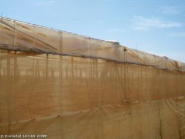
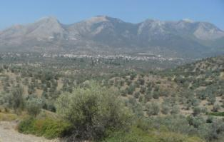
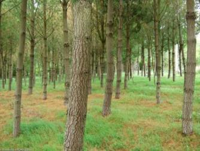
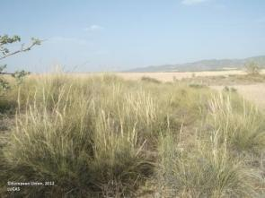
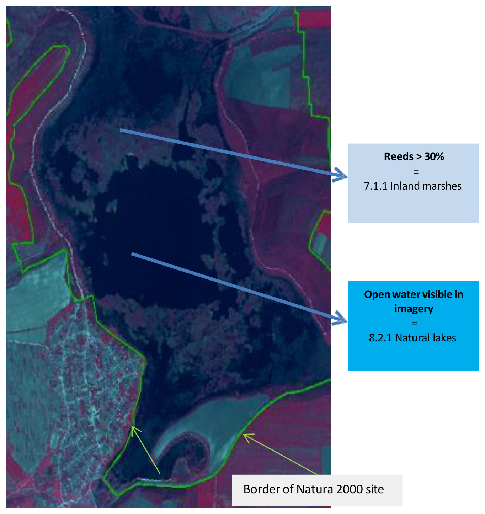

Protected Areas 2021-2024 - Nomenclature Guideline
Copernicus Land Monitoring Services
Protected Areas monitoring, Land Cover/Land Use classification, Natura 2000 sites, Classification hierarchy, MAES typology, Minimum Mapping Unit (MMU), Minimum Mapping Width (MMW), Object delineation rules, Thematic class definitions, Wetland land cover, Woodland and forest classification, Cropland types
Contact:
European Environment Agency (EEA)
Kongens Nytorv 6
1050 Copenhagen K
Denmark
https://land.copernicus.eu/
1 Introduction
This document provides a comprehensive Land Cover / Land Use (LC/LU) nomenclature guideline for the Copernicus local land monitoring products Protected Areas 2021-2024. It covers a detailed description of all LC/LU classes, their geographic characteristics, available input datasets and relevant methods to interpret the respective classes.
2 Protected Areas LC/LU legend
The Nomenclature for the LC/LU dataset is structured into four levels (Code level 1 – Code level 4). The LC/LU code levels were designed to correspond to the Mapping and Assessment of Ecosystems and their Services – MAES typology Level 21.
Table 1: Detailed Nomenclature for the LC/LU dataset overview (dated 19.12.2021)
| Level 1 | Level 2 | Level 3 | Level 4 | MAES Level 2 |
| 1. Urban | 1.1 Urban fabric, industrial, commercial, public, military and private units | 1.1.1 Urban fabric (predominantly public and private units) | URBAN | |
| 1.1.2 Industrial, commercial and military units | ||||
| 1.2 Transport infrastructure | 1.2.1 Road networks and associated land | |||
| 1.2.2 Railways and associated land | ||||
| 1.2.3 Port areas and associated land | ||||
| 1.2.4 Airports and associated land | ||||
| 1.3 Mineral extraction, dump and construction sites, land without current use | 1.3.1 Mineral extraction sites, dump and construction sites | |||
| 1.3.2 Land without current use | ||||
| 1.4 Green urban, sports and leisure facilities | ||||
| 2. Cropland | 2.1 Arable land | 2.1.1 Arable irrigated and non-irrigated land | CROPLAND | |
| 2.1.2 Greenhouses | ||||
| 2.2 Permanent crops | 2.2.1 Vineyards, fruit trees and berry plantations | |||
| 2.2.2 Olive groves | ||||
| 2.3 Heterogeneous agricultural area | 2.3.1 Annual crops associated with permanent crops | |||
| 2.3.2 Complex cultivation patterns | ||||
| 2.3.3 Land principally occupied by agriculture with significant areas of natural vegetation | ||||
| 2.3.4 Agro-forestry | ||||
| 3. Woodland and forest | 3.1 Broadleaved forest | 3.1.1 Natural & semi-natural broadleaved forest | WOODLAND AND FOREST | |
| 3.1.2 Highly artificial broadleaved plantations | ||||
| 3.2 Coniferous forest | 3.2.1 Natural & semi-natural coniferous forest | |||
| 3.2.2 Highly artificial coniferous plantations | ||||
| 3.3 Mixed forest | 3.3.1 Natural & semi-natural mixed forest | |||
| 3.3.2 Highly artificial mixed plantations | ||||
| 3.4 Transitional woodland and scrub | ||||
| 3.5 Lines of trees and scrub | ||||
| 3.6 Damaged forest | ||||
| 4. Grassland | 4.1 Managed grassland | GRASSLAND | ||
| 4.2 Natural & semi-natural grassland | 4.2.1 Semi-natural grassland | 4.2.1.1 Semi-natural grassland with woody plants (C.C.D. ≥ 30 %) | ||
| 4.2.1.2 Semi-natural grassland without woody plants (C.C.D. < 30%) | ||||
| 4.2.2 Alpine and sub-alpine natural grassland | ||||
| 5. Heathland and scrub | 5.1 Heathland and moorland | HEATHLAND AND SCRUB | ||
| 5.2 Alpine scrub land | ||||
| 5.3 Sclerophyllous scrubs | ||||
| 6. Open spaces with little or no vegetation | 6.1 Sparsely vegetated areas | SPARSELY VEGETATED | ||
| 6.2 Beaches, dunes, river banks | 6.2.1 Beaches and dunes | |||
| 6.2.2 River banks | ||||
| 6.3 Bare rocks, burnt areas, glaciers and perpetual snow | 6.3.1 Bare rocks, outcrops, cliffs and scree | 6.3.1.1 Bare rocks, outcrops, cliffs | ||
| 6.3.1.2 Scree | ||||
| 6.3.2 Burnt areas (except burnt forest) | ||||
| 6.3.3 Glaciers and perpetual snow | 6.3.3.1 Glaciers | |||
| 6.3.3.2 Perpetual snow | ||||
| 7. Wetland | 7.1 Inland wetlands | 7.1.1 Inland marshes | WETLAND | |
| 7.1.2 Peat bogs | 7.1.2.1 Exploited peat bogs | |||
| 7.1.2.2 Unexploited peat bogs | ||||
| 7.2 Coastal wetlands | 7.2.1 Salt marshes | MARINE INLETS AND TRANSITIONAL WATERS | ||
| 7.2.2 Salines | ||||
| 7.2.3 Intertidal flats | ||||
| 8. Water | 8.1 Water courses | 8.1.1 Natural & semi-natural water courses | RIVERS AND LAKES | |
| 8.1.2 Highly modified water courses and canals | ||||
| 8.1.3 Seasonally connected water courses (oxbows) | ||||
| 8.2 Lakes and reservoirs | 8.2.1 Natural lakes | |||
| 8.2.2 Reservoirs | ||||
| 8.2.3 Aquaculture ponds | ||||
| 8.2.4 Standing water bodies of extractive industrial sites | ||||
| 8.3 Transitional waters | 8.3.1 Lagoons | MARINE INLETS AND TRANSITIONAL WATERS | ||
| 8.3.2 Estuaries | ||||
| 8.3.3 Marine inlets and fjords | ||||
| 8.4 Sea and ocean | 8.4.1 Open sea | OPEN OCEAN | ||
| 8.4.2 Coastal waters | COASTAL |
3 Mapping rules
3.1 Object delineation
Object delineation is performed on VHR EO data as primary data source. In areas, where two or more satellite scenes overlap, the most suitable scene is chosen as primary data source. In this regard a detailed prioritization system has been established considering especially acquisition year and acquisition month. In cases where clouds or cloud shadows cover the area of interest alternative image data can be used.
3.2 Delineation Rules
Object delineation should be as follows:
- Delineation shall be angular and not round.
- Avoid to digitize too many vertices: Use vertices as few as possible and only as many as necessary to define the shape of an object.
- Avoid to map sharp angles.
- Use road centers (roads < 10 m width) as border between two objects if roads separate two features. E.g. a forest and an agricultural area are separated by a road feature < 10 m width. Map the border between forest and agriculture in the middle of the road.
3.3 Minimum Mapping Unit (MMU) / Minimum Mapping Width (MMW)
The minimum mapping unit defined is \(\geq 0.5\) ha for all objects. A minimum width of \(\geq 10\) m is defined.
MMU exceptions:
- Objects located at a site border: If an object is cut at an AOI border, the feature is mapped, if the whole object (inside and outside the AOI) amounts to \(\geq 0.5\) ha. However, the MMU of those divided features lying inside the site shall have a MMU of at least \(\geq 0.2\) ha. Smaller objects will be generalized.
- Complex changes (see below).
- Linear features (roads, railways, rivers) that are split in two or more polygons by other linear elements (e.g. the road/railway network) will be mapped even if the resulting segments are smaller than the MMU in order to preserve the network. However, features \(< 0.2\) ha will be generalized.
- Urban objects which are confined by roads or railways. Features \(< 0.2\) ha will be generalized.
MMW exceptions:
- To maintain continuity of features with mostly linear nature (Codes 1.2.1, 1.2.2, 6.2.1, 6.2.2, 8.1.1 and 8.1.2), the MMW may fall below the limit of 10 m over a distance of up to 100 m.
3.4 Good Practice for Data Display – Mapping Scale
On-screen mapping scale is 1:5.000 – 1:10.000 depending on the landscape and feature class. Large homogeneous objects like agricultural areas or woodland are mapped at scales 1:8.000 – 1:10.000. For all other features, 1:5.000 mapping scale is applied.
3.5 Overlap Rules
- Objects may not overlap. In case of real objects overlay, the following rules apply:
- If objects overlap on different levels, the top level is mapped. Example: if a road bridge overlaps a river, the road is mapped continuously.
- If objects overlap on the same level, the visually dominant object is mapped continuously. However, if roads and railways meet on the same level, railways are mapped continuously to maintain the railway network.
3.6 Priority Rules
The priority rules applied are defined as follows:
- Objects \(< 0.5\) ha are added to the neighboring object with the next number of the same sub-class.
- Objects \(< 0.5\) ha are added to the neighboring object with the longest common border line. Exception: Objects surrounded by railways or roads. If an object is below the MMU size and completely surrounded by a road or railway network, it shall be aggregated with that surrounding traffic line.
3.7 Water level rules and flooding mapping
A flood event is not considered as a “Temporal fluctuation of water level”. In case of a extraordinary flood event the actual/real land cover/land use should be mapped.
![False-colour infrared satellite imagery displays a diverse riverine landscape. A wide, dark blue/black river flows diagonally from the top-right to the bottom-left, featuring a distinct, elongated island in its lower section. Inland, a meandering, narrower dark blue/black channel is visible, connecting to and surrounded by other smaller, irregularly shaped dark blue/black water bodies. The majority of the visible land area consists of agricultural fields, shown in varying shades of bright red (indicating healthy, actively vegetated areas) and lighter green/grey (suggesting bare soil, fallow land, or different crop types with less infrared reflectance). Two urban areas are prominent: a larger settlement with a dense, light blue/grey grid pattern of roads and buildings is located on the far left, and a smaller, similar urbanized area is visible towards the top-centre. The areas immediately adjacent to the main river and inland water bodies, forming riparian zones, show a mixture of red and greenish-grey tones, indicating natural vegetation and varied land cover types. The imagery highlights distinct land cover features such as large water bodies, extensive agricultural plots, and urban structures.](Protected_Areas_2021-2024_Nomenclature_Guideline_v1-media/img-67ab9e80b6856669027665c929f7500a.jpeg)
3.8 Allowed Comments
In order to clarify certain mapping delineations, there are some comments defined as product attributes.
Table 2: List of allowed comments
| Order No | Description; Note | Comment |
|---|---|---|
| 1 | Polygons < 0.5 ha at outer Aol site boundary, that have an apparent continuation outside the Aol boundary, which is visible on the image data. | “Area size exception (at Protected Areas Aol boundary)” |
| 2 | Polygons < 0.5 ha inside Aol site boundary, that are allowed due to nomenclature guideline rules e.g. to represent changes, to ensure continuity of road/rail/river network at intersections of these classes, to mark urban objects confined by roads or railways ≥ 0.2 ha up to < 0.5 ha | “Area size exception (inside Protected Areas Aol boundary)” |
4 Description of mapping features
1. Urban
The urban classes contain land that is covered by building structures and transport network. Urban fabrics appear in blue and darkish blue-grey colours on satellite images.
From the UA Mapping Guide:
- Surfaces with dominant human influence but without agricultural land use. These areas include all artificial structures and their associated non-sealed and vegetated surfaces.
- Artificial structures are defined as buildings, roads, all constructions of infrastructure and other artificially sealed or paved areas.
- Associated non-sealed and vegetated surfaces are areas functionally related to human activities, except agriculture.
- Also, the areas where the natural surface is replaced by extraction and / or deposition or designed landscapes (such as urban parks or leisure parks) are mapped in this class.
- The land use is dominated by permanent population.
Specific generalization/delineation rules are applied for urban classes:
- Segments of roads, rivers and railways \(< 0.5\) ha, that are necessary to represent the “network” of each feature, will be mapped. Features \(< 0.2\) ha will be generalized.
- Urban objects confined by roads or railways \(\geq 0.2\) up to \(< 0.5\) ha, will be mapped. Smaller urban objects will be generalized.
- If an infrastructure line is crossing a river, the bridge has to be mapped if the bridge is wider than 10 meters.
This category includes:
1.1 Urban fabric, industrial, commercial, public, military and private units
- Urban fabric contains land covered by artificial structures and transport networks. Industrial or commercial units are almost completely covered by artificial surface.
1.2 Transport infrastructure
- Motorways, roads and railways with their associated land and installations are included in this class if width > 10 m. Airports and port areas with installations and associated land are included. If an infrastructure line is crossing a river, the bridge has to be mapped if the bridge is wider than 10 meters.
1.3 Mineral extraction, dump and construction sites, land without current use
- Dump sites include public, industrial or mine dump sites. Construction development, soil and bedrock excavations and earthwork are included in this class. Land without current use is land that is in a transitional phase. It is included in urban areas.
1.4 Green urban areas, sports and leisure facilities
- Green urban areas are areas with vegetation within the urban fabric and include parks. In sports and leisure facilities, camping grounds, sport grounds, leisure parks, golf courses, racecourses, etc. are included. It also comprises parks not surrounded by urban areas.
1.1 Urban fabric, industrial, commercial, public, military and private units
1.1.1 Urban fabric (predominantly public and private units)
Definition:
Buildings and their associated land together with artificial surfaced areas, regardless of the building density. Predominant residential usage contains non-sealed areas, independent of the housing scheme (single family houses or high-rise dwellings, city centre or suburb). The non-sealed areas might be private gardens or common green areas.
This category includes:
Very dense Urban:
- Built-up areas and their associated land with dominant residential use; mostly inner-city areas with central business district as long as there is partial residential use.
- Buildings, roads and sealed areas cover most of the area; non-linear areas of vegetation and bare soil.
Dense Urban:
- Predominant residential usage.
Low dense Urban:
- Residential buildings in rural areas, roads and other artificially surfaced areas. The vegetated areas are predominant, but the land is not dedicated to forestry or agriculture.
- Built-up areas on small farms.
This category excludes:
- Industrial, commercial, public (hospitals, museums, castles, university campuses, schools, government districts, cemeteries, big farms…), military \(\rightarrow\) class 1.1.2 Industrial, commercial and military unit
- Nurseries with dominant areas of greenhouses (no or only small fields) \(\rightarrow\) class 2.1.2 Greenhouses
- Allotment gardens \(\rightarrow\) class 1.4 Green urban, sports and leisure facilities
- Holiday villages (“Club Med”) \(\rightarrow\) class 1.4 Green urban, sports and leisure facilities
![A ground-level photograph depicting a dense urban area, identified as 'Continuous Urban fabric IM.D. (Palermo, Spain)'. The image features numerous multi-story residential buildings with distinct dark grey pitched roofs and multiple dormer windows. Facades of the buildings are varied, showing colours such as pink, light blue, and various shades of white and grey. Some trees and green areas are visible in the foreground and between buildings, suggesting areas not entirely sealed. The sky is overcast. The image is credited to M. Escobar and serves to illustrate aspects of urban land cover and Imperviousness Density (IMD), particularly within predominant residential usage contexts.](Protected_Areas_2021-2024_Nomenclature_Guideline_v1-media/img-5f28a8abd589a48c80d6398bcb13ea47.jpeg)
![A ground-level photograph depicts a narrow, paved urban street or alleyway flanked by densely packed, multi-story residential buildings. The buildings show signs of age, with worn facades, some peeling paint, and visible stone masonry. On the right side of the street, multiple lines of laundry hang from building exteriors. Air conditioning units are attached to the building facades. A scooter is parked in the middle of the street in the distance. The sky is overcast. This image serves as an illustration of 'Dense Urban fabric' in the context of Copernicus Land Monitoring Service (CLMS) land cover classification, indicating an area with predominant residential usage.](Protected_Areas_2021-2024_Nomenclature_Guideline_v1-media/img-7d887b555ce0f7b9f60c2b5519c76c96.jpeg)
![A ground-level photograph depicts a quiet residential street scene. On the right, a row of at least three detached or semi-detached houses with light-coloured vertical siding and red-orange tiled roofs are visible. Each house is set behind a small, neatly trimmed green lawn and a dense green hedge. In the immediate foreground, a paved brick pathway transitions to a darker, possibly asphalt, road on the left. Two utility structures are positioned near the hedges: a light-grey rectangular box mounted on a pole, and a wooden slatted bin with a green top. Scattered trees are present in the background and along the street. The houses exhibit a consistent architectural style, characteristic of a developed, potentially suburban or 'Dense Urban fabric' residential area.](Protected_Areas_2021-2024_Nomenclature_Guideline_v1-media/img-1114de634d00b950c38135887be8411e.jpeg)
![A ground-level photograph depicts a 'Dense Urban fabric' area in Stockholm, Sweden. The foreground features a paved, asphalt road curving slightly to the right, flanked by grassy verges and scattered deciduous trees. In the midground, there are low-rise buildings and more green spaces with trees and fences. The background is dominated by several multi-story residential apartment buildings, predominantly with reddish-brown facades and white accents. The sky is partly cloudy. The visible caption states: 'Dense Urban fabric : City: Stockholm. Cred'. Based on the surrounding document context, the full credit is C. Rosén.](Protected_Areas_2021-2024_Nomenclature_Guideline_v1-media/img-f8e5e13175dc727d4ae09fa859868cb9.jpeg)
![A ground-level photograph depicts a 'Low dense Urban' residential area. A light-coloured unpaved road or path forms a Y-junction in the foreground, with one branch curving to the right. On both sides of the road are dense green hedges, beyond which are grassy areas. Several trees, including conifers and deciduous trees, are visible in the background and along the edges. On the right side, a two-story residential building with light-yellow siding, two dormer windows, and a brown roof is prominent, accompanied by a smaller, single-story light-yellow building. Other buildings with orange roofs are partially visible further back. A small human figure is walking in the middle of the main road in the distance. The overall scene shows a mix of residential structures and predominant vegetated areas, characteristic of 'Low dense Urban' classifications, where residential buildings are in rural areas, roads are artificially surfaced, and vegetated areas are predominant but not dedicated to forestry or agriculture.](Protected_Areas_2021-2024_Nomenclature_Guideline_v1-media/img-5c2c54d372271b55ac31bed1af6e0f11.jpeg)
![The image is a ground-level photograph depicting a residential area, specifically an example of 'Low density urban fabric'. The foreground features a heart-shaped swimming pool with blue tiles, encircled by light-coloured paved surfacing. This pool is set within a large, predominantly green lawn, which includes a tall palm tree on the left and various shrubs and other vegetation. In the background, several white residential buildings with terracotta-coloured roofs are visible, interspersed among green foliage. The scene illustrates a residential setting where vegetated areas are predominant, but also includes significant artificial surfaces like the pool and paving, consistent with the description of 'Low dense Urban' land cover types.](Protected_Areas_2021-2024_Nomenclature_Guideline_v1-media/img-1c4cef9b20d6afdb48398ef4c213567b.jpeg)
Appearance:
- Urban fabric appears in blue or dark blue /grey colours on satellite images.
![The map displays an unspecified urban area in Europe, rendered in false-color infrared satellite imagery. Vegetation appears in shades of red, built-up areas (buildings, roads) in blue-grey/cyan, and water bodies in dark black. Overlaid on this imagery are numerous polygons outlined in bright yellow, each delineating a distinct land cover/use unit and labelled with a numeric code. The visible land cover class codes and their likely interpretations based on CORINE Land Cover (CLC) are: - `1110`: Continuous urban fabric. - `1120`: Discontinuous urban fabric. - `1400`: Green urban areas, sports and leisure facilities. - `9110`: Inland waters, specifically rivers. - `210`: An unspecified land cover/use class, distinct from the urban and water categories, possibly relating to agricultural or greenhouse areas as suggested by the document's broader context. The spatial pattern reveals a complex urban landscape where continuous and discontinuous urban fabrics (`1110`, `1120`) are interspersed with green spaces (`1400`) and a river (`9110`) that meanders through the city. The yellow outlines define the boundaries of these classified land parcels. No scale bar, compass orientation, or specific reference year is visible.](Protected_Areas_2021-2024_Nomenclature_Guideline_v1-media/img-a4a8c7c21e77b71d264864ae78bce8af.jpeg)
![This is a false-colour infrared (FCIR) satellite image showcasing an urbanized area alongside a body of water, likely a river or bay. In this FCIR composition, dense vegetation appears as bright red, artificial surfaces such as buildings, roads, and other impervious areas are depicted in tones of grey and blue, and water bodies are dark blue to black. A prominent light blue polygon boundary delineates a densely built-up urban core, within which the label '1110' is clearly visible in light blue text. This designated area, characterized by a high concentration of artificial surfaces and a complex road network, likely represents a land cover class such as 'Continuous Urban Fabric' or 'Dense Urban fabric' within a Copernicus Land Monitoring Service (CLMS) or CORINE Land Cover (CLC) classification framework, reflecting its high Imperviousness Density (IM.D.). The image includes a visible bridge or elevated road structure crossing the water body.](Protected_Areas_2021-2024_Nomenclature_Guideline_v1-media/img-7da2fbcf79e6dc863f00132ab31109cb.jpeg)
![A false-colour infrared satellite image depicting a dense urban area identified as CORINE Land Cover (CLC) code 1110, 'Continuous urban fabric'. In this representation, healthy vegetation appears in bright red, while roads, buildings, and other impervious surfaces are displayed in shades of blue and grey. A prominent cyan numerical label '1110' is centrally placed within the image. Black outlines delineate distinct mapping units or administrative boundaries. The image shows a complex network of residential and commercial structures with interspersed vegetation. The surrounding context indicates this image is from Nyköping, Sweden, captured on 2011-06-03 by the Spot 5 satellite at a 2.5 metre resolution, using a 1/2/3 band combination, and is credited to CNES 2011©.](Protected_Areas_2021-2024_Nomenclature_Guideline_v1-media/img-a56a932140ac083e0c6d4e1530121c22.jpeg)
![False-colour infrared (NIR) satellite image depicting a densely built-up urban area in Nyköping, Sweden, captured on 2011-06-03 by Spot 5 at 2.5 m resolution, using a 1/2/3 band combination. The image shows a dark blue/black river in the upper portion, flanked by bright red vegetation (healthy biomass). The urban fabric, consisting of buildings and roads, appears in shades of dark blue and grey, consistent with its spectral signature in false-colour imagery. A turquoise blue line delineates a polygonal area within the urban fabric, labelled '1110'. This area corresponds to Class 1.1.1 (Continuous Urban Fabric) in the CORINE Land Cover (CLC) nomenclature. Additional yellow dashed lines delineate other land parcels, likely property boundaries or other thematic features, within both urban and vegetated areas. The imagery copyright is CNES 2011©, distributed by Airbus DS/Spot Image.](Protected_Areas_2021-2024_Nomenclature_Guideline_v1-media/img-194b6d590655a2b0573c876dbca65a64.jpeg)
![This map displays a false-colour infrared satellite image of a rural landscape, likely used to illustrate land cover classification. The image features distinct colour patterns: healthy vegetation (e.g., agricultural fields, forests) appears in shades of red and dark red, while areas with less vegetation or bare soil appear browner. A dark, winding feature with a thin dark green outline represents a river or lake, while narrower black lines with thin green borders denote roads. Several polygons are outlined in light blue, each containing the label '1110' in a grey box. These '1110' polygons highlight small clusters of buildings or settlements, consistent with artificial surfaces. Other land parcels or features are delineated by thin green lines. The image serves as a visual example of land cover class 1110, which, in the context of the document, represents a type of urban fabric or artificial surface, likely discontinuous or low-density, used in a land cover nomenclature. No explicit geographic location, scale bar, compass, or date is visible on this specific image.](Protected_Areas_2021-2024_Nomenclature_Guideline_v1-media/img-182130b607a9c6baf2d82f11226b9e73.jpeg)
![A false-colour satellite image depicts a landscape featuring a mosaic of agricultural fields, scattered settlements, and a riparian zone. Dense vegetation, particularly along the river in the lower portion of the image, appears in shades of bright red, indicating high chlorophyll content typical of healthy biomass when displayed with a Near-Infrared (NIR) band mapped to red. Agricultural fields show diverse colours ranging from bright red to turquoise and blueish-grey, reflecting different crop types, growth stages, or bare soil. Several small, irregularly shaped areas containing clusters of buildings and associated infrastructure are highlighted by yellow polygon outlines and labelled '1110'. These labelled areas correspond to 'Continuous Urban fabric' (Class 1.1.1) as defined in the Copernicus Land Monitoring Service (CLMS) nomenclature guidelines. The image resolution is 2.5 metres, derived from a Spot 5 satellite using a 1/2/3 band combination (Green/Red/NIR). The data is sourced from CNES 2011©, distributed by Airbus DS/Spot Image.](Protected_Areas_2021-2024_Nomenclature_Guideline_v1-media/img-672fb04372e700392740704fdaed99df.jpeg)
![This map displays a high-resolution false-colour satellite image of a coastal area, likely utilising near-infrared, red, and green spectral bands where dense vegetation appears in shades of red, and water bodies are dark blue or black. White or light grey specks within the red areas indicate built structures. The image is overlaid with yellow-outlined polygons, each containing a numerical land cover classification code. The identified classification codes and their likely interpretations based on the Copernicus Land Monitoring Service (CLMS) CORINE Land Cover (CLC) nomenclature, supplemented by contextual information on 'Nomenclature Guidelines' for CLC+, are: * **1110** (on grey background): Appears in several polygons depicting developed areas with visible structures, likely representing 'Continuous Urban fabric' (related to CLC code 111, which is 'Continuous urban fabric'). * **4212** (on orange background): Located in polygons bordering the water, likely representing a sub-class of 'Coastal wetlands' or 'Coastal lagoons' (related to CLC codes 421 'Coastal lagoons' or 422 'Salt marshes'). * **3110** (on orange background): Found in the bottom right corner, outside a detailed polygon but within a large area of dense red vegetation, indicating a sub-class of 'Broad-leaved forest' (related to CLC code 311). The map lacks a scale bar, compass orientation, or explicit date of imagery; however, the surrounding document context references Spot 5 (2.5 m resolution) imagery from 2011 or 2012.](Protected_Areas_2021-2024_Nomenclature_Guideline_v1-media/img-37adf0b18cd616d6b11bc76628babb92.jpeg)
Exceptions from MMU:
Exceptions from MMU \(> 0.5\) ha are made for 1.2.1 Road networks and associated land and 1.2.2 Railways and associated land in order to keep the network formed by these linear features. Further exceptions are urban areas (1.1.1) or industrial/commercial units (1.1.2) being encircled by either rails, roads or rivers. In those cases urban features up to a MMU of 0.2 ha are kept and flagged with comments (Table 2).
MMW exceptions:
To maintain continuity of linear features, the MMW may fall below the limit of 10 m over a distance of up to 100 m.
Generalization rules for urban areas with low density:
If a strict MMU \(> 0.5\) ha mapping of urban fabric areas is applied, the low urban density areas would be underestimated. Therefore, to get a good representation of the area, the following generalisation rules will be adopted:
- Do not apply the 10 m MMW distance rule at the urban fringe but apply a \(< 50\) m MMW to generalize outline.
- Include private gardens.
- Avoid mapping of single urban segments.
- Map the “whole structure”.
- Close gaps at the urban fringe applying a maximum width of 50 m.
In any case, real agricultural/grassland parcel contained within urban surroundings, will be mapped as agricultural/grassland.
![False-colour infrared satellite imagery showing a rural landscape with a linear settlement and surrounding agricultural and forest areas, annotated with land cover codes and distance criteria for delineation. The image depicts a main linear settlement outlined in yellow and labelled '1110' (likely representing Discontinuous Urban Fabric, related to CLC+ class 1.1.1 Urban areas). Surrounding this are agricultural fields, with one larger area of agricultural land labelled '2320' (likely Complex Cultivation Patterns, CLC code 232). In the top right, a patch of forest is labelled '3110' (likely Broad-leaved Forest, CLC code 311). Arrows indicate two distance criteria for separating or aggregating features within the settlement: one area marked as '> 50 m' between delineated parcels and another as '< 50 m'. This image is an example demonstrating land cover mapping rules, potentially related to Minimum Mapping Unit (MMU) exceptions and spatial aggregation for Copernicus Land Monitoring Service (CLMS) products such as CORINE Land Cover (CLC) or CLC+.](Protected_Areas_2021-2024_Nomenclature_Guideline_v1-media/img-0a1304112f94ce3f8ec583749ef5cde1.jpeg)
![This image displays three false-color satellite imagery panels from Spot 5, illustrating the application of land cover classification and generalization rules, likely in the context of Copernicus Land Monitoring Service (CLMS) CORINE Land Cover (CLC) or CLC+. The imagery uses a 1/2/3 band combination, typically showing vegetation in shades of red and turquoise, and has a 2.5 m resolution. The capture dates are 2011-07-23 and 2012-08-11. The left panel presents the original satellite imagery, showing a rural landscape characterized by long, rectangular agricultural fields (red/pink), scattered low-density urban development (turquoise/white building clusters), and some natural vegetation. A winding road or path is visible through the developed area. The middle panel applies land cover classification overlays to the same area. Features are delineated by green polygons and labelled with 4-digit CORINE Land Cover codes: - **1110 (Low-density urban fabric):** Outlines clusters of buildings and associated perimeters along the winding road. The yellow arrows indicate areas where smaller, individual structures are generalized into larger polygons to meet Minimum Mapping Unit (MMU) or generalization criteria for class 1.1.1. - **2210 (Arable land):** Labels the large agricultural fields. - **3110 (Broad-leaved forest):** Labels a forested patch in the upper left. - **4100 (Inland marshes):** Labels a linear feature, likely a riparian zone or a specific type of linear vegetation/wetland along a road or drainage. A '30 m' scale bar is present in a yellow box, indicating the spatial reference. The right panel is a magnified view of a section from the middle panel, specifically highlighting a segment of the low-density urban fabric (1110) and adjacent inland marshes (4100) along the winding feature, further demonstrating the polygon delineation and classification.](Protected_Areas_2021-2024_Nomenclature_Guideline_v1-media/img-a02d6be6e45af49add81184658ceb477.jpeg)
![This image displays two side-by-side false-colour satellite images acquired by Spot 5 (2.5 m resolution, 1/2/3 band combination) on 2011-07-23, illustrating the application of generalization rules for mapping low urban density areas. The images depict an agricultural area with scattered houses and a road network in Åre, Sweden. The left panel shows the raw satellite imagery, where cultivated fields appear reddish-brown, and built-up areas and roads are cyan/white. The right panel shows the same area with green polygons overlayed, demonstrating the generalized delineation of urban fabric. These polygons encompass individual buildings and connecting road segments, merging them into larger continuous features. Two grey-filled labels within the polygons read '1110', which corresponds to 'low urban density area class 1.1.1' as described in the accompanying text. Two yellow arrows indicate how previously separate structures or clusters are connected by this generalization. This visualization exemplifies the exceptions from strict Minimum Mapping Unit (MMU) and Minimum Mapping Width (MMW) rules for urban areas, where a less restrictive MMW of less than 50 metres is applied at the urban fringe to ensure a more comprehensive representation of low urban density areas.](Protected_Areas_2021-2024_Nomenclature_Guideline_v1-media/img-4e7de5ad89d125bbc0ea7363f729ade2.jpeg)
![A false-colour infrared satellite map, derived from Spot 5 imagery (2.5 m resolution, 1/2/3 band combination) dated 2011-07-23, illustrates the application of generalization rules for delineating low urban density areas within the Copernicus Land Monitoring Service (CLMS). The map shows a rural/peri-urban landscape where vegetation appears in various shades of red, and urban structures/bare soil appear in light blue or grey. A continuous yellow polygonal outline defines a 'low urban density area' (labeled '1110') stretching across the image. The delineation demonstrates specific mapping rules regarding gap closure: sections marked '< 50 m' indicate that narrow gaps between urban features, less than 50 metres in width, are included within the continuous urban boundary. Conversely, a section marked '> 50 m' shows a wider gap that causes the urban delineation to be split into separate polygons, as it exceeds the maximum width for gap closure. This visually explains how spatial rules are applied to maintain the continuity of urban fabric, preventing underestimation of low urban density areas by including private gardens and closing gaps up to 50 m.](Protected_Areas_2021-2024_Nomenclature_Guideline_v1-media/img-11d2a5c3eca9664125a675f8e0f6c3da.jpeg)
![The image presents a two-panel comparison illustrating the generalized delineation of low urban density areas, specifically CORINE Land Cover (CLC) class 1.1.1 (Continuous urban fabric). The source imagery is a Spot 5 satellite image (2.5 m resolution, 1/2/3 band combination) acquired on 2011-07-23. The left panel displays the raw false-colour infrared satellite imagery of an unspecified rural-urban fringe area. Vegetation appears in red hues, while built-up areas and bare ground appear in cyan/blue tones. Three yellow ellipses highlight areas of scattered, low-density urban fabric interspersed with vegetation, which represent fragmented features prior to land cover classification generalization. The right panel shows the same geographic area with overlaid, delineated land cover polygons and their corresponding CLC class codes. This panel demonstrates the application of generalization rules for urban areas, transforming the fragmented urban patches visible on the left into consolidated polygons. The CLC codes and their appearances are: * **1110** (Continuous urban fabric): Labelled with pink text inside a black-outlined box, outlined by pink polygons. These areas represent aggregated urban spaces, reflecting the generalization process for low urban density. * **1120** (Discontinuous urban fabric): Labelled with yellow text inside a black-outlined box, outlined by yellow polygons. * **1210** (Industrial or commercial units): Labelled with yellow text inside a black-outlined box, outlined by yellow polygons. * **1220** (Road and rail networks and associated land): Labelled with yellow text inside a black-outlined box, outlined by yellow polygons. * **2110** (Arable land): Labelled with yellow text inside a black-outlined box, outlined by yellow polygons. * **2320** (Pastures): Labelled with pink text inside a black-outlined box, outlined by pink polygons. * **3110** (Broad-leaved forest): Labelled with yellow text inside a black-outlined box, outlined by yellow polygons. * **3400** (Transitional woodland/shrub): Labelled with grey text inside a grey-filled, black-outlined box, outlined by grey polygons. * **4100** (Inland marshes): Labelled with yellow text inside a black-outlined box, outlined by pink or yellow polygons. * **4211** (Coastal lagoons): Labelled with yellow text inside a black-outlined box, outlined by yellow polygons. The comparison highlights how generalization rules, as per CORINE Land Cover guidelines, consolidate disparate urban features (e.g., private gardens, small gaps) into larger, more representative urban fabric polygons (classes 1110 and 1120), while retaining distinct mapping for adjacent agricultural/grassland areas (2110, 2320) and other land cover types.](Protected_Areas_2021-2024_Nomenclature_Guideline_v1-media/img-40f24f3bd1bf87c1fc94676eda6d3a74.jpeg)
If OSM delineation is too precise, please correct real errors and perhaps parts of the outline.
![This map displays two side-by-side views of a rural-urban fringe area, illustrating the application of generalization rules for land cover mapping based on Spot 5 satellite imagery (2.5 m resolution, 1/2/3 band combination) from 2011-07-23 (© CNES 2011, Distribution Airbus DS/Spot Image). The yellow outlines delineate land cover classes: '1110' represents Urban fabric (specifically low urban density areas, equivalent to CORINE Land Cover (CLC) class 1.1.1), and '2110' represents Arable land. The left map, labeled 'Example of non-generalized urban delineation,' shows an initial mapping where urban areas (1110) are fragmented, with multiple separate polygons representing individual buildings or small clusters. Black arrows highlight a narrow gap between two urban polygons. A distinct agricultural parcel (2110) is visible, surrounded by other land cover types. The right map, labeled 'Urban area generalized delineation,' demonstrates the application of generalization rules. The urban fabric (1110) polygons are now connected and smoothed, with gaps of less than 50 metres closed, and individual urban segments merged to represent the 'whole structure' of the low urban density area, including features like private gardens. The agricultural parcel (2110) remains clearly delineated as agricultural land, consistent with mapping guidelines that such parcels contained within urban surroundings should retain their agricultural classification.](Protected_Areas_2021-2024_Nomenclature_Guideline_v1-media/img-0681a4fa9a37fc70cf4605d640351809.jpeg)
Methodological advice:
- Use Urban Atlas Data, if available.
1.1.2 Industrial, commercial and military units
Definition:
This category contains industrial, commercial and military units. The administrative border and associated areas, such as roads, sealed areas and vegetated areas are included, if these areas are below the minimum mapping unit size. It also contains public, military and private services. At least 30% of the ground is covered by artificial surfaces. More than 50% of those artificial surfaces are occupied by buildings and / or artificial structures with non-residential use, i.e. industrial, commercial or transport related uses are dominant. The texture is homogenous with large buildings, car parks and sheds representing industrial or commercial complexes. Industrial or commercial units located in urban fabric are only taken into account if they are clearly distinguishable from residential areas.
This category includes:
Industrial uses and related areas:
- Sites of industrial activities, including their related areas.
- Production sites.
- Energy plants: nuclear, solar, hydroelectric, thermal, electric and wind farms.
- Farming industries (farms with large buildings and / or greenhouses below MMU, not production fields).
- Antennas, even with predominant vegetated areas. The vegetated areas may be predominant, but the land is not dedicated to forestry or agriculture.
- Water treatment plants, sewage plants and seawater desalination plants.
- Stud farms, agricultural facilities (cooperatives, state farm centers, livestock farms, living and exploitation buildings).
- Oil camps including administrative area.
- Abandoned industrial sites and by-products of industrial activities where buildings are still present.
- Water retention infrastructure (dam) and hydro-electric stations.
- Telecommunication networks (relay stations for TV, telescopes, radars) including associated land.
- Bare soil / grassland used for storage of material next to industrial sites.
Commercial uses, retail parks and related areas:
Surfaces purely occupied by commercial activities, including their related areas (e.g. parking areas even larger than the MMU).
High-rise office buildings.
Petrol and service stations within built-up areas.
Large shopping centers. Public, military and private services not related to the transport system:
Surfaces purely occupied by general government, public or private administrations including their related areas (access ways, lawns, parking areas).
Schools and universities research and development establishments, including associated areas like sports fields, meadows also if \(> 0.5\) ha whenever they are inside the administrative limit.
Hospitals and other health services or buildings.
Places of worship (churches/ cathedrals/ religious buildings).
Active archaeological sites and museums, near to urban areas.
Administration buildings, ministries.
Penitentiaries.
Military areas excluding bases and airports.
Military exercise areas fenced and under current use.
Castles, etc. not primarily used for residential purposes (building management, etc.).
Private storage areas without a residential component, such as compounds of garages.
Company benefit schemes (old people’s home, convalescent homes, orphanages, etc.).
Exposition sites, fair sites.
Military barracks, testing pistes, test fields, biological waste water treatment plants, water houses, transformers). The administrative boundary should be included and also associated land like storage space or managed grassland.
Mine land areas.
Cemeteries.
Jetties without boats (boats belong to the water body).
Civil protection and supply infrastructure:
- Dams and dikes, if they are unvegetated.
- Irrigation and drainage canals and ponds and other technical public infrastructure, to be mapped with the roads, embankments and associated land included.
- Includes also breakwaters, piers and jetties, sea walls and flood defenses.
- (Ancient) city walls, other protecting walls, bunkers.
- Avalanche barriers.
- Security, law and order services (fire stations, penal establishments, etc.).
Water areas in industrial sites:
Water areas in industrial sites (ponds, settling basins, slurry tanks, etc.) will be mapped as industrial site even though they are larger than 0.5 ha, except water bodies related to the extractive industry (mines and gravel). These are mapped as class \(\rightarrow\) 8.2.4 Standing water bodies of extractive industrial sites.
This category excludes:
- Petrol stations along fast transit and main roads with access only from these roads. They are mapped together with the road transport system \(\rightarrow\) class 1.2.1 Road networks and associated land.
- Public parks \(\rightarrow\) class 1.4 Green urban, sports and leisure facilities.
- Isolated holiday resorts including their hotels \(\rightarrow\) class 1.4 Green urban, sports and leisure facilities.
- Sport centers or bathing centers \(\rightarrow\) class 1.4 Green urban, sports and leisure facilities.
- Noise barriers \(\rightarrow\) class 1.2.1 Road networks and associated land or 1.2.2 Railways and associated land.
- Lines of trees (woody barriers) for shelter or shading \(\rightarrow\) class 3.5.0 Lines of trees and scrub.
- Water courses (within e.g. diked canals) if the water area is wider than 10 m \(\rightarrow\) class 8.1.1 Natural & semi-natural water courses, 8.1.2 Highly modified water courses and canals.
- Artificial reservoirs not connected to industrial sites \(\rightarrow\) class 8.2.2 Reservoirs.
- Dockyards and piers \(\rightarrow\) 1.2.3 Port areas and associated land.
- Greenhouse surfaces \(\rightarrow\) 2.1.2 Greenhouses.
- Dykes and dams, if they are vegetated \(\rightarrow\) grassland or suitable LC/LU.
- Non-active archaeological sites \(\rightarrow\) 1.3.2 Land without current use.
- Water bodies related to the extractive industry (mines and gravel) \(\rightarrow\) 8.2.4 Standing water bodies of extractive industrial sites.
- Toxic lakes, used for disposal \(\rightarrow\) 8.2.4 Standing water bodies of extractive industrial sites (if additional information is available indicating that the lake is used for industrial purposes – if no information is available: 8.2.1 Natural lakes or 8.2.4 Standing water bodies of extractive industrial sites).
- Small (usually temporal) agricultural dump sites (hay storage, manure, organic material, silage), if there is no other (permanent) storage or industrial facility in neighbourhood \(\rightarrow\) 1.3.1 Mineral extraction, dump and construction sites.
- Afforestation setting, but used as transect for power line poles; power line poles visible \(\rightarrow\) current LU / LC
- Open grassland, wood or other natural areas \(> 0.5\) ha (MMU) within the boundaries of military sites \(\rightarrow\) respective LC class.
![A daytime photograph captures an urban street scene featuring prominent buildings and transport infrastructure. In the foreground, cobblestone street pavement is visible, traversed by two sets of tram tracks running from left to right, receding into the distance. Several pedestrians are walking on the pavement area to the left and center. On the left side of the street, a large, ornate building dominates, characterised by a light-coloured facade, numerous tall arched windows, and a prominent chimney stack on its left side. Further to the right, behind the street, a smaller building with similar arched architectural features is visible, flanked by several smaller, brightly coloured commercial kiosks or stands. One kiosk has partially obscured, unreadable text on its facade. A dark-coloured car is parked or driving on the far right side of the street. A small bird is visible on the tram tracks in the foreground. The sky is partly cloudy. The scene depicts a mixed-use urban area with commercial activity and public transport infrastructure.](Protected_Areas_2021-2024_Nomenclature_Guideline_v1-media/img-bde291f79a0d6ae1a76fa5ab7aca9a2a.jpeg)
![A photograph depicting an industrial facility under a clear blue sky. The image shows large, light-coloured industrial buildings or warehouses with slightly pitched roofs, extending across the mid-ground. On the roof of one building, a prominent, tall structure resembling a crane or a conveyor system is visible. In front of the main buildings, organised stacks of industrial materials are visible, featuring red, blue, and silver-coloured components, likely pipes or metal structures, indicating a storage or production area. The foreground consists of unmanaged, dry grassy land with scattered low bushes, separating the viewer from the industrial complex. No specific labels, text, or dates are visible within the image. This scene exemplifies land classified as an industrial site, potentially falling under a category like 'Industrial, commercial and transport units' in land cover classification schemes.](Protected_Areas_2021-2024_Nomenclature_Guideline_v1-media/img-cb05860bf20889e954101a2db6277d91.jpeg)
Appearance:
![Aerial imagery (likely false-colour infrared) map illustrating a land cover classification unit. The image depicts a large industrial site, identifiable by its numerous grey-toned buildings and impervious surfaces, situated adjacent to a dark reddish-brown water body. The industrial site is specifically delineated by a prominent cyan polygon and labelled with the numerical code '1120', which corresponds to a detailed classification within the CORINE Land Cover (CLC) or CLC+ (next-generation land cover/land use) framework, typically representing an 'Industrial or commercial unit'. Surrounding the industrial area and water body are residential zones characterized by smaller buildings and reddish areas indicating vegetation. Faint green lines delineate additional land cover boundaries, potentially including road networks or other artificial areas. This image exemplifies how complex land use categories like industrial sites are identified and mapped within the Copernicus Land Monitoring Service (CLMS).](Protected_Areas_2021-2024_Nomenclature_Guideline_v1-media/img-1901095d0c9f938255c965ba23527ce4.jpeg)
![False-colour infrared satellite imagery showing an urban and peri-urban landscape. The base image displays built-up areas and roads in shades of blue and grey, and vegetation in shades of red. Two distinct areas are delineated by cyan outlines, each labelled with a grey box containing the cyan text '1120'. These polygons enclose large, rectilinear buildings and associated impervious surfaces, consistent with industrial or commercial units. Surrounding the classified areas, the map shows a dense network of residential buildings in shades of blue/grey and multiple vegetated plots and possibly recreational areas in red, indicating green spaces. A dark blue linear feature, likely a water course or canal, runs through the lower middle section of the image. The label '1120' corresponds to the CORINE Land Cover (CLC) class for 'Industrial or commercial units'. No scale bar, compass, or specific date is visible.](Protected_Areas_2021-2024_Nomenclature_Guideline_v1-media/img-bc614e9fee675d3a19c69ee6f7b74f8f.jpeg)
![False-colour infrared satellite imagery displays a mixed landscape segmented by overlaid blue lines, likely representing Copernicus Land Monitoring Service (CLMS) mapping units. Healthy vegetation appears bright red, such as the curved areas adjacent to the central river/canal, indicating agricultural fields. Buildings are rendered in light grey/white, while bare ground, sparse vegetation, and unpaved roads appear in brownish-grey tones. A river or canal runs through the centre, shown in dark blue/black. Several specific land cover features are highlighted by light blue polygon outlines. One such highlighted polygon, encompassing a cluster of buildings and associated infrastructure, is labelled '1120'. This numerical code corresponds to the CORINE Land Cover (CLC) class 1120, 'Discontinuous urban fabric,' which is consistent with the visual representation of scattered residential areas and roads in a semi-urban or rural setting. No scale bar, compass, legend, or specific reference year is visible.](Protected_Areas_2021-2024_Nomenclature_Guideline_v1-media/img-fcbf813eebc68ea6aad60bac0277286e.jpeg)
Methodological advice:
- Use Urban Atlas data, if available.
1.2 Transport infrastructure
1.2.1 Road networks and associated land
Definition:
Road network and its associated land. In this sense, a road is identified as the route with a specially prepared surface that is intended for use by wheeled vehicles. Minimum mapping width for roads is \(\geq 10\) m.
This category includes:
- Roads, crossings, intersections and parking areas, including roundabouts and sealed areas with “road surface”.
- Slopes of embankments or cut sections.
- Areas enclosed by roads or railways, without direct access not representing any Urban categories and whenever below MMU.
- Fenced areas along roads (e.g. as for protection against wild animals).
- Areas enclosed by motorways, exits or service roads with no detectable access.
- Non-woody noise barriers (fences, walls, earth walls) adjacent to roads.
- Rest areas, service stations and parking areas only accessible from the fast transit roads.
- Foot- or bicycle paths parallel to the traffic line.
- Closed-down roads.
- Green strips, alleyways (with trees or bushes) if less than 10m wide.
This category excludes:
- Motorways under construction \(\rightarrow\) 1.3.1 Mineral extractions, dump and construction sites.
- Closed-down roads (classified under the real appropriate land cover category) if MMW less than 10 m.
- Land plots \(> 0.5\) ha surrounded by roads and not considered as associated land. \(\rightarrow\) Map current land cover category.
![A ground-level photograph depicts a multi-level road network within an urban or peri-urban environment. In the mid-ground, a prominent elevated highway structure carries vehicles, including cars and white vans, across multiple lanes. Below this elevated section, a lower-level road is visible with parked cars and a large white and blue bus in the foreground. A small purple circular marker is present on this lower road surface. To the left of the road network, a dark-facade building stands, with a taller, slender grey high-rise building further in the background against a clear blue sky. On the right, a large, tall grey building with numerous windows occupies the frame's right side; green foliage is visible at its base. Streetlights are visible along the elevated road. The image illustrates components typically classified as 'Road networks and associated land' in Copernicus Land Monitoring Service (CLMS) documentation, such as those found in Urban Atlas data or relevant to the definition of transport infrastructure for land cover classification.](Protected_Areas_2021-2024_Nomenclature_Guideline_v1-media/img-e6083af39118c8c09eabd03bba5fe665.jpeg)
Appearance:
![A False Colour Infrared (FCIR) satellite image displays a landscape featuring a prominent river, dense vegetation, and a classified road network. The image is oriented with the river flowing roughly from north to south. The main features are: * A dark, winding river runs through the right side of the image. * Extensive areas of dark red indicate dense, healthy vegetation, likely forests, particularly visible on both sides of the river and to the west of the road. * Lighter pinkish-red rectangular shapes within the vegetated areas suggest agricultural fields or areas with sparser vegetation. * A distinct light blue line, representing a 'Road network and its associated land', runs parallel to the river on its western side. This road network is defined with a minimum mapping width of 10 metres. * A dark, elongated, oval-shaped feature on the far-left appears to be a lake or pond. * Scattered small white/grey points along the road and river suggest human settlements or individual buildings. No scale bar, compass, legend, or specific geographic location is visible in the image.](Protected_Areas_2021-2024_Nomenclature_Guideline_v1-media/img-75a4c354b56df276d429b627faf73b25.jpeg)
![This map displays an urban and peri-urban area in Stockholm, Sweden, using false-colour infrared (FCIR) satellite or aerial imagery. In this imagery, healthy vegetation appears in red tones, built-up areas and impervious surfaces are shown in grey or bluish hues, and water bodies are dark blue to black. Overlaid on this base imagery are several vector features: light blue lines delineate the road network and its associated land, while thin yellow and green outlines define other land cover/land use (LULC) polygons. Visible geographic features include a major river or water body, dense urban development, industrial zones, extensive vegetated areas, an airport runway in the bottom-left, and a stadium or athletic track in the bottom-middle. The map serves as an example for the classification of 'Road network and its associated land' for Copernicus Land Monitoring Service (CLMS) guidelines, highlighting features with a minimum mapping width of 10 metres. The credit for the image is K. Larsson.](Protected_Areas_2021-2024_Nomenclature_Guideline_v1-media/img-632782f13c36a5fde57865c878382de8.jpeg)
![Satellite imagery, likely a false-colour infrared composite, displaying a mixed landscape in Stockholm, Sweden, credited to K. Larsson. The image illustrates the Copernicus Land Monitoring Service (CLMS) Land Cover class 1210, 'Road network and its associated land', which is highlighted in light blue. The upper portion of the image shows dense urban or peri-urban areas, characterised by blueish-grey patterns of buildings and streets. A prominent road network, including a bridge crossing a river and a motorway interchange, is outlined in light blue, indicating the feature being classified as 1210. The river itself appears dark blue/green. The lower and right-hand portions of the image show large areas of vegetation, likely agricultural fields, appearing in vibrant red hues characteristic of infrared imagery, interspersed with some lighter grey/brown areas possibly indicating bare soil or other non-vegetated surfaces.](Protected_Areas_2021-2024_Nomenclature_Guideline_v1-media/img-c0271c5e3bd9d48849bf9d9abf906086.jpeg)
Specific aspects:
- Roads do not necessarily have to form a closed network. Isolated traffic lines are possible, but they have to be mapped with regard to the MMU criterion.
- Associated land \(< 0.5\) ha MMU is mapped with the roads as it is visible in the EO data and topographic maps.
- If a road is covered by a tunnel, the LU/LC above the tunnel has to be mapped.
Specific generalization rule:
![This map displays a detailed land cover classification for a generic European landscape, featuring various polygonal areas and linear features. The primary land cover areas are shown as light green polygons, each labelled with a four-digit numeric code. These codes include: 1110, 1120, 1210, 1220, 1400, 2110, 4100, 4212, and 8110. A network of linear features, appearing to be roads or associated transport infrastructure, is highlighted in light purple and consistently labelled with the numeric code 3500. Delineating the boundaries of these classified areas are thin grey lines. In the bottom right corner, a partially obscured Geographic Information System (GIS) 'Identify' pop-up window is visible, indicating an 'Identified 1 feature' from the '<Top-most layer>' with a 'Location' coordinate of '4.201.818,524 2.989.572,209 Meters'. The map illustrates the intricate spatial distribution of different land cover/land use types, with the numeric codes representing specific classification categories, although a full legend for these codes is not provided in the image. No scale bar, compass, or reference year is present.](Protected_Areas_2021-2024_Nomenclature_Guideline_v1-media/img-c332c9e8e387dc4baa869fe1fee21fac.jpeg)
Methodological advice:
- Use Urban Atlas Data, if available.
- Use COTS transport infrastructure data.
1.2.2 Railways and associated land
Definition:
Railways and its associated land. In this sense, a railway is identified as one or more railway tracks comprising a network that is operated for the conveyance of passengers and/or goods. Minimum mapping width \(\geq 10\)m.
This category includes:
- Railway facilities including stations, cargo stations and service areas.
- Closed-down rails \(\geq 10\)m MMW and areas where infrastructure is still visible.
This category excludes:
- Rails ending in industrial sites \(\rightarrow\) 1.1.2 Industrial, commercial and military units.
- Tramways \(\rightarrow\) 1.2.1 Road networks and associated land.
- monorails, funiculars \(\rightarrow\) 1.2.1 Road networks and associated land.
- Railways and high-speed train under construction \(\rightarrow\) 1.3.1 Mineral extractions, dump and construction sites.
- Closed-down transport network: if MMW less than 10 m \(\rightarrow\) generalize to surrounding LC.
![A daytime photograph depicting a railway station platform with a blue passenger train stopped on the left. The train prominently displays the name 'SALTJÖBANAN' on its side. Several people are visible on the platform, which is separated from the railway tracks by a fence. A set of railway tracks runs down the middle of the image, equipped with overhead power lines (catenary system). To the right of the tracks, there is another paved or unpaved area running parallel to the railway. In the background, beyond the railway infrastructure, are buildings and trees. This image illustrates the land cover classification category '1.2.2 Railways and associated land' as defined in Copernicus Land Monitoring Service (CLMS) Land Use / Land Cover (LULC) documentation, likely for CORINE Land Cover (CLC) or CLC+ mapping.](Protected_Areas_2021-2024_Nomenclature_Guideline_v1-media/img-45768624d2a4013ab44cc89f4554ebb9.jpeg)
Appearance:
![This map depicts an area in Täby, Sweden, with land cover and land use features overlaid on false-colour infrared satellite imagery. The underlying imagery shows dense vegetation in bright red, urban and impervious surfaces in grey/blue tones, and a water body (river or lake) in dark blue/black. A prominent turquoise polygon outlines a linear feature extending approximately north-south across the map, labelled with the code '1220'. This label, referencing the Copernicus Land Monitoring Service (CLMS) Land Cover / Land Use (LCLU) nomenclature, corresponds to '1.2.2 Railways and associated land'. The railway feature is shown bordering a river in the upper part of the map and traversing through an area with mixed urban and vegetated land uses. Additional thinner green lines delineate the boundaries of other land cover/use polygons throughout the depicted landscape. No scale bar, compass, or explicit legend is visible within the image.](Protected_Areas_2021-2024_Nomenclature_Guideline_v1-media/img-9f39eb8de77e7766e0c0ccade4ce7c64.jpeg)
![This map displays false-colour infrared satellite imagery of Täby, Sweden. The imagery shows healthy vegetation in shades of bright red, with urban or built-up areas appearing in blue and grey tones. A dark, winding feature represents a river. A specific linear area is highlighted by a turquoise polygon and labelled '1220'. This delineated area corresponds to a railway and its associated land, which includes railway tracks, facilities, and service areas, running through a built-up zone parallel to the river. Other land cover units are outlined by thin green lines. The label '1220' refers to the Copernicus Land Monitoring Service (CLMS) nomenclature category '1.2.2 Railways and associated land', which has a minimum mapping width (MMW) of ≥ 10m and includes railway facilities and closed-down rails where infrastructure is still visible. The image is credited to K. Larsson.](Protected_Areas_2021-2024_Nomenclature_Guideline_v1-media/img-698b131f1c31916ae6289b0d2a02716a.jpeg)
Specific aspects:
- Railways do not necessarily have to form a closed network. Isolated railway lines are possible, but they have to be mapped with regard to the MMU criterion.
- Associated land \(< 0.5\) ha is mapped with the railways as it is visible in the EO data and topographic maps, also in industrial sites.
- If railways intersect other objects on the same level, they always form the top-level. They clip all other features. If a road bridge spans above a railway line (different topological levels), the road is mapped.
- If a railway is covered by a tunnel, the LU/LC above the tunnel has to be mapped.
Generalization rules:
In industrial sites, rail networks are often complicated and hard to delineate in SPOT5/6 if no ancillary data are available. If no auxiliary data are available, map only those railroad features that can be detected with SPOT5/6 data.
![This is a land cover map showing classified land cover/land use (LCLU) polygons in Täby, Sweden, identified in the surrounding text as an example for 'Railways and associated land'. The map uses a light green background for most land cover polygons, each identified by a 4-digit numerical code. Specific linear features representing 'Railways and associated land' (class 3500) are highlighted in light purple. Key labelled land cover classes visible are: * **1110**: Artificial surfaces (likely Continuous Urban Fabric) * **1120**: Artificial surfaces (likely Discontinuous Urban Fabric) * **1210**: Artificial surfaces (likely Industrial or Commercial Units / Transport features) * **1220**: Artificial surfaces (likely Road and Rail Networks and Associated Land), appearing under the 3500 feature. * **1400**: Artificial surfaces (likely Green Urban Areas) * **2110**: Agricultural areas (likely Non-irrigated Arable Land) * **3500**: Railways and associated land (highlighted in purple) * **4100**: Wetlands or Water bodies (e.g., Inland marshes) * **4212**: Wetlands or Water bodies (e.g., specific marsh or water feature) * **8110**: Unspecified land cover class A small GIS 'Identify' pop-up window is visible in the lower central part of the map, indicating 'Identified 1 feature' at 'Location: 4.201.815.924, 2.980.572.209 Meters' in a projected coordinate system. The map illustrates how different land cover types, including transport infrastructure like railways, are delineated and classified.](Protected_Areas_2021-2024_Nomenclature_Guideline_v1-media/img-1b25dea652d47eb332f3d3cca62d8ae4.jpeg)
Methodological advice:
- Use Urban Atlas Data, if available.
- Use COTS transport infrastructure data, if available.
1.2.3 Port areas and associated land
Definition:
Port areas contain the infrastructure of the port area, quays, piers, dockyards and also the transport and storage area associated to the port. Delineation of port areas must be taken from the geographical location, near the sea or large rivers (inland ports).
This category includes:
- Administrative area of inland harbors and sea ports.
- Infrastructure of port areas, including quays, piers, dockyards, transport and storage areas and associated areas.
- Commercial and military ports.
- Shipyards.
- Fishing ports.
- Shipping and infrastructure port facilities.
- Harbour stations, dock houses.
- Oil terminals adjacent or connected to a port site.
- Piers, if related to port.
This category excludes:
- Marinas \(\rightarrow\) class 1.4 Green urban, sports and leisure facilities.
- Yachts ports, sport and recreation ports \(\rightarrow\) class 1.4 Green urban, sports and leisure facilities.
- Boats will be ignored
- Port area water, connected to the sea \(\rightarrow\) class 8.4.1 Coastal waters.
- Port area water, connected to river or lakes \(\rightarrow\) class 8.1 Water courses or 8.2 Lakes and Reservoirs.
- Port area water situated in a transitional waters like marine inlets, estuaries or fjords \(\rightarrow\) 8.3 Transitional waters
- Port area water on marina or yachting ports (small area, not complying with MMU or MMW) \(\rightarrow\) 1.4 Green urban, sports and leisure facilities.
![This photograph depicts an urban transport hub, likely a port area, featuring a large, grey building with a bus parked beneath an overhang on the left. The bus displays 'SILJA LINE' and 'ESPOO' on its side. In the foreground, there is an asphalt road with a white right-turn arrow painted on it, alongside a wide concrete pavement. An elevated structure, possibly a monorail track or a pedestrian bridge, crosses the middle ground, with a white, train-like vehicle traversing it. In the background, several modern buildings are visible, including a prominent tall structure featuring blue and white sections, potentially a landmark or logo. A white sign near the bus stop reads 'BUSS' / 'BUS' (partially obscured). This image illustrates infrastructure typically associated with port areas, such as quays, transport and storage areas, and harbour stations, as defined in land cover classification schemes.](Protected_Areas_2021-2024_Nomenclature_Guideline_v1-media/img-f084a8842f95a0f9fe8e4a3c6f04a48a.jpeg)
Appearance:
![This image displays a false-colour satellite image of a port area in Stockholm, Sweden, dated 2009, sourced from Eurostat's LUCAS (Land Use/Cover Area frame Survey). Vegetated areas appear in deep red, indicative of near-infrared spectral characteristics. Water bodies, including the sea or a large river, are depicted in black. Artificial surfaces, such as buildings, quays, piers, dockyards, and paved transport/storage areas associated with the port, are shown in shades of grey and light blue. A large, complex land area, identified as a port, is comprehensively delineated by a light blue polygon. Within this main delineated area, the numeric label '123' is visible. Several smaller, distinct polygons, also outlined in light blue, represent additional associated port facilities or land parcels. On the landward side, thin green and yellow dashed lines are visible, potentially representing roads or other linear infrastructure. This image illustrates the physical extent and components of a port area for land use/land cover (LULC) classification purposes.](Protected_Areas_2021-2024_Nomenclature_Guideline_v1-media/img-4b7fb81e65119eb2591c0eaf705d398c.jpeg)
![This map displays a detailed land cover / land use (LULC) classification of an urbanized port area in Stockholm, Sweden, based on satellite imagery. The imagery is attributed to Eurostat, LUCAS 2009. The background imagery, likely a false-colour infrared composite, shows water bodies in light blue, dense vegetation in reddish tones, and urban structures in varying shades of grey and light green. Yellow polygons delineate individual LULC units, each labelled with a four-digit classification code, often repeated vertically. Key classification codes visible and their likely interpretations based on common CLC+ (next-generation land cover/land use) nomenclature include: * `1110`: Continuous urban fabric * `1120`: Discontinuous urban fabric * `1230`: Port areas (highlighted by a red circle in the top-left section, showing extensive port infrastructure and associated land) * `1310`: Mineral extraction sites * `1320`: Dump sites * `1400`: Artificial, non-agricultural vegetated areas * `3110`: Broad-leaved forest * `4100`: Forests and semi-natural areas * `8110`: Rivers and streams (highlighted by a red circle in the central main water body) * `8120`: Lakes and ponds (highlighted by a red circle in a smaller, enclosed water body within the port area on the left bank) The map illustrates the granular classification of various land and water features within a complex urban-port-river environment. It demonstrates the precise delineation of functional zones like port infrastructure (1230), distinct water body types (8110, 8120), and surrounding urban and natural landscapes. No scale bar, compass, or explicit legend is visible within the map boundaries.](Protected_Areas_2021-2024_Nomenclature_Guideline_v1-media/img-3bcf0ba3bf8e27a4de618dbc8767870c.jpeg)
Methodological advice:
- Use Urban Atlas Data, if available.
1.2.4 Airports and associated land
Definition:
Everything associated with the airport (runways, buildings, hangars, associated land) is included in this class, contains also all grassland areas, even if \(> 0.5\) ha. Artificial runways surrounded by grassy areas are easily distinguishable in satellite images. Heliports (helicopters ports) are also included in this category if they are \(> 0.5\) ha.
This category includes:
- Administrative area of airports, mostly fenced.
- Included are all airport installations: runways, buildings and associated land (mainly grassland).
- Military airports.
This category excludes:
- Aerodromes without sealed runway \(\rightarrow\) class 1.4 Green urban, sports and leisure facilities.
- Sport airfield \(\rightarrow\) 1.4 Green urban, sports and leisure facilities.
![A photograph depicts a large white passenger airplane, possibly an Airbus A320 family aircraft, parked on a wet asphalt tarmac at an airport. The view is captured from inside an airport terminal or jet bridge, looking out through a window framed by vertical and horizontal bars. The aircraft features blue detailing on its engine nacelles and nose cone. The tarmac is reflective due to moisture from rain, mirroring the overcast grey sky. In the background, other airplanes, airport buildings, and various pieces of ground support equipment are visible, illustrating the complex infrastructure of an active airport environment. This image serves as a visual example for the 'Airports and associated land' land cover class.](Protected_Areas_2021-2024_Nomenclature_Guideline_v1-media/img-062ecfeb03a6f775f1b042224a2f0778.jpeg)
Appearance:
![False-colour infrared satellite imagery from Spot 5 (2.5 m resolution, 1/2/3 band combination) acquired on 2010-07-14, depicting an airport and its surrounding area in Worms, Germany. The image is attributed to CNES 2011©, Distribution Airbus DS/Spot Image. The central region of the airport is marked with the number '1240', indicating its classification as 'Airports and associated land' within a land use/land cover (LULC) nomenclature system such as CORINE Land Cover (CLC). The airport complex features extensive artificial surfaces, including runways, taxiways, and buildings, which appear in shades of blue and cyan. Associated grassland areas within the airport perimeter are visible in bright red tones, indicating healthy vegetation in this false-colour composite. Surrounding the airport are agricultural fields, also appearing in bright red, and urban or developed areas with a mix of artificial surfaces and vegetation.](Protected_Areas_2021-2024_Nomenclature_Guideline_v1-media/img-ed6c08507bd8c97d2064db487c34b82c.jpeg)
![The image is a false-colour infrared satellite photograph depicting an airport facility and its surrounding land cover. A prominent long, dark blue/grey runway is visible, with associated lighter blue/white buildings and impervious surfaces located primarily on its eastern side. The number '1240' is overlaid in light blue text on the runway, identifying this feature as CORINE Land Cover (CLC) class 1240 (Airports). The area immediately surrounding the airport shows a mosaic of land cover types: dense vegetation, likely forests or healthy agricultural fields, appears in bright red, while other areas of sparse vegetation or cultivated land are rendered in lighter green and brown hues. A small, dark blue water body is visible in the upper left quadrant.](Protected_Areas_2021-2024_Nomenclature_Guideline_v1-media/img-f0e45768bbca8fd64fd545fb88aa3c03.jpeg)
![A false-colour satellite image illustrating the 'Airports' land cover category, identified by CORINE Land Cover (CLC) code 1240. The image displays an airport with a prominent, long, sealed runway, multiple taxiways, and associated buildings. Surrounding the airport infrastructure are areas classified as associated land, likely grassland or bare soil, which appear in muted green tones. Several clusters of urban or settlement buildings are visible, particularly to the north and east of the airport. The wider landscape consists of agricultural fields, depicted in various shades of red and green, indicating different vegetation types or crop stages in this false-colour composite. A winding river, appearing dark blue, traverses the lower portion of the image, bordered by linear features which might be roads or irrigation canals. The image highlights the distinctive appearance of airport facilities within a mixed agricultural and semi-urban environment.](Protected_Areas_2021-2024_Nomenclature_Guideline_v1-media/img-c45976c5239a11bff83a94b89ae7b9df.jpeg)
Methodological advice:
- Use Urban Atlas Data, if available.
1.3 Mineral extraction, dump and construction sites, land without current use
1.3.1 Mineral extraction sites, dump and construction sites
Definition:
This class includes public, industrial or mine dump sites, areas with open pit extraction of construction material or other minerals but also spaces under construction, soil or bedrock excavations and earthwork. Quarries and open-cast mines are easily recognizable on satellite images (white patches), because they contrast with their surroundings. The same applies to working gravel pits. Dump sites are often located near large towns or major industrial areas. Sites being exploited / in use or only recently abandoned, with no trace of vegetation, are comprised. Associated land, buildings and infrastructures are included. Construction sites are easily identifiable on satellite images. Included are construction sites for buildings, dams and motorways.
This category includes:
- Open pit extraction sites (sand, quarries) including water surface, if \(< MMU\), open-cast mines, oil and gas fields; including infrastructure: buildings, roads, parking lots, etc.
- Their protecting dikes and / or vegetation belts and associated land such as service areas, storage depots.
- Public, industrial or mine dump sites, raw or liquid wastes, legal or illegal, their protecting dikes and / or vegetation belts and associated land such as service areas.
- Spaces under construction or development, soil or bedrock excavations for construction purposes or other earthworks visible in the image.
- Clear evidence of actual construction needs to be identifiable in the data, such as actual excavations and machinery on site, or ongoing construction of any stage, etc. In case of doubt \(\rightarrow\) map according to their actual LC/LU.
- Active gravel pits.
- Inland salines (including water surface).
- Agricultural dump sites (hay storage, manure, organic material, silage).
This category excludes:
- Water bodies \(> MMU \rightarrow\) class 8 Water.
- Exploited peat bogs \(\rightarrow\) class 7.1.2.1 Exploited peat bog.
- Coastal salines \(\rightarrow\) class 7.2.2 Salines.
- Re-cultivated areas \(\rightarrow\) mapped according to their actual land cover.
- Decanting basins of biological water treatment plants \(\rightarrow\) class 8.2.2 Reservoirs or 8.2.4 Standing water bodies of extractive industrial sites.
- Non-active gravel pits \(\rightarrow\) map according to their actual LC/LU, mainly 3.4.0 Transitional woodland and scrub (if bushes are visible), 6.1 Sparsely vegetated areas and 6.2.2 River banks.
![The image is a photograph of a construction site, featuring an expansive area of bare, disturbed earth in the foreground. Two tall poles with rectangular yellow flags are erected in the midground, anchored by concrete bases. A dark utility pole stands to their right, and further right, a white sign with blue text is visible; text on the flags and the sign is unreadable due to distance and resolution. In the background, multiple multi-story buildings indicate an urban or peri-urban environment under a clear blue sky. This scene exemplifies a 'Construction site' as defined under the Copernicus Land Monitoring Service (CLMS) CORINE Land Cover (CLC) classification for 'Mineral extraction, dump and construction sites, land without current use' (class 1.3.1).](Protected_Areas_2021-2024_Nomenclature_Guideline_v1-media/img-9e9712dfb09ddb08dc1993fec7449d40.jpeg)
![A ground-level photograph depicts a coastal construction site featuring multiple multi-storey residential buildings in various stages of completion. The buildings are primarily light-coloured (beige/tan) with terracotta-tiled roofs. One building on the right has visible window openings and what appears to be incomplete exterior cladding, while another on the left shows exposed balconies and structural elements. In the midground, an oval-shaped blue swimming pool, partially filled, is visible. Extensive earthworks are present around the buildings and pool, with large piles of excavated soil. A small brick shed is located near the pool, and a stone retaining wall with some climbing vegetation is also visible. The foreground shows disturbed earth with sparse, low vegetation. In the background, a body of water, likely the sea, stretches to the horizon, with a hazy distant city skyline along the coastline, indicating significant development pressure in a coastal environment. The scene illustrates land transformation due to construction, including soil excavation and infrastructure development.](Protected_Areas_2021-2024_Nomenclature_Guideline_v1-media/img-09b9b907dd958b0319adc3afb87a60e5.jpeg)
![A ground-level photograph showing an industrial scrapyard or dump site under a blue sky with scattered clouds. In the foreground, partially obscuring the view, are grey concrete block walls on both the left and right, with a blue vertical pole-like structure near each wall. On the far left, behind the wall, a large, high pile of rusted scrap metal or industrial debris is visible. The central area of the image depicts a dirt and gravel lot with various heavy machinery, including a prominent orange excavator and other vehicles, suggesting ongoing operations. Additional piles of scrap metal are visible in the mid-ground and background areas of the site.](Protected_Areas_2021-2024_Nomenclature_Guideline_v1-media/img-387a623ae78b14265b2452bcbeac2f54.jpeg)
![The image is a ground-level photograph showing a large area of actively disturbed land, consistent with a dump site or mineral extraction site. In the immediate foreground, green grasses and low vegetation are visible, partially framing the scene. The main area of the site comprises extensive stretches of bare, light brown earth, indicating significant soil disturbance, excavation, or ongoing operations. In the middle ground, several prominent piles of refuse are visible, featuring mixed materials and colours, suggesting a collection of raw or liquid wastes. Some heavy machinery, possibly excavators, can be vaguely discerned within the disturbed area. The background shows further disturbed earth, contrasting with patches of green vegetation, possibly agricultural fields or natural land, and distant hills or urban development under a clear sky. This site's characteristics align with descriptions of 'public, industrial or mine dump sites' or 'open pit extraction sites' found in Copernicus Land Monitoring Service (CLMS) documentation.](Protected_Areas_2021-2024_Nomenclature_Guideline_v1-media/img-aae8e2cea90270091fd5917097148ccb.jpeg)
Appearance:
![The map displays a detailed aerial view of a land cover/land use classification, likely a False Colour Infrared (FCIR) composite, showing distinct land parcels delineated by yellow polygon boundaries. A prominent dark blue water body occupies the right side of the central area. Adjacent to the water body, a large light blue/cyan area is visible, representing bare earth or a disturbed surface. Overlaid on this light blue/cyan area, and partially extending over the water, is a grey rectangular label with the code '1310'. This code, according to the document context, signifies 'Construction sites, dumps, open spaces, or mineral extraction sites.' The surrounding areas are predominantly reddish-brown, indicating vegetated land (e.g., agriculture or natural vegetation), with some lighter green/beige patches also present. The image is an example of a construction site from Cadiz, Spain. No scale bar, compass, legend, or specific date is visible.](Protected_Areas_2021-2024_Nomenclature_Guideline_v1-media/img-e34772db340c8649eca320a377f56cf7.jpeg)
![An annotated aerial image in false colour, displaying various land cover/land use (LCLU) types marked with numerical classification codes and outlined boundaries. Healthy vegetation appears in shades of red, while bare earth, buildings, and impervious surfaces appear in grey, white, and dark grey tones. The image features a large central area, outlined in light blue, showing extensive soil or bedrock excavations, characteristic of a construction site or mineral extraction site. This area is labelled with code 1310. Surrounding this central feature: * To the north, an area of dense red vegetation is labelled with code 3310 (likely Broad-leaved forest). * Further north-east, a cluster of dark grey buildings resembling industrial or commercial units is outlined in light blue and labelled with code 1120. * An area adjacent to the north-western edge of the 1310 site, showing a mix of built structures and vegetation, is labelled with code 1400 (likely Artificial surfaces such as green urban areas or sport and leisure facilities). * To the south-east and partially overlapping with an area labelled 3210 (likely Natural grasslands or transitional woodland-shrub), a residential area with visible roofs is labelled with code 1110 (Continuous urban fabric). Other labelled features include an area of less dense red vegetation or scrub to the south-east labelled 3210 (likely Natural grasslands or transitional woodland-shrub). A light orange line delineates various parcel boundaries throughout the image.](Protected_Areas_2021-2024_Nomenclature_Guideline_v1-media/img-3b791cb035f4640a73996c924b81941b.jpeg)
![A false-colour infrared satellite map of Benfeld, France, sourced from Spot 5 imagery at 2.5 m resolution. The base imagery displays healthy vegetation in red tones, bare soil or sparsely vegetated areas in grey/brown, and water bodies in dark blue/black. Overlaid on this imagery is a transparent turquoise polygon that delineates a mineral extraction site along a river. Within this delineated area, two land cover classification codes are labelled: '1310' is shown in a light blue box, located centrally within the primary extraction area. '3400' is shown in a yellow box, located to the south within the same turquoise-highlighted mineral extraction site, adjacent to a water feature. Fine blue lines denote surrounding land parcel or administrative boundaries.](Protected_Areas_2021-2024_Nomenclature_Guideline_v1-media/img-b838ebb3547364859fc351a908ed6240.jpeg)
Specific delineation rules for gravel pits:
If the gravel pit is active: map as 1.3.1 Mineral extraction, dump and construction sites. If it is not-active, map as 3.4.0 Transitional woodland and scrub (in case bushes are visible). For all areas without or with little vegetation (\(< 30%\)): Map as 6.2.2 River banks.
Methodological advice:
- Use Urban Atlas Data, if available.
1.3.2 Land without current use
Definition:
Areas in the close to artificial surfaces, still waiting to be used or re-used, is obviously in a transitional position, “waiting to be used” and will be mapped as Land without current use. “Land without current use” located outside urban areas will be classified according to their land cover – mostly grassland or transitional (bushes have to be visible).
This category includes:
- Waste land, removed former industry areas, (“brown fields”) gaps in between new construction areas or leftover land in the urban context (“green fields”).
- No actual agricultural or recreational use.
- No construction is visible, without maintenance, but no undisturbed fully natural or semi-natural vegetation (secondary rural vegetation).
- Also areas where the street network is already finished, but actual erection of buildings is still not visible.
- Non-active archaeological sites, archaeological sites without infrastructure (like e.g. museum, parking places, access roads) if inside urban continuum.
This category excludes:
- “Leftover areas”, areas too small / narrow for any construction with regard to the MMU size \(\rightarrow\) map to the appropriate neighbor(u)r class as associated land.
- Active archaeological sites \(\rightarrow\) 1.1.2 Industrial, commercial and military units.
![A ground-level photograph depicting an unmanaged, undeveloped plot of land, consistent with the Copernicus Land Monitoring Service (CLMS) land cover category 'Land without current use' (CLMS code 1.3.2). The foreground shows dry, sparse vegetation, primarily grass and scattered small shrubs, with a simple wire fence partially visible across the bottom. In the middle ground, the terrain is uneven with more dry, unmaintained vegetation. In the background, on the left, a light-coloured residential building is partially visible, and on the right, a yellowish building with a tiled roof. A tall, slender communication or electricity tower stands prominently in the far background, rising above the distant tree line and buildings. The overall scene suggests a transitional area, lacking active agricultural, recreational, or visible construction use, situated in a peri-urban or urban context adjacent to artificial surfaces.](Protected_Areas_2021-2024_Nomenclature_Guideline_v1-media/img-34eab97cf883255d79b4205c2776be3d.jpeg)
Appearance:
![This is a false-colour infrared map illustrating land cover classification in an urban or peri-urban area. The imagery shows vegetation in various shades of red, bare soil or sparse vegetation in reddish-brown, artificial surfaces (buildings, roads) in grey/cyan tones, and a water body (likely a canal or river) in dark blue/black. The map features overlaid vector polygons: larger units are delimited by yellow lines, while smaller, more detailed units are outlined in light blue. Two prominent areas, appearing as reddish-brown plots of land, are labelled with the yellow text '1320'. These '1320' areas represent 'Land without current use,' which, according to the document context, includes categories such as wasteland, former industrial areas ('brown fields'), gaps in new construction, or leftover land. Adjacent features include what appear to be industrial or infrastructure facilities (e.g., water treatment tanks) and various urban structures. No scale bar, compass, or explicit data source/year is visible.](Protected_Areas_2021-2024_Nomenclature_Guideline_v1-media/img-87cf43c836be9a712c1b3c951dc74ef0.jpeg)
![This map displays an aerial false-colour infrared image of a peri-urban area in Malaga, Spain, illustrating land cover classifications. The image shows healthy vegetation in vibrant red, bare ground or sparse vegetation in reddish-brown, artificial surfaces in shades of grey, and water bodies in dark blue. The central feature is a large, elongated area outlined in blue-cyan and labelled '1320', representing 'Land without current use'. This area appears as a cleared or fallow reddish-brown parcel, consistent with a 'brownfield' or 'wasteland' designation. Surrounding this area are other classified land cover types, likely following Urban Atlas (UA) or CORINE Land Cover (CLC) classification codes: - To the east (right), a complex of buildings and associated grey artificial surfaces is labelled '1120' (Discontinuous urban fabric). - Adjacent to, and partially encompassing, the 'Land without current use' are areas labelled '1210' (Industrial or commercial units), characterised by clusters of buildings and paved surfaces. - To the west (left), an area of dense, healthy red vegetation is labelled '1400' (likely Green urban areas or similar natural/semi-natural vegetation). A thin yellow boundary encloses the overall depicted area. A body of water is visible in the bottom right corner.](Protected_Areas_2021-2024_Nomenclature_Guideline_v1-media/img-936cc6c70d185bd0f4a3fa2451b81a27.jpeg)
![An aerial or satellite image presented as a False-Colour Infrared (FCIR) composite, showing a landscape near Malaga, Spain. The image displays a river flowing through the top-left, areas of active vegetation appearing in vibrant red, and lighter brown/grey areas representing bare earth or sparse vegetation. On the right, a structured urban area with a grid-like street pattern and buildings is visible. In the central-left portion of the image, an area outlined in light cyan is labelled with the code '1320'. This area appears as mottled light brown/grey, indicating bare ground or land with secondary rural vegetation, consistent with the definition of 'Land without current use.' This classification (1320) refers to areas in a transitional state, such as wasteland, former industrial areas ('brownfields'), or undeveloped gaps within or near urban areas ('greenfields'), without visible construction or maintenance, but also not undisturbed natural vegetation. The image is credited to M. Palacios.](Protected_Areas_2021-2024_Nomenclature_Guideline_v1-media/img-29a6fb0c9892054c913606455211241f.jpeg)
Methodological advice:
- Use Urban Atlas Data, if available.
1.4 Green urban, sports and leisure facilities
Definition:
All sports and leisure facilities including associated land, whether public or commercially managed. Public arenas for any kind of sports including associated green areas, parking places, etc. Usually near to human settlements. Vegetation is often planted and regularly worked by humans; strongly human-influenced. Public green areas such as gardens, zoos, parks, castle parks with predominantly recreational use and sporting facilities independent of being non-sealed, sealed or built-up, are entirely included on this category.
This category includes:
- Public green areas for predominantly recreational use such as gardens, zoos, parks, castle parks.
- Suburban natural areas that have become and are managed as urban parks.
- Forests or green areas extending from the surroundings into urban areas are mapped as green urban areas when at least two sides are bordered by urban areas and structures, and traces of recreational use are visible.
- Golf courses.
- Sports fields (also outside the settlement area).
- Camp grounds.
- Leisure parks.
- Riding grounds and associated horse stables and riding halls.
- Racecourses.
- Amusement parks.
- Swimming resorts etc.
- Isolated holiday villages.
- Allotment gardens.
- Glider or sports airports, aerodromes without sealed runway.
- Marinas and associated Jetties.
- Skiing slopes.
- Buildings belonging to 1.4 areas such as riding halls next to riding grounds or tennis halls next to tennis court complexes.
This category excludes:
- Private gardens within housing areas \(\rightarrow\) 1.1.1 Urban fabric.
- Cemeteries \(\rightarrow\) 1.1.2 Industrial, commercial and military units.
- Buildings within parks, such as Castles or museums \(\rightarrow\) 1.1.2 Industrial, commercial and military units.
- Patches of natural vegetation or agricultural areas enclosed by built-up areas without being managed as green urban areas \(\rightarrow\) class 2.1.1 Arable irrigated and non- irrigated land or 4.1 Managed grassland.
- Motor racing courses within industrial zone used for test purposes \(\rightarrow\) 1.1.2 Industrial, commercial and military units.
- Caravan parking used for commercial activities \(\rightarrow\) 1.1.2 Industrial, commercial and military units.
- Soccer fields, etc. within e.g. military bases or within schools or university campuses \(\rightarrow\) 1.1.2 Industrial, commercial and military units.
- Boats \(\rightarrow\) 8 Water.
![A photograph depicting a managed urban green area, characteristic of a park or large public garden. The image prominently features a well-maintained green lawn under bright sunlight. Several mature deciduous trees are visible, with those in the mid-ground casting distinct long shadows, indicating late afternoon. In the background, partially obscured by foliage, a multi-story building with a reddish roof and light-coloured walls can be seen, placing the scene within an urban or suburban environment. This visual example corresponds to the Copernicus Land Monitoring Service (CLMS) classification for 'green urban areas' defined as public recreational spaces like gardens or urban parks.](Protected_Areas_2021-2024_Nomenclature_Guideline_v1-media/img-a4f2eb6e1ad141b89262d7dc31628d8e.jpeg)
![A photograph depicting a managed green urban area. In the foreground, a vibrant green, gently sloped lawn is visible, bordered by a paved pathway on the left. The lawn features a few small, young trees or shrubs. The middle ground includes a road with several parked cars (white, grey, and red) and a line of larger trees and bushes. In the background, a prominent multi-story residential building with light yellow facades and multiple balconies dominates the scene, representing urban fabric. Other buildings are partially visible further left. The sky appears partly cloudy. This image illustrates a 'green urban area' within a developed environment, a common category in Copernicus Land Monitoring Service (CLMS) products like Urban Atlas or CORINE Land Cover (CLC+), typically distinct from dense 'Urban fabric' or 'Industrial, commercial and military units'.](Protected_Areas_2021-2024_Nomenclature_Guideline_v1-media/img-56646247393e1585adbbd6af7ebb6a1a.jpeg)
![A ground-level photograph depicts a large, well-maintained golf course located in Täby, Sweden. The foreground and midground feature expansive green fairways with several small, dark figures visible, indicating golfers on the course. White, winding paths traverse the green areas. Towards the background, multiple water features, including ponds with active fountains, are visible. The landscape is dotted with numerous trees, and in the far background, buildings, possibly a clubhouse or residential structures, are nestled amidst additional tree cover. This image represents a type of 'green urban area' which, in Copernicus Land Monitoring Service (CLMS) classifications, falls under categories like 'sports fields' or 'leisure parks' (e.g., within a '1.4 areas' classification).](Protected_Areas_2021-2024_Nomenclature_Guideline_v1-media/img-18d2383d17148bf38be276b9be793ff1.jpeg)
![A ground-level photograph illustrating the land cover category 'Green urban areas' in Täby, Sweden. The image shows a spacious grassy foreground with scattered white rocks, indicating a semi-natural or informally managed green space. Several mature trees, including pines and birches, are prominent. In the mid-ground and background, multiple multi-story buildings, appearing to be residential or institutional, are visible. This photograph serves as a visual example for land cover classification, differentiating 'Green urban areas' from other categories like 'Urban fabric' or 'Industrial, commercial and military units' within Copernicus Land Monitoring Service (CLMS) and CORINE Land Cover (CLC+) nomenclature guidelines. The image credit is K. Larsson.](Protected_Areas_2021-2024_Nomenclature_Guideline_v1-media/img-99fb5a72e3c111c56b664e757b56ac59.jpeg)
![A photograph depicting a snow-covered green urban area in Täby, Sweden, under a clear blue sky with bright sunlight. The foreground shows several orange-red, spherical ground markers or play elements, and a larger, ring-shaped orange-red structure, all partially covered in snow. A white bicycle with black tires is visible in the middle ground, standing on the snow. The background features a wide expanse of snow-covered ground with scattered deciduous trees, indicating a winter season. This image is credited to K. Larsson.](Protected_Areas_2021-2024_Nomenclature_Guideline_v1-media/img-f7bc5f18ffa21982325a991fb063af61.jpeg)
![A ground-level photograph depicts a group of children playing football (soccer) on an artificial turf pitch. The pitch is green with white markings, and several children are visible, with one child in an orange top appearing in the foreground-middle actively engaged with a football. In the background, there are goalposts, boundary fences, and a dense line of trees, suggesting the edge of an urban or suburban area. The sky is bright, indicating daylight conditions. The image serves as an example of green urban areas, specifically sport and leisure facilities, located in Täby, Sweden.](Protected_Areas_2021-2024_Nomenclature_Guideline_v1-media/img-5becb71fb9c2eeb8a08ce8a441945ba0.jpeg)
Appearance:
![The map displays an urban landscape, likely from false-colour infrared satellite imagery, illustrating land cover classification. The image does not specify a geographic location, but the colours distinguish vegetated areas from built-up areas. Yellow lines delineate distinct land cover polygons, each identified by a numeric code. Areas classified as `1110` appear in light green/grey tones, representing built-up surfaces such as buildings and roads, consistent with CORINE Land Cover (CLC) class `1.1.1 Continuous urban fabric`. Three such `1110` polygons are visible, forming the matrix of the urban environment. Two larger polygons are classified as `1400`, shown in dark red, indicating dense vegetation. These areas correspond to CLC categories like `1.4.1 Green urban areas` or `1.4.2 Sport and leisure facilities` (sub-classes of Artificial, non-agricultural vegetated areas) as suggested by the surrounding document context referencing 'Green urban areas' and 'Golf course' examples. The map visually demonstrates the spatial distribution of green urban spaces (1400) within the surrounding urban fabric (1110). No scale bar, compass, legend, or reference year is visible.](Protected_Areas_2021-2024_Nomenclature_Guideline_v1-media/img-f096094a93e3a55d4cb4d63674283f32.jpeg)
![This map displays a false-colour infrared (FCIR) satellite image of a coastal area, enhanced with overlaid land cover classification polygons. The water body is shown in dark blue. Vegetated areas, including forests and dense vegetation, appear in shades of red and pink. Urban fabric, buildings, and impervious surfaces such as roads are rendered in cyan, light blue, or grey. Yellow lines outline the boundaries of various land cover polygons. A specific polygon containing a large, dark-roofed building and surrounding developed and vegetated spaces is labelled '1400' in green text. Based on the surrounding document context which references 'Green urban areas' (CORINE Land Cover (CLC) 1.4.1) and 'Sport and leisure facilities' (CLC 1.4.2), the label '1400' likely refers to a classification within the CLC 1.4 category: Artificial, non-agricultural vegetated areas. Roads are visible as greenish-yellow lines traversing the landscape. No scale bar, compass orientation, or explicit geographic location is visible within the image.](Protected_Areas_2021-2024_Nomenclature_Guideline_v1-media/img-a5a8290dfa366d108560801b45a67497.jpeg)
![This map displays a coastal urban area using false-colour infrared satellite imagery, where vegetated areas appear bright red/magenta, built-up areas are grey/cyan, and water bodies are dark blue/black. Several land cover polygons are delineated with thin green lines and labelled with numeric codes. The map shows: * Areas labelled `1110` in bright green, indicating general urban fabric or built-up areas. These areas are densely developed. * A large, distinct polygon outlined in light blue (cyan) and labelled `1400` in magenta. This area appears intensely red, signifying dense vegetation, consistent with a green urban area or sports and leisure facilities such as a golf course, as indicated by the surrounding document context. * Areas labelled `8420` in bright green, corresponding to the surrounding water bodies. No scale bar, compass, or explicit data source or year are visible. The imagery and labels are consistent with the Copernicus Land Monitoring Service (CLMS) Land Use / Land Cover (LULC) nomenclature guidelines.](Protected_Areas_2021-2024_Nomenclature_Guideline_v1-media/img-44825f9863f4e8e6b81f9767ba759117.jpeg)
![A false-colour infrared aerial image shows an urban or peri-urban landscape with various land cover types delineated by polygons and identified by four-digit numeric codes. The underlying imagery displays healthy vegetation in shades of bright red, while built-up or bare areas appear in grey-blue tones. Three distinct land cover areas are labelled: * A large, irregularly shaped central polygon outlined in cyan is labelled '1400' in pink text. This area shows intense red hues, characteristic of dense, healthy vegetation, likely representing sports or leisure facilities, or a green urban area. * Towards the bottom left, an area is labelled '1210' in green text, within a less distinct green outline. This area appears to be a mix of grey-blue and some red, suggesting industrial, commercial, or other complex artificial units. * Towards the bottom right, an area is labelled '1110' in green text, also within a less distinct green outline. This area primarily shows grey-blue tones, indicating continuous urban fabric or densely built-up areas. No scale bar, compass, or specific geographic location is visible on the map. The numerical codes represent land cover classification categories within a nomenclature system.](Protected_Areas_2021-2024_Nomenclature_Guideline_v1-media/img-2d7fe66774d6f5366ac976173acb46ec.jpeg)
![False colour composite satellite image from Spot 5 (2.5 m resolution, 1/2/3 band combination) showing land cover delineation near a water body. The image displays vegetation in shades of red and pink. A large, irregularly shaped polygon, outlined in light blue, covers an area labelled '1400' (magenta box), which corresponds to a golf course with managed pinkish-red vegetation and small white features. To the east of this polygon, there is a dark blue/black area representing a water body. To the southeast, an area of dense, darker red vegetation is labelled '3210' (red text), indicating dense forest or natural vegetation. A thin green-yellow line outlines the boundaries of land parcels and the water's edge.](Protected_Areas_2021-2024_Nomenclature_Guideline_v1-media/img-aa138b3e1719dca43041ee1cca5aec9f.jpeg)
Isolated holiday village’s delineation criteria:
![A false-colour infrared satellite image illustrating land cover delineation for Copernicus Land Monitoring Service (CLMS) products, likely within a CORINE Land Cover (CLC) or High Resolution Layer (HRL) framework. The image uses a false-colour infrared (NIR-Red-Green) band combination, where deep blue/black areas represent water bodies, reddish-magenta areas indicate vegetation, and light blue/cyan/white areas show built-up surfaces and impervious features. Multiple polygons are overlaid on the satellite imagery. A central, densely built-up area (light blue/cyan) is outlined by a light blue polygon. Within this delineated area, the numerical label '1400' is displayed in yellow text, indicating a land cover classification code. This central area appears to be an industrial or commercial complex, potentially including port infrastructure, situated adjacent to a large body of water. The light blue delineated area is fully enclosed by a larger, irregularly shaped yellow polygon, which itself is part of a broader network of yellow-outlined land parcels seen across the image, primarily encompassing vegetated areas. A thin yellow line, likely representing a road or linear infrastructure, traverses horizontally through the bottom third of the image. The image is an example of land cover delineation, similar to examples cited for Avezzano (Italy), Uleforss (Norway), and Brevik (Norway). The imagery source is Spot 5 with 2.5 metre resolution, captured on 2011-08-15. Copyright CNES 2011©, Distribution Airbus DS/Spot Image.](Protected_Areas_2021-2024_Nomenclature_Guideline_v1-media/img-22b55da887d92a4fe9e0488b9635116b.jpeg)
Map only distinct “holiday and leisure infrastructure” (e. g. camping grounds) as 1.4 Green urban, sports and leisure facilities.
Methodological advice:
- Use Urban Atlas Data, if available.
2. Cropland
Cropland is the main food production area. It includes both intensively managed ecosystems and multifunctional areas supporting many semi-natural and natural species along with food production (lower intensity management). It comprises regularly or recently cultivated agricultural, horticultural and domestic habitats and agro-ecosystems with significant coverage of natural vegetation (agricultural mosaics)2.
MAES categorizes croplands in three main groups:
Arable Land is land under a rotation system used for annually harvested plants and fallow lands. The land is permanently or not irrigated. It includes cereals, oil seed plants, vegetables, beets, fodder and flooded crops such as rice and other inundated croplands.
Permanent crops are surfaces that are not under a rotation system but last for many seasons and don´t need to be replanted after harvest. Included are ligneous crops of standard cultures for fruit production such as extensive fruit orchards, olive groves, chestnut groves, walnut groves, shrub orchards such as vineyards and some specific low-system orchard plantation, espaliers and climbers. In the case of irrigated permanent crops, the qualification of irrigation prevails over permanent, thus, all the irrigated permanent crops are classified as 2.1.1 Arable land.
Heterogeneous agricultural areas comprise surfaces where several categories are mixed. This may be either annual crops associated with permanent crops on the same parcel or annual crops cultivated under forest trees. Moreover, also combinations of annual crops, meadows and/or permanent crops mixed with natural vegetation or natural areas belong to this class.
Specific decision rules have been stabilised to distinct different types of heterogeneous agricultural areas:
- Annual crops associated or in mosaic with permanent crops (vineyards, olives groves and non-irrigated fruits trees) in parcels \(< 0.5\) ha \(\rightarrow\) 2.3.1 Annual crops associated with permanent crops.
- Mosaic or association of arable land and permanent crops in parcels \(< 0.5\) ha. \(\rightarrow\) 2.3.2 Complex cultivation patterns.
- Mix of arable land and pastures \(\rightarrow\) 2.3.2 Complex cultivation patterns.
- Crops (annual/permanent/irrigated/non-irrigated) and mosaic of crops and pastures in mosaic and natural vegetation (agricultural area \(> 75\%\) and presence of parcels).
- \(\rightarrow\) 2.3.3 Land principally occupied by agriculture with significant areas of natural vegetation.
- Agro-forestry landscapes in specific locations \(\rightarrow\) 2.3.4 Agro-forestry.
2.1 Arable land
2.1.1 Arable irrigated and non-irrigated land
Definition:
Arable land includes irrigated and non-irrigated arable land.
| Irrigated arable land | Non-irrigated arable land |
|---|---|
| Crops irrigated permanently or periodically. Most of the crops cannot be cultivated without an artificial water supply. Use of permanent irrigation infrastructure (irrigation channels, drainage network, irrigation ponds). Includes also rice fields and irrigated fruits trees and vineyards in Mediterranean region. Irrigated arable land is restricted to Mediterranean areas, except clear areas with irrigated permanent infrastructures in other regions (such as Po river valley or Danube plain in Romania). The delimitation of Mediterranean will be based on biogeographic regions cartography. | All kind of crops like cereals, legumes, fodder crops, root crops and fallow land. Includes flower and tree (nurseries) cultivation and vegetables (e.g. asparagus), whether open field or under plastic sheets. Includes market gardening and aromatic, medicinal and culinary plants. |
This category includes:
| Irrigated arable land | Non-irrigated arable land |
|---|---|
| - Traditional irrigated arable land with permanent irrigation infrastructure. Traditional irrigation areas located in fertile alluvial soils alongside the main Mediterranean rivers. These areas also include intensively or extensively managed fruit trees. | - All kinds of non-irrigated arable land excluding permanent crops. |
| - Rice fields in Italy, Spain, Portugal or France (e.g. Camargue). Rice fields can be periodically flooded. | - Hop plantations. |
| - Irrigated land using underground water when parcels > 0.5 ha (regardless of the irrigation system). In many cases, parcels occupied with crops under sprinkling irrigation systems are mixed with parcels occupied by non-irrigated crops. The location of irrigated parcels can vary from an agricultural year to another within the same area. | - Multi-year crops as asparagus and chicory – also if planted under plastic sheets. |
| - Areas predominantly irrigated using center-pivots irrigation systems. Main areas are located in Turkey (Tigris-Euphrates basins), Central Spain (La Mancha and Ebro Valley) or Portugal (Alentejo). The location of the center-pivots systems can vary from an agricultural year to another within the same area. | - Semi-permanent crops as strawberries. |
| - Fruit trees irrigated permanently and intensively managed. Full irrigation is needed to maintain these crops (e.g. orange trees, lemon trees, peach trees, etc.). Irrigated strawberries fields intensively managed. Intensively irrigated vineyards in Mediterranean region. In many cases associated to artificial irrigations ponds. Well represented in Southern Spain. Parcel with young tree plantations are also included (identifiable by soil removal, big parcels, presence of irrigation ponds, etc.). | - Temporary fallow land, such as land under three yearly rotation systems (no change mapping for steady rotation areas). |
| - Drained arable land. | |
| - Non-permanent industrial crops as textile plants (e.g. cotton, flax), oleaginous plants (e.g. rapeseed, sunflower). | |
| - Tobacco. | |
| - Condiment plants. | |
| - Sugar cane. | |
| - Industrial flower crops as lavender species. | |
| - Flowers under rotation system. | |
| - Nurseries-garden (seedlings of fruit trees and shrubs) | |
| - Cereals burnt after harvesting (usual practice in Anatolia, Turkey). | |
| - Arable fields using for growing hay. | |
| - Abandoned irrigated arable land even the irrigation channel network is still visible in the satellite image. | |
| - Strawberries not irrigated. |
This category excludes:
| Irrigated arable land | Non-irrigated arable land |
|---|---|
| - Drainage network intended to clean up wet soils \(\rightarrow\) Classification according to their actual land cover. | - Permanent crops \(\rightarrow\) 2.2.x Permanent crops. |
| - Crops under greenhouses \(\rightarrow\) 2.1.2 Greenhouses. | - Managed and natural grassland \(\rightarrow\) 4.x.x.x Grassland. |
| - In specific locations across Europe, crops could be sporadically irrigated using sprinkler systems (e.g. improvement of production of potatoes or maize in dry summers in Central and Western Europe or irrigation of winter cereals in Southern Europe). Olive-trees, other fruit trees and vineyards could be also sporadically irrigated using localization irrigation systems. These categories are not included in this class \(\rightarrow\) other arable land categories. | - Allotment gardens, city gardens \(\rightarrow\) 1.4 Green urban, sports and leisure facilities. |
| - Ancient rice fields with irrigation channels should be mapped according to their actual land cover. | - Land that lies fallow for at least three years and which looks like grassland \(\rightarrow\) 4.2.1.x Semi-natural grassland. |
| - Rice fields \(\rightarrow\) 2.1.1 Arable irrigated and non-irrigated land. | |
| - Forest tree nurseries with non-commercial purposes located in forest areas \(\rightarrow\) 3.4.0 Transitional woodland and scrub. | |
| - Fruit and berry plantation under greenhouses \(\rightarrow\) 2.1.2 Greenhouses. | |
| - Osier trees for wicker production \(\rightarrow\) 2.2.1 Vineyards, fruit trees and berry plantations. | |
| - Permanent plantations of roses \(\rightarrow\) 2.2.1 Vineyards, fruit trees and berry plantations. | |
| - Wine-growing nurseries \(\rightarrow\) 2.2.1 Vineyards, fruit trees and berry plantations. |
![A ground-level photograph capturing an active irrigation channel within an agricultural field. In the foreground, an open, dark-coloured trough, appearing to be made of concrete or metal, runs horizontally across the frame. It is filled with flowing water, originating from a circular, well-like structure visible on the left side. The channel is slightly elevated above the surrounding ground, which is covered in green grass and some dry vegetation. Behind the channel, a dense field of tall, green crops, consistent with corn or maize, extends into the mid-ground. In the far background, scattered deciduous trees and faint outlines of buildings are visible, indicating a rural setting during what appears to be a warm growing season. This image exemplifies water management practices for irrigated arable land.](Protected_Areas_2021-2024_Nomenclature_Guideline_v1-media/img-d67e56d88203d702780c0cf816b3de51.jpg)
![This conceptual map illustrates various land cover and land use types within an agricultural landscape centered around a river, as defined in a land monitoring context. The legend on the right details ten distinct features and their visual representations: * **Irrigated arable land**: Depicted by a dark green solid fill. * **Fallow land in irrigated areas**: Represented by a light brown solid fill. * **Irrigated fruit trees**: Shown as white areas containing arrays of small green circular patterns. * **Non-irrigated arable land**: Displayed as a cream/off-white solid fill. * **Alluvial grassland**: Indicated by a medium green solid fill. * **Trees**: Illustrated with small green tree icons. * **Rivers**: Represented by solid blue, wide wavy lines. * **Roads**: Shown as light green, thin lines. * **Rural buildings**: Depicted by black and white square icons. * **Irrigation channel**: Shown as thin, squiggly blue lines with small black 'W' shapes. The map shows a river flowing through the center, with alluvial grassland bordering much of its length, frequently populated with trees. Extensive areas of irrigated arable land, fallow land in irrigated areas, and irrigated fruit trees are situated near the river and irrigation channels. Non-irrigated arable land is depicted further from the main water bodies. Rural buildings are scattered throughout the agricultural areas. Irrigation channels are visible, often running parallel to the river or extending into crop fields. No scale, compass, reference year, or specific geographic location is provided.](Protected_Areas_2021-2024_Nomenclature_Guideline_v1-media/img-c7ecd7f6817e609e800935137a35395d.jpg)
![A ground-level photograph depicting an agricultural landscape under a partly cloudy sky. In the foreground, a vibrant green field is actively being irrigated by multiple sprinkler heads, visible as several arcs of water across the field. A small building with a dark roof is situated on the left edge of this irrigated field. In the midground, additional fields appear, some green and others brownish-grey, suggesting different stages of cultivation or fallow land. A dirt road is visible on the right side of the midground. The background features a rolling hill covered with scattered trees or scrubland, with at least four distinct electricity transmission towers (power lines) visible against the horizon. This image illustrates an example of irrigated arable land.](Protected_Areas_2021-2024_Nomenclature_Guideline_v1-media/img-9f5f6ecf6835b4a2ad4bb62ed353cc3b.jpeg)
![This map provides a simplified spatial representation of agricultural land use, distinguishing between irrigated and non-irrigated areas, and depicting a specific irrigation method. The geographic area is generic, representing a parcelled landscape. The map legend defines four categories: * **Irrigated arable land** is shown in dark green. * **Center-pivot irrigation** is represented by a pie chart overlay, featuring three shades of green (dark, intermediate, and light green), superimposed on an area of non-irrigated arable land. The largest segment of the pie chart is light green, followed by an intermediate green segment, and a smaller dark green segment. * **Non-irrigated arable land** is depicted in light green (or pale yellow/beige). * **Roads** are shown as grey lines delineating parcels. The spatial pattern shows a network of roads dividing the land into various plots. Some plots are identified as irrigated arable land, appearing as distinct dark green polygons. Larger areas of non-irrigated arable land are prevalent, depicted in light green. A circular area within one of the non-irrigated plots is highlighted by the 'Center-pivot irrigation' pie chart, visually indicating a mix of conditions within that specific circular area, likely representing the extent of irrigated vs. non-irrigated portions under that irrigation system.](Protected_Areas_2021-2024_Nomenclature_Guideline_v1-media/img-b4b9910d78b49ad3861d2ca759dc2c22.jpeg)
![A photograph depicting a large, wheeled pivot irrigation system positioned across a wide expanse of tilled brown arable land, under a sky with scattered clouds. The foreground shows the base of the irrigation system, featuring a large grey wheel, a metallic structural frame, and a blue panel with partially obscured white text. The extensive metal framework of the irrigation system stretches into the background across the field, suggesting its capability to irrigate a large circular area. The ground displays distinct furrows, indicating recent plowing or preparation for planting. In the far background, a faint line of lighter ground or a road is visible to the right.](Protected_Areas_2021-2024_Nomenclature_Guideline_v1-media/img-f682a1b83e235b454a4fa569ce5151e6.jpeg)
![This conceptual map illustrates various land cover and land use types within an agricultural landscape, focusing on irrigation practices and associated infrastructure. The map shows six distinct categories based on colour and shape, as defined in the legend: * **Center-pivot irrigation:** Represented by circular fields divided into two segments, where the light green segment indicates the irrigated portion and the beige segment represents the non-irrigated portion. * **Other irrigated parcels:** Depicted as solid medium green shapes, including both circular and rectangular fields. * **Non-irrigated arable land:** The predominant background colour is a light beige, representing general non-irrigated agricultural areas. Roads are also depicted as fine linear features in the same light beige colour. * **Rural buildings:** Small black square symbols. * **Irrigation pond:** Small dark blue square symbols. The map visualises the spatial arrangement of irrigated fields, non-irrigated fields, and key rural features like buildings, roads, and water sources, providing a clear example of land cover types relevant for land monitoring and agricultural classification.](Protected_Areas_2021-2024_Nomenclature_Guideline_v1-media/img-d43d29acadbdb8379bc394446cfe1d71.jpeg)
![A ground-level photograph depicts a landscape under a clear, light blue sky with faint cirrus clouds. In the immediate foreground, dark green bushes frame the edge of a large, calm body of water, likely an irrigation pond or reservoir, which reflects the sky. Beyond the water, in the mid-ground, are extensive, gently rolling green fields, possibly irrigated arable land, managed grassland, or golf courses, interspersed with a few scattered trees and some low-lying structures. The background features a range of rugged, barren hills or mountains under the expansive sky, suggesting a dry or semi-arid climatic zone. The scene illustrates various land cover types and potentially demonstrates the use of irrigation in such landscapes.](Protected_Areas_2021-2024_Nomenclature_Guideline_v1-media/img-3b7a001c3d8be27caaf4312d34d84df3.jpeg)
![This conceptual map illustrates a rural agricultural landscape, differentiating between various land cover and land use (LULC) types. The map uses colour and pattern coding, with a legend provided on the right. The land cover types and their visual representations are: * **Irrigated arable land**: Depicted as bright green polygons. * **Irrigated fruit trees**: Represented by rectangular areas with a grid pattern of small dark green squares, indicating orchards. * **Non-irrigated arable land**: Shown as light yellow polygons. * **Roads**: Illustrated by thin light grey lines that delineate parcel boundaries and provide access. * **Rural buildings**: Small black and white rectangular shapes. * **Irrigation pond**: Dark blue rectangular shapes, typically associated with irrigated areas. The map shows a mosaic of agricultural fields and orchards, with several irrigation ponds supporting irrigated arable land and fruit trees. Rural buildings are scattered throughout. Roads segment the land into distinct parcels. The layout indicates a managed agricultural area with both irrigated and non-irrigated cultivation practices.](Protected_Areas_2021-2024_Nomenclature_Guideline_v1-media/img-44b09d843fae566f7498e24533f5f222.jpeg)
![A ground-level photograph captures an agricultural landscape featuring a large, vibrant field of bright yellow flowering plants, characteristic of rapeseed or canola, covering the midground and extending towards the background. A strip of green grassland with scattered small yellow flowers is visible in the immediate foreground. Behind the extensive yellow field, a gently sloping hill with sparse green vegetation, dotted with darker green shrubs and trees, rises. A faint, winding dirt path or track is discernible on the upper right slope of the hill. The image depicts a common rural environment with arable land use.](Protected_Areas_2021-2024_Nomenclature_Guideline_v1-media/img-fdf6a9194ccf5ae6c5c3d2c4e85e1c6f.jpeg)
![A ground-level photograph captures a dry rural landscape under a mostly clear blue sky with a few scattered white clouds. The foreground is dominated by a wide, golden-brown field showing distinct parallel crop rows, indicative of harvested or very dry arable land. In the background, a gentle hill rises, covered with sparse, light-coloured dry vegetation, which could be classified as semi-natural grassland or transitional woodland and scrub, interspersed with patches of exposed lighter soil or rock. The overall scene conveys a dry environment, consistent with a late summer or early autumn period.](Protected_Areas_2021-2024_Nomenclature_Guideline_v1-media/img-a9ca172d4525feed7c3c425612cfb22c.jpeg)
![A simplified land cover map illustrating a rural landscape with four distinct feature types. The map's primary colours are light yellow for land and blue for water. The legend on the right indicates: * **Arable land:** Represented by light yellow areas with fine vertical stripe patterns. This covers the majority of the map area. * **Rural settlement:** Depicted by an icon composed of clustered small black and white squares, located in the upper right quadrant of the map. * **Roads:** Shown as thin light grey lines that traverse and divide the arable land areas. * **River:** A prominent wavy blue feature flowing horizontally across the upper-middle section of the map. The map illustrates typical land use/land cover (LULC) elements found in agricultural regions, with an emphasis on arable land and water bodies like rivers, which are often associated with irrigation channels as noted in the surrounding document context. No scale bar, compass, specific geographic location, or reference year is visible on the map.](Protected_Areas_2021-2024_Nomenclature_Guideline_v1-media/img-3dcb6ffd3f3b5f1addd50ae3cdea6387.jpeg)
Appearance:
![This image is a false-colour infrared satellite image depicting a rural agricultural landscape. Dominant features are agricultural fields, shown in varying shades of red, white, and light grey. Bright red areas indicate healthy, vigorous vegetation, likely representing actively growing crops, vineyards, or fruit tree plantations. Lighter grey or white areas may correspond to bare soil, harvested fields, or less vegetated land. A small, dense settlement, characterised by a cluster of light grey structures, is centrally located. A winding, light grey feature, consistent with a riverbed, dry wadi, or a significant irrigation channel, is visible, particularly in the upper right and lower left quadrants. Numerous narrow linear features, likely field boundaries, roads, or tracks, crisscross the cultivated areas. The imagery highlights land cover and land use patterns, emphasizing vegetated areas through the false-colour representation.](Protected_Areas_2021-2024_Nomenclature_Guideline_v1-media/img-5f133edd9780b20b596a4b56eda6e07b.jpeg)
- Traditional irrigated arable land with permanent irrigation infrastructure
- Red colours in summer-time. Regular and small-medium parcels.
- Irrigation channels visible.
- Villages and farms.
![This is a false-colour infrared satellite image depicting an area of managed arable land, consistent with non-irrigated agricultural fields. The image features a dense mosaic of irregularly shaped and rectangular agricultural parcels, predominantly coloured in deep red, indicating healthy vegetation as typically seen in false-colour infrared representations. The individual fields are clearly delineated by thin, lighter greenish-teal lines, which represent field boundaries, uncultivated strips, or possibly tracks. Scattered within the fields are small, isolated patches of brighter, light green or white, suggesting specific non-vegetated features such as small structures or bare ground. The image shows a broad expanse of contiguous agricultural activity.](Protected_Areas_2021-2024_Nomenclature_Guideline_v1-media/img-5211cafaf968c656a4eb9069c27c8881.jpeg)
- Rice fields
- In specific locations as deltas or near big rivers. Other locations are also possible.
- Red colours in summer-time. Presence of water in spring and soil in winter.
- Regular and small-medium parcels.
- Clear presence of irrigation channels visible.
- Presence of buildings.
![A satellite image captured by Spot 5 on 2011-09-06, depicting a traditional irrigated agricultural area in Saka, Anatolia, Turkey. The image uses a 1/2/3 band combination, providing a resolution of 2.5 metres per pixel. The landscape is dominated by a patchwork of agricultural parcels, many of which appear vibrant bright green, indicating active vegetation or crops during the growing season. Interspersed with these green fields are numerous rectangular parcels of bare ground or fallow land, shown in shades of grey and brown. Linear features, likely irrigation channels or tracks, are visible dissecting and bordering some parcels. The parcels are generally regular in shape and range from small to medium in size. Scattered lighter grey areas may represent uncultivated land or dry soil. The overall pattern reflects a managed agricultural landscape with permanent irrigation infrastructure. The image copyright is CNES 2011©, Distribution Airbus DS/Spot Image.](Protected_Areas_2021-2024_Nomenclature_Guideline_v1-media/img-1d12e66c421149b81e994aa425e1375d.jpeg)
- Irrigated land using underground water
- Regular medium and big parcels.
- Red colour in infrared bands combinations in summer time. Mixed with not irrigated parcels.
![The image displays a satellite view of an agricultural landscape characterized by extensive irrigation. The most prominent features are numerous circular fields, indicative of center-pivot irrigation systems. These circular fields vary in size and exhibit shades of dark green (active vegetation) and lighter brown/green (potentially harvested or fallow land). They are interspersed with irregularly shaped rectangular or polygonal agricultural fields. Several small to medium-sized, blue-coloured water bodies, likely reservoirs or ponds used for irrigation, are also scattered across the landscape. Patches of darker green vegetation, possibly natural forests or denser vegetation, are visible at the edges and between the cultivated areas. This imagery showcases a managed agricultural environment with intensive land use.](Protected_Areas_2021-2024_Nomenclature_Guideline_v1-media/img-9049113317b8a37ba2e0546a657026d6.jpeg)
- Center-pivot irrigation landscape
- Typical round shape of center-pivot irrigation systems.
- Red colour in infrared bands combinations in summer time.
- Mixed with not irrigated parcels.
![A satellite image showcasing a traditional irrigated agricultural area in Saka, Anatolia, Turkey, captured on 2011-09-06 by the Spot 5 satellite at 2.5 m resolution. The image is presented as a false-colour composite using band combination 1/2/3 (likely RGB mapping to green, red, and near-infrared, respectively), where actively vegetated areas, characteristic of summer-time irrigated crops, appear in vivid shades of red. A large, dark blue body of water, likely a river or lake, occupies the lower portion of the image. Adjacent to the water and extending inland are numerous regular, small-to-medium sized agricultural parcels, many exhibiting the bright red of actively growing crops. Interspersed among these are parcels of lighter brown or grey, possibly representing non-irrigated land, fallow fields, or bare soil. In the upper-central part of the image, a dense cluster of bright white and light blue/grey features indicates a village or settlement with associated infrastructure, consistent with typical traditional irrigated areas. The image source is CNES 2011©, Distribution Airbus DS/Spot Image.](Protected_Areas_2021-2024_Nomenclature_Guideline_v1-media/img-5afdefbc17b5bacabce0735c3a7f6b55.jpeg)
- Intensively managed fruit tree plantations
- Identification of lines of trees.
- Red colour in infrared bands combinations in summer time.
![A false-colour satellite image from Spot 5, with 2.5 m resolution, using a Near Infrared (NIR)/Red (R)/Green (G) band combination, depicting an irrigated fruit tree plantation in Morhamam, Anatolia, Turkey. The image shows a patchwork of predominantly rectangular and irregularly shaped agricultural parcels. Many parcels appear in vibrant red hues, indicating active and healthy vegetation, characteristic of high Near Infrared reflectance in such band combinations. Other parcels are dark green or teal, possibly representing different crop types, bare soil, or less vigorous vegetation. The precise date and copyright information for this specific image are not fully provided in the source text.](Protected_Areas_2021-2024_Nomenclature_Guideline_v1-media/img-19df32b47950fee54c34eb1d1b5ef101.jpeg)
- Landscape structured by fields of rectangular size.
- Mix of diverse crops resulting in a heterogeneous pattern of different image colours and image textures.
- Located on fertile grounds and in vicinity to settlements.
- Mix of red, green and blue colours. Red colours indicate vital green whereas green and light blue colours are an evidence for open soil of fields which already have been harvested.
![An aerial photograph depicting irrigated fruit tree plantations in Morhamam, Anatolia, Turkey, captured by the Spot 5 satellite on 2011-06-29. The imagery uses a Near-Infrared (NIR), Red (R), Green (G) band combination. In this band combination, actively vegetated areas, such as the fruit tree rows, appear in shades of red and magenta, indicating healthy plant growth. The landscape consists of multiple, distinctly rectangular agricultural parcels. Many parcels exhibit clear linear patterns within them, consistent with rows of intensively managed fruit trees. Other areas appear in bluish-green or grey tones, indicating less vigorous vegetation or bare ground. Darker linear features demarcate field boundaries or irrigation channels. The image has a spatial resolution of 2.5 metres. The copyright is held by CNES 2011, with distribution by Airbus DS/Spot Image.](Protected_Areas_2021-2024_Nomenclature_Guideline_v1-media/img-dcf9ca71f9eaad230214de03ad5d82c0.jpeg)
- Plough furrows are a typical characteristic of crops.
![This satellite image shows a landscape dominated by non-irrigated agricultural fields in Northern Germany, captured on 2012-07-27 by Spot 5 satellite at a 2.5 m resolution. The image uses a 1/2/3 band combination, typically a false-colour infrared composite where healthy vegetation appears reddish. The majority of the agricultural fields are irregularly shaped parcels, appearing in shades of light beige, green, and brown, suggesting dry, fallow, or harvested land. Some areas, particularly in the lower right, exhibit more pronounced reddish-brown tones, indicating active vegetation or different land cover types within the false-colour rendition. The upper part of the image shows areas with a more natural, muted green-brown hue, possibly representing natural terrain or less intensely managed land. The image is copyrighted by CNES 2012 © and distributed by Airbus DS / Spot Image.](Protected_Areas_2021-2024_Nomenclature_Guideline_v1-media/img-89d5627be616dd5bcf52f8d50b2497a9.jpeg)
- Yellow/white colours in summer-time.
![This satellite image shows non-irrigated agricultural fields in Northern Germany, captured on 2012-07-27 by a Spot 5 sensor at 2.5 m resolution, using a 1/2/3 band combination (false-colour infrared). The landscape is structured by rectangular fields displaying a heterogeneous pattern of different colours and textures, indicative of a mix of diverse crops. Red hues indicate vital green vegetation, while bluish-green and brownish-grey areas represent other land cover types or less vigorous vegetation. Several four-digit land cover classification codes are overlaid on the fields in yellow text: '2330' (on two separate fields), '3110' (partially obscured), '5110', '2110' (on two separate fields), '1110' (partially obscured), and '1210' (partially obscured).](Protected_Areas_2021-2024_Nomenclature_Guideline_v1-media/img-6f83aa8d8e66e243d1765e23f690476a.jpeg)
- Square allotments, flat surface.
Methodological advice:
- Use LPIS if available.
- EO data acquired outside the vegetation period may also support the discrimination between arable land and grassland.
- EO data with different band combinations than the normal false colours combination also support the discrimination between arable land and grassland, e.g. Landsat 8 band comination 5-6-4.
2.1.2 Greenhouses
Definition:
All types of greenhouses regardless of whether they have solid glass or plastic roofs. The greenhouses are used to breed plants, vegetables or flowers.
This category includes:
- All kinds of greenhouses used to breed trees, plants, vegetables or flowers.
- Greenhouses also with open roofs at time of EO data acquisition but with clear presence of infrastructure.
This category excludes:
- Crops grown under plastic sheets (e.g. asparagus, strawberries plantations and other vegetables) \(\rightarrow\) Other types of crops.

![A ground-level photograph depicting agricultural infrastructure for a greenhouse or similar crop cultivation in Almería, Andalusia, Spain, from 2009. The image shows a dense grid of vertical support poles forming an overhead structure, extending across an expanse of dry, bare ground. A dark, coarse mesh net is visible in the lower foreground, forming part of the enclosure. In the distant background, faint mountains are visible under a clear, bright blue sky. The image explicitly credits 'Eurostat LUCAS 2009' in the bottom left corner and in the caption. This visual illustrates the infrastructure of greenhouses, even when covers might be open or absent, as per Copernicus Land Monitoring Service (CLMS) Land Use / Land Cover (LULC) nomenclature guidelines.](Protected_Areas_2021-2024_Nomenclature_Guideline_v1-media/img-eb83baeb2a789c0ca85a432d8b395342.jpeg)
Appearance:
![This is a false-colour satellite or aerial image displaying a landscape dominated by agricultural land use. The image features extensive areas of light blue/cyan, particularly in the central and right portions, which exhibit regular, often rectangular or polygonal patterns consistent with large-scale greenhouse structures. These areas are interspersed with and bordered by large patches of deep red, characteristic of healthy, actively vegetated fields in a false-colour infrared composite (such as Landsat 8 band combination 5-6-4 mentioned in the surrounding document). Some smaller, darker reddish-brown areas are also visible, suggesting bare soil or sparse vegetation. The overall pattern indicates intensive agricultural activity and infrastructure.](Protected_Areas_2021-2024_Nomenclature_Guideline_v1-media/img-36c69fd34ee2d853ca8654fbd7675116.jpeg)
- Mostly located in rural areas at the outer border of settlements, but near cities.
- High reflection of buildings due to the plastic or glass roofs. This may lead to confusions with industrial or commercial buildings. It is therefore recommended to check the objects with high-resolution data sources or other data sources like e.g. topographic maps.
- Oftentimes surrounded by small fields where vegetables or flowers are grown.
![Satellite imagery from a Spot 5 satellite, captured on 2010-07-14, showing a nursery with greenhouses in Lampertheim, Germany. The image is a false-colour composite with a resolution of 2.5 metres, using a 1/2/3 band combination (likely visible green/near infrared/red mapped to blue/green/red channels). The prominent features are multiple parallel, elongated rectangular structures depicted in bright blue and cyan, which are identified as greenhouses, consistent with the high reflection of their plastic or glass roofs in this specific band combination. These greenhouse structures are situated within an agricultural landscape, characterised by surrounding areas appearing in shades of red (likely representing vegetation with high Near Infrared reflectance or bare soil) and some greenish patches. The image credit is CNES 2010©, Distribution Airbus DS/Spot Image.](Protected_Areas_2021-2024_Nomenclature_Guideline_v1-media/img-004cb5c2613dc8dd6995d3f3c8d66756.jpeg)
- Typical characteristic: long but very narrow, parallel buildings.
- Certain types of greenhouses can open their roofs. In this case, the greenhouse may appear as a normal field.
![This satellite image displays a rural landscape near Lampertheim, Germany, captured on 2010-07-14. The imagery is a false-colour composite from a Spot 5 satellite, using a 1/2/3 band combination at 2.5 m resolution. The dominant features are numerous rectangular and square-shaped light blue/white structures, identified as greenhouses. These structures exhibit high reflection due to their plastic or glass roofs and are extensively distributed across the scene. The surrounding areas appear in shades of reddish-brown, consistent with vegetated land or bare soil typically found in agricultural fields. Faint linear features, likely roads or tracks, traverse the landscape. The image illustrates an area with a high density of greenhouses, characteristic of a plant nursery. No scale bar, compass, or explicit legend is visible within the image frame. Data credit: CNES 2010©, Distribution Airbus DS/Spot Image.](Protected_Areas_2021-2024_Nomenclature_Guideline_v1-media/img-5df83eea309fd6f2dfdf9fc3a29849c0.jpeg)
- In Mediterranean areas, located in very intensive agricultural areas and in many cases mixed with irrigated parcels.
2.2 Permanent crops
2.2.1 Vineyards, fruit trees and berry plantations
Definition:
Parcels planted with fruit trees, single or mixed fruit species, fruit trees associated with permanently grassed surfaces, small fruit trees or shrubs and berry plantations. Includes chestnut and walnut groves. Furthermore, it includes plantations of traditional and intensive managed grapevine grown mainly for winemaking, but also raisins, table grapes and non-alcoholic grape juice.
This category includes:
- Plantations of traditional and intensive managed grapevine including vine-growing nurseries, interspaces of vegetation and small access roads.
- Complex cultivation patterns where vineyards cover more than 50% of the area.
- Abandoned vineyards in case they still have the characteristic structure.
- Scattered high-stem and low-stem deciduous and evergreen fruit trees (e.g. apple, pear, plum, apricot, peach, cherry, citrus trees) planted in the field. The underground is mostly grassland, but can also be arable land.
- Berry plantations.
- Deciduous or evergreen fruit trees and berry plantations.
- Central Europe: “meadow orchards” which is a traditional landscape in the temperate, maritime climate.
- Mediterranean zone: non-irrigated fruit trees (almonds and others as ceratonia siliqua or cherries and chestnut trees in mountainous areas), in many cases mixed with vineyards and olive groves and cereals. Pistachio trees in Turkey.
- Willow plantations for wicker production.
- Abandoned orchards which still preserve characteristic alignments.
- Dwarf trees, shrubs espaliers or perennial ligneous climbers.
- Permanent florist plantation of roses.
- Permanent industrial plants like coffee, cacao, mulberry and tea.
- Plantation of vineyards associated to fruit trees within the same parcel where vines cover at least 40% of the cover.
This category excludes:
- Intensively irrigated vineyards in Mediterranean region \(\rightarrow\) 2.1.1 Arable land.
- Annual crops associated with vineyards, if the single features are \(< 0.5\) ha \(\rightarrow\) 2.3.1 Annual crops associated with permanent crops.
- Intensively / permanently irrigated fruit trees and berry plantations \(\rightarrow\) 2.1.1 Arable land.
- Fruit trees under greenhouses \(\rightarrow\) 2.1.2 Greenhouses.
- Hop plantations \(\rightarrow\) 2.1.1 Arable land.
- Fruit tree nurseries \(\rightarrow\) 2.1.1 Arable land.
- Strawberries \(\rightarrow\) 2.1.1 Arable land.
- Multi-year plants as asparagus \(\rightarrow\) 2.1.1 Arable land.
- Olive groves \(\rightarrow\) 2.2.2 Olive groves.
- Carob trees \(\rightarrow\) 3.x.x Woodland and forest.
- Abandoned orchards where plantation structures have disappeared \(\rightarrow\) 3.4.0 Transitional woodland and scrub.
![A ground-level photograph depicts a panoramic view of a wide agricultural valley under natural daylight, likely morning or late afternoon given the soft lighting. The midground and background are dominated by extensive, light-green cultivated fields, possibly cereal crops, arranged in a mosaic of rectangular parcels. These fields extend towards distant, hazy hills or forested slopes. In the immediate foreground and on the right side, there are leafy trees and shrubs, suggesting the vantage point is from an elevated, vegetated area overlooking the valley. The overall scene shows a rural landscape characterized by agricultural land use and natural vegetation. No text or specific labels are visible within the image.](Protected_Areas_2021-2024_Nomenclature_Guideline_v1-media/img-b6be8975b68d07798042e755936efe94.jpeg)
![A ground-level photograph depicts an agricultural landscape under a blue sky adorned with scattered white cumulus clouds. In the immediate foreground, a strip of dry, yellowish-brown vegetation, possibly dry grassland or fallow land, runs horizontally across the frame. Beyond this, a vast field of lush green, cultivated crops is visible, planted in distinct, parallel rows that extend from the mid-ground upwards along a gentle, undulating slope towards the distant horizon. Two slender, dark-coloured poles, possibly utility or fence posts, are positioned vertically in the mid-ground, interrupting the field of dry vegetation. The neat rows suggest a perennial crop plantation, consistent with a vineyard or a fruit tree orchard.](Protected_Areas_2021-2024_Nomenclature_Guideline_v1-media/img-9d81929c90f59985a91941e53fc06fa9.jpeg)
![A photograph depicting a rural landscape under a clear blue sky, featuring a field of uniformly planted deciduous trees, characteristic of an orchard or permanent crop plantation. A wire mesh fence runs across the foreground, separating the viewer from the trees. Beyond the orchard, a grassy hill covered with additional trees and some bare patches rises in the background, topped by a denser forest. The foliage on the trees is bright green, indicating spring or summer. Faint, partially obscured text '2013 COPERNICUS LAND' is visible in the bottom left corner.](Protected_Areas_2021-2024_Nomenclature_Guideline_v1-media/img-bdb584e1b3aabfcd2d2d2b9fa5826a76.jpeg)
![A ground-level photograph depicting a non-irrigated permanent crop area, consistent with CORINE Land Cover (CLC) category 2.2.1, such as an orchard or grove. Trees are arranged in rows on dry, brown earth covered with fallen leaves and sparse green undergrowth. A low, dry-stone wall runs along the left side of the frame. In the immediate foreground, an open blue binder or notebook rests on the ground, but its textual content is unreadable. This landscape is characteristic of Mediterranean zones, where non-irrigated fruit trees like almonds, carob (*Ceratonia siliqua*), or cherries are cultivated.](Protected_Areas_2021-2024_Nomenclature_Guideline_v1-media/img-003c0a638cb440bbb10da0fe2d56041c.jpeg)
![A ground-level photograph depicts an agricultural field featuring rows of young, leafy green trees extending into the mid-ground. In the foreground, a dirt track, possibly an access road, cuts across the scene, with patches of green grass growing through it. The trees are planted in straight, evenly spaced lines. The ground between the tree rows is covered with short green vegetation and some bare soil. In the background, a denser line of mature trees forms a boundary under a light grey, overcast sky. The image likely illustrates a type of permanent crop or fruit tree plantation, consistent with CORINE Land Cover (CLC) or CLC+ categories for permanent crops.](Protected_Areas_2021-2024_Nomenclature_Guideline_v1-media/img-77b8d30856ef4d819b18b96f992fb4f6.jpeg)
![A photograph depicting young perennial crops, identified as vineyards, in Dordogne, France. The image features multiple rows of small, green plants with developing foliage, cultivated in dark, tilled soil. A clear, unplanted strip of bare soil runs between two prominent rows, receding into the background. The agricultural field extends horizontally across the frame under a bright, slightly hazy sky. In the distant background, a line of mature trees or taller vegetation is visible along the horizon. The scene illustrates agricultural land use for permanent crops. Credit for the photograph is C. Alonso.](Protected_Areas_2021-2024_Nomenclature_Guideline_v1-media/img-c1753d78fd49fb7fe7389c81f7615fc8.jpg)
![A ground-level photograph depicting rows of young grapevines on a gently sloping terrain, extending into the mid-ground. The vines are small, deciduous plants with green leaves, planted in neat parallel lines. The soil between the rows is dry and light brown, with sparse dry vegetation and some fallen leaves. In the background, a hillside rises, covered with a mix of green trees and scrubland under a blue sky with some white clouds. This photograph, credited to M. Palacios, shows vineyards in the Duero Valley, Central Spain, which are typically classified as permanent crops in Copernicus Land Monitoring Service (CLMS) Land Use / Land Cover (LULC) nomenclature guidelines.](Protected_Areas_2021-2024_Nomenclature_Guideline_v1-media/img-7e248403605293247e688aedf19ca63e.jpeg)
Appearance:
Vineyards:
- Characteristic structure: small parcel sizes, terraced cultivation and high reflectance of open soil when cultivated in rows.
![An aerial or satellite photograph depicts a varied agricultural landscape characterised by a patchwork of irregularly shaped fields. These fields display a range of colours, including various shades of green, light brown, and tan, indicating a mix of cultivated land, potentially vineyards or orchards as per the document context, along with bare soil and possibly fallow areas. Patches of darker green vegetation, likely representing woodlands or forest, are interspersed throughout the scene. Linear features, consistent with roads or paths, traverse the landscape, connecting small clusters of buildings that signify rural settlements or farmsteads. The image provides a medium-scale perspective of land use patterns in a rural, agricultural setting, such as the Duero Valley in Central Spain. No specific date or geographic coordinates are visible within the image.](Protected_Areas_2021-2024_Nomenclature_Guideline_v1-media/img-1e04d5e94a520fc604167a618cb91c61.jpeg)
![This false-colour infrared aerial or satellite image displays agricultural land, specifically vineyards, located in Loutsa, Island of Evia, Greece. The image shows a mosaic of distinct, geometrically shaped land parcels, which are delineated by thin white lines indicating field boundaries. Areas of dense, healthy vegetation, consistent with actively cultivated vineyards and other crops, appear in vibrant red hues due to high reflectance in the near-infrared spectrum. Other land cover types, likely including less vigorous vegetation or bare soil, are rendered in shades of light green and teal. A prominent, winding linear feature, also appearing reddish-brown, traverses the landscape, potentially indicating a watercourse or vegetated riparian zone. The image illustrates diverse patterns of land use and cultivation. The image is credited to N. Kolpatzik.](Protected_Areas_2021-2024_Nomenclature_Guideline_v1-media/img-da98250e6b2c8b6a46aa6522a419cbcd.jpeg)
![False-colour satellite image, likely a SPOT 5 acquisition using a 1/2/3 band combination, depicting an agricultural landscape with a river and a bridge in Úbeda, Spain. The river, appearing dark blue to black, flows diagonally from the top left to the bottom right. A light blue bridge crosses the river towards the centre-right of the image. The surrounding land is extensively cultivated, characterised by numerous small, irregular, and often terraced agricultural parcels. Many parcels exhibit a bright cyan colour, indicative of high reflectance from open soil or specific crop types consistent with vineyards cultivated in rows. Denser vegetation, such as forests or scrubland on hillsides, appears in shades of bright red or magenta, particularly in the top right and bottom left corners. Other areas, possibly urban settlements or bare soil, appear in darker red or brownish tones along the riverbanks. The image's fine detail suggests a high spatial resolution of 2.5 metres, as indicated by the accompanying text.](Protected_Areas_2021-2024_Nomenclature_Guideline_v1-media/img-43178f6bc0828f963b7ebafdb88f9033.jpeg)
- Location in Central Europe and other Atlantic areas: very often located at steep river shores and at sun-oriented hillsides.
High stem fruit trees:
![An aerial or satellite photograph depicting agricultural land, with a specific rectangular parcel outlined by a magenta border. The highlighted parcel displays characteristics consistent with a vineyard, showing rows of vegetation and areas of exposed soil. Surrounding the magenta-bordered area are other cultivated fields and some artificial structures, possibly buildings, visible in the upper-left quadrant. The image appears to use a false-colour infrared band combination, where healthy vegetation exhibits shades of red or magenta (for instance, the field in the upper-right and within the highlighted area), while bare soil or impervious surfaces like buildings and roads appear in bluish-grey or green tones. The resolution is high enough to distinguish individual land parcels and structures.](Protected_Areas_2021-2024_Nomenclature_Guideline_v1-media/img-6b23ec0b6e9e53572c7f489681ce723b.jpeg)
- In vicinity to urban areas or agricultural farms; mostly private use.
- In most cases irregular planting scheme.
- In Central Europe: Understorey is normally grassland, sometimes also arable land (e.g. Luxemburg).
![A false-color composite satellite image displaying a diverse landscape likely captured with an infrared band combination, characteristic of Copernicus Land Monitoring Service (CLMS) High Resolution Layer (HRL) products or similar imagery like Spot 5. Agricultural parcels dominate the scene, appearing in various shades of red (indicating healthy vegetation) and bluish-green (suggesting different crop types, vegetation stages, or bare soil). A prominent dark blue/grey linear feature, likely a road or highway, traverses the image, dissecting the agricultural fields. Two distinct, dark blue/black water bodies are visible towards the lower-left. In the bottom right corner, a built-up area is depicted in shades of light blue and green, indicating structures and associated vegetation. The image shows detailed land parcels and features, consistent with a high-resolution sensor such as Spot 5 (2.5 m resolution, 1/2/3 band combination) as referenced in the surrounding document context for similar imagery.](Protected_Areas_2021-2024_Nomenclature_Guideline_v1-media/img-0372e4e8845398d0cdd8d54fd18bc1c9.jpeg)
- Sometimes planted in small stripes.
![This is a false-colour satellite image, acquired by Spot 5 (2.5 m resolution) on 2011-08-12, depicting a landscape dominated by agricultural land and urban areas near a river system in Úbeda, Spain. The image uses a 1/2/3 band combination, typically rendering healthy vegetation in red tones. The upper left and central-left areas show urban development with grey and some reddish-brown structures, along with linear features indicative of roads and infrastructure. Large expanses of light brown, reddish-brown, and patterned fields, consistent with agricultural use and possibly vineyards (as suggested by the surrounding document context), cover the central and left portions of the image. A prominent river system flows from the upper right towards the lower centre, bordered by bright red strips representing dense, healthy riparian vegetation. Irregular, textured terrain, likely natural vegetation or scrubland, is visible in the upper right. Turquoise lines are overlaid, delineating the river banks, some field boundaries, and potentially highlighting specific land cover features or areas of interest for mapping and analysis. The image source is CNES 2011©, distributed by Airbus DS/Spot Image.](Protected_Areas_2021-2024_Nomenclature_Guideline_v1-media/img-9c96bab97062e0d4b2ef90530875ceaf.jpeg)
- Regular planting scheme.
- Big tree crown and red colour in infrared band combinations.
- Understorey without vegetation.
- Usually in fertile soils.
Low stem fruit trees:
![This is a false-colour infrared satellite image depicting an agricultural landscape. A central, approximately trapezoidal-shaped field is demarcated by a magenta polygon outline. Within this highlighted field, distinct parallel rows of active vegetation are visible as dark red-brown strips, separated by lighter, bluish-white inter-row areas, characteristic of vineyards or similar row crop cultivation. Surrounding the highlighted area are other agricultural fields exhibiting varied land cover, including areas with uniform bright red tones indicative of dense, healthy vegetation, and areas with blue-green hues, possibly representing bare soil, less vigorous vegetation, or different crop types. The image detail is consistent with high-resolution satellite imagery, such as Spot 5 with 2.5 m resolution, and likely depicts a scene from around 2010, based on similar contextual images.](Protected_Areas_2021-2024_Nomenclature_Guideline_v1-media/img-65ddab60cb3a325d0c9987498f40ce0c.jpeg)
- Appearance similar to shrub, but regular planting scheme.
- Appearance similar to arable crops.
- Coarse texture.
- In many cases (e.g. tea plantations) ancillary data is needed for identification.
Special aspects:
- Where fruit trees or berry plantations are associated to olive trees on the same parcel, the following rules are applied:
- Fruit tree cover \(> 50\%\): \(\rightarrow\) 2.2.1 Vineyards, fruit trees and berry plantations.
- Fruit tree cover \(< 50\%\): \(\rightarrow\) 2.2.2. Olive groves
- Fruit tree cover \(= 50\%\), olive cover \(= 50\% \rightarrow\) 2.2.2. Olive groves.
Generalization rules for fruit trees and berry plantations mixed with fallow land or annual agricultural crops:
- Often small, “fallow” stripes without vegetation or parcels of other annual crops inside complexes of fruit trees or berry plantations.
Approach for small, vegetationless stripes of fallow land/annual crops inside areas which are mainly covered by fruit trees or berry plantations:
- Cut out big, related blocks of areas without vegetation (see yellow arrow).
- Integrate smaller stripes without vegetation.
![A false-colour infrared satellite map (Spot 5, 2.5 m resolution, 1/2/3 band combination) from 2013-09-05, provided by CNES and Airbus DS/Spot Image, showing a mosaic of land cover/land use (LULC) types with overlaid polygons labelled with CORINE Land Cover (CLC) codes. The map primarily displays agricultural areas (lighter green/brown with linear patterns) and various natural and semi-natural vegetated areas (red/purple hues). Key CLC codes visible include: * **2110**: Arable land (non-irrigated) * **2210**: Vineyards, fruit trees and berry plantations * **2320**: Pastures * **2330**: Land principally occupied by agriculture, with significant areas of natural vegetation * **3110**: Broad-leaved forest * **3210**: Natural grasslands * **3310**: Sclerophyllous vegetation * **3400**: Inland marshes * **3500**: Sparsely vegetated areas * **4211**: Transitional woodland-shrub * **4212**: Transitional woodland-shrub (or other mixed vegetation) A yellow arrow points to a distinct, lighter-coloured stripe within a larger agricultural parcel, which is likely a 'small, vegetationless stripe of fallow land' or an annual crop. This specific feature illustrates a methodological generalization rule for CLMS, where such smaller stripes without vegetation within areas mainly covered by fruit trees or berry plantations (CLC class 2.2.1) are to be integrated rather than cut out, unless they form large blocks.](Protected_Areas_2021-2024_Nomenclature_Guideline_v1-media/img-eb88aa079ce530a9633879c63bd90060.jpeg)
Methodological advice:
- Use of CLC class 2.2.1 as orientation.
2.2.2 Olive groves
Definition:
Areas planted with olive trees.
This category includes:
- Olive trees dedicated to production of olives and oil.
- There are some instances when olive and vineyard parcels are combined, in this case the parcels have to be delimitated individually if they are \(> 0.5\) ha, but should be included in the same polygon when they are \(< 0.5\) ha. Whether they are assigned to olive grove or to vineyards will depend on density.
This category excludes:
- Olive trees are considered as non-irrigated crops, except in specific sites where they are in association or mosaic with irrigated annual crops \(\rightarrow\) 2.1.1 Arable land.
- Wild olive trees \(\rightarrow\) 5.3 Sclerophyllous scrub.
- Abandoned olive trees \(\rightarrow\) 5.3 Sclerophyllous scrub.
![A ground-level photograph depicting an olive grove on a dry, gently sloping hillside. Several mature olive trees with green foliage and visible trunks are planted in discernible rows, casting shadows on the brown, sparsely vegetated ground. Patches of dry, golden-brown grass and some greener shrubs are visible in the foreground. The background shows a continuation of the hillside covered with more trees, extending towards a blue sky with scattered white clouds. This image illustrates an example of an olive grove, which is classified as CORINE Land Cover (CLC) class 2.2.2, 'Olive groves,' within the Copernicus Land Monitoring Service (CLMS) nomenclature guidelines.](Protected_Areas_2021-2024_Nomenclature_Guideline_v1-media/img-4398cc6a8795af56173645d2d5a7114b.jpeg)
![A ground-level photograph depicts olive groves planted on a gently sloping, mountainous terrain. The foreground shows rows of young, slender olive trees with their bases protected by black sleeves, against a backdrop of reddish-brown soil with patches of sparse green vegetation. The olive trees extend up the hillside in visible rows towards the horizon, where the land meets a pale blue sky with faint cloud cover. The image captures an agricultural landscape typical of the Mediterranean region, specifically identified as a mountainous area in South-western Spain.](Protected_Areas_2021-2024_Nomenclature_Guideline_v1-media/img-2903feef60ed1847a749439d0acb33e8.jpeg)
![A ground-level photograph depicting an olive grove in a mountainous area, identified by the surrounding document text as being in South-western Spain. The image features multiple rows of cultivated olive trees with characteristic green-grey foliage, planted in a structured, linear pattern that recedes into the distance. The ground in the foreground and between the rows of trees consists of dry, light brown soil with sparse, dry vegetation, indicative of a warm, Mediterranean, or semi-arid agricultural environment. Undulating hills or mountains are visible in the distant background under a clear, hazy sky. The photograph is credited to M. Palacios, and serves as an example for the Copernicus Land Monitoring Service (CLMS) CORINE Land Cover (CLC) class 2.2.2 (Olive groves).](Protected_Areas_2021-2024_Nomenclature_Guideline_v1-media/img-649145f4311a3c3ea293603ce1a5af17.jpeg)

Appearance:
- Scattered trees on grassland or arable land.
- Regular and irregular planting scheme.
- In most cases planted schemes with characteristic Spotted structure.
![This map displays a false-colour infrared aerial or satellite image of an agricultural landscape. A prominent blue polygonal line delineates a large, irregularly shaped area identified as olive groves. Within this blue boundary, numerous rectangular and irregular patches of intense red colour represent densely planted vegetation, arranged in grid-like patterns characteristic of orchards. These red areas are consistent with actively vegetated olive trees in false-colour infrared imagery. Surrounding the delineated olive groves are fields exhibiting varied colours, including light brown, dark brown, and lighter green, indicating other agricultural land uses such as arable land or bare soil. To the far left, a distinct large area of very dark red suggests another zone of dense vegetation or a different crop type with high infrared reflectance. No scale bar, compass, legend, data source, or specific geographic location or date are visible in the image.](Protected_Areas_2021-2024_Nomenclature_Guideline_v1-media/img-12b5f037f3f12859bc5f153f7a8d5ebc.jpeg)
![The image displays a false-colour satellite view of an agricultural and semi-natural landscape. The coloration, with vibrant greens and reddish-browns, is characteristic of an infrared or similar band combination, often used to highlight vegetation characteristics. A prominent winding light-coloured road or track traverses the central and lower parts of the image, with several small, bright white structures, likely buildings, visible along its path. The landscape is a mosaic of distinct fields and vegetation types, delineated by visible boundaries. Areas of bright green indicate healthy and dense vegetation, possibly irrigated crops, pastures, or dense scrubland. In contrast, extensive areas of reddish-brown, particularly in the upper right quadrant, exhibit distinct, regularly spaced linear patterns, which are characteristic of cultivated tree crops such as olive groves, aligning with the document's context of 'Regular and irregular planting' of olive trees for production. Other reddish-brown and darker green patches suggest different types of vegetation, arable land, or drier grasslands. The resolution appears high enough to discern individual field patterns and small structures, making it suitable for detailed land cover and land use (LULC) analysis.](Protected_Areas_2021-2024_Nomenclature_Guideline_v1-media/img-843cd96aa4738c9f4d6013779bebbb07.jpeg)
Special aspects:
- In case, fruit trees are associated to olive trees on the same parcel, map
- 2.2.2 Olive groves, if olive trees cover \(\geq 50\%\)
- 2.2.1 Vineyards, fruit trees and berry plantations, if olive trees cover \(< 50\%\)
Methodological advice:
- Use of CLC class 2.2.3 as orientation.
2.3 Heterogeneous agricultural area
2.3.1 Annual crops associated with permanent crops
Definition:
Non-permanent crops (arable land or pasture) associated with permanent crops on the same parcel. Mosaic of annual crops and permanent crops (parcels less than 0.5 ha). This class is used in Mediterranean areas, where associations olive groves/vineyards and annual crops appear frequently.
This category includes:
- Association of annual and permanent crops while the proportion of each crop is below the MMU of 0.5 ha.
This category excludes:
- Permanent crops (vineyards and olive groves) non cultivated in mosaic or association with annual crops \(\rightarrow\) 2.2.1 Vineyards, fruit trees and berry plantations / 2.2.2 Olive groves.
![A ground-level photograph depicting an agricultural landscape in Greece on 2018-06-11. The foreground shows reddish-brown cultivated soil, with scattered green olive trees, which are a type of permanent crop. In the middle ground, there are rows of what appear to be young permanent crops, possibly vineyards, and beyond that, a large field of lighter-coloured annual crops. The sky is overcast. A small watermark 'WWW.PANORAMICAS.COM' is visible in the bottom-left corner. This image illustrates the land cover classification category 'Annual crops associated with permanent crops.' Credit is given to CCME 2018, provided under Copernicus.](Protected_Areas_2021-2024_Nomenclature_Guideline_v1-media/img-76685c7994ea8a736a859bdeebe3db51.jpeg)
![This map displays a land cover classification of an agricultural landscape in Spain, derived from false-colour satellite imagery. The map features black polygon boundaries delineating land parcels, each containing a purple numerical land cover code. Three red arrows point to specific polygons of interest. The background imagery shows areas of healthy vegetation (appearing bright red in false-colour infrared), other types of vegetation (light green/yellowish), and a dark blue/black water body in the upper left. Key land cover codes visible include: * **2310**: Labelled within polygons highlighted by the red arrows, this code represents 'Annual crops associated with permanent crops.' According to Copernicus Land Monitoring Service (CLMS) guidelines, this class describes mosaics of annual crops and permanent crops (such as olive groves and vineyards) on parcels typically less than 0.5 ha, common in Mediterranean areas. These areas appear as light green with scattered red dots, indicating mixed vegetation. * **2110**: Appears in large, rectangular, bright red fields, indicating 'Non-irrigated arable land.' * **1110**: Located in the upper right, representing 'Continuous urban fabric.' * **4211**: Found in the upper right, identifying 'Transitional woodland-shrub.' * **4212**: Present in multiple locations (mid-left, bottom-left, mid-right), indicating 'Sclerophyllous vegetation.' * **6210**: Located mid-left, near the water body, representing a vegetated land cover class not further specified. * **8410**: Faintly visible in the water body in the upper left, representing a water body classification. * Additional partially obscured numerical labels are visible, such as 'B11' (likely 3110 for Broad-leaved forest) and '231' (likely 2311) near the bottom right. The map illustrates a fragmented agricultural pattern with distinct areas of intensive annual crops, mixed permanent and annual crops, and natural or semi-natural vegetation, adjacent to a water body and an urban fringe. The data source is Eurostat, 2009. LUCAS (Land Use/Cover Area frame Survey).](Protected_Areas_2021-2024_Nomenclature_Guideline_v1-media/img-00f285172972a61c762438b3c59b78de.jpeg)
Appearance:
- The same appearance as annual crops, olive groves and vineyards.
2.3.2 Complex cultivation patterns
Definition:
Mosaic of small parcels of diverse annual crops, pastures and/or permanent crops. Small irrigated parcels mixed with non-irrigated arable land parcels. Includes irrigated fruits trees.
This class includes mixed parcels (\(< 0.5\) ha) of permanent crops (fruits trees as almonds and others, berry plantations, vineyards and olive groves.
In difference to 2.3.1 Annual crops associated with permanent crops the class 2.3.2 Complex cultivation patterns includes mixed parcels which are too small to be mapped as a single feature with an area of \(> 0.5\) ha.)
The distinction between 2.3.3 Land principally occupied by agriculture with significant areas of natural vegetation and 2.3.2 is, unlike in 2.3.2, the presence of natural vegetation (patches of trees, small forests, scrub) or natural objects like little lakes or ponds.)
In 2.3.2 Complex cultivation patterns we only have a mixture of annual crops, grassland and/or permanent crops, but no natural vegetation.
This category includes:
- Diverse annual crops (irrigated and non-irrigated), pastures and/or all kinds of permanent crops (vineyard, fruit trees, berry plantation, olives groves, etc.).
- Mixed parcels of permanent crops (fruit trees as almonds and others, berry plantations, vineyards and olive groves. Each category covers less than \(< 0.5\) ha.
This category excludes:
- Hobby gardens / city gardens / allotment gardens \(\rightarrow\) 1.4 Green urban, sports and leisure facilities.
- Market gardening \(\rightarrow\) 2.1.1 Arable land.
- Nursery cultivation \(\rightarrow\) 2.1.1 Arable land.
- Irrigated or non-irrigated arable land parcels larger than 0.5 ha. \(\rightarrow\) 2.1.1 Arable land.
- Grassland parcels larger than 0.5 ha \(\rightarrow\) 4.x.x.x Grassland.
- Complex patterns of irrigated and non-irrigated arable land with significant presence of natural vegetation \(\rightarrow\) 2.3.3 Land principally occupied by agriculture with significant areas of natural vegetation.
![A thematic map illustrating a mixed rural landscape featuring different land cover and land use types. The map shows a central area designated as 'Rural settlement,' represented by a white background containing multiple black and grey rectangular shapes. Surrounding this settlement is a mosaic of agricultural land. 'Grassland' is depicted by solid light green areas. 'Orchards' are shown as light green areas with dark green circular features. 'Arable land' is represented by light yellow areas with fine vertical stripes. 'Roads' are indicated by light green strips containing a central vertical white stripe, extending through the landscape and connecting to the settlement. One small isolated black rectangular feature, possibly an outlying building, is also visible adjacent to a road segment and an orchard. This map visually represents the concept of 'Complex cultivation patterns' (as described in CLC+ class 2.3.2), highlighting the mixture of annual crops (arable land), pastures (grassland), and permanent crops (orchards) along with settlements and infrastructure. No scale bar, compass, or reference year is provided.](Protected_Areas_2021-2024_Nomenclature_Guideline_v1-media/img-f51cd98b9c53c6f816b46e1bfbc200e4.jpeg)
![An illustrative map showcasing a mosaic of small, irregularly shaped agricultural parcels, representing a 'Complex cultivation patterns' land cover class. The map features three distinct land use types identified by a legend: 1. **Irrigated arable land:** depicted as solid bright green rectangular or irregular parcels. 2. **Non-irrigated arable land:** shown as light yellow rectangular or irregular parcels with vertical stripes. 3. **Irrigated fruit trees:** represented by small beige rectangular patches, each containing three dark blue circles, indicating individual fruit trees. The overall pattern is an intricate intermingling of these three land cover types, with small plots of irrigated fruit trees embedded within larger areas of both irrigated and non-irrigated arable land. The map lacks a scale bar, compass, or specific geographic reference.](Protected_Areas_2021-2024_Nomenclature_Guideline_v1-media/img-dd3f629a64897b1f39508ae1e0c7bc95.jpeg)
Appearance:
- Coarse texture.
- Mix of diverse colours.
- Small parcels separated or mixed with rows of trees or vine.
- Characteristic pattern caused by small parcels of diverse annual crops, pasture and/or annual crops.
![The image is a false-colour infrared (FCIR) land cover map, likely derived from satellite or aerial imagery, showing various land use / land cover (LULC) types across a rural landscape. Different land cover polygons are delineated by dark lines and labelled with four-digit codes, consistent with CORINE Land Cover (CLC) nomenclature. The mapped classes include: * **2110 (Arable land):** A large area in the upper left, appearing in greenish-grey tones, representing actively cultivated fields. * **2320 (Complex cultivation patterns):** The dominant central area, characterized by a mosaic of small fields, often appearing in shades of red, brown, and green, indicative of diverse annual crops, pastures, and/or permanent crops, each typically less than 0.5 ha. * **3110 (Broad-leaved forest):** Extensive areas in the top right and bottom right, displaying bright red tones characteristic of dense, healthy broad-leaved forest vegetation in FCIR imagery. * **1210 (Road or track):** A narrow, darker linear feature cutting through the forest in the top right, indicating an artificial surface such as a road or track. * **3330 (Sparsely vegetated areas / Transitional woodland-shrub):** A patch in the bottom-centre, showing duller red/brown tones, suggesting less dense vegetation or areas transitioning between forest and open land. * **4211 (Natural grasslands / Pastures):** An irregular polygon in the bottom left, displaying a mix of red, brown, and green hues, consistent with grassland or pasture areas. The map illustrates the spatial distribution and complexity of various agricultural and semi-natural land uses, demonstrating how different land cover categories, particularly 'Complex cultivation patterns,' are identified and mapped. No scale bar, compass, or specific reference year is visible.](Protected_Areas_2021-2024_Nomenclature_Guideline_v1-media/img-02387993890e44635973992181f2a040.jpeg)
![This false-color satellite or aerial image displays an agricultural landscape dominated by 'complex cultivation patterns' alongside a densely settled area and a river. Vigorous vegetation, indicative of actively growing 'Diverse annual crops' or 'permanent crops' such as vineyards, fruit trees, or berry plantations, appears bright red. Bare soil, harvested fields, or senescent vegetation are shown in shades of light blue and grey. These agricultural areas are characterized by small, irregularly shaped parcels, some appearing as long, narrow strips, which create a 'coarse texture' and 'mix of diverse colours'. A dense settlement occupies the central part of the image, featuring a visible grid-like pattern of roads or property boundaries, indicated by faint blue overlay lines, and numerous small buildings interspersed with green spaces, appearing in brownish-green to grey tones. A dark blue/grey linear feature, likely a river or stream, flows along the left side of the image, winding through the agricultural areas.](Protected_Areas_2021-2024_Nomenclature_Guideline_v1-media/img-93dab4b25727a28a036ba859eaf1306f.jpeg)
![The image is a false-colour satellite or aerial photograph depicting an area of diverse agricultural land. It primarily shows numerous small, irregularly-shaped to rectangular land parcels, characteristic of 'complex cultivation patterns.' These parcels display a mix of colours: bright reds (indicating healthy vegetation in false-colour infrared), various shades of green/teal, and lighter grey/brown areas, suggesting different crop types, stages of growth, or bare soil. A prominent, dark red linear feature, likely a canal or a road, runs diagonally from the top-right to the middle-right of the image. A thin, yellow-green line delineates a larger area encompassing many of these small, diverse parcels. In the top-left corner, some grey features with linear patterns suggest built-up areas or infrastructure. The image illustrates the visual appearance of agricultural parcels, often covering less than 0.5 ha, that are mixed with rows of trees or vines, contributing to a coarse texture and diverse colour palette, as described for the 'complex cultivation patterns' land cover class in Copernicus Land Monitoring Service (CLMS) guidelines.](Protected_Areas_2021-2024_Nomenclature_Guideline_v1-media/img-daabdb43c70a0e2fb91748f852799a3e.jpeg)
Methodological advice:
- Use of CLC class 2.4.3 as orientation.
2.3.3 Land principally occupied by agriculture with significant areas of natural vegetation
Definition:
Areas principally occupied by agriculture (mix of crops/grassland), interspersed with significant natural areas.
This category includes:
- Parcels of annual cropland in mosaic/association with natural vegetation \(< 0.5\) ha.
- Parcels of permanent crops in mosaic/association with natural vegetation \(< 0.5\) ha.
- Parcels of natural/semi-natural vegetation (forest, groups of trees, shrub, small water bodies) \(< 0.5\) ha mixed with arable land.
- Hortillonage (vegetable crops and canals) in France.
- Agriculture and scattered heaps of stones.
This category excludes:
- Mixture of arable land and permanent crops without parcels of natural vegetation \(\rightarrow\) 2.3.2 Complex cultivation patterns.
- Areas, where agricultural area (2.1.x, 2.2.x, 2.3.x) is \(> 75\% \rightarrow\) 2.x.x Croplands.
- Areas, where natural/semi-natural area is \(> 75\% \rightarrow\) 3.x.x Woodland and forest.
- Hedged areas.
- Areas with grassland and natural vegetation \(\rightarrow\) 4.1 Managed grassland or 4.2.x.x Natural & semi natural grassland.
![A photograph depicting a rural landscape characterized by a mix of agricultural features and natural vegetation within a valley setting. In the foreground, from left to right, are a 'FRUIT TREE', 'GRASSES' along the ground, a low stone wall, a patch of 'ARABLE LAND' indicated by a white arrow, more 'GRASSES', and an 'OLIVE TREE'. The mid-ground and background show dense natural vegetation covering hillsides, with a winding river visible in the valley bottom. The image illustrates land cover class 2.3.3, 'Land principally occupied by agriculture with significant areas of natural vegetation,' which encompasses parcels of annual cropland, permanent crops, and natural/semi-natural vegetation (forest, groups of trees, shrub, small water bodies) all mixed together, typically with parcels under 0.5 ha.](Protected_Areas_2021-2024_Nomenclature_Guideline_v1-media/img-4dc43e0d06687d239b1ed9a5c7e3ddad.jpeg)
![This illustrative map displays a conceptual rural landscape composed of various land cover types arranged in a mosaic pattern, centred around a rural settlement. The legend on the right defines six land cover categories: * **Grassland:** Represented by solid light green areas. * **Orchards:** Depicted as solid dark green areas with circular patterns. * **Arable land:** Shown as light yellow areas with vertical stripe patterns. * **Natural vegetation:** Illustrated as solid dark brown areas containing stylized clusters of trees, consistent with small parcels of natural/semi-natural vegetation. * **Rural settlement:** Comprised of various rectangular blocks, some entirely black, others half black and half white. * **Roads:** Represented by light green strips with a central white line. The map shows a central cluster of rural settlement blocks surrounded by a mixture of agricultural parcels (grassland, orchards, arable land) and interspersed areas of natural vegetation, connected by roads. The natural vegetation parcels are scattered among the agricultural fields and around the settlement, demonstrating a complex cultivation pattern with significant natural areas.](Protected_Areas_2021-2024_Nomenclature_Guideline_v1-media/img-a88c228ee7becdfcf012343cabe42ad0.jpeg)
Appearance:
- Heterogeneous areas with predominant land parcels structure but presence of natural vegetation.
![This false-colour infrared map displays a landscape featuring a prominent river (dark blue) traversing an area characterized by dense, actively photosynthesizing vegetation (bright red) and lighter-toned terrain (green/tan/brown). A yellow polygon highlights a specific land cover area, identified as '2.3.3 Land principally occupied by agriculture with significant areas of natural vegetation' according to the Copernicus Land Monitoring Service (CLMS) CLC+ (next-generation land cover/land use) nomenclature. Within this outlined polygon, several irregular, light-coloured patches, representing agricultural fields, are visible, intermingled with areas of red (dense natural vegetation) and lighter green/brown tones. The broader landscape shows bright red areas consistent with forests or dense shrubland, while lighter green/tan/brown areas indicate sparse vegetation or bare soil. No scale bar, compass, or specific geographic location is indicated on the image.](Protected_Areas_2021-2024_Nomenclature_Guideline_v1-media/img-c756790e37c4a57a1d0cfabff93d325e.jpeg)
2.3.4 Agro-forestry
Definition:
Agro-forestry is a land use management system in which trees or shrubs are grown around or among crops or pastures. It combines agricultural and forestry techniques to achieve a more sustainable land use system. An example of this landscape is the dehesa (located in southern and central Spain and southern Portugal where it is called montado).
This category is limited to Mediterranean area. In this landscape the understory is regularly cleared of scrubs to improve grasslands or trees. In agroforestry areas with T.C.D. \(< 30\%\) it is frequent the presence of arable land. Agro-forestry areas with more than 50% of scrub understory are considered as forest. Agroforestry areas (grassland understory) with less than 10% T.C.D. are considered as grassland.
This category includes:
- Trees (several species of quercus) with an understory of grasses (predominant) or arable land.
- Areas of forest trees imbricated with fruit trees/ olive trees but neither of them dominates.
- Trees (predominantly quercus species) planted in agricultural land.
- Pastures mixed with agricultural land, or parcels that vary their use (between agriculture or pasture) depending on the year, mixed with trees.
This category excludes:
- Scandinavian forest meadows \(\rightarrow\) 4.2.x.x Natural and semi-natural grassland / 3.x.x. Woodland (with low density).
- Fruit trees including meadow orchards of Central Europe \(\rightarrow\) 2.2.1 Vineyards, fruit trees and berry plantations.
- Complex cultivation patterns \(\rightarrow\) 2.3.2 Complex cultivation patterns.
- Annual crops associated with permanent crops \(\rightarrow\) 2.3.1 Annual crops associated with permanent crops.
- Olive groves \(\rightarrow\) 2.2.2 Olive groves.
- Grasslands with trees in other locations; Atlantic parkland (EUNIS Code E7.1) and sub-continental parkland (EUNIS Code E7.2) \(\rightarrow\) 4.x.x.x. Grassland.
- Agro-forestry areas with more than 50% of scrub understory \(\rightarrow\) 3.x.x Woodland and forest.
- Agro-forestry areas (grassland understory) with less than 10% T.C.D. \(\rightarrow\) 4.x.x.x Grassland.
![A ground-level photograph depicts an agro-forestry landscape featuring numerous trees with light-coloured, relatively slender trunks and dense green canopies. The ground beneath the trees is covered with sparse, dry, light brown herbaceous vegetation or leaf litter, consistent with a grassland understory that may be regularly cleared. Sunlight filters through the tree canopies, casting dappled light and shadows across the scene. No artificial structures or distinct agricultural rows are visible, indicating an extensive land use management system typical of Mediterranean agro-forestry areas.](Protected_Areas_2021-2024_Nomenclature_Guideline_v1-media/img-c11e9f2bf1838445567f381c6bcbd2eb.jpeg)
![A ground-level photograph depicting an agroforestry landscape, consistent with a Mediterranean *dehesa* or *montado* system. The scene features widely spaced trees, likely *quercus* species, with a dense understory of light green and brown scrub and lower bushes in the foreground and mid-ground. The ground cover appears to be dry earth or sparse grass between the vegetation. The sky is clear and blue. This landscape illustrates a land use management system where trees or shrubs are grown among crops or pastures, combining agricultural and forestry techniques for sustainable land use, as defined by the Copernicus Land Monitoring Service (CLMS) documentation.](Protected_Areas_2021-2024_Nomenclature_Guideline_v1-media/img-aa4842f29e792abb14481f3636fd25fc.jpeg)
![A photograph depicting a Mediterranean agroforestry landscape, specifically resembling a _dehesa_ or _montado_ system. The foreground and middle ground are covered by green grass dotted with small yellow wildflowers. In the background, a line of mature trees with broad, rounded canopies, consistent with _quercus_ (oak) species, stands along the horizon. The trees are sparsely distributed but form a continuous line, suggesting a managed pasture environment where trees are grown among grasslands. The sky is not visible in the frame.](Protected_Areas_2021-2024_Nomenclature_Guideline_v1-media/img-3ae01ee0af5af4c06ad92e36263c072c.jpeg)
![This is a schematic map illustrating the typical layout of an agroforestry landscape, specifically representing a *dehesa* or *montado* environment found in the Mediterranean region, such as southern and central Spain or southern Portugal. The map shows various land cover and land use features. The legend on the right defines the visual elements: * **Grassland:** Represented by a bright yellow fill. This is the predominant land cover across most of the map. * **Arable land:** Represented by a light yellow or cream fill. Several polygons within the grassland areas are designated as arable land. * **Farm buildings:** Indicated by black rectangular shapes. One cluster of farm buildings is shown at the top centre of the map. * **Trees:** Depicted as stylized green tree icons. Numerous trees are scattered across the grassland and arable land areas. * **Roads:** Shown as thin grey lines with yellow fill, delineating pathways within and between land parcels. * **Water trough:** Represented by small, irregular blue shapes. Two water troughs are visible within the grassland areas. The map illustrates a mixed land-use system where trees are integrated with grassland, and in some areas, arable land. This combination is characteristic of agroforestry systems like the *dehesa*, which feature scattered trees (predominantly *quercus* species according to the surrounding context) within pastures or cultivated fields.](Protected_Areas_2021-2024_Nomenclature_Guideline_v1-media/img-cb24dd86e4a7e8f1c0d14679bf2a993e.jpeg)
Appearance:
- Land with scattered trees.
- Big parcels with different management and appearance: grasses (dry in summertime), arable land and scrubs.
![This map displays a false-colour infrared (likely Near-Infrared) satellite or aerial image of a landscape, characteristic of agro-forestry systems such as Dehesa regions. The imagery predominantly shows vegetation in bright pink-red, appearing as a speckled texture across large areas, which indicates scattered trees or scrub. Sparser vegetation or bare ground is rendered in lighter grey or white. The landscape is traversed by numerous thin white linear features, likely unpaved tracks or natural drainage patterns. A prominent dark grey linear feature, resembling a road or a major track, with parallel light blue borders, runs across the lower portion of the image. Small, light blue circular features, possibly artificial ponds or small water bodies, are visible in the upper-middle left and lower-middle right areas. Overlaid on this imagery are black polygonal boundaries with white outlines, which delineate distinct land cover units. These polygons are labelled with numeric classification codes: '2340' appears in the upper right and lower left within areas dominated by speckled pink-red vegetation, while '1210' is located in the lower central part, adjacent to the prominent dark linear feature. No scale bar, compass, or specific date is visible.](Protected_Areas_2021-2024_Nomenclature_Guideline_v1-media/img-10b486cbcc6b19933dff0ec1ec8cb3b6.jpeg)
- Land with very disperse trees.
- Big parcels with different management and appearance: grasses (dry in summertime), arable land and scrubs.
- Distinction to forest with low density (3.x.x Woodland and forest) and 4.x.x.x Grassland is based in the use of in situ data (e.g. specific national databases as SIOSE in Spain).
![An aerial or satellite photograph displaying an agro-forestry landscape, likely a Dehesa system as referenced in the surrounding document context, characterised by scattered trees and agricultural fields. The imagery appears to use a false-colour infrared band, where individual healthy trees are visible as distinct dark red-brown dots dispersed across the lighter green-grey field areas. Several irregularly shaped agricultural parcels or fields are discernible, showing varying shades of green-grey, suggesting different crop types, bare soil, or fallow land. Linear features, appearing bright red, possibly indicate watercourses or areas of denser riparian vegetation or disturbed soil. Clustered trees are visible in some areas, while others show more open cultivated land. No scale bar, compass, or specific date is visible.](Protected_Areas_2021-2024_Nomenclature_Guideline_v1-media/img-48dee358515eaca8ca9039ba3ddc19ed.jpeg)
3. Woodland and forest
The woodland and forest classes are mainly dominated by woody vegetation of various age or by succession of climax vegetation types3. The interpretation is done according to FAO (2000) with tree cover \(>10\) %, MMU of 0.5 ha and trees able to reach 5 m height in-situ at maturity. Young natural stands and all plantations established for forestry purposes, which have yet reached a crown density of 10 % or tree height of 5 m, are also included as forest. These areas are normally part of the forest area although temporarily unstocked because of human intervention or natural reasons but which are expected to revert to forest.
Forest further comprises:
- nurseries and seed orchards that constitute an integral part of the forest;
- forest roads,
- cleared tracts \(< 0.5\) ha,
- firebreaks and other small open areas \(< 0.5\) ha;
- forest in national parks, nature reserves and other protected areas with an area of more than 0.5 ha and width of more than 10 m (which goes beyond the FAO Forest definition of 20 m);
- plantations primarily used for forestry purposes, including rubber wood plantations and cork oak stands.
Land predominantly used for agricultural practices is excluded. Excluded is also land with
- either a crown cover (or equivalent stocking level) of 5-10% of trees able to reach a height of 5 m at maturity in situ;
- or a crown cover (or equivalent stocking level) of more than 10% of trees not able to reach a height of 5 m at maturity in situ (e.g. dwarf or stunted trees);
- or shrub or bush cover of more than 10% are not accounted as forest.
The differentiation between broadleaved, coniferous and mixed forest is in accordance with CLC interpretation guideline and HR Forest definition.
Broadleaved forest: Vegetation formation composed principally of trees, including shrub and bush understoreys, where broadleaved species predominate and represent more than 75% of the pattern.
Coniferous forest: Vegetation formation composed principally of trees, including shrub and bush understoreys, where coniferous species predominate and represent more than 75% of the pattern.
Mixed forest: Vegetation formation composed principally of trees, including shrub and bush understoreys, where neither broadleaved nor coniferous species predominate. The share of coniferous or broadleaved species does not exceed 75% in the canopy closure.
The definition of Woodland and Forest is mainly oriented along aggregated EUNIS habitat classes. Forest type interpretation might be problematic in locations with sunny slopes or in hilly regions with shady slopes.
Fire breaks will be classified according to their current land covers.
3.1 Broadleaved forest
3.1.1 Natural & semi-natural broadleaved forest
Definition:
This class is comprised of the tree species Fagus (EUNIS G1.6), deciduous or semi-deciduous thermophilous types like Quercus species and Carpinus orientalis, Castanea sativa or Ostrya carpinifolia (EUNIS G1.7). Moreover, Quercus robur or Quercus petraea on acid soils (G1.8), forest composed of Betula, Populus tremula or Sorbus aucuparia (G1.9) species; Quercus robur, Ulmus spp., Fraxinus excelsior, Tilia cordata or Acer platanoides (G1.A) and woods dominated by Alnus (G1.B).
Also forest growing on wet ground (e.g. moors, swamps, marshes, fens or peat bogs) is included in this class. On non-acid peat the class is comprised of the tree species Alnus, Populus, Quercus swamp woods (EUNIS G1.4). On wet acid peat Betula pubescens predominates, or rarely Alnus glutinosa (EUNIS G1.5).
In addition, this class comprises broadleaved sclerophyllous or lauriphyllous evergreen trees and palms, which are characteristic for the Mediterranean and warm-temperate humid zones (EUNIS class G2). In these regions broadleaved evergreen forest is predominant and represents more than 75% of the pattern.
This category includes:
- Vegetation formation composed of trees, including shrub and bush understoreys, where broadleaved species (EUNIS classes G1.6, G1.7, G1.8, G1.9, G1.A and G1.B) predominate and represent more than 75% of the pattern.
- Broadleaved swamp forest: Vegetation formation composed principally of trees, including shrub and bush understorey, where broadleaved species (EUNIS classes G1.4, G1.5) predominate on acidic peat/not on acidic peat but wet soil and represent more than 75% of the pattern.
- Broadleaved evergreen forest of the Mediterranean and warm-temperate humid zones. Includes all extensively managed, but sometimes regularly planted semi-natural broadleaved forests in Southern, Central and Northern Europe composed of regional forest types.
- Includes all extensively managed, but sometimes regularly planted semi-natural broadleaved forests in Southern, Central and Northern Europe composed of regional forest types.
- Linear broadleaved forest stripes at river sides.
This category excludes:
- Clear-cut or regrowth of other natural and semi-natural broadleaved forest \(\rightarrow\) 3.4.0 Transitional woodland and scrub.
- Clear cutting or regrowth of broadleaved swamp forest \(\rightarrow\) 3.4.0 Transitional woodland and scrub.
- All intensively managed highly artificial broadleaved forest plantations, composed of exotic types \(\rightarrow\) 3.1.2 Highly artificial broadleaved plantations.
- Heathland and Moorland where vegetation cover is composed of heather, scrub and transitional woodland (e.g. birch, alder, pine) \(\rightarrow\) 5.1.0 Heathland and Moorland.
- Scrub and reeds in rivers or at river shores \(\rightarrow\) 3.4.0 Transitional woodland and scrub.
- (repetition, see two points above) Heathland and Moorland where vegetation cover is composed of heather, scrub and transitional woodland (e.g. birch, alder, pine) \(\rightarrow\) 5.1.0 Heathland and Moorland.
- Broadleaved evergreen Eucalyptus plantations \(\rightarrow\) 3.1.2 Highly artificial broadleaved plantations.
![A ground-level photograph capturing the interior of a dense broadleaved forest. The image shows numerous tall, slender tree trunks with smooth, light grey bark rising vertically from a forest floor covered in a thick layer of reddish-brown fallen leaves. Above, a vibrant green canopy of broad leaves is visible, indicating active growth. The composition emphasizes the height and density of the trees, suggesting a natural or semi-natural forest environment, consistent with descriptions of broadleaved forest types in the European Environment Information and Observation Network (EUNIS) classification system, specifically EUNIS G1.6 to G1.B and G2.](Protected_Areas_2021-2024_Nomenclature_Guideline_v1-media/img-97fbcb985a26f5f9295ec2fdd1228c7e.jpeg)
![A photograph displaying the canopy of a broadleaved forest during autumn. The trees exhibit a range of seasonal foliage colours, including shades of dark green, golden yellow, bright orange, and deep red. Above the tree line, a dark, cloudy sky is visible, with a band of lighter sky near the horizon. This visual represents a natural or semi-natural broadleaved forest, consistent with EUNIS classes G1.6 to G1.B, which comprise species like _Fagus_, _Quercus_, _Carpinus orientalis_, _Castanea sativa_, _Ostrya carpinifolia_, _Betula_, _Populus tremula_, _Sorbus aucuparia_, _Ulmus_ spp., _Fraxinus excelsior_, _Tilia cordata_, and _Acer platanoides_.](Protected_Areas_2021-2024_Nomenclature_Guideline_v1-media/img-cdd261174184c5c34404695b0061f88f.jpeg)
![This photograph depicts a diverse landscape seen from an elevated viewpoint under a clear blue sky. A winding, blue-grey river flows through the foreground and mid-ground, intensely bordered by dense, lush green broadleaved trees, which represent riparian forest. Based on the document context, these trees likely include species such as _Alnus_, _Populus_, _Quercus_, _Ulmus_, _Fraxinus excelsior_, _Tilia cordata_, or _Acer platanoides_ (EUNIS G1.A, G1.B, G1.4), which are characteristic of broadleaved swamp woods or broadleaved forest growing on wet ground. Beyond the riverine vegetation, the landscape rises to include rolling hills with distinct agricultural fields showing row crops, possibly vineyards, alongside patches of sparser, lighter green vegetation. In the mid-distance, a large, light-coloured structure is visible on a hilltop, and further back, a small town or settlement appears on a hillside. A range of mountains forms the horizon in the far background. A small, orange-roofed building is visible on the right in the foreground, indicating scattered infrastructure.](Protected_Areas_2021-2024_Nomenclature_Guideline_v1-media/img-046cdebb5951726756ed6556621cd828.jpeg)
![The image is a photograph depicting a dense stand of broadleaved trees. The trees have tall, slender, light-coloured trunks and green, deciduous foliage that forms a thick canopy. Some low-lying ground vegetation, likely grasses or shrubs, is visible beneath the trees. This visual example represents a broadleaved forest type, consistent with categories described in the surrounding text such as 'forest growing on wet ground' or 'broadleaved swamp forest.' Specifically, it could illustrate areas dominated by tree species like _Alnus_, _Populus_, or _Betula pubescens_, which are associated with EUNIS habitat classes G1.4 (_Alnus_, _Populus_, _Quercus_ swamp woods) and G1.5 (_Betula pubescens_ or _Alnus glutinosa_ on wet acid peat).](Protected_Areas_2021-2024_Nomenclature_Guideline_v1-media/img-8a73821771bd071f0d9184a6ed8ce407.jpeg)
![A ground-level photograph depicting a broadleaved swamp forest or wetland ecosystem. The foreground shows a fallen tree trunk partially submerged in light green, stagnant water, which is extensively covered by aquatic vegetation such as duckweed. Multiple slender-trunked trees, some with visible roots, emerge from the water, accompanied by various shrubs and clumps of grass or reeds. The foliage of the broadleaved trees in the background is a mix of green and autumn colours, suggesting a temperate environment. The image illustrates a waterlogged forest habitat, consistent with EUNIS class G1.4 or G1.5 broadleaved swamp forest.](Protected_Areas_2021-2024_Nomenclature_Guideline_v1-media/img-41830b835a725089330f05c5bb335944.jpeg)
![A ground-level photograph depicting a dense broadleaved forest or scrubland covering the foreground and midground of a hilly landscape. The dominant vegetation consists of numerous green trees and shrubs with rounded canopies, indicating broadleaved species. In the background, the terrain slopes upwards, revealing drier, less densely vegetated areas with scattered, smaller trees, potentially characteristic of olive groves or sparse transitional woodland and scrub, consistent with a warm-temperate or Mediterranean climate zone. The foreground vegetation appears lush, while the background suggests drier conditions.](Protected_Areas_2021-2024_Nomenclature_Guideline_v1-media/img-2bf9f184f04de299ab89df7dec430b43.jpeg)
Appearance:
![This is a false-colour infrared satellite or aerial image depicting a patchwork of land cover types. Dominant colours are shades of deep red and magenta, typically indicating dense, healthy vegetation such as broadleaved forest, consistent with the surrounding document context. Within these red areas, subtle linear patterns and lighter patches may represent forest management activities, clearings, or variations in vegetation density. Other areas appear in lighter pinks and magentas, suggesting less dense vegetation or agricultural fields. Several distinct, irregularly shaped parcels are outlined by thin, dashed white lines. Additionally, some segments of the image are coloured in turquoise or blue-green hues, which in false-colour infrared can represent bare soil, urban areas, or certain types of non-vegetated surfaces or specific crop types. The image lacks a scale bar, compass, or specific geographical labels.](Protected_Areas_2021-2024_Nomenclature_Guideline_v1-media/img-df76e61c30f81aee37c8e214b23f742a.jpeg)
![False-colour infrared satellite imagery depicting a diverse riverine landscape. The main river channel and associated smaller water bodies, including winding tributaries and oxbow lakes, are prominently displayed in dark blue. Extensive areas of dense vegetation, likely broadleaved forests and natural/semi-natural vegetation, appear in various shades of deep red and magenta, characteristic of strong near-infrared reflection. Agricultural fields are visible as distinct rectangular patches, displaying both deep red and lighter green/cyan hues, indicating different crop types or vegetation conditions. A small settlement with lighter green/cyan and grey features is discernible in the upper right quadrant, alongside some thin white linear features possibly representing roads or infrastructure.](Protected_Areas_2021-2024_Nomenclature_Guideline_v1-media/img-479cf24038253060af958ac82252db4f.jpeg)
Broadleaved swamp forest:
![False-colour infrared satellite imagery depicting a landscape with distinct land cover features. Two areas are specifically highlighted by green arrows and text labels. To the left, a 'Swamp forest' is shown as a textured, dark reddish-brown area, indicating dense, healthy vegetation. To the right, a large 'Exploited Peat bog' is visible as a dark rectangular expanse, subdivided into numerous smaller, rectangular plots exhibiting varying shades of dark green and black, suggesting active drainage or agricultural use. The surrounding landscape is a mosaic of different agricultural fields, displayed in various shades of red, green, and light pink/purple, indicative of different crop types or vegetation stages, along with other forest patches in dark red. The colour representation is typical of a Near Infrared (NIR)-Red-Green composite, commonly used for vegetation analysis. No scale bar or date information is visible.](Protected_Areas_2021-2024_Nomenclature_Guideline_v1-media/img-c930ab4a7b556055be273f7230620b60.jpeg)
- Located on wet grounds.
- Near or in vicinity to exploited/unexploited peat bogs, moors, swamps or marshes. Therefore, swamp forest often shows regular, streaky shape.
- Not flown through by rivers.
3.1.2 Highly artificial broadleaved plantations
Definition:
Cultivated deciduous broadleaved tree formations planted for the production of wood, composed of exotic species or native species out of their natural range, planted in clearly unnatural stand or as monocultures (e.g. row plantation).
This category includes:
- Exotic species (e.g. Eucalyptus sp.) planted in clearly unnatural stand (basically row plantation).
- Monoculture stands out of their natural range with clearly artificial planting pattern.
- Visible clear cutting in Eucalyptus sp. plantations. Many of these plantations have a management based on harvesting (felling, chipping and hauling) and short-term regeneration. In this case the clear cutting between harvesting and regeneration are considered as fallow land and will be included in this category.
This category excludes:
- Small, linear forest stands \(> 25\) m width, planted for wind shield purposes \(\rightarrow\) 3.1.1 Natural and semi natural broadleaved forest.
- Small, linear forest stands \(< 25\) m width, planted for wind shield purposes \(\rightarrow\) 3.5.0 Lines of trees and scrub.
- Natural stands but planted in monocultures and structured by regular road network \(\rightarrow\) 3.1.1 Natural and semi-natural broadleaved forest.
- Semi-natural broadleaved forest planted in the natural stands for timber production \(\rightarrow\) 3.1.1 Natural & semi-natural broadleaved forest.
- Naturalized plantations (basically not visible rows or plantations integrated in the landscape) of exotic trees (mainly Eucalyptus sp.) \(\rightarrow\) 3.1.1 Natural & semi-natural broadleaved forest.
Appearance:
Eucalyptus sp. monocultures:
![A ground-level photograph depicts a dirt track or road winding through a plantation of broadleaved trees, identified by the surrounding context as _Eucalyptus_ sp. The trees vary in height, with younger, shorter trees visible closer to the foreground and taller, more mature trees in the background, suggesting a managed forest landscape. The ground is dry, with some sparse scrub vegetation alongside the track. The scene illustrates a highly artificial broadleaved plantation, consistent with the definition for category '3.1.2 Highly artificial broadleaved plantations' in CLMS land cover classifications, typically used for wood production.](Protected_Areas_2021-2024_Nomenclature_Guideline_v1-media/img-5d17ad686300c7913ab477285a00eacf.jpeg)
![This is a false-colour infrared satellite image displaying various land cover types within a managed landscape. Large areas are dominated by dense vegetation, rendered in shades of deep red, consistent with healthy forest or 'Highly artificial broadleaved plantations' such as _Eucalyptus_ sp. plantations referenced in the surrounding document. Several irregularly shaped patches of bright white or very light grey are visible, which likely represent bare soil, fallow land, or recently 'clear cutting' areas, as defined in the accompanying text. A distinct, triangular-shaped, dark blue water body, probably an artificial reservoir or pond, is prominently featured on the right side of the image. The entire visible area is segmented into numerous irregular polygonal parcels by thin, bright white linear features, which may indicate property boundaries, field divisions, or access tracks. Other areas exhibit lighter red or brownish-grey tones, suggesting varying vegetation densities or alternative land uses.](Protected_Areas_2021-2024_Nomenclature_Guideline_v1-media/img-43ac189d9761926ad0b9e8f58cf89194.jpeg)
- Red colours in infrared bands combinations.
- Plantation in stands.
- Visible rows.
- Presence of forest tracks and forest and firebreaks.
- Presence of clear cutting.
Harvesting, clear cutting in Eucalyptus sp. plantations delineation rules:
- Included in Eucalyptus sp. plantations (class 3.1.2 Highly artificial broadleaved plantation).
- Bare soil visible.
- Plantations rows visible.
![This satellite image depicts an _Eucalyptus_ sp. plantation located in Southern Spain, specifically in Lepe (Huelva). The imagery was acquired on 2011-08-06 by the Spot 5 satellite, utilising a Near Infrared (NIR) band combination, resulting in a resolution of 2.5 metres. The copyright is attributed to CNES 2011© Distribution Airbus DS/Spot Image. The landscape reveals distinct land cover features: dense _Eucalyptus_ plantations are prominently displayed in various shades of deep red, characteristic of vegetation in NIR imagery. Within these areas, visible rows indicate planted stands and a network of linear features likely represents forest tracks and firebreaks. Adjacent to these plantations, lighter green and blueish areas suggest other types of vegetation or less dense forest. Mottled brown and grey sections indicate sparsely vegetated areas, bare ground, or agricultural fields. A winding natural feature, likely a river or stream, traverses the central portion of the image, and small dark blue water bodies are also visible. The visible patterns suggest ongoing forest management activities, including potential clear-cutting or harvesting.](Protected_Areas_2021-2024_Nomenclature_Guideline_v1-media/img-8c8c8abccfee1b84c48fa8ae018593a1.jpeg)
3.2 Coniferous forest
3.2.1 Natural & semi-natural coniferous forest
Definition:
Vegetation formation composed principally of coniferous trees, including shrub and bush understoreys and where coniferous species predominate and represent more than 75% of the pattern.
Class is comprised of coniferous tree species mainly evergreen (Abies, Cedrus, Picea, Pinus, Taxus, Cupressaceae) but also deciduous Larix decidua (EUNIS G3) or Juniperus sabina (but with low TCD).
This class is also comprised of coniferous tree and stunted growth species (EUNIS G3.D) like e.g. Pinus sylvestris, Pinus rotundata and Picea abies, growing on a humid to wet peaty substrate, with an permanent high water level and even higher than the surrounding water table.
This category includes:
- Vegetation formation composed principally of coniferous trees, including shrub and bush understoreys, where coniferous species predominate and represent more than 75% of the pattern.
- Coniferous swamp forest: Vegetation formation composed principally of trees, including shrub and bush understoreys, where coniferous species predominate on acidic peat/not on acidic peat but wet soil and represent more than 75% of the pattern.
- Includes all extensively managed, but sometimes regularly planted semi-natural coniferous forests in Southern, Central and Northern Europe composed of regional forest types.
- Linear coniferous forest stripes at river sides.
This category excludes:
- Heathland and Moorland where vegetation cover is composed of heather, scrub and transitional coniferous woodland (e.g. pine) \(\rightarrow\) 5.1.0 Heathland and Moorland.
- Clear-cut or regrowth of coniferous forest \(\rightarrow\) 3.4.0 Transitional woodland and scrub.
- Artificial coniferous plantation of exotic species \(\rightarrow\) 3.2.2 Highly artificial coniferous plantations.
![A ground-level photograph depicting a natural coniferous forest landscape. The image features numerous evergreen coniferous trees, ranging from tall, mature specimens to smaller, younger growth, densely populating the upper and mid-ground. The foreground and mid-ground show prominent rocky terrain with exposed grey rock formations interspersed with patches of sparse green ground vegetation, including grasses and low shrubs. The landscape appears sloped, indicative of an upland or mountainous environment. No text, labels, or specific measurements are visible within the image itself.](Protected_Areas_2021-2024_Nomenclature_Guideline_v1-media/img-21827491d2737fdb034182bb56e4cc3d.jpeg)
![This photograph depicts a natural or semi-natural coniferous forest ecosystem nestled within a rugged, mountainous landscape. The immediate foreground features arid, reddish-brown rocky outcrops with sparse, dry scrub vegetation. A dense, verdant coniferous forest occupies the middle ground, filling a deep valley or ravine and extending across its slopes. The background reveals additional distant, rocky hills and mountains under a bright sky. The image visually exemplifies the 'Natural & semi-natural coniferous forest' land cover type, where coniferous species are the predominant vegetation, as defined within the document's section 3.2.1.](Protected_Areas_2021-2024_Nomenclature_Guideline_v1-media/img-ee9ecc0e1c8ea96f6fb8ce5f9dcb9c16.jpeg)
![A ground-level photograph depicts a dense coniferous forest. The scene is dominated by numerous tall, slender tree trunks with a textured bark, suggesting mature coniferous trees. The forest floor is extensively covered with a vibrant green undergrowth consisting of mosses and various grasses, indicating a humid or moist environment, possibly a peaty substrate. Sunlight filters through the canopy, creating dappled lighting on the forest floor. Faint text in the bottom left corner identifies the image source as 'CLMS Product Examples' and the URL 'https://land.copernicus.eu/imagegallery'. This image serves as an example of a coniferous forest type as categorised by the Copernicus Land Monitoring Service (CLMS), consistent with definitions for natural or semi-natural coniferous forests or coniferous swamp forests.](Protected_Areas_2021-2024_Nomenclature_Guideline_v1-media/img-9f18da37948bd1ea6cb7559e8ec02616.jpeg)
![This is a photograph depicting a natural or semi-natural coniferous forest landscape. The foreground is characterised by extensive low-lying vegetation with a reddish-purple coloration, consistent with heather or similar shrub species, suggesting a peatland or heathland environment on potentially humid to wet peaty substrate. Scattered small coniferous trees are visible throughout the mid-ground and foreground. Denser stands of taller coniferous trees, likely including species such as _Pinus sylvestris_ and _Picea abies_, form the background forest, extending towards a distant horizon under a partly cloudy sky. The overall scene reflects a forest type where coniferous species predominate and potentially includes coniferous swamp forest.](Protected_Areas_2021-2024_Nomenclature_Guideline_v1-media/img-009c9adbbef9147d59cb16ea9e6c221a.jpeg)
Appearance:
![False-colour satellite imagery depicting a detailed view of a rural landscape, likely used to illustrate land cover types for a Copernicus Land Monitoring Service (CLMS) application. The image displays a mosaic of distinct land parcels, primarily rectangular and irregular in shape, characteristic of agricultural fields. Prominent areas of deep red and maroon suggest dense, healthy vegetation, potentially representing specific crop types or coniferous forest stands as described in the surrounding documentation (e.g., 'coniferous tree species' or 'coniferous swamp forest'). Lighter blue-green and turquoise parcels indicate other vegetation types, different agricultural crops, or potentially bare soil. A significant, dark blue linear feature, resembling a road or a major canal, traverses the image diagonally from the upper-left to the lower-right. Additional fine white linear features delineate the boundaries of individual field parcels. A small, dark blue water body, possibly a pond or a segment of a river, is visible in the bottom-right corner. No scale bar or textual labels are present in the image.](Protected_Areas_2021-2024_Nomenclature_Guideline_v1-media/img-4cefc4cdf0d326f9ff768e28fda762d9.jpeg)
![A false-colour satellite image displaying a dense, dark reddish-purple coniferous forest landscape. The image shows vegetation in shades of red, consistent with Near-Infrared band imagery where healthy coniferous trees, specifically spruce, are the predominant land cover. Faint, lighter linear features, likely unpaved roads or clearings, are visible winding through the forest. Small, brighter bluish-white patches, possibly artificial structures or exposed ground, are present at the upper left. This image depicts 'Other natural coniferous (spruce) forest' in Attali, Island of Evia, Greece, and is credited to N. Kolp.](Protected_Areas_2021-2024_Nomenclature_Guideline_v1-media/img-a73e5a80e82e4e3432bca31f187c95f8.jpeg)
![This image is a false-colour infrared aerial or satellite photograph depicting a landscape in Attali, Island of Evia, Greece. A prominent, dark blue, winding river flows through the scene. On either side of the river, extensive agricultural fields are visible in varying shades of bright red and light green/turquoise, indicating different vegetation types or stages of growth as seen in false-colour infrared. Along the bends of the river, two distinct areas of very dark red to purplish vegetation are highlighted by yellow arrows. These areas represent 'Other natural coniferous (spruce) forest', serving as an example for land cover classification within nomenclature guidelines. On the right side of the image, a settlement is visible, characterized by a network of light-coloured roads and buildings interspersed with red-toned vegetation patches. The image illustrates the spatial distribution of riverine, coniferous forest, agricultural, and urban land cover/land use (LCLU) types.](Protected_Areas_2021-2024_Nomenclature_Guideline_v1-media/img-d389c12b4265276246f5002b3363576e.jpeg)
3.2.2 Highly artificial coniferous plantations
Definition:
Cultivated coniferous tree formations planted for the production of wood, composed of exotic species or native species out of their natural range, planted in clearly unnatural stands or as monocultures (e.g. clearly visible row plantation).
This category includes:
- Highly artificial coniferous tree formations planted in monocultures and out of their natural range.
- Christmas tree plantations.
This category excludes:
- Small, linear forest stands, probably planted as wind shield – No plantation \(\rightarrow\) 3.5.0 Lines of trees and scrub.
- Clearly detectable monoculture coniferous stands (e.g. row plantation) not composed of exotic species and planted not out of their natural range will be classified as class 3.2.1 Natural and semi-natural coniferous forest.
- Semi-natural coniferous forest planted in the natural environments for timber production \(\rightarrow\) 3.2.1 Natural and semi-natural coniferous forest.

Appearance:
![The image displays a false-colour infrared satellite image overlaid with vector polygons and numerical labels representing different land cover classes. The landscape shows a mix of agricultural fields, forested areas, and other natural and semi-natural land cover types. Several areas are identified by four-digit numeric codes in grey boxes: * **3220:** This large, centrally located area, outlined in cyan, shows distinct parallel rows of vegetation with reddish-pink tones, characteristic of actively growing vegetation in false-colour imagery. Based on the surrounding document context, this class represents 'Highly artificial coniferous plantations'. * **3110:** An area to the top-right of 3220, also showing dense reddish-pink vegetation, suggesting a forest, likely natural or semi-natural coniferous forest. * **1110:** Located in the top-right corner, appearing as a more heterogeneous mix of dark and light colours, indicative of 'Continuous urban fabric'. * **2110:** Situated to the left of the central plantation, appearing as a uniform brownish-red area, consistent with bare soil or 'Non-irrigated arable land'. * **4100:** In the bottom-left, appearing as a lighter brownish-yellow area, likely representing 'Grassland' or natural herbaceous vegetation. * **4212:** In the bottom-right, showing greenish tones, potentially indicating a wetland area or 'Peat bogs'. Additional linear features include a cyan-outlined road or linear infrastructure running across the top of the image, and numerous field boundaries and land parcels outlined in orange. A faint pink label '3B' is also visible in the bottom-right. The satellite imagery shows fine detail, typical of high-resolution data like Spot 5.](Protected_Areas_2021-2024_Nomenclature_Guideline_v1-media/img-de0f105dd0920466a6e0a2180ec998d9.jpeg)
- Regular planting scheme.
- Coniferous plantations in arable land (in many cases related to set-aside obligations). Only clear highly artificial coniferous plantation are included here.
![This photograph depicts a highly artificial coniferous plantation, specifically pine trees, located in the north west of Spain. The trees are planted in distinct, evenly spaced rows, characteristic of a cultivated stand or monoculture, with sparse, dry yellowish-brown ground vegetation. The sky is clear blue. The image exemplifies the classification of 'Highly artificial coniferous plantations' used in land use/land cover inventories. The photograph is credited to Eurostat, 2012, originating from the LUCAS (Land Use/Cover Area frame Survey) programme.](Protected_Areas_2021-2024_Nomenclature_Guideline_v1-media/img-2fbfb7a4c18cb9285ddf462379d5c178.jpeg)
![This satellite imagery displays a fragmented agricultural landscape in the northwest of Spain, showing a patchwork of fields and forest plantations. The image features varying land cover types, likely rendered in a false-colour composite. Lighter greenish and brownish areas represent cultivated fields or bare soil, while darker reddish, geometrically regular areas correspond to 'Highly artificial coniferous plantations (Pine)'. These plantations exhibit distinct rectangular and linear patterns, characteristic of managed monocultures for wood production. The image serves as an example of highly artificial coniferous plantations as defined in the Copernicus Land Monitoring Service (CLMS) nomenclature. The image is credited to Eurostat, 2012, from the Land Use/Cover Area Frame Survey (LUCAS).](Protected_Areas_2021-2024_Nomenclature_Guideline_v1-media/img-732dcaad53ff9ad84f491085e1320b73.jpeg)
3.3 Mixed forest
3.3.1 Natural & semi-natural mixed forest
Definition:
Vegetation formation composed of coniferous and deciduous trees, including shrub and bush understoreys. Neither broadleaved nor coniferous species predominate. The share of coniferous or broadleaved species does not exceed 75% in the canopy closure.
Furthermore, the class includes mixed forest on wet ground (e.g. moors, swamps, marshes, fens or peat bogs) and forest which consists of a mix of broadleaved deciduous or evergreen and coniferous trees.
This category includes:
- Vegetation formation composed principally of trees, including shrub and bush understoreys, where neither broad-leaved nor coniferous species predominate and the share of coniferous or broad-leaved species does not exceed 75% in the canopy closure.
- Mixed swamp forest: Vegetation formation composed principally of trees, including shrub and bush understoreys, where neither broadleaved nor coniferous species predominate on acidic peat/not on acidic peat but wet soil and the share of coniferous or broadleaved species does not exceed 25% in the canopy closure.
- Includes all extensively managed, semi-natural mixed forests in Southern, Central and Northern Europe composed of regional forest types.
This category excludes:
- Clear-cut or regrowth of other natural and semi-natural mixed forest \(\rightarrow\) 3.4.0 Transitional woodland and scrub.
- Heathland and Moorland where the vegetation cover is composed of heather, scrub and transitional woodland (e.g. birch, alder, pine) \(\rightarrow\) 5.1.0 Heathland and Moorland.
![A ground-level photograph displaying a dense natural or semi-natural mixed forest. The image is dominated by numerous tall, slender tree trunks with light brown bark, ascending vertically towards an unseen canopy. The forest floor and lower to mid-levels are thickly covered with lush, vibrant green undergrowth, comprising various shrubs and leafy plants that form a rich understorey. Dappled light filtering through the canopy suggests a daytime setting. Faint text in the bottom-left corner of the image reads 'COPYRIGHT EEA', indicating the European Environment Agency as the copyright holder. This photograph provides a visual example for the definition and classification of mixed forest land cover types in environmental documentation.](Protected_Areas_2021-2024_Nomenclature_Guideline_v1-media/img-2764ef7abdff4c363da7f0193d90459e.jpeg)
Appearance:
![A false-colour infrared satellite map displaying distinct land cover polygons with associated classification codes for a region in Spain. The predominant dark red colour signifies dense vegetation, typically forest, where near-infrared light is strongly reflected. Lighter grey/brown areas indicate less dense vegetation or other land cover types. Several land cover classes are delineated by dark green polygon outlines and labelled with four-digit codes: * **3210:** Interpreted as 'Coniferous plantations in arable land' based on the document's context, these areas exhibit clear linear patterns characteristic of planted rows within former agricultural fields. Two such areas are visible. * **3310:** Labelled 'Natural & semi-natural mixed forest' according to the surrounding documentation, this class covers large, extensive areas of dense dark red forest. * **3110:** This area also appears as dense dark red forest, similar to 3310. Based on standard CORINE Land Cover (CLC) nomenclature, 3110 typically represents 'Broad-leaved forest'. * **4212:** These areas are depicted in lighter grey/brown tones and represent more open, less densely vegetated landscapes. In CLC nomenclature, 4212 corresponds to 'Moors and heathland'. * **3400:** This class also appears as lighter grey/brown, indicating sparsely vegetated areas, consistent with CLC 3400 'Sparsely vegetated areas'. The map illustrates the spatial distribution and delineation of different land cover classes within a landscape, likely for Copernicus Land Monitoring Service (CLMS) or a similar land use / land cover (LULC) mapping program. No explicit scale bar, compass, or overall date for this specific image is provided within the visual.](Protected_Areas_2021-2024_Nomenclature_Guideline_v1-media/img-c21cd56f478292cef99851bc21f96f80.jpeg)
Mixed swamp forest:
![This false-colour satellite image depicts a landscape mosaic consisting of agricultural fields and forest areas. Dense forest, characteristic of 'Mixed forest' as defined in the surrounding context, is shown in dark red and burgundy hues, prominent in the upper right and along a diagonal strip in the central-left portion of the image. Agricultural fields appear as large, distinct rectangular parcels, with varying colours: some are dark green, indicating active vegetation, while others display shades of pink and lighter red, suggesting different crop types or phenological stages in a false-colour infrared representation. A yellow arrow highlights a linear feature that marks a clear boundary between a large dark green agricultural area and a darker, reddish-brown vegetated strip, potentially a mixed forest edge or a 'Transitional woodland and scrub' zone. The image illustrates distinct land cover transitions in a managed environment.](Protected_Areas_2021-2024_Nomenclature_Guideline_v1-media/img-2c7eeaf88ac309158ffd7e2b2e995e7f.jpeg)
- Located on wet grounds.
- Near or in vicinity to exploited/unexploited peat bogs, moors, swamps or marshes. Therefore, swamp forest often shows regular, streaky shape.
- Not flown through by rivers/located at the riverside.
3.3.2 Highly artificial mixed plantations
Definition:
Mixed plantations (EUNIS G4.F) of coniferous and deciduous species where at least one constituent is exotic or outside its natural range, or if composed of native species planted in clearly unnatural stands.
This category includes:
- Cultivated mixed tree formations planted for the production of wood, composed of exotic species, of native species out of their natural range, or of native species planted in clearly unnatural stands, often as monocultures.
This category excludes:
- Small, linear forest stands (MMW \(> 25\) m) of mixed forest, planted for wind shield purposes \(\rightarrow\) 3.3.1 Natural and semi-natural mixed forest.
- Small, linear forest stands (MMW \(< 25\) m) of mixed forest, planted for wind shield purposes \(\rightarrow\) 3.5.0 Lines of trees and scrub.
- Semi-natural mixed forest planted in the natural stands for timber production \(\rightarrow\) 3.3.1 Natural and semi-natural mixed forest.
3.4 Transitional woodland and scrub
Definition:
Bushy or herbaceous vegetation with scattered trees that represent either woodland degradation or forest regeneration/ recolonization. The class is comprised of EUNIS G5.6 which defines early stages of woodland regrowth or newly-colonizing woodland composed predominantly of young individuals of high-forest species that are still less than 5 m in height as transitional woodland.
This category includes:
- Pre- or post-formation of broadleaved evergreen forest with usually thick evergreen shrub stratum composed of evergreen oaks, olive trees, pines etc. Crown cover \(< 30\%\).
- Abandoned agricultural land under recolonization of trees and shrub. Scattered trees or shrub cover more than 30%.
- Abandoned peat bogs covered by scrubs and trees in recovering process.
- Abandoned fruit tree plantations and orchards.
- Abandoned vineyards, where original structure is not visible any more.
- Shrub along river sides and on river banks (may include small patches of reeds with area \(< 0.5\) Ha) where neither climax tree-like forest formations nor grassland is detected (mainly located in areas of Mediterranean and continental climates with a summer season with warm-temperate & low precipitation).
- Abandoned military training areas in regeneration process.
- Clear-cuts in forest areas.
- Forest regrowth areas, that haven’t reached the climax vegetation.
- Young forest plantations of young trees that are still less than 5 m in height.
- Forest nurseries inside forest areas.
- Short-rotation Salix beds for biomass production.
This category excludes:
- Forest stands with canopy cover of at least 50% \(\rightarrow\) 3.1.x/ 3.2.x/3.3.x. Broadleaved forest/ Coniferous forest/ Mixed forest.
- Climax vegetation \(\rightarrow\) 3.x.x Woodland and forest.
- Stable/climax tree-like forest formations on wet land with a tree height of less than 4 m \(\rightarrow\) 5.1.0 Heathland and Moorland or 5.2.0 Alpine scrub land.
- Reed coverd wetland along river sides \(\rightarrow\) 7.1.1 Inland Marshes.
- Abandoned olive groves \(\rightarrow\) 5.3.0 Sclerophyllous scrub.
![A ground-level photograph of a large, open landscape showing a recently clear-cut forest area. The foreground and mid-ground are dominated by disturbed, bare earth, scattered woody debris (branches, stumps), and faint parallel rows indicating either new sapling plantings or prepared soil for regeneration. A single, tall, thin, and apparently dead or sparsely foliated tree stands prominently in the central-right foreground. In the far background, a dense treeline or forest edge is visible under a cloudy, overcast sky. This scene is consistent with 'Transitional woodland and scrub,' representing either woodland degradation or early stages of forest regeneration/recolonization, where young individuals are less than 5 metres in height.](Protected_Areas_2021-2024_Nomenclature_Guideline_v1-media/img-ed6d7c9e0a36e90e95a513ce0681fbf1.jpeg)
![A panoramic photograph captures a wide, natural landscape under a clear blue sky. In the foreground, a broad, light-coloured sandy bank or dry riverbed is visible. In the mid-ground, a calm body of water, likely a river or wide stream, flows. Both banks of the water body are densely covered with vibrant green bushy vegetation, consistent with riparian scrub or reeds. A multi-span, light-beige coloured bridge crosses the river. In the background, arid, rocky hills rise on both sides. On the slopes of the prominent hill on the right side, several buildings are visible, including a large complex of white and light-coloured structures, possibly a resort or hotel, with dark panels (potentially solar panels) on the hillside. The landscape illustrates contrasting land cover types: dense riparian vegetation in the river valley and sparse vegetation on the dry, mountainous terrain.](Protected_Areas_2021-2024_Nomenclature_Guideline_v1-media/img-a50d74bfc8c6c47c88f2805df0abae20.jpeg)
Appearance:
![This is a false-colour infrared satellite image depicting a landscape dominated by water bodies and various types of vegetation. Healthy, dense vegetation appears in shades of dark red, indicating strong Near-Infrared (NIR) reflection, characteristic of forests or mature shrubland. Water bodies, including a winding river and several smaller channels, appear in dark blue. Linear, light blue/white features crossing the water are visible, suggesting bridges or causeways. Interspersed within the darker red vegetated areas are lighter, textured red patches, which represent areas of less dense vegetation, regenerating forest, or possibly abandoned agricultural land with recolonizing trees and shrubs, consistent with descriptions like 'Clear-cuts in forest areas,' 'Forest regrowth areas,' or 'Young forest plantations.' A prominent yellow arrow points to one such lighter red, textured area adjacent to the main river, on the inside bend of a river curve. This area displays a distinct texture of linear patterns within it, suggesting managed or disturbed land undergoing ecological succession. No scale bar or text labels are present.](Protected_Areas_2021-2024_Nomenclature_Guideline_v1-media/img-dc9274e7a6a27f2071a10eeeb85f12d2.jpeg)
![False-colour infrared map displaying land cover classification with delineated polygons and alphanumeric labels. The dominant colour is deep red, indicating dense, healthy vegetation. Lighter red to grayish-brown areas represent sparser vegetation or bare ground. Multiple areas are labelled with '3130', which, based on the surrounding document context, corresponds to 'Forests and transitional woodlands' or 'Forest in regeneration' areas. This category includes pre- or post-formation of broadleaved evergreen forest with crown cover less than 30%, abandoned agricultural land under recolonization by trees and shrubs (scattered trees or shrub cover more than 30%), abandoned peat bogs covered by scrubs and trees in recovering process, abandoned fruit tree plantations, abandoned vineyards (where original structure is not visible), shrub along river sides and on river banks, abandoned military training areas in regeneration, clear-cuts in forest areas, forest regrowth areas (not yet climax vegetation), young forest plantations (trees less than 5 m in height), forest nurseries inside forest areas, and short-rotation *Salix* beds for biomass production. Two distinct open, lighter-toned areas are labelled '3400', representing non-forest, sparsely vegetated or bare land. A partially visible label '3210' is present near a winding white-grey path, which likely corresponds to 'Natural grasslands' (CORINE Land Cover 321). The map illustrates a mosaic landscape of regenerating forest/shrub and open land.](Protected_Areas_2021-2024_Nomenclature_Guideline_v1-media/img-db1634251b3f7c1f791c4d867a124898.jpeg)
- Colour and texture of young clear-cuts is very similar to natural or managed grassland.
- Forest clear-cuts often show rectangular shapes.
- Often scattered single trees or tree patches.
- Sometimes coarse texture and mix with open areas.
- Multi-temporal information is helpful to clarify whether the area was forest before.
![This image presents a side-by-side comparison of two false-colour infrared satellite images, showcasing land cover change between 2006 (left) and 2012 (right). The predominant deep red hues in both images indicate dense, healthy vegetation, likely forest. Polygons delineate distinct land cover units, annotated with numeric labels. In the 2006 image: An upper section includes an area labelled '3110', appearing as dense vegetation. A lower, lighter-hued area of sparser vegetation is labelled '3400'. Other, less clear labels such as '3330', '3310', and '3210' are also visible within other polygons. In the 2012 image: The area previously labelled '3110' in 2006 now shows distinct internal lighter patches, and parts of it have transitioned to be labelled '3400'. The area previously labelled '3400' in 2006 remains labelled '3400'. This visual change from '3110' to '3400' indicates forest clearing or regeneration. New darker, almost greyish, patches, possibly representing water bodies or shadowed areas, are more prominent within some polygons in the 2012 image, particularly in the upper left. Other less clear labels ('3330', '3310', '3210') remain visible. Based on the surrounding document's context, which discusses 'Forest clear-cuts' and 'Transitional woodland', the class '3110' likely represents a forest area, and '3400' represents a clear-cut area, regenerating forest, or transitional woodland-shrub resulting from clear-cutting, demonstrating land use/land cover change (LULUC).](Protected_Areas_2021-2024_Nomenclature_Guideline_v1-media/img-7fd2c08d6923683a02db976138225ca4.jpg)
Methodological advice:
- Use of CLC class 3.2.4 as orientation.
3.5 Lines of trees and scrub
Definition:
More or less continuous lines of trees forming strips within a matrix of grassy or cultivated land or along roads, typically used for shelter or shading. The predominant width of these tree lines is between 10 m and 25 m (sporadically transgressions are allowed, if the linear character is retained).
This category includes:
- Lines of trees and shrub \(\geq 10\) m and predominantly \(\leq 25\) m in width and \(\geq 0.5\) ha MMU inside urban or agricultural areas.
- Lines of trees along rivers \(<\) Strahler Level 3 (except clear and relevant Mediterranean gallery forests– narrow stretches or strips of forests along the banks of a water body).
This category excludes:
- Lines of trees and shrub \(< 10\) m or predominantly \(> 25\) m MMW or \(< 0.5\) ha MMU.
- Lines of trees at the border of forest clear-cuts \(\rightarrow\) 3.4.0 Transitional woodland and scrub.
- Lines of trees along rivers with Strahler Level \(\geq 3-6 \rightarrow\) 3.x.x Forest.
- Shore area of rivers, which is already digitalized by Riparian Zone data \(\rightarrow\) 8.1.1 Natural & semi-natural water courses.
![A ground-level photograph illustrating an agricultural landscape, likely depicting the land cover category 'Lines of trees and scrub' as defined in the document. The foreground and midground are dominated by a vast, vibrant field of bright yellow flowering plants, characteristic of a rapeseed or canola crop. In the background, a continuous, linear strip of tall, green deciduous trees forms a distinct boundary against a clear, light blue sky. This line of trees exemplifies the definition of 'Lines of trees and scrub' within a matrix of cultivated land.](Protected_Areas_2021-2024_Nomenclature_Guideline_v1-media/img-f4f79286a0f1487c7ceebf50df2bc75f.jpeg)
Appearance:
![A false-colour infrared satellite image of Oger, Hungary, showing distinct land cover types. Areas of dense vegetation, likely forest or robust woody scrub, appear in shades of red. Agricultural fields or areas with less vegetation are depicted in greenish-blue tones. A prominent linear feature, interpreted as a transitional forest or line of trees and scrub, is highlighted by a thick pink outline, separating areas of dense red vegetation from greenish-blue fields. The image was captured using a Spot 5 sensor at 2.5 m resolution. The source data dates are 2006-07-28 and 2011-10-18. Source: CNES 2012©, Distribution Airbus DS/Spot Image. The image serves as an example for the classification of 'Transitional woodland and scrub' (CORINE Land Cover (CLC) class 3.2.4) or 'Lines of trees and scrub' within the Copernicus Land Monitoring Service (CLMS) nomenclature guidelines.](Protected_Areas_2021-2024_Nomenclature_Guideline_v1-media/img-28e1fb1a1838ae339b92ff46985468fc.jpeg)
![This is a false-colour satellite image displaying a landscape dominated by agricultural fields and distinct linear vegetation features. Large areas appear in shades of red and magenta, indicating actively growing, healthy vegetation, typical for crops or grassland when viewed with a Near-Infrared (NIR) band combination. A bright green, narrow, linear feature runs diagonally across the image, representing 'lines of trees and scrub' as defined in the document, typically between 10 m and 25 m in width and with a Minimum Mapping Unit (MMU) of at least 0.5 ha. Parallel to this, a darker, possibly shadowed or non-vegetated linear element (dark blue-green/black) is also visible, which could be a river or a very dense, shadowed tree line. The imagery exemplifies features used in Copernicus Land Monitoring Service (CLMS) for land cover classification like CORINE Land Cover (CLC+).](Protected_Areas_2021-2024_Nomenclature_Guideline_v1-media/img-cc874ecb7d64394a1923b2f32ef8bf31.jpeg)
- Mostly deciduous or mixed forest.
- Includes bushes.
- In case of very small rivers, lines of trees and scrub will cover the creek.
- Lines of trees and scrub may adjoin to forest features.
![This map displays a Land Use / Land Cover (LULC) classification based on false-colour satellite imagery from Spot 5 (2.5 m resolution) acquired on 2011-07-10, covering an area near Novákpuszta, Hungary. The imagery source is CNES 2011©, distributed by Airbus DS/Spot Image. The map shows distinct landscape features delineated by thin black lines into polygons, each labelled with a 4-digit classification code. Prominent linear features, consistent with the definition of 'Lines of trees and scrub', are highlighted with thicker orange outlines. The false-colour imagery renders dense, vigorous vegetation in deep red tones (e.g., areas labelled 3210), suggesting forest or dense woodland. Agricultural fields are visible as striped patterns of pink/red and green (e.g., the area labelled 2330, indicating complex cultivation patterns). A residential or built-up area appears in lighter grey/white tones adjacent to the striped fields. Other areas, such as those labelled 4100 and 4211, exhibit darker brown/red tones, potentially representing sparser vegetation, specific soil types, or riparian zones. The orange-outlined linear features represent strips of trees and scrub, visually separating different land use types, particularly between agricultural land and more natural vegetated areas.](Protected_Areas_2021-2024_Nomenclature_Guideline_v1-media/img-fefa29d0abd2810b26c7de5bee246cd5.jpeg)
![This high-resolution satellite map displays detailed land cover classifications in a rural or semi-natural area, likely in Europe (eastern Germany or Hungary, based on document context), using a false-colour infrared composite where red/magenta indicates vegetation and dark green/blue represents water. The base imagery has a resolution of 2.5 metres, consistent with Spot 5 data from approximately 2010–2011. The map features several polygons, outlined in thin dark lines, each associated with a four-digit Copernicus Land Monitoring Service (CLMS) land cover class code. A prominent dark green linear feature, identified as a watercourse (river or canal), is classified with the code '8110'. According to the accompanying document, this code represents 'Natural & semi-natural water courses' or Riparian Zone (RZ) data. Adjacent to the watercourse are narrow, elongated yellow/orange polygons labelled '1620'. Based on the surrounding text, these represent 'Lines of trees and shrub' or Small Woody Features (SWF), which are typically 10 m to 25 m in width and have a Minimum Mapping Unit (MMU) of 0.5 ha, appearing within urban or agricultural areas. Other surrounding land cover includes larger red/magenta polygons classified as '3110' (likely Broad-leaved forest), '4100' (likely Grassland), and a partially visible '2110' (likely Arable land). No explicit scale bar, compass, or legend is present within the image itself.](Protected_Areas_2021-2024_Nomenclature_Guideline_v1-media/img-a7871aebf46b3379df4cd4871781e09c.jpeg)
Methodological advice:
- Do not include forest shadow areas.
- Map lines of trees and scrub a bit smaller and map the “general” tree outline.
3.6 Damaged forest
Definition:
Damaged forest includes areas still visible on the satellite image e.g. spectrally due to discolouration of needles and leaves or trees lying on the ground.
Either pests, storm or tornado events or snow and ice damage or fires may have caused the forest damage.
In most cases, the damage affects monocultures, as these are more vulnerable than mixed forests. Severe bark-beetle attacks, however, are most evident in National Parks, as the park regulations do not allow counteractions that may confine the damage.
Forest damaged by fire will mainly occur in southern Europe where wildfires are a common phenomenon. In Central Europe forest fires are rare and occur only sometimes during very hot and dry summers on south-facing slopes.
This category includes:
- Forest damaged by fire.
- Forest damaged by storm, tornado or snow events as long as trees are lying on the ground.
- Forest damaged by pests like e.g. bark-beetle as long as the damage is visible due to discolouration.
- This class also includes temporary forest damages caused by e.g. the oak processionary moth, even if the affected forests seem to recover quite fast in the following years.
This category excludes:
- Areas already cleared after a storm event \(\rightarrow\) 3.4.0 Transitional woodland and scrub.
- Areas already cleared and prepared or ready for afforestation \(\rightarrow\) 3.4.0 Transitional woodland and scrub.
- Forest clear-cuts \(\rightarrow\) 3.4.0 Transitional woodland and scrub.
- Afforestation \(\rightarrow\) 3.4.0 Transitional woodland and scrub.
- Other natural features damaged by fire \(\rightarrow\) 6.3.2 Burnt areas.
![A ground-level photograph depicts a forest landscape severely impacted by environmental damage, characterised by numerous dead, standing trees. The trees are tall, bare, and greyish, appearing stripped of all foliage, indicative of extensive forest dieback. The ground is covered with dry, yellowish-brown grass and sparse, small green bushes or saplings, suggesting limited new growth or understory vegetation. The sky is overcast and light grey. This image exemplifies a 'Damaged forest' as defined in Copernicus Land Monitoring Service (CLMS) documentation, where damage is visible through discolouration (lack of leaves/needles) due to factors such as pests (e.g., bark-beetle attacks), storm events, or other environmental stressors. The visible trees are indicative of monocultures, which the surrounding text describes as more vulnerable.](Protected_Areas_2021-2024_Nomenclature_Guideline_v1-media/img-e2a80927f056568de65ac197d8783d2b.jpeg)
![A ground-level photograph depicts a landscape characterized by forest damage, featuring numerous standing dead or bare tree trunks with no foliage, interspersed with some stumps and smaller, younger coniferous trees. The foreground is covered with dry, yellow-brown grassy vegetation. In the background, a dense line of trees on a hillside also appears to be heavily damaged or dead, creating a desolate scene under an overcast sky. The image illustrates the 'Damaged forest' land cover category, which includes areas affected by pests (like bark-beetle), storm events, or fire, where damage is visible as discolouration of foliage or trees lying on the ground.](Protected_Areas_2021-2024_Nomenclature_Guideline_v1-media/img-73a346d90f88d36cb504209c753264de.jpeg)
Appearance:
- Clearly visible in EO data due to different colour scheme: greenish to bluish colours instead of red/brown colours for forest areas.
- Located inside or at the border of forests.
- Located primarily in Southern Europe.
- Compact area.
- May have only short-term effects and forest fully recover within 1-2 years (e.g. oak processionary moth)
![An aerial image, likely from Earth Observation (EO) data, depicting a landscape in the Bavarian Forest, Germany. A prominent bright yellow arrow points to a distinct area of forest exhibiting damage from bark-beetle infestation. This damaged forest appears in greenish-blue colours, contrasting with the surrounding areas which show predominantly reddish-brown and darker tones, representing healthy forest or other land cover types in this false-colour composite. According to the associated documentation, this colour scheme (greenish to bluish instead of red/brown) is a key identifier for damaged forest areas in EO data. The image is credited to M. Probeck.](Protected_Areas_2021-2024_Nomenclature_Guideline_v1-media/img-9ab10cd661e00dc973fc613b20458b61.jpeg)
![This map presents satellite imagery of a coastal landscape, likely in Southern Europe, rendered in a false-colour composite. A large dark blue area representing the sea or ocean borders the landmass to the north and east. The land cover on the terrestrial side is predominantly reddish/brownish, which, in this false-colour scheme, represents healthy forest or dense vegetation. These areas are interspersed with lighter yellowish/beige patches, indicative of agricultural fields, scrub, or bare ground. A conspicuous yellow arrow highlights a central area within the forested region that exhibits a distinct greenish to bluish colouration. According to the surrounding documentation, these greenish/bluish hues indicate 'other damaged forest,' often caused by factors such as bark-beetle infestation, storms, or fires, which lead to visible discolouration in the forest canopy as captured by Earth Observation data. The damaged area appears as a compact feature contrasting sharply with the surrounding healthier red/brown forest. No scale bar, compass, legend, or specific geographic names are visible on the map.](Protected_Areas_2021-2024_Nomenclature_Guideline_v1-media/img-bda577c0d52f0cc8f9a81d87dadd8566.jpeg)
![An Earth Observation image depicting a forested area in the Bavarian Forest, Germany, with signs of bark-beetle damage. The image uses a false-colour composite where healthy forest appears in shades of red, while areas affected by damage, such as bark-beetle infestation, are visible as distinct patches with greenish to bluish-grey colours. Two specific areas of damaged forest are highlighted by irregular yellow polygons in the upper right and lower left portions of the image. The surrounding red areas represent healthy forest. No scale bar, compass, or legend is visible within the image.](Protected_Areas_2021-2024_Nomenclature_Guideline_v1-media/img-3bd1d70661d62a60036894ae97d169a7.jpeg)
![The map displays false-colour infrared satellite imagery of a rural landscape, dated 2007-11, overlaid with grey boxes containing two lines of numerical codes. These codes likely represent land cover classifications, with the top code being the 'product label' and the bottom code being the 'reference label' or 'ground truth' for validation. The background imagery shows dense vegetation, likely forest, in shades of red and reddish-brown, while open areas, fields, and wetlands appear in greenish-blue. Linear features, possibly roads or tracks, are visible in grey. Identified code pairs and their locations are: * **3210 / 3210**: Predominantly found in reddish-brown (forest) areas, and some greenish-blue areas. These codes are likely related to 'Forest and semi-natural areas', but the exact class name is not explicitly visible from the image or context. * **3210 / 3600**: Found in both reddish-brown (forest) and greenish-blue areas. Both codes likely represent 'Forest and semi-natural areas' categories, but their specific class names are not explicitly visible. * **3400 / 3400**: Located in a distinct greenish-blue area. Based on the surrounding document context, code 3400 represents 'Transitional woodland and scrub'. * **4100 / 4100**: Found in a greenish-blue area towards the center-bottom, suggesting a 'Wetland' category. The specific class name is not explicitly visible. * **1210 / 1210**: Located near linear features (roads/tracks) and other developed areas, implying a classification of 'Industrial or commercial units' or similar 'Artificial surfaces'. * **1220 / 1220**: Also located along a linear feature, likely representing 'Road and railway networks and associated land' or similar 'Artificial surfaces'. The arrangement of codes suggests a validation process where product classifications are compared against reference data.](Protected_Areas_2021-2024_Nomenclature_Guideline_v1-media/img-90320bf10bf05089b351c44786f5bc41.jpeg)
- In case of bark-beetle clearly visible due to greenish appearance of deadwood inside vital forest stands.
- Sometimes mix of deadwood and natural regrowth - mix of green and light red spectral signatures.
![Two false-colour satellite images comparing a forested, riverine landscape between 2012 (left) and 2018 (right), illustrating a significant change in forest health. The images display land cover polygons outlined in black, overlaid with numerical classification codes. In the 2012 image, healthy forest areas are represented by deep red tones, while non-forested areas such as agricultural land or grasslands appear in lighter green, and the meandering river shows as light blue water. Visible polygon labels include 4100, 4212, 3110, and 3410. The 2018 image depicts a marked transformation: large, contiguous areas that appeared as healthy deep red forest in 2012 have shifted to greenish-bluish colours. This colour change indicates widespread forest damage or decline, consistent with descriptions of 'Other damaged forest' found in the document context, likely due to pest outbreaks such as bark beetles. Non-forested areas and the river retain similar colour characteristics to the 2012 image. The overlaid polygon labels, such as 4100, 4212, 3110, 3410, 4211, 4213, and 6100, remain visible, indicating the land cover classification units despite the changes in forest health within some of these areas.](Protected_Areas_2021-2024_Nomenclature_Guideline_v1-media/img-8efb06dffcf6b57a58c14e54661413c4.jpeg)
![A series of three false-colour infrared satellite images depicting changes in forest health and land cover over time, from 2006, 2012, to 2018. The maps are likely set in Germany, referencing areas affected by bark beetle damage, as suggested by the surrounding document context. Healthy vegetation, primarily forest, appears in shades of red, while stressed, damaged, or non-vegetated areas exhibit greenish to bluish tones. Water bodies are light blue/cyan. In the 2006 image, the landscape is predominantly reddish, indicating healthy forest, with some small greenish-bluish patches and several water bodies. Various land cover areas are outlined in black with CORINE Land Cover (CLC) codes, including 3210 (Natural grasslands), 3110 (Broad-leaved forest), and 3410 (Inland marshes), some followed by a '0' or '1'. The 2012 image shows a marked increase in greenish-bluish areas, particularly within the reddish forest canopy, indicating widespread forest damage, consistent with bark-beetle infestation. The affected areas often correspond to the outlined polygons, with some labelled 3110, 3210, and 3410, which also appear greenish-bluish. By the 2018 image, the landscape largely reverts to the reddish tones of healthy vegetation, with significantly fewer greenish-bluish damaged patches compared to 2012. This temporal pattern suggests a period of forest damage followed by substantial recovery or regeneration. The CLC-coded polygons persist, with their internal colours now mostly reddish. The image does not include a scale bar, compass, or explicit legend, but the time series clearly illustrates the dynamic nature of forest health.](Protected_Areas_2021-2024_Nomenclature_Guideline_v1-media/img-4312bc2b58c0e59d5f9b39b0ba09fe22.jpeg)
Methodological advice:
- Recent fire events show blackish shades. When several months have passed, forest damaged by fire may resemble other causes such as pests.
4. Grassland
The grassland classes are areas dominated by grassy vegetation of two kinds –managed pastures and (semi-) natural (extensively managed) grasslands4. Generally grasses (basically graminacea plants but can include tall forbs, rushes and sedges, mosses and lichens) cover more than 30% of the soils (EUNIS description), called below Crown Cover Density (C.C.D.).
According to Annex I of the EU Habitats Directive, European natural grasslands are limited to alpine meadows (as Alpine, Pyrenean and Oro-Iberian grasslands) and other located grasslands.
In this sense, level 2 natural grasslands are considered as natural and semi-natural grasslands and managed grasslands are agricultural grasslands. The main characteristic of agricultural grassland is the high human influence, mainly cultivation and visible parcel structure in EO data.
Semi-natural grasslands are frequently associated with trees and scrubs. These grasslands should be managed to maintain their grass coverage, basically by cutting out scrubs manually or mechanically. The combination of trees and grasslands is also present in many locations in Europe (in alluvial areas; in wooded hay meadows; due forest clearing, etc.). Dehesas and other wooded pastures, as Fennoscandinavian wooded pastures, are included in the cropland class (agroforestry systems located in South Western Europe) or woodland and forest (in the case of forest pastures).
4.1 Managed grassland
Definition:
Managed grasslands are considered intensively managed areas for the production of grass. From a land use point of view, in the case of these agricultural grasslands, grass is a crop in the same way as cereals or others. Managed grasslands could be divided into improved and semi-improved grasslands according to their management.
Agricultural grasslands occupy huge areas in the lowlands of the European plain and in United Kingdom and Ireland, where they have a longer growing season due to climatic conditions, leaving dryer areas for arable crops. In many areas, arable land and agricultural grasslands are mixed.
This category corresponds to 2.3.1 CORINE class (Pastures). According to the statistical analysis of CORINE Land Cover 2006 data, pastures (231 class) occupied 66% of more than 60.000.000 ha considered as grasslands (classes 231-pastures and 321-natural grasslands).
The main characteristics of an ideally improved agricultural grassland farmland are: 5
- The grass farmland is dominated by selected grasses, especially perennial, and the crop is very dense. In early spring, the grassland is often fertilized by the farmer. These grass farmland areas are chlorophyll rich almost all year long and do not contain or contain very little dead biomass.
- Intensive cutting and grazing is done during the grass growing season (usually from April to September).
- The grass could be cut and preserved for winter feeding. The grass for silage must be harvested in an optimal moment.
- Some farmers spread the grass by mower to achieve a better wilt, with the objective to remove excessive moisture for silage. This process could generate rows in the land due to accumulation of grasses. In many cases, this makes grasses undistinguishable from arable land using remote sensing techniques.
- Fertilizers are applied.
- Agricultural grassland could be reseeded.
- Usually there are farm buildings (silages; covered yards; stables, etc.) around.
- Often/mainly used for grazing.
- Improved grassland must be included in rotation. In many countries and in European regulations (as EC Regulation 796/2004 related to EU agricultural policy) an area is considered as “permanent grassland” if the land is covered by grasses during at least five years.
Per definition, there is no tree or scrub presence in improved grasslands.
In between the intensively used grass farmland or in specific regions (as the bocage landscape in France), there can be plots of less intensive or extensive grassland, e.g. mowed only once a year. This type of grasslands (lowland and mountain hay meadows) could be considered as semi-improved grasslands (prairie in France; prado in Spain). Like in mountain alpine meadows, the percentage of wild floral species can increase. These grasslands can content trees and scrubs, especially tree walls around the parcels.
Managed grasslands are discriminated from arable land using Landsat and VHR images, specific colour and structure patterns (arable land parcels are generally more angular in shape than pastures and the texture is smooth) and the identification of cultivation tracks, but a certain grade of confusion between two classes is expected. Arable land, in Continental, Mediterranean and Nordic environments, typically appears on flat lowland soils with clay / fine sediment and few blocks. They are therefore generally more angular in shape than pastures and the texture is smooth.
This category includes:
- Agricultural grasslands fenced by lines of trees (including hedges and/or scrub).
- Abandoned arable land used as pastures or without use (set aside) within agricultural areas.
- Managed grasslands may content patches of arable land (less than 25% according CORINE rules; 30% according EUNIS general rules).
- Managed grasslands with scrub and trees (basically due to process of land abandonment in mountain but also in lowland environment) where grasses are dominant.
- Improved and semi-improved grasslands without trees.
This category excludes:
- Agro-forestry systems (dehesas). \(\rightarrow\) 2.3.4 Agro-forestry.
- Urban grasslands (Urban lawns and sport turfs like golf, cricket, tennis, football or polo courses, plots without use in non-urban dense environments colonized by herbaceous plants and grasses of aerodromes and airports, grassland belonging to industrial areas). \(\rightarrow\) 1.4 Green urban, sports and leisure facilities.
- Land plot clearly dominated by scrubs and trees and where grasses are not dominant \(\rightarrow\) 3.4 Transitional woodland and scrub.
- Meadows of dump sites \(\rightarrow\) 4.2.1.2 Semi-natural grassland without woody plants
![A photograph depicting several black and white dairy cows grazing on an improved grassland pasture under an overcast sky. In the foreground, a water channel or ditch is visible, with tall green grasses along its bank, separating the viewer from the main pasture. Five cows are visible: one stands prominently in the mid-ground facing the viewer, two are grazing further back to the right, and two more are near the distant treeline. In the background, beyond a line of trees and shrubs, farm buildings with dark roofs are partially visible, consistent with agricultural settings. The land cover is predominantly green grassland. The image is attributed to '© European Union, 2013' and is identified as 'LUCAS'.](Protected_Areas_2021-2024_Nomenclature_Guideline_v1-media/img-e1c79f69f2c501c86a6846fd6b87cfb5.jpeg)
![A conceptual map illustrating a rural agricultural landscape with various land cover and land use types. The legend on the right defines the following features: 'Hay meadows' are depicted in dark green; 'Arable land' is shown in light yellow; 'Farms' are represented by black rectangular polygons; 'Trees' are indicated by small green tree icons; and 'Roads' are light green, elongated polygons. The map displays large contiguous areas of hay meadows, interspersed with smaller, rectangular parcels of arable land. Multiple farm building complexes are visible as black polygons, some situated within or adjacent to the hay meadows. Scattered trees, individually and in small clusters, are present, particularly along the boundaries between different land parcels and near farm structures. Roads traverse the landscape, connecting different areas. The overall pattern shows a mosaic of managed grasslands (hay meadows) and cultivated fields (arable land), with associated infrastructure and natural elements.](Protected_Areas_2021-2024_Nomenclature_Guideline_v1-media/img-1f56ab64f83f489da60efc6bb3a9b989.jpeg)
![A ground-level photograph depicting a rural European landscape, characteristic of a bocage environment. In the background, a village comprising numerous buildings, including a prominent church steeple, is situated on a gentle incline. The foreground and midground feature undulating topography covered by dormant or semi-dormant grasslands (appearing light brown and pale green), intermixed with scattered bare deciduous trees, and denser clusters of coniferous trees on the right side. The scene illustrates a heterogeneous Land Cover / Land Use (LCLU) pattern typical of agricultural areas with small woody features and residential settlements. The sky is clear and blue, suggesting winter or early spring.](Protected_Areas_2021-2024_Nomenclature_Guideline_v1-media/img-c4a7f2478ca85586b50bfd64ab363168.jpeg)
![A conceptual map illustrating a rural agricultural landscape with various land cover types and features. The legend on the right defines the visual elements: * **Hay meadows** are depicted by light green and teal/turquoise areas. * **Arable land** is shown as light yellow parcels. * **Trees** are represented by small green circular icons, predominantly forming linear features (hedgerows or tree walls) along parcel boundaries and riverbanks. * **Rural settlement** is indicated by a cluster of black and white rectangular shapes in the upper right. * **Roads** are shown as darker green linear features. * A **River** is depicted as a winding blue line traversing the landscape. The map shows a mosaic of agricultural fields, including hay meadows and arable land, segmented by dense lines of trees. A river flows through the scene, also featuring trees along its banks. A rural settlement is located at the top right, connected by roads to the surrounding agricultural areas, characteristic of landscapes such as the *bocage*. No scale, compass, data source, or reference year is provided.](Protected_Areas_2021-2024_Nomenclature_Guideline_v1-media/img-7f9c94be745c6d614c22d8089786ee3d.jpeg)
![A ground-level photograph of a rural European landscape. In the foreground, a substantial dry-stone wall runs horizontally across the frame. Behind the wall, slightly right of center, stands a deciduous tree with a dense, heavily pruned or pollarded crown and bare branches, indicating late autumn or winter. To the left of the tree, a narrow, unpaved path curves through a field of vibrant green managed grassland. To the right of the tree, a second field exhibits drier, lighter-coloured vegetation, characteristic of less intensively managed grassland or abandoned arable land. The background shows more scattered trees under an overcast sky. This scene depicts traditional agricultural land use, including field boundaries and managed vegetation types.](Protected_Areas_2021-2024_Nomenclature_Guideline_v1-media/img-0d82ceff2fbe765bbdf049549877659c.jpeg)
Appearance:
![The image is a false-colour aerial or satellite map displaying a rural landscape with superimposed polygons, each labelled with a 4-digit CORINE Land Cover (CLC) code. The map illustrates different land cover types, with vegetation appearing in shades of red/magenta (healthy vegetation) and green/brown, and artificial surfaces in lighter tones. No scale bar or compass is visible. The labelled polygons and their likely CLC interpretations are: * **1110 (multiple occurrences):** Discontinuous urban fabric (residential areas with mixed artificial surfaces and vegetation). * **1120:** Discontinuous urban fabric (similar to 1110, but potentially a slightly different subtype or density). * **1210:** Industrial or commercial units (areas often adjacent to infrastructure). * **2110:** Arable land (non-irrigated), indicated by large fields of bright reddish-magenta vegetation. * **2210:** Pastures or Complex cultivation patterns (agricultural land, likely grassland given the document's context on 'Managed (improved) grasslands'). * **3110:** Broad-leaved forest (dense, dark reddish-purple vegetation). * **4100:** Inland marshes or Peatbogs (wetland areas, potentially 'Semi-natural grassland without woody plants' as mentioned in the surrounding document text for specific wetland grassland types). The map visually demonstrates the application of CLC classification codes to a diverse landscape, highlighting agricultural fields, urban fringes, forest areas, and potential wetlands/grasslands. The surrounding context indicates this map is used to illustrate 'Managed (improved) grasslands' classification.](Protected_Areas_2021-2024_Nomenclature_Guideline_v1-media/img-403200433b174d5e8b74a400a8ca41e0.jpeg)
Managed (improved) grasslands:
![A false-colour infrared satellite or aerial photograph depicting an agricultural landscape, identified as managed (improved) grasslands in Friesland, The Netherlands. The image, sourced from Eurostat's LUCAS (Land Use/Cover Area frame Survey) 2012, displays multiple rectangular fields predominantly in bright red, which indicates healthy vegetation in this spectral representation. A distinct small green square marker is positioned centrally within one of these red fields, highlighting a specific sampling point. Scattered darker patches, potentially other vegetation or shadows, and a few lighter grey/white structures (likely buildings) are visible amongst the fields. A dark body of water occupies the lower-left corner of the image.](Protected_Areas_2021-2024_Nomenclature_Guideline_v1-media/img-83d98a4b55388a2becc0833c63ca6c6a.jpeg)
- Located in fertile soils, preferably in Atlantic and Continental regions in flat or low slope sites.
- In many cases, presence of agricultural buildings and infrastructure.
- Land plot structure present.
- Homogenous texture based on high permanent grass density.
- Red colours present in band combinations based on infrared during the entire year. Decrease of greenness due to summertime mowing.
Managed (semi-improved) grasslands:
![This is a false-colour infrared satellite image showing managed grasslands and agricultural fields in the Hade edge region of the United Kingdom, captured on 2012-01-31. The image uses a 1/2/3 band combination (likely Near Infrared-Red-Green), which renders healthy vegetation in shades of red. The landscape is characterised by numerous irregularly shaped fields, predominantly bright red, indicating extensive areas of managed grasslands. These fields are often delineated by darker, narrow linear features, typical of hedgerows or tree lines forming a 'Hade edge'. Scattered within the agricultural landscape are small clusters of grey/white features with darker roofs, representing farmsteads or small settlements, connected by light-coloured linear features which are roads or paths. A single, distinct green circular marker is centrally located within one of the red-coloured fields. The image was acquired by the Spot 5 satellite at a spatial resolution of 2.5 metres. Image credit: CNES 2012©, Distribution Airbus DS/Spot Image.](Protected_Areas_2021-2024_Nomenclature_Guideline_v1-media/img-c862411e46b6889f1cdd97c3b86434c1.jpeg)
- Located in lowland areas in humid regions around Europe.
- Located in mountainous areas in Mediterranean region.
- Managed (semi-improved) grasslands fenced by lines of trees (including hedges and/or scrub).
- These trees in walls/fences are not considered as 3.5.0 Lines of trees and scrub.
- Presence of buildings (villages and agricultural facilities).
- Frequently mixed with agricultural grasslands. Lowland hay meadows are placed in less productive locations. In many cases related to forests.
- Land plot structure present (in many cases bigger than surrounded agricultural grasslands).
- Homogenous texture based on high permanent grass density, but in any cases covered by scrubs and trees.
- Red colours present in band combinations based on infrared during the entire year.
Difference between managed (semi-improved) and semi-natural grasslands:
| Managed (semi-improved) grassland | Semi-natural grassland | |
| Land use | Managed land parcel normally used for hay production | Normally used for grazing either because it cannot be mowed or because it is located on poor soils (calcareous soils, etc). Normally never used for hay production |
| Environmental conditions | Normally located in more humid environments (except humid semi-natural tall herb meadows) and more fertile soils (as at bottoms of river valleys). | Normally located in poor soils areas (calcareous soils, sands, etc.) In many cases (Mediterranean areas) conditioned by a period of water scarcity (usually summertime). |
| Degree of management | Grassland that is more or less frequently mowed and/or managed in other ways. More homogeneous grass coverage. In specific conditions can be irrigated. In the case of grassland with trees they can be also managed (e.g. cut for forage). | The herbaceous plants are natural but are created and maintained as permanent grasslands by non-intensive activities, such as grazing. Less homogenous grass coverage. |
| Landscape | Normally artificially limited by fences, tree lines, small stone walls and other types of structures in order to facilitate its management. Normally small regular parcels. | Normally larger areas, and normally with no parcel structure. In many cases presence of trees and shrubs due to process on natural vegetation invasion or land abandonment |
| Location | Near villages, fertile soils of valleys and accessible areas | Normally located on slopes or poor soils which limit the production. Located in less accessible areas. |
Methodological advice:
- Use of CLC class 2.3.1 as orientation.
- Arable land/managed grasslands (= permanent) discrimination: use of Landsat imagery or other EO datasets acquired outside the vegetation period (August-October, March/April) and application of specific colour patterns.
![This image displays a grid of 15 small, square or rectangular satellite imagery snippets, arranged in three rows of five. The imagery appears to be false-colour composite, commonly used in remote sensing to highlight land cover types and vegetation health. Each snippet showcases diverse land cover patterns, primarily consisting of geometrically shaped parcels or fields, alongside some irregularly shaped natural or semi-natural areas. The predominant colours across the snippets include vibrant reds, purples, blues, greens, oranges, and yellows/browns. One notable snippet, located in the second row, second from the left, is uniformly bright green, suggesting a dense area of healthy vegetation. Many other snippets show a mosaic of distinct, often rectangular, parcels in various red, orange, and purple hues, indicative of agricultural fields or managed landscapes. Some areas also show lighter blue or white linear features, possibly representing infrastructure or uncultivated strips. The varying colours and patterns within the snippets likely represent different types of vegetation, soil conditions, and land use / land cover (LULC) types, such as managed grasslands, agricultural crops, or semi-natural areas, as observed in Copernicus Land Monitoring Service (CLMS) data products. The resolution is pixelated, typical of zoomed-in satellite imagery.](Protected_Areas_2021-2024_Nomenclature_Guideline_v1-media/img-e098a02e66c6c6579128ef99a4195f21.jpeg)
![The image displays seven distinct, pixelated segments of false-colour satellite or aerial imagery, arranged in two rows (five segments in the top row, two in the bottom row). These segments illustrate various land cover types and land use patterns, likely from a Copernicus Land Monitoring Service (CLMS) product. The segments show a mosaic of colours: * **Top row, segments 1 and 2 (left):** Feature highly regular, rectangular parcels predominantly in shades of orange-brown and turquoise, indicative of intensely managed agricultural fields or regularly mowed grasslands with distinct boundaries. This aligns with descriptions of 'small regular parcels' and 'artificially limited by fences' mentioned in the surrounding document text. * **Top row, segments 3 and 5 (middle and right):** Present more irregular patterns, with larger areas of orange-brown, bright yellow-green, and varying shades of blue/purple. These suggest a mix of less intensively managed grasslands, natural vegetation, or complex landscapes potentially including water bodies or areas with poor soils. Segment 5, in particular, shows textured, irregular shapes in bright yellow-green and orange. * **Top row, segment 4:** Shows a diffuse pattern of light green/turquoise with some reddish-brown patches, possibly representing widespread natural vegetation or unmanaged grasslands. * **Bottom row, segments 1 and 2:** Display large, irregular patches of light yellow-green, turquoise, and orange-brown, with some darker areas. This suggests a mix of natural herbaceous plants, possibly with trees and shrubs due to natural vegetation invasion or land abandonment, forming 'larger areas, and normally with no parcel structure' as described in the context. The false-colour representation is typical for remote sensing data, where different wavelengths (e.g., infrared) are used to highlight vegetation health or other land surface properties, leading to colours not perceived in natural light. The pixelated nature indicates either a moderate spatial resolution or that these are zoomed-in views of a larger dataset.](Protected_Areas_2021-2024_Nomenclature_Guideline_v1-media/img-834d5fc399b8ef79f78dec71fefbcb91.jpeg)
![A false-colour satellite image shows a large, dark blue body of water, likely a lake or lagoon, centrally located. The surrounding terrestrial landscape exhibits a mosaic of diverse land cover / land use (LULC) patterns. Various shades of reddish-brown, green, and light yellow-orange denote different types of vegetation, bare soil, or agricultural fields. Some areas display distinct, small, rectangular parcels, characteristic of intensively managed agriculture, while others are larger and less geometrically regular, suggesting natural vegetation or less intensive practices. Small, indistinct grey or white patches visible at lower resolution may represent urban or built-up areas, particularly along the southern shore of the lake. Three prominent yellow arrows highlight specific areas: one points to a patch of varied reddish-brown and green parcels on the western side of the lake, another to similar patterns on the north-eastern side, and a third to a mix of reddish-brown and lighter green/yellow parcels on the southern side. A faint red outline is visible around a parcel in the top-right corner. No scale bar, compass, legend, or reference year is present in the image.](Protected_Areas_2021-2024_Nomenclature_Guideline_v1-media/img-2b795c46c8ae8adb36fe2679f7cbea3e.jpeg)
- Use of VHR images to detect cultivation tracks. In many cases, mowing management of grassland produces tracks similar to those in arable land but with different pattern and row distance.
![A satellite map displaying a rural landscape with various land cover types derived from Landsat imagery using band combination 5-6-4. The map is overlaid with yellow-outlined polygons, each with a numeric label. Green areas represent typical arable land colour patterns, while red areas indicate dense natural vegetation, likely forests or semi-natural areas. Specific labelled polygons include: * Green polygons labelled `4211`, `4212`, and `4800`, which correspond to the 'Typical arable land colour patterns'. These areas show varied textures consistent with agricultural fields. * Red areas labelled `3110`, which appear as dense, dark vegetation, contrasting with the green arable fields. A road segment is visible diagonally in the lower left portion of the image. There is no visible scale bar, compass, or explicit legend for the numeric codes, but the image title specifies it shows 'Typical arable land colour patterns in Landsat images (band combination 5-6-4)'.](Protected_Areas_2021-2024_Nomenclature_Guideline_v1-media/img-8029c16b5d8d9804e162d32d8183069b.jpeg)
![This map displays a rural landscape using Landsat imagery with a 5-6-4 band combination, showing distinct colour patterns for different land cover types. The image is sourced from a '2021-2024_Nomenclature_Guideline_v1' and is captioned as showing 'Typical grasslands colour patterns'. Green areas represent grasslands, while reddish-magenta areas represent arable land. The land parcels are outlined with yellow boundaries, and linear magenta features, likely paths or small roads, traverse some areas. Four-digit land cover codes are overlaid on various parcels: * `1110`: Located in the upper right, on an area that appears to be discontinuous urban fabric or an artificial surface. * `1120`: Located in the upper left, on an area that also appears to be discontinuous urban fabric or an artificial surface, partially covered by green vegetation. * `2110`: Labelled on multiple reddish-magenta parcels, representing arable land. * `4100`: Labelled on large reddish-magenta parcels in the upper central area, also representing arable land. No scale bar, compass, or explicit legend for the four-digit codes is visible, but the context indicates these are from a Copernicus Land Monitoring Service (CLMS) nomenclature guideline.](Protected_Areas_2021-2024_Nomenclature_Guideline_v1-media/img-53f1638bcb3aced7bc84690c5f0801ce.jpeg)
![A false-colour satellite image from Landsat, using band combination 5-6-4, depicting typical colour patterns for grasslands and surrounding arable land. The image is credited to the United States Geological Survey (USGS). A yellow oval highlights a large, roughly rectangular field exhibiting a uniform red colour pattern with some subtle textures, identified as grasslands. A red oval highlights a distinct, similarly large field below it, also predominantly red but showing faint linear patterns indicative of tilled rows or parcel management, characteristic of arable land. The surrounding areas also show similar red hues, with thin white lines likely representing roads or tracks, and small greyish-green rectangular features that could be buildings or other non-vegetated surfaces.](Protected_Areas_2021-2024_Nomenclature_Guideline_v1-media/img-27c6a2fad657c28b4189b13a16c9fb0f.jpeg)
![The image displays two ground-level photographs of agricultural landscapes illustrating different land cover types relevant for land use / land cover (LULC) classification. The left photograph shows a field of mown or harvested grassland, characterized by dry, yellowish-brown stubble and distinct parallel tracks, likely from mowing or harvesting machinery. A small pink marker is visible on the ground in the foreground. A line of trees and buildings is visible on the horizon. The right photograph depicts a field of standing golden-yellow cereal crops (arable land) under a blue sky with scattered white clouds. A green, uncultivated strip, possibly a path or field margin, runs between the main crop field on the left and a strip of tall, dry grasses and a hedgerow on the right. A single tree is visible in the distance above the hedgerow. These images visually distinguish between managed grasslands (or recently harvested fields) and active arable land, alongside areas of unmanaged vegetation, which is pertinent for methods like CORINE Land Cover (CLC) class 2.3.1 (Pastures) and for discriminating permanent grasslands from arable land. A faint, unreadable text string is present at the bottom left of the left image.](Protected_Areas_2021-2024_Nomenclature_Guideline_v1-media/img-27d0471aed9023b0d261ff499a9d1a5f.jpeg)
- Use of specific in-situ data (as Land Parcel identification System in the case of Sweden).
- Grassland is often situated in specific locations, e.g. along rivers and lakes.
Difference between arable land and managed grassland:
| Arable land (2.1.1) | Managed grassland (4.1) | |
|---|---|---|
| Parcel shape | Parcel generally more angular | Often angular, but also more irregular shapes |
| Appearance | • Smooth texture • Different colours \(\rightarrow\) different crops, different growth stages; after harvest soil appears blue |
• Smooth texture • due to summer-time mowing |
| Cultivation marks | • Cultivation tracks (plough marks, rows) • Bales of straw • Access road |
• Rows of mowed grass possible • Hay bales • Access road |
| Landscape | Very large connected areas lying in lowlands | Appears also in more hilly areas, near forests |
4.2 Natural & semi-natural grassland
4.2.1 Semi-natural grassland
4.2.1.1 Semi-natural grassland with woody plants (C.C.D. \(\geq 30\%\))
4.2.1.2 Semi-natural grassland without woody plants (C.C.D. \(< 30\%\))
Definition:
By semi-natural grasslands we mean areas where the herbaceous plants are natural but are created and maintained as permanent grasslands by less intensive agricultural activities6. Here are also included marginal grasslands: abandoned crops invaded by grasses; areas near roads and other infrastructures; abandoned dumping sites, etc. Semi-natural grasslands are divided into two categories, according to the presence of woody plants (Crown Cover Density, C.C.D \(<30\%\) or \(\geq 30\%\)).
Specific habitats are considered as semi-natural grasslands in EU Habitats Directive like dry grasslands (as calcareous/limestone dry grasslands; Mediterranean dry grasslands or pseudo-steppes; pannonian/sub-pannonian substeppes; Anatolian steppes or machair and alvar in Nordic countries), mesophilic grasslands and tall herb humid meadows or alluvial meadows in Mediterranean areas.
Class 4211 includes semi-natural grassland with some isolated trees and woody plants. If there is no change, the assignment of 4211 is considered correct. However, if the proportion of shrubs increases and the of grassland decreases, this is seen as a sign of progressive tree invation and should therefore be considered an important pressure in the grassland analysis. In cases of continuing increase of bushes the assignment of 3400 Transitional woodland and scrub should be mapped.
This category includes:
- Natural grasslands, according CORINE 3.2.1 classification.
- Hydrophilous tall herb areas.
- Wet grasslands alongside river in dry environments (including former gravels covered by grasses and grass-like plants).
- Grasslands which are open because of topographic or climatic reasons (such as grasslands periodically planed by ice).
- Mesic and dry grasses of military training areas.
- Marginal grasses located near infrastructures (as intersections of railroads).
- Grassland covering abandoned arable land.
- Mediterranean dry grasslands ploughed to remove scrubs.
- Meadows of dump sites.
- Typical afforestation setting, but used as transect for power line poles, no regeneration or re-planting of trees visible, power line poles visible.
This category excludes:
- Wet grasslands, which are wet most time of the year, should be considered to be included in the wetland layer (in the case of sedge communities and tall rush swamps). \(\rightarrow\) 7.x.x Wetland.
- Habitats of bogs and boreal mires (including herbaceous plants such as sphagnum and others) \(\rightarrow\) 7.x.x Wetland.
- All grasslands with more than 30% C.C.D could be considered as scrub (CORINE consider 25%). \(\rightarrow\) 5.x.x Heathland and scrub.
- Clear cutting areas, new forests \(\rightarrow\) 3.4.0 Transitional woodland and scrub.
- Reeds covering former gravels \(\rightarrow\) 3.4.0 Transitional woodland and scrub.
- (In Nordic conditions) Grazed/mowed humid pastures \(\rightarrow\) 4.1 Managed grassland.
- Managed grasslands \(\rightarrow\) 4.1 Managed grassland.
- Agro-forestry systems \(\rightarrow\) 2.3.4 Agro-forestry.
- Broadleaved evergreen forests, which may appear with a low tree crown coverage and may be misinterpreted as semi-natural grassland (4.2.1.1). \(\rightarrow\) 3.1.1 Natural and semi-natural broadleaved forest.
- Grasslands growing in temporary wet areas.
![A photograph captures a sunlit natural grassland landscape featuring a gently sloping hillside in the midground and background. The hillside is covered with dry, light brown and green grasses, dotted with numerous scattered, conical-shaped dark green shrubs or small trees, resembling junipers. The crest of the hill in the background shows a denser line of taller deciduous trees under a clear blue sky. In the foreground, on the lower left, a vibrant yellow agricultural field, likely rapeseed, is visible. This image visually represents a land cover type that could be classified as 'natural grassland' or 'dry grassland' with 'small woody features' (SWF) or scrub, aligning with definitions used in Copernicus Land Monitoring Service (CLMS) High Resolution Layers (HRL) or CORINE Land Cover (CLC) classifications, particularly CLC 3.2.1 for natural grasslands.](Protected_Areas_2021-2024_Nomenclature_Guideline_v1-media/img-822f6a6c3d0c3824266a977368a53b86.jpg)
![This diagram presents a conceptual cross-section of a landscape, illustrating the spatial arrangement of different land cover elements and substrate types. The left side features a flat area covered by 'Grasses' over an unlabelled, light grey substrate. As the landscape rises to the right, forming a slope and an upper plateau, the underlying material changes to 'Calcareous substrate,' visually represented by a fine grid pattern. Along the lower part of this slope, 'Arable land' is depicted. Higher up the slope and on the plateau, 'Trees' are present. The legend defines the visual representations: 'Calcareous substrate' (grid pattern), 'Grasses' (repeating green arch symbols), 'Arable land' (small green plant sprout symbols), and 'Trees' (small green tree symbols).](Protected_Areas_2021-2024_Nomenclature_Guideline_v1-media/img-96cb8242801ab555eb16f1e0c5432f3d.jpg)
![The photograph depicts a wide view of a dry, semi-arid grassland landscape under a partly cloudy sky. In the immediate foreground, dry, straw-coloured grass is visible, along with two wooden fence posts connected by wire. The middle ground extends into a vast area of similar dry grassland, interspersed with numerous low, sparse shrubs or bushes, and a few larger, scattered broadleaf trees with green canopies. The background features a series of rolling hills and mountains, some showing patches of denser, yet still sparse, vegetation, consistent with scrub or transitional woodland. The overall environment appears dry, typical of Mediterranean dry grasslands.](Protected_Areas_2021-2024_Nomenclature_Guideline_v1-media/img-d6823a15c07217aff2a5cf3ef3b3d3f0.jpg)
![A schematic map displaying various land cover types and features within a rural landscape, accompanied by a legend. The map's geographic area is generic, representing an illustrative rural parcel. The legend on the right defines the following elements: * **Grassland:** Represented by a solid yellow fill, covering the majority of the map. * **Arable land:** Represented by a light yellow fill, visible in the upper right corner. * **Farm buildings:** Indicated by black square shapes. One is shown in the upper central part of the map. * **Trees:** Depicted by small green circles with a white outline. Two individual trees are visible, one near the farm buildings and one in the lower central grassland area. * **Roads:** Shown as white lines. Several roads crisscross the landscape, with one leading towards the farm buildings. * **Cattle tracks:** Represented by thin brown wavy lines, primarily within the grassland areas, branching out. * **Water trough:** Indicated by small blue rectangular shapes. Two are shown, one near the farm buildings and another in the lower left grassland area. * **Temporary stream:** Represented by light yellow shaded areas containing wavy lines. Two are visible, one in the arable land and one in the lower right grassland area. The map illustrates a typical rural setting with extensive grassland, agricultural fields (arable land), and essential infrastructure like farm buildings, roads, and water sources for livestock. Cattle tracks are distinctly shown navigating the grassland towards water troughs. No scale bar, compass, or specific data source or year are indicated on the map.](Protected_Areas_2021-2024_Nomenclature_Guideline_v1-media/img-41a79ed86d2b5a1f944782f04856643c.jpeg)
![A ground-level photograph depicting a wide, flat expanse of dry, yellowish grassland extending to the horizon under a clear blue sky with sparse clouds. The vegetation consists predominantly of tall, dry grasses, suggesting a semi-natural grassland habitat. No specific human-made structures are prominently visible, although the context refers to potential features like power line poles or former infrastructure in such environments. Visible text in the bottom left corner includes '© European Union, 2012' and the abbreviation 'LULC' (Land Use / Land Cover).](Protected_Areas_2021-2024_Nomenclature_Guideline_v1-media/img-0530b41ed2dea4bac7a5b09b838521e3.jpeg)
![This photograph depicts a dry grassland landscape, likely in the Franconian Jura region as indicated by the surrounding text. The image features an open field with sparse vegetation, including dry grasses and scattered low shrubs or bushes under a partly cloudy sky. A low stone wall extends across the middle ground, horizontally dividing the scene, with a dirt track running parallel to its right side. On the left side of the wall, a single brown cow stands in the grassland, and another lighter-coloured animal is visible further back. To the right of the wall and along the track, a small herd of brown cattle is visible in the mid-ground. The bottom left corner of the image displays a copyright notice: '©Copernicus, 2018' and 'LMFA'. This image serves as an example of a dry grassland land cover, demonstrating an environment typically used for grazing.](Protected_Areas_2021-2024_Nomenclature_Guideline_v1-media/img-332b47b0b81ce2014b623630069f30e5.jpeg)
![A ground-level photograph depicting a dry grassland landscape on the Franconian Alb (juniper heathland) in Germany. The foreground shows sparse, light-coloured soil with dry vegetation. The mid-ground features a vibrant expanse of green grassland, interspersed with small yellow and purple flowers, suggesting a spring or early summer scene. In the background, a strip of trees marks the horizon, beyond which lies gently rolling, less vegetated terrain under a clear blue sky. The image was credited to M. Probeck. The surrounding document context indicates this image exemplifies a specific land cover type within a classification system, distinguishing it from categories such as wetlands, heathland and scrub, managed grasslands, or transitional woodland.](Protected_Areas_2021-2024_Nomenclature_Guideline_v1-media/img-4165c97b9be12de2041f7ee5cf1c5c69.jpeg)
![A photograph depicting dry grassland on the Franconian Alb, Germany, specifically identified as juniper heathland. The image is taken under a clear blue sky. In the foreground, a paved or unpaved verge leads to a sparse area of dry grasses and weeds. A chain-link fence, topped with barbed wire, stretches across the midground, separating the immediate foreground from a larger expanse of dry, light-coloured grassland with some scattered taller vegetation. Two tall, dark-coloured poles, possibly utility or surveillance structures, are visible, one in the mid-left and another more prominently on the right. A faint line of trees or bushes forms the distant background horizon. The photograph credit is M. Probeck.](Protected_Areas_2021-2024_Nomenclature_Guideline_v1-media/img-f8eda1ca9133c0ab3ef67f25c4d390ed.jpeg)
![A ground-level photograph depicting a landscape identified in the accompanying text as Dry Mediterranean grasslands in Extremadura. The foreground consists of a relatively flat expanse of vibrant green grassland, punctuated by numerous scattered clumps of taller, brownish-green tussock vegetation. Beyond this, a horizontal band of denser, somewhat taller vegetation extends across the midground, suggesting a potential shift in moisture or vegetation type. In the background, a dense coniferous forest covers gently rolling hills under an overcast sky.](Protected_Areas_2021-2024_Nomenclature_Guideline_v1-media/img-a72643bd5a66755848cf170c87ab0bb4.jpeg)

![Ground-level photograph depicting dry Mediterranean grasslands in the Extremadura region of South Western Spain. The foreground features dry, light brown vegetation, with the gnarled, bare-branched trunk of a tree partially visible on the right. A barbed wire fence stretches horizontally across the mid-ground. Beyond the fence, a broad expanse of green grassland or pasture extends towards a distant row of trees. In the background, rolling hills are visible under a pale blue sky. The landscape suggests a dry, possibly semi-arid environment. The image is credited to M. Palacios.](Protected_Areas_2021-2024_Nomenclature_Guideline_v1-media/img-8d8e6431b69ace91a02e04ec118e65ad.jpeg)
![This is a schematic representation illustrating the spatial arrangement of various land cover types. The diagram features a central, elongated water body, depicted in dark blue, representing a river or stream. Flanking both sides of this water body are areas classified as Grassland, shown in bright green. Clustered within these grassland areas, particularly on the upper bank of the water body, are groups of Trees, represented by small green canopy symbols. The broader landscape surrounding the grassland and water body is designated as Arable land, coloured in a light yellow hue, extending to the edges of the visible area. Additionally, thin light yellow lines, labelled as Roads, traverse the grassland areas. This schematic depicts a simplified landscape mosaic of a riparian zone or river valley.](Protected_Areas_2021-2024_Nomenclature_Guideline_v1-media/img-cb12433724b8e5c42f021b17b046f7c6.jpeg)
![A ground-level photograph depicts a vast, treeless, dry grassland landscape under a clear, cloudless blue sky. The foreground and midground are covered predominantly by short, yellowish-brown, dry grasses, interspersed with a few sparse, low-lying green shrubs. The terrain appears flat and extends to a distant horizon line, where a faint haze blurs the boundary between land and sky. The image conveys an impression of an arid or semi-arid environment. In the bottom left corner, the image is credited with '©Eurostat, 2012. LUCAS'.](Protected_Areas_2021-2024_Nomenclature_Guideline_v1-media/img-a4ae65d523a5fe76ce9825bea3c4517d.jpeg)
![A ground-level photograph depicting a wide expanse of Pannonian dry grasslands in Northwestern Hungary under a predominantly cloudy sky. The landscape features undulating terrain covered with dry, yellowish-brown grass and sparse, low-lying shrubs, characteristic of a semi-natural grassland ecosystem. In the far distance, a single tall, slender mast or pylon is visible on the horizon. The bottom left corner of the image includes the attribution: '©Eurostat, 2012. LUCAS.' (Land Use/Cover Area Frame Survey).](Protected_Areas_2021-2024_Nomenclature_Guideline_v1-media/img-7d89cd61bf0deaf94e1a43b9a3c6473a.jpeg)
Appearance:
- Inhomogeneous appearance.
- Presence of scrub and trees inside grassland area.
- Irregular shape – no or hardly any rectangle structures.
- Often remote area with no infrastructure.
- Often in vicinity to forest areas/ other natural areas.
- May have 1-2 cuts per year.
![This map displays an aerial or satellite image rendered in false-colour infrared, showing various land cover classes delineated by black outlines and identified by four-digit numeric labels. Healthy vegetation appears in shades of red and magenta, while areas with sparse vegetation, bare soil, or different land cover characteristics appear in lighter green, grey, or blue tones. Several distinct polygons are labelled: * `1140` (top-left): A complex area appearing red, consistent with discontinuous urban fabric or residential areas with vegetation. * `2110` (mid-left): A uniformly red, rectangular area, characteristic of arable land. * `3210` (top-right): A dark red to almost black, compact area, suggesting dense natural grasslands or similar dense vegetation. * `4100` (mid-right): A uniformly red, rectangular area, similar to 2110, indicating another type of agricultural field or crop. * `4212` (centre-right): A large, irregularly shaped area that is lighter green/brownish-grey with visible patchy, sparse vegetation, distinct from the surrounding dense red areas. A yellow arrow points directly to this polygon. * `1110` (bottom edge, partially visible): An area exhibiting characteristics of continuous urban fabric. The map illustrates different land cover units based on their spectral signatures, with a specific focus on the polygon labelled `4212`, which visually represents an area of less dense or spontaneous vegetation, consistent with descriptions of various grassland types or abandoned arable land in Copernicus Land Monitoring Service (CLMS) documentation. No scale bar, compass, or legend is visible to explicitly define the numeric codes or geographic location beyond the visual patterns.](Protected_Areas_2021-2024_Nomenclature_Guideline_v1-media/img-90de78373488403419d0a2da6654d7e9.jpeg)
![A false-colour infrared satellite or aerial map showing a fragmented landscape with different land cover types delineated by black-outlined polygons. Dense, healthy vegetation appears in shades of deep red. Areas with sparser vegetation, bare ground, or dry grasslands appear in lighter, desaturated pinks and greys. Numeric 4-digit codes in yellow text label the polygons, indicating specific land cover classes. Prominent labels visible include '4212' (appearing in multiple locations, one of which is highlighted by a yellow arrow), '3110', '4100', and '3410', along with a partially visible '42' at the top edge. The yellow arrow specifically points to a narrow, light-coloured linear feature within a polygon labelled '4212', which otherwise appears as a lighter, desaturated area compared to the surrounding red vegetation. While no legend is present, the image context suggests these codes represent various grassland and semi-natural vegetation types, such as Mediterranean alluvial meadows or wet grasslands. No scale bar, compass, or reference year is visible.](Protected_Areas_2021-2024_Nomenclature_Guideline_v1-media/img-94784ac374fa33fe6471839da940bf28.jpeg)
Semi-natural grasslands with woody plants:
- Semi-natural grassland with woody plants (C.C.D. \(\geq 30\%\)).
- Understory clearly dominated by grasses (\(>30\%\)), except
- climax forest with low tree density and grasses understory \(\rightarrow\) 3.x.x Woodland and forest.
- 2.3.4 Agro-forestry in specific locations, as Southwestern Spain.
![False-colour infrared satellite imagery depicting a land parcel, likely a semi-natural grassland area with scattered woody plants, delineated by an irregular blue polygon. In this composite, healthy vegetation appears in shades of red, with denser vegetation (e.g., forests, dense scrub) showing as bright red, such as the areas outside and immediately adjacent to the blue boundary. Within the blue-outlined parcel, the land cover is lighter and mottled, with numerous scattered darker spots across a lighter background, indicating a mix of grassland and individual woody plants or small scrub clusters. This appearance is consistent with descriptions of 'inhomogeneous appearance' and 'presence of scrub and trees inside grassland area' from the surrounding document context, which refers to semi-natural grasslands with woody plants. This type of imagery is used for Copernicus Land Monitoring Service (CLMS) land use/land cover (LULC) classification, potentially within regions like Extremadura, Spain, similar to examples cited in the document context.](Protected_Areas_2021-2024_Nomenclature_Guideline_v1-media/img-128833f58266e35b8a56d846ded068e4.jpeg)
![A false-colour infrared aerial or satellite image depicting a landscape dominated by vegetation. Dense, healthy vegetation, likely forest or dense scrub, is rendered in dark red and deep brown hues. Two irregularly shaped areas are delineated by bright green outlines. Within these green-outlined parcels, the land cover consists of lighter, mottled tones including pale green, yellowish, and reddish-pink patches, indicative of less dense vegetation or recently disturbed ground, consistent with semi-natural grasslands or areas from which scrub has been removed. Scattered darker points within these lighter patches suggest remaining individual trees or shrubs. A small, distinct patch of light blue-green appears in the upper right, potentially indicating water or bare ground. This image illustrates Mediterranean grassland areas, such as those that might be ploughed periodically to manage scrub invasion.](Protected_Areas_2021-2024_Nomenclature_Guideline_v1-media/img-b34214d812ce0e804f9d39092a1dc284.jpeg)
Calcareous/limestone dry grasslands:
- Located in less fertile soils (such as limestone) in Atlantic and Continental regions.
- Frequently mixed with rocks and scrubs/trees.
- Land plot structure present (big plots surrounded by smaller agricultural grassland plots).
- Medium texture.
- Predominant green/orange colours present in band combinations based on infrared throughout the year. Less greenness than agricultural grasslands in the same area.
![This is a false-colour infrared satellite image from Spot 5 (2.5 m resolution, 1/2/3 band combination), depicting an area classified as semi-natural grassland with woody plants. The image, dated 2011-08-27 (according to similar context images from CNES 2011©, Distribution Airbus DS/Spot Image), shows a distinct, irregularly shaped parcel of land outlined by a bright green polygon. Within this outlined area, dense woody vegetation appears in vibrant red hues, indicating healthy chlorophyll activity in the infrared spectrum. These woody areas are intermingled with more muted reddish-brown tones characteristic of grasslands. Linear patterns, possibly terracing or agricultural traces, are visible within and around the main outlined area. A small, bright green diamond-shaped marker is located near the centre of the outlined polygon, potentially indicating a sampling or validation point. Surrounding areas show similar land cover patterns including what appears to be cultivated land in shades of purplish-brown. This imagery illustrates the characteristics of semi-natural grassland where the Canopy Cover Density (C.C.D.) of woody plants is typically ≥ 30%.](Protected_Areas_2021-2024_Nomenclature_Guideline_v1-media/img-102a2f842c3dbbf3e6e2fb24a1afed89.jpeg)
Mediterranean dry grasslands:
- Located in the Mediterranean regions in areas affected by dry summers.
- Frequently mixed with scrubs. In some areas mixed with wooded grasslands.
- Generally land plot structure present (big plots).
- Non-homogenous texture.
- Green/Red colours in springtime band combinations based on infrared. Brown colours in summertime (annual grasses). In some cases white colours due to over-grazing.
![This is a false-colour satellite image showing an example of Calcareous dry grasslands within the Himsklamm Natura 2000 site in Germany, captured on 2012-08-27 by Spot 5 at 2.5 m resolution using a 1/2/3 band combination. The image depicts a landscape characterised by varied vegetation cover, with reddish-brown tones indicating areas of denser or healthier vegetation and lighter brown/greyish-brown tones representing sparser vegetation, rocky outcrops, or dry soil. Several small, dark, circular features resembling ponds or depressions are visible across the terrain. A linear feature, appearing light blue or white within a green outline, traces a watercourse across the upper and left portions of the image. An irregular green line demarcates a boundary, potentially the perimeter of the Natura 2000 site or a specific land cover unit. A small, bright green diamond marker is located in the lower-left quadrant. The image source is CNES 2012©, distributed by Airbus DS/Spot Image.](Protected_Areas_2021-2024_Nomenclature_Guideline_v1-media/img-836fc18677a39a13793c8b4439506fd7.jpeg)
Pannonian steppes:
- Located in flat areas in Pannonian region (Hungary; Romania; Slovak Republic; Czech Republic; Austria; Serbia and Croatia), but centered in the Hungarian plaine (puszta).
- Mixed with agricultural land areas located in areas less productive.
- Usually big plots with presence of drainage channels in specific locations (Duna-Tizsa plaine).
- Non-homogenous texture based on a medium grass density and bare soil patches.
- Green-brown colours in spring and autumn respectively.
![High-resolution Spot 5 satellite imagery captured on 2012-08-27, showing a landscape composed of agricultural fields and semi-natural dry grasslands at the Himsklamm Natura 2000 (N2K) site in Germany. The image is rendered as a false-colour composite using a 1/2/3 band combination, providing a spatial resolution of 2.5 metres. The image prominently features an irregularly shaped area delineated by a bright green outline, encompassing diverse land cover. Inside and outside this boundary, cultivated agricultural plots are visible in various shades of green, while larger expanses of reddish-brown land indicate drier vegetation or bare ground, characteristic of calcareous dry grasslands. A single bright green circular marker is positioned within the reddish-brown area, slightly to the right of the image centre. The data is sourced from CNES 2012©, distributed by Airbus DS/Spot Image.](Protected_Areas_2021-2024_Nomenclature_Guideline_v1-media/img-2e8ae291c869a76d1596ca5fc45f0aa7.jpeg)
Anatolian steppes:
- Located in Centre and Eastern Anatolian (montane steppes) and Black Sea region.
- Frequently mixed with scrubs. No tree presence.
- No land plot structure present, but surrounded by arable land plots.
- Non-homogenous texture.
- Green-Brown colour throughout the year in dry locations. Green colours in montane steppes during less dry periods.
Coastal meadows (machair):
- Located at sand dunes in Scotland and Ireland.
- Can be mixed with scrubs and agricultural plots.
- No land plot structure present.
- Homogenous texture based on a medium grasses coverage and the presence of sand.
- Red colours present in band combinations based on infrared throughout the year. Also brown due to the sand.
![A satellite image map of a section of the Hortobágy Natura 2000 (N2K) site in Hungary, acquired on 2011-09-22 by Spot 5 at 2.5 m resolution, using a 1/2/3 band combination (false-colour infrared composite). The map features a large, irregular dark blue water body in the lower left, indicative of a lake or pond. The surrounding land cover is predominantly reddish-brown and greenish-brown, representing Pannonic steppe grasslands and potentially mixed agricultural land, consistent with autumnal dry vegetation appearance in an infrared composite. A prominent green polygonal outline delineates the boundary of the Natura 2000 protected area. A smaller, central green circular point of interest marker is visible within the steppe area. The image data is © CNES 2012, distributed by Airbus DS/Spot Image.](Protected_Areas_2021-2024_Nomenclature_Guideline_v1-media/img-ed6a41dd49a2e7a74bbba32e60fa8c33.jpeg)
Nordic alvar:
- Located in Boreal region (basically Sweden and Baltic countries).
- Grasses occupying areas with rocks and scrubs.
- Without land plot structure.
- Non-homogenous texture (grasses, rocks and scrubs)
- Grasses appearsin red to green colours.
![This false-colour satellite image depicts an area identified by the surrounding document context as an example of Anatolian steppes. The imagery displays a heterogeneous landscape with a dominant mix of green-teal hues, characteristic of vegetated areas, interspersed with reddish-purple patches, suggesting drier vegetation, bare soil, or rocky outcrops. Several small, bright, whitish-blue specks are visible, potentially indicating minor water bodies or highly reflective surfaces. A distinct bright green outline is present along the left side, representing a boundary, possibly for a protected area like a Natura 2000 site or a specific mapping unit. A bright green diamond-shaped marker is centrally located towards the bottom of the image, likely designating a point of interest or a sampling location. The texture of the land cover is non-homogenous. No scale bar, compass, specific acquisition date, or sensor/band combination is visible within the image itself.](Protected_Areas_2021-2024_Nomenclature_Guideline_v1-media/img-e02164f7004250082baaeabd16c82f60.jpeg)
Grasslands in military camps:
- Non-homogenous texture (grasses, sandy areas, low bushes, heath).
- Xeric grassland appears in green colours.
![This is a false-colour satellite image acquired on 2011-06-29 by the Spot 5 sensor, illustrating the Nordic Alvar grasslands within the Stora Alvaret Natura 2000 (N2K) site in Sweden. The image uses a 1/2/3 band combination, which renders healthy vegetation in shades of red. The primary area of interest, outlined in yellow, distinctly shows these grasslands in reddish-brown to bright red tones, characteristic of their spectral signature in this band combination. Surrounding the outlined area, darker blue-green vegetation, likely representing forests or denser scrubs, is visible. A small black water body is present on the left side of the image. A linear road feature runs along the right edge, with a small red-coloured patch adjacent to it. The imagery has a spatial resolution of 2.5 meters. The image copyright is CNES 2012©, distributed by Airbus DS/Spot Image.](Protected_Areas_2021-2024_Nomenclature_Guideline_v1-media/img-0b40615626639bb43b3807c56d692e54.jpeg)
Semi-natural mesophilic grassland:
- Located in Atlantic and Continental biogeographic regions or in mountains in other areas.
- Can be mixed with scrubs, trees and agricultural plots.
- No land plot structure present.
- Homogenous texture based on medium grass coverage.
- Red colours present in band combinations based on infrared throughout the year. Also brown due to the sand.
- The texture is often more rough than arable land and flamed with alternating dryer and more humid parts.
![False-colour infrared satellite imagery, acquired by Spot 5 on 2011-05-06 using a 1/2/3 band combination, depicts an area classified as 'Dry natural grassland without woody plants (4.2.1.2)' situated on a former military training site. A bright green irregular polygon outlines the perimeter of this grassland area. Inside the outlined region, the land exhibits a non-homogenous texture with areas of greenish and reddish-brown hues, indicative of xeric grassland, sandy patches, low bushes, and heath, consistent with descriptions for grasslands in military camps. A small, bright green diamond marker is centrally located within the outlined grassland. The surrounding landscape, outside the green boundary, appears as a more uniform dark reddish-brown, suggesting different land cover types. The imagery is copyrighted by CNES 2012© and distributed by Airbus DS/Spot Image, with a spatial resolution of 2.5 metres.](Protected_Areas_2021-2024_Nomenclature_Guideline_v1-media/img-66d8098efa6012addee56868f45497c4.jpeg)
Alluvial meadows:
- Associated to humid soils/valleys alongside rivers and humid soils.
- Frequently flooded. In big alluvial grassland mixed with agricultural plots.
- Shape related to river valleys. In big rivers presence of abandoned meander.
- No land plot structure present.
- Homogenous-medium texture based on high permanent grass density (temporarily flooded).
- Red colours present in band combinations based on infrared throughout the year. In many locations affected by a loss of greenness in summertime (green colours).
![This is a false-colour infrared satellite image, captured by the Spot 5 sensor at 2.5 metre spatial resolution, using a 1/2/3 band combination. The image depicts a rural landscape within Europe, distributed by CNES and Airbus DS/Spot Image (© 2012). The scene primarily features extensive agricultural fields, a meandering river, and a distinct linear transport infrastructure. Land cover patterns are differentiated by colour: numerous rectangular and irregularly shaped fields show a mix of vivid red and muted greenish-beige tones. The red areas indicate strong reflectance in the near-infrared spectrum, characteristic of healthy, vigorous vegetation such as active cropland or dense grasslands. The greenish-beige areas suggest bare soil, senescent vegetation, or different crop types and growth stages. A prominent, dark blue/black linear feature runs horizontally across the image, representing a road or highway. A winding, dark blue/black river meanders through the upper and central parts of the image, bordered by intensely red vegetation, which suggests hydrophilous tall herbs or semi-natural mesophilic grasslands common in riparian zones, similar to examples found in Natura 2000 (N2K) sites. A large, irregularly shaped area of dense red vegetation is situated within a river bend in the central left, indicative of a lush vegetated area, possibly a wetland or specific grassland type within a flood plain. The image illustrates the complex spatial arrangement of agricultural Land Use / Land Cover (LULC), natural riverine ecosystems, and human infrastructure.](Protected_Areas_2021-2024_Nomenclature_Guideline_v1-media/img-7c8a43fc07779a93fe017212cd620b77.jpeg)
Methodological advice:
- Use of CLC class 3.2.1 as orientation.
- Subtract alpine-subalpine grasslands using digital elevation model as reference.
- Soil identification as a proxy: calcareous, sand, chalk, gypsum.
- Tree encroachment should be mapped 4212 to 3400 and shrub encroachment (42xx to 5xxx).
4.2.2 Alpine and sub-alpine natural grassland
Definition:
According EUNIS definition “primary and secondary grass- or sedge-dominated formations of the alpine and subalpine levels of boreal, nemoral, mediterranean, warm-temperate humid and Anatolian mountains”7.
This category includes following natural grasslands identified in Annex I Habitat Directive:
- 6140 Siliceous Pyrenean Festuca eskia grasslands8 (in the Pyrenees and Cantabrian mountains in Spain);
- 6150 Siliceous alpine and boreal grasslands9 (acidic grasslands of mountains in the Alps, Carpathians and Scandinavia together with higher mountains elsewhere in northern Europe such as in the north of the British Isles);
- 6160 Oro-Iberian Festuca indigesta grasslands10 (located in the high Mediterranean mountains of the Iberian Peninsula) and
- 6170 Alpine and subalpine calcareous grasslands (present in the Alps, Pyrenees, Carpathian and Scandinavian mountains, highest mountains of Corsica, Apennines, Cantabrian, Betic and Iberic mountains in Spain, Dinaric Alps, the mountains of Greece and Turkey and the Scottish Highlands11).
These natural grasslands are known commonly as alpine meadows. In all the cases, these alpine meadows involve grasses growing above the limits of the mountain hay meadows and forests (in many cases in areas with mountain scrublands and bare rocks or barren landscapes).
The majority of these alpine grasslands are grazed traditionally in summertime under traditional transhumance regimes.
Per definition, there are no trees in alpine grasslands or their presence is rare.
Related EUNIS Habitat Classification: E4.
Alpine and subalpine grassland can be located in alpine valley bottom, slopes or mountain tops.
This category includes:
- Natural grasslands (occasionally grazed) above the tree line12 with low fraction of bare rock or gravel, shrubs and sporadic trees. Grasslands cover at least 30% of the surface. Low managed grassland close to the tree line with high grass density and no land plot structure present are also included here.
- In the case of Nordic countries this class includes natural grasslands and extensive/former grazed grasslands above the tree line.
This category excludes:
- Alpine heaths, usually located between the tree line and the grasslands formations
- \(\rightarrow\) 5.x.x Heathland and scrub.
- Surfaces covered by mosses and lichen \(\rightarrow\) 6.1 Sparsely vegetated areas.
- Grasslands with less than 50 % field cover (in climax stage), such as snow bed grassland
- \(\rightarrow\) 6.1 Sparsely vegetated areas.
- Mountain hay meadows (managed grasslands) below tree line \(\rightarrow\) 4.1 Managed grassland.
![A photograph depicting four cows grazing in a dry, rocky, and sparsely vegetated alpine or subalpine grassland. Two brown cows are positioned on the left, one brown cow in the centre, and one white and brown cow on the right. The foreground features patchy dry grass, exposed soil, and scattered rocks, indicative of an alpine environment. In the background, a steep hillside covered with green vegetation, likely shrubs or sparse trees, ascends under a clear blue sky. The image illustrates traditional transhumance grazing in natural grasslands above the tree line, which occasionally includes low fractions of bare rock or gravel, shrubs, and sporadic trees, aligning with the EUNIS Habitat Classification E4.](Protected_Areas_2021-2024_Nomenclature_Guideline_v1-media/img-ecc71b7a1236bc295c140d4e33232e9e.jpeg)
![This diagram illustrates the altitudinal zonation of vegetation and land cover on a mountain slope, progressing from high altitudes downwards. 1. At the highest altitude, the dominant feature is 'Bare rocks'. 2. Moving downslope, the next zone is characterised by 'Grasses with bare soil', indicating a transition from barren rock to sparse vegetation. 3. Further down, the vegetation becomes denser, forming 'Alpine meadows', which are shown above a dashed horizontal line. 4. This dashed line represents the 'Tree line', marking the upper limit for tree growth. 5. Below the tree line, the landscape transitions to 'Mountain hay meadows', which appear more lush. The diagram depicts a gradual change in vegetation type with decreasing altitude, culminating in an area with small houses, representing lower elevations or human settlement.](Protected_Areas_2021-2024_Nomenclature_Guideline_v1-media/img-bb4053decb6fe0b2bcf4f349aed61507.jpeg)
![A composite image featuring four distinct photographs illustrating various alpine grassland habitats and associated land cover types. The top-left photograph, labelled 'GRASSES IN ALPINE VALLEY BOTTOM', shows a lush green valley floor, likely grassland, with towering, steep, rocky mountains in the background, featuring snowfields or glaciers and partially cloudy skies. The top-right photograph, labelled 'GRASSES IN ALPINE SLOPES', depicts a wide alpine valley where moderate slopes are predominantly covered in green grassland, interspersed with some scattered trees or shrubs, extending towards distant mountain ridges under a clear blue sky. The bottom-left photograph, labelled 'GRASSES, SCRUBS AND BARE ROCKS IN ALPINE SLOPES', provides a closer view of an alpine slope displaying a heterogeneous mix of green grasses, low-lying scrubs, and substantial areas of exposed bare rock or scree, indicating mixed vegetation and geological features. The bottom-right photograph, labelled 'GRASSES IN ALPINE MOUNTAIN TOPS', presents a panoramic vista of multiple rugged alpine mountain peaks. These summits are largely covered in dense, dark green vegetation, likely grasses and small shrubs, with some visible rocky outcrops and snow-capped peaks in the far distance. These photographs serve as visual examples for classifying natural grasslands above the tree line, as defined in Copernicus Land Monitoring Service (CLMS) and European Environment Agency (EEA) land cover mapping guidelines.](Protected_Areas_2021-2024_Nomenclature_Guideline_v1-media/img-434df60f0191448959d91e3004df2786.jpeg)
![A photograph displaying a mountainous landscape under a blue sky with white clouds, illustrating the classification of different grassland types relative to the tree line. An orange dashed line indicates the 'Tree line' separating dense forest below from a lighter green, less forested area above. Above this tree line, the upper mountain slope is labelled as 'Alpine grasslands – 4.2.2'. Another orange dashed line further down the slope separates the forest from an area of green pasture closer to a paved road in the foreground. This lower grassland area is labelled 'Mountain hay meadows (Semi-natural grasslands without woods plants) – 4.2.1.2'. The image is attributed to '©European Union, 2012 LUCAS' (Land Use/Cover Area frame Survey).](Protected_Areas_2021-2024_Nomenclature_Guideline_v1-media/img-09c4b027597c0c6a8b31b5f9a246ad0e.jpeg)
Appearance:
- Located over the tree limit in high mountains in Alpine region (valleys and slopes).
- Frequently mixed with rocks; non-permanent water and peat bog.
- Discrimination affected by mountain shadows.
- No land plot structure present.
- Homogenous-medium texture based on high permanent gras density (rocks)
- Red colours present in band combinations based on infrared throughout the year (frequently covered by snow during wintertime). Grasslands in valleys present more greenness than slope grasses.
- In Nordic countries this category is normally a heterogeneous vegetation type where grass dominates in a mosaic of heath vegetation, mire vegetation, alpine willow bushes and rocky ground.
![This is a false-colour satellite image depicting Oro-Iberian Festuca indigesta grasslands at an altitude above 2,000 metres in the Madrid region of the Spanish Central Mountains range. The image shows a mountainous landscape with varied land cover. Areas of dense vegetation appear in shades of deep red, while sparser vegetation, grasslands, or rocky terrain are depicted in greenish-cyan and light brown tones. A single, distinct bright green circular marker is centrally located on a vegetated slope in the upper-middle portion of the image. The image is credited to M. Palacios.](Protected_Areas_2021-2024_Nomenclature_Guideline_v1-media/img-8758138b25d2917d00a5a588fc13df8d.jpeg)
![This is a false-colour infrared satellite image displaying a high-altitude mountainous landscape representing alpine and subalpine grasslands. The image is dominated by various shades of red and magenta, indicating vigorous vegetation reflectance typical of healthy plant cover in this spectral composite. Lighter, brownish-green patches suggest areas of sparser vegetation, bare ground, or exposed rock formations, which are characteristic of grasslands mixed with rocks. Scattered small turquoise or cyan features likely represent water bodies or peat bogs, consistent with environments that can have non-permanent water. A distinct green outline delineates a specific area of interest or study boundary within the landscape. A single bright green circular marker (dot) is positioned in the upper-central part of the image, within the outlined region, marking a point of specific interest. The image illustrates land cover patterns typically found above the tree limit in high-mountain regions. The image credit is M. Rodriguez.](Protected_Areas_2021-2024_Nomenclature_Guideline_v1-media/img-bb4fd9a3dfd0772c8032a7b1b5a8e8c1.jpeg)
![This map displays false-colour infrared satellite imagery, presenting distinct land cover and habitat zones within a mountainous or high-altitude region. Healthy vegetation is represented in shades of red, while barren land, rocky outcrops, and sparse vegetation appear in blue-grey and brown tones. Water bodies are depicted in various shades of blue. Four distinct areas are delineated by yellow boundaries and labelled with four-digit numerical codes: - A large area on the upper left and central part of the image, prominently outlined in red, is labelled '4220' in yellow text. This zone exhibits strong red tones, indicating dense, healthy vegetation, consistent with classifications such as alpine grasslands or managed grasslands as referenced in the document context. - Two areas on the right side and top right of the map, delineated by yellow lines, are labelled '5100' in yellow text. These areas show predominantly blue-grey and brown tones with scattered red, indicative of rocky or sparsely vegetated areas. - A prominent dark blue water body, representing a river channel, is outlined in yellow and labelled '8110' in yellow text on a black background. - A lighter blue, shallower water body or wide riverbed, also outlined in yellow, is labelled '6220' in yellow text on a light blue background. No scale bar, compass rose, or detailed legend is provided within the image. The map illustrates different land cover types in a false-colour composite, likely for habitat classification or environmental monitoring purposes.](Protected_Areas_2021-2024_Nomenclature_Guideline_v1-media/img-8eaec16a63bfb2f56ed3a0f5ee16aa58.jpeg)
![This is a false-colour infrared (FCIR) satellite image showing a rugged, high-mountainous landscape identified as a location of alpine and subalpine grasslands. The upper part of the image features a dark blue/black body of water, likely a lake or deep river. The dominant terrain shows shades of reddish-brown, characteristic of false-colour infrared imagery where sparsely vegetated land or bare rock appears in these tones. Denser vegetation areas are depicted in darker red hues, consistent with the description of grasslands mixed with rocks. The terrain exhibits distinct topographical features, including ridges and valleys. A small, bright green circular marker is centrally placed, indicating a specific point of interest within the grassland area. The image is credited to M. Rodriguez.](Protected_Areas_2021-2024_Nomenclature_Guideline_v1-media/img-9c7b65bec6fe09e21f0cafd5afa9981a.jpeg)
![This image displays a segment of satellite or aerial imagery showing land cover, likely in a high-mountain or alpine region. A prominent irregular polygon, delineated by a bright green outline, encloses an area primarily characterised by a brownish-orange colour. Based on the surrounding documentation context, this brownish-orange represents high-altitude or alpine grassland as seen in an infrared band combination, where such vegetation can appear reddish. Several irregular, dark, almost black patches are scattered within this outlined area, which are likely non-permanent water bodies, peat bogs, or rocky areas. A small green diamond marker is visible within the outlined grassland area, towards its upper-left quadrant. To the left and upper-left of the main green-outlined polygon, the land cover transitions to a distinct purplish-dark green, suggesting a different vegetation type, possibly forest or subalpine vegetation below a theoretical tree limit. No geographical labels, scale bar, compass, or date are visible in the image itself.](Protected_Areas_2021-2024_Nomenclature_Guideline_v1-media/img-da1c97e4b21197676c5940ea74ddf935.jpeg)
![The image displays a false-colour infrared satellite map of a mountainous European landscape, consistent with regions like the Alps or Pyrenees. Dense vegetation, such as forests, appears dark red, while sparser vegetation like grasslands shows as lighter red or pink. Exposed rock or bare ground areas are represented by light pink, grey, or white tones. The map features various land cover classes delineated by dark brown outlines and labelled with four-digit CORINE Land Cover (CLC) codes: * `3110`: Broad-leaved forest, visible as extensive dark red areas across the slopes. * `3210`: Natural grasslands, appearing as lighter red/pink patches, particularly prominent on mid-slopes. * `3310`: Moors and heathland, present in the upper right quadrant. * `3400`: Sparsely vegetated areas, including mixed rough grassland, located at mid-to-high elevations. * `4100`: Inland wetlands, such as peat bogs, found as a small patch on the right. * `4212`: Exposed rock and scree, indicative of high mountain terrain, often mixed with other vegetation. * `4220`: Exposed rocks, appearing as lighter, less vegetated areas. * `5200`: Alpine and subalpine grasslands, located above the main forest line, in both the upper left and upper right sections. * `6100`: Inland waters, likely non-permanent water bodies, visible as a small grey/white patch near the centre-bottom. A prominent dotted white line traverses the map from the top-middle to the bottom-centre, segmenting the landscape into distinct vegetation zones, consistent with a theoretical tree line. Above this line, alpine grasslands (5200) and exposed rock (4220, 4212) are more prevalent. Below the line, broad-leaved forests (3110) dominate. The spatial pattern illustrates an altitudinal zonation of land cover, transitioning from dense forests at lower elevations to natural grasslands, sparsely vegetated areas, and exposed rocks at higher altitudes.](Protected_Areas_2021-2024_Nomenclature_Guideline_v1-media/img-336c6e5b11fa9a5c758e0b8aa7424874.jpeg)
Methodological advice:
- Extraction of potential subalpine (this zone also includes forests) and alpine zones (above the tree line) included in LC/LU buffer area using EU-DEM according regional altitudinal zonification:
| Mountainous area (associated AOI) | Subalpine altitudinal zone (above m) |
|---|---|
| Alps | 1,600 m13 |
| Black Forest, Harz, Vosgues | 1,200 m14 |
| Pyrenees | 1,600 m15 |
| Cantabrian Mountains and Mountains of Central Spain | 1,700 m16 |
| Carpathians mountains | 1,390 m17 |
| Tatra Mountains | 1,550 m18 |
| Uplands of Scotland | 900 m19 |
| Turkey mountains | 1,500 m20 |
| Corsica mountains | 1,600 m21 |
- Analysis of the extraction of tree line from HRL Forest.
- The tree line can be used as interpretation aid, but the boundary between alpine grassland and other classes can also run below or above the tree line.
- In the case of Nordic countries, and considering the heterogeneous nature of this class, a polygon may include up to 30% of the classes 3.1.1 Other natural and semi-natural broadleaved forest, 5.1.0 Heathland and Moorland, 5.2.0 Alpine scrub land , 7.1.2.2 Unexploited peat bog, 7.1.1 Inland marshes, 6.1 Sparsely vegetated areas and 6.3.1.1 Bare rocks, outcrops, cliffs if these surfaces are too small to map separately. The specified class should therefore cover at least 70% of the surface. The minimum mapping unit for these heterogeneous classes will be around 1 ha.
5. Heathland and scrub
Heathland and scrub is divided into two classes depending on whether the shrubby vegetation is evergreen and adapted to water loss (Sclerophyllous vegetation) or not (Moors and heathland).
Moors and heathland appears in both temperate and frigid zones. Areas with heath and dwarf scrub vegetation adheres to the class 5.1.0 Heathland and Moorland. Areas dominated by brush woods and bush-like forest adheres to the class 5.2.0 Alpine scrub land.
Sclerophyllous vegetation appears in Mediterranean region.
5.1 Heathland and moorland
Definition:
Areas with low and closed cover, dominated by brush, bushes and herbaceous vegetation or dwarf shrubs. They are mostly secondary ecosystems with unfavourable natural conditions. The field layer has a cover \(> 50\) % and tree cover \(< 10\) %.
This category includes:
- Areas where the field layer has a cover of more than 50% at the phenological mature stage. (The date of the satellite data is crucial, especially in the northern countries where the vegetation period is short. An area may change from 0% to 100% green field cover within weeks).
- Heath and scrub formation in Atlantic, sub-Atlantic and sub-Continental areas with Ulex spp., Calluna vulgaris, Vaccinium spp., Erica spp, Genista spp., Vaccinium myrtillus and Rubus spp.
- Moors in supra-Mediterranean area (400 m-1100 m of elevation) with box trees and gorse, Buxus spp., Astragalus spp., Bupleurum spp., etc.
- Sub Alpine tall herbs with dominating bushy facies, Calluna spp., Vaccinium spp., Rubus spp., Juniperus nana, etc.
- Arctic moors areas with moss, lichen, gramineous coverage and small dwarf or prostrate shrub formations (Betula nana, Salix lapponum, Salix glauca, Juniperus alpina, Dryas spp.);
- Heathland of Mediterranean mountains (apart from alpine and subalpine areas), including Juniperus sp. and Erica sp. rich heaths.
- Grey dunes with heathland vegetation.
- Mosaics of complex distribution between the classes 5.1, 3.1.1, 4.2.1.x, 5.2, 7.1.2.2, 7.1, 6.1 and 6.2.1, where the class 5.1 cover at least 70% of the surface.
This category excludes:
- Low maquis/mattoral vegetation (CLC class 323) and heathland under recolonizing process where tree-like species cover more than 30% of the surface (CLC class 324) are excluded.
- Non-sclerophyllous scrub, such as dwarf pine (Pinus mugo) and green alder (Alnus ciridis) in mountainous regions \(\rightarrow\) class 5.2.0 Alpine scrub land.
- Leafy bush, bushy fens and Salix spp. Thickets \(\rightarrow\) 5.2.0 Alpine scrub land.
- Juniper bush \(\rightarrow\) 5.2.0 Alpine scrub land or in Mediterranean areas \(\rightarrow\) Class 5.3 Sclerophyllus scrubs.
- Areas with \(> 50\%\) field coverage with predominance of grass vegetation \(\rightarrow\) Class 4.x.x.x Grassland.
- Areas with field coverage between 10-50 % field cover \(\rightarrow\) Class 6 Open spaces with little or no vegetation.
- Areas with peat producing vegetation \(\rightarrow\) Class 7.x.x Wetland.
- Areas with \(> 10\) % tree coverage \(\rightarrow\) Class 3.x.x Woodland and forest.
![This photograph depicts a heathland or moorland landscape, visually consistent with the Copernicus Land Monitoring Service (CLMS) definition of such areas. The ground is predominantly covered by pale yellow and white mosses and lichens, forming gentle, undulating mounds and low-lying areas. Interspersed throughout this pale ground cover are patches of darker green, low-growing herbaceous vegetation or dwarf shrubs. The background features a hazy, light-coloured sky, with distant, indistinct hills visible. The scene reflects characteristic features of heathland and moorland ecosystems, including a high field layer cover (typically > 50%) and very low tree cover (< 10%), as found in various Atlantic, sub-Atlantic, sub-Continental, supra-Mediterranean, or Arctic moor regions.](Protected_Areas_2021-2024_Nomenclature_Guideline_v1-media/img-404d5559117ab983241413f209d9c6a8.jpeg)
![A photograph depicting a single bird in an extensive, open landscape dominated by low-lying, reddish-brown vegetation. The vegetation appears dense and uniform, consistent with heathland or moorland ecosystems, likely in a dormant or dry state. Scattered patches of lighter-coloured, possibly bare or sandy ground, are visible within the vegetation. The bird exhibits light, creamy-white plumage on its underside and mottled brown and grey feathers on its back, providing camouflage against the dry environment. The scene illustrates the type of natural habitat described as heathland and moorland, characterised by low, closed cover dominated by brush, bushes, herbaceous vegetation, or dwarf shrubs.](Protected_Areas_2021-2024_Nomenclature_Guideline_v1-media/img-b87f5cd4634cb380344e832968e07c4c.jpeg)
![The photograph depicts an open, slightly rolling landscape primarily covered by dense, low-growing green shrubs and bushes, consistent with heathland or scrub vegetation. Patches of lighter brown ground, possibly dry grass or bare earth, are visible between the green vegetation. In the foreground, darker areas of detritus or low, sparse vegetation are present, suggesting a rugged or rocky surface. A few small trees are visible on the left side. In the far distance, several vertical structures, resembling wind turbines or power line pylons, are silhouetted against a light blue sky with scattered clouds. The scene suggests a secondary ecosystem with unfavourable natural conditions, as described by the surrounding context for areas dominated by brush, bushes, and herbaceous vegetation where the field layer has >50% cover and tree cover <10%.](Protected_Areas_2021-2024_Nomenclature_Guideline_v1-media/img-11014d8599b7a56d111cf163953a2067.jpeg)
![A photograph depicting a rural, hilly landscape under an overcast sky. The foreground and midground show a mosaic of vibrant green fields, likely grasslands, interspersed with extensive areas of brown and reddish-brown scrub or heathland vegetation. Dry stone walls traverse the landscape, delineating the boundaries of several fields. Scattered within the hills are several small, white-walled houses with dark roofs. Sparse trees are also visible, particularly on the higher slopes. This image visually represents typical land cover categories such as 'field layer' and 'Heath and scrub formation' that are classified in land monitoring services like Copernicus Land Monitoring Service (CLMS).](Protected_Areas_2021-2024_Nomenclature_Guideline_v1-media/img-ddc95af92efac795f3a40fabe1317ec7.jpeg)
Appearance:
- In Scandinavian condition this vegetation type occurs in a mosaic with mire vegetation, alpine grasslands, alpine willow bushes and rocky ground. This requires generalization where 5.1.0 should cover at least 70 % of the delineated area.
- Delineation between grass heath (4.2.2) and herbaceous heath (5.1.0) is associated with low accuracy when validated in field. A recommendation in the interpretation is also to use additional supporting data consequently.
![A false-colour satellite map displays land cover classifications delineated by yellow polygonal boundaries, likely depicting an area within the Dalarna region of Sweden. The map features three primary CORINE Land Cover (CLC) classes: * **321 Natural Grasslands**: Located in the upper left (northwest) part of the image, appearing in light blue/cyan hues. * **311 Broad-leaved Forest**: Dominates the right (eastern) part of the image, distinguished by magenta/dark red colouring. A winding river, depicted in dark blue/black, flows through this forest area. * **322 Moors and Heathland**: Occupies the lower left (southwest) area, characterized by purple/darker magenta tones. A dark blue/black lake is prominently visible within this moorland region. The image illustrates a distinct spatial pattern of these three land cover types, with clear boundaries separating the grassland, forest, and moorland ecosystems. No scale bar, compass, or specific date is visible.](Protected_Areas_2021-2024_Nomenclature_Guideline_v1-media/img-727b99a0ce799f44837f33ea57dce87d.jpeg)
Example from alpine and subalpine areas with Juniperus nana, Loiseleuria procumbens, Empetrum hermaphroditum, Arctostaphylos uva-ursi, Arctostaphylos alpina and elements of Alpine flora.
![This map displays land cover / land use (LULC) classifications overlaid on false-colour satellite imagery, likely from the Copernicus Land Monitoring Service (CLMS), showing an alpine or boreal landscape, possibly in Dalarna, Sweden, as suggested by the surrounding context. The background imagery features dark red/magenta tones for various vegetation types, and dark blue for water bodies. Delineated polygons, outlined in black, represent distinct land cover units, each labelled with a four-digit classification code: * **3110 (Woodland and Forest):** A large, predominantly magenta area in the upper right quadrant, consistent with land covered by over 10% trees. * **4220 (Grassland):** A smaller, irregularly shaped magenta area in the upper central part, indicative of land with over 50% grass vegetation. * **5100 (Scrubland):** Multiple magenta areas, including one in the lower left, one in the middle right, and another on the far right, representing types of scrubland. * **5200 (Scrubland):** A large magenta area in the lower central-right, adjacent to a wetland area, also representing a type of scrubland. * **6100 (Open space / Heathland):** A light blue/cyan polygon on the far left, likely representing heathland or open spaces with sparse vegetation. * **6310 (Open space / Heathland):** Two light blue/cyan polygons in the upper left, similar to 6100, possibly representing heathland. * **7122 (Wetland):** Three darker blue/greenish areas, one near a dark blue lake in the centre, one below the lake, and another in the bottom right corner, indicating areas with peat-producing vegetation or other wetland characteristics. The map illustrates detailed LULC classes according to a specific nomenclature, with visible features including a lake and a river flowing through a forested/scrubland area. The highlighted polygons (6100, 6310) suggest specific areas of interest or analysis.](Protected_Areas_2021-2024_Nomenclature_Guideline_v1-media/img-712344553f3be81868dfdd1b8bb09c9b.jpeg)
Examples from Scandinavian alpine area. Heathland and Moorland vary with areas of predominantly dwarf shrubs (brown to gray in IR) and more herbaceous (appears more red). Areas with predominance of grass in alpine areas belong to class 4.2.2 Alpine and subalpine grassland.
![This false-colour satellite image displays distinct land cover types, likely used for classification guidance within the Copernicus Land Monitoring Service (CLMS). The image presents a landscape with varying tones of teal, brown, and bright red, indicative of different vegetation conditions. A yellow label box, '5.1.0 I Heathlands and Moorlands', points via a thin line to an area in the upper right quadrant of the image, which is primarily dark teal and crisscrossed by lighter lines, possibly paths. This area is further indicated by a yellow circular marker with a black outline. A second yellow label box, 'Grassland', points to an area in the lower right quadrant, which appears in lighter brown/pinkish tones, also marked by a yellow circular point with a black outline. Distinct patches of bright red vegetation, possibly indicating vigorous plant growth or a specific vegetation type like heathland invading grasslands, are visible in the central-left and lower-left areas, but are not directly labelled by the pointers. The image is an example for visual interpretation in land use / land cover (LULC) mapping.](Protected_Areas_2021-2024_Nomenclature_Guideline_v1-media/img-49fef016b1f0fd44fd0b7e3c974864bb.jpeg)
Example of delineation between grassland (\(> 30\%\) grass coverage) and Heathland and Moorland. The area is used as gunnery range.
![This is a false-colour satellite or aerial image depicting a landscape mosaic of various land cover types. The image primarily uses a colour composite where dense, actively vegetated areas (likely forests or dense scrub) appear dark reddish-brown on the left and right edges. A large central area is labelled 'Natural grassland' and appears in lighter pinkish-grey tones, encompassing a dark, irregularly shaped water body in its upper-central part. Two distinct areas labelled 'Heathland' are visible: one in the mid-left and another in the upper-right, both characterized by darker reddish-brown to maroon hues, often bordering the lighter grassland. In the lower-right section, an area is labelled 'Sparsely vegetated' and exhibits lighter greenish-blue tones, suggesting exposed soil or very low-density vegetation. The landscape is crisscrossed by thin, bright linear features, likely roads or tracks. Smaller, darker water bodies are also scattered throughout the lower-central part of the image. The imagery highlights the visual distinction between these land cover types, useful for classification in environmental monitoring programmes like Copernicus Land Monitoring Service (CLMS).](Protected_Areas_2021-2024_Nomenclature_Guideline_v1-media/img-28300379b5b5611a8eea510933dc5c42.jpeg)
5.2 Alpine scrub land
Definition:
Thickets, brush woods and bush-like forest with a total crown cover of \(> 30\%\).
This category includes:
- Brush woods and bush-like forest in mountainous area with dwarf mountain pine scrub or green alder scrub (Pinus mugo ssp. mughus and Alnus spp.) Alpine willow brush, etc., accompanied by Rhododendron spp.
This category excludes:
- Typical heath and dwarf scrub vegetation \(\rightarrow\) 5.1.0 Heathland and Moorland.
- Areas with vegetation \(> 5\) meter, and a tree coverage \(> 10\% \rightarrow\) 3.x.x Woodland and forest.
- Sclerophyllous bushes of arid zones, Maquis and garrigue in France and Spain, Phrygana in Greece, Matorral and tomillares in Spain, Junipers. \(\rightarrow\) Class 5.3 Sclerophyllous scrub.
- Shrub- or tall forb-dominated vegetation aside from northern or mountainous locations \(\rightarrow\) 5.1 Heathland and Moorland/4.2.1.x Semi-natural grassland.
![A photograph depicting a large, rocky alpine mountain under a clear blue sky. The foreground and lower slopes of the mountain are covered in dense, dark green scrub vegetation, indicative of alpine scrub land, likely composed of dwarf mountain pine (*Pinus mugo* ssp. *mughus*) or green alder (*Alnus* spp.). This scrub transitions into lighter grey, rocky scree slopes at higher elevations, which dominate the mid-section of the mountain. The summit is barren, grey, and jagged, revealing exposed rock. The image captures an alpine environment, suggesting a summer season due to the clear sky and lush green vegetation at lower altitudes.](Protected_Areas_2021-2024_Nomenclature_Guideline_v1-media/img-3e657c66cda08ab2db2fc6caf24349df.jpeg)
![A ground-level photograph illustrating heathland vegetation at a military training site in Munster, Germany. The foreground and midground are dominated by dense, low-growing shrubs with silvery-green foliage, typical of dwarf shrubs. Further back, patches of darker green, bush-like vegetation are visible, with some brown dry grasses interspersed. In the background, rocky, sparsely vegetated ground rises towards a clear, bright sky. This image serves as an example for Copernicus Land Monitoring Service (CLMS) land cover classification, referencing data derived from Spot 5 satellite imagery (2.5 metre resolution, 1/2/3 band combination) dated 2011-05-06. The image copyright is CNES 2011©, distributed by Airbus DS/Spot Image.](Protected_Areas_2021-2024_Nomenclature_Guideline_v1-media/img-a0edc62d6e183260a67a88dc03cac89d.jpeg)
Appearance:
Example from mountainous area near Kebnekaise, Sweden.
![This false-colour satellite image displays a land cover classification map, using four-digit CORINE Land Cover (CLC) codes to delineate various land use/land cover (LULC) types within a mountainous region, likely the Bavarian Alps in Germany, as indicated by the document context. The base imagery depicts dense vegetation in shades of magenta and pink, water bodies as dark blue/black, and river channels or wet features as lighter blue/cyan. Overlaid in black are polygons, each labelled with a white numeric code representing a specific land cover class. The identified land cover classes and their corresponding codes are: - `3110`: A large central area, characterized by magenta vegetation, indicating a type of woodland or forest (e.g., broad-leaved forest). - `4220`: A polygon in the upper-left, likely representing pastures or semi-natural grasslands. - `5100`: An area on the right side, adjacent to the `3110` and `5200` polygons, which likely corresponds to Heathland and Moorland. - `5200`: A significant area located below `3110`, explicitly identified in the surrounding document text as 'Alpine scrub land,' characterized by magenta vegetation, indicative of mountain dwarf pine or similar brushwood. - `7122`: Two distinct areas, one in the left-central part near a dark water body and another in the bottom-left, typically representing a wetland type such as peat bogs. The map lacks a visible scale bar, compass rose, or explicit data source/reference year.](Protected_Areas_2021-2024_Nomenclature_Guideline_v1-media/img-8347fccde13151ae71d3bb778c9fe1ae.jpeg)
- Salix scrub, class 5.2.0 Alpine scrub land.
- Dwarf scrubs, class 5.1.0 Heathland and moorland.
- Peat producing areas, class 7.1.2.2 Unexploited peat bog.
- Nordic subalpine/subarctic forests, class 3.1 Broadleaved forest.
Example from mountainous area south of Kebnekaise, Sweden.
![False-colour satellite imagery, acquired by Spot 6 with 1.5 m resolution (1/2/3 band combination) on 2013-07-24, depicts a mountainous area near Kebnekaise, Sweden. A large, dark body of water is visible along the left edge. The land cover shows varying vegetation types in shades of magenta, purple, and dark green. Three specific land cover classes are identified by yellow markers and numerical labels: * Marker '5100' indicates a broad area of purplish-magenta vegetation, likely representing Heathland and Moorland (class 5.1.0 from the surrounding context). * Marker '5200' points to a distinct patch of intensely magenta vegetation, identified as Alpine scrub land or _Salix_ scrub (class 5.2.0), which appears slightly greyer relative to Nordic subalpine/subarctic forests dominated by _Betula pubescens_ ssp. _Czerepanovii_. * Marker '7122' highlights a dark green patch of land cover near the water body, which typically corresponds to peat-bogs or wetlands, consistent with habitats where _Salix_ scrub can be found.](Protected_Areas_2021-2024_Nomenclature_Guideline_v1-media/img-e8391ba6b574d592c532f0938622f6c6.jpeg)
- Salix scrub, class 5.2.
- Dwarf scrubs, class 5.1
- Peat producing areas, class 7.1.2.2.
- According to CLC the whole area is 322 - Moors and Heathland.
![This map displays a false-colour satellite image of a mountainous area, likely in Sweden, acquired on 2013-07-24 by Spot 6 with 1.5 m resolution. The specific band combination used for this false-colour composite is partially obscured in the source caption, but healthy, dense vegetation appears in intense red/pink hues, while water bodies range from dark blue/black to light blue/cyan. Several land cover polygons are delineated with yellow outlines and labelled with numeric codes. The visible polygon labels, interpreted with reference to CORINE Land Cover (CLC) classes and the surrounding document context, are: * **311:** A large polygon predominantly showing intense red/pink, likely representing Broad-leaved forest (related to CLC 3.1.1 and the context's '3.1 Broadleaved forest' for Nordic subalpine/subarctic forests). * **321:** Likely representing Natural grasslands (related to CLC 3.2.1). * **322:** Likely representing Moors and heathland (related to CLC 3.2.2 and the context's '5.1.0 Heathland and moorland'). * **412:** Likely representing Peatbogs (related to CLC 4.1.2 and the context's '7.1.2.2 Unexploited peat bog'). The map illustrates a detailed land cover classification in a diverse landscape featuring a meandering river system, small lakes/ponds, and various vegetation types interspersed with semi-natural areas. Data source information indicates 'CNES 2013©, Distribution Airbus DS/Spot Image.'](Protected_Areas_2021-2024_Nomenclature_Guideline_v1-media/img-d04a6b1b19035dd43a71a3f59623a520.jpeg)
![False-color satellite imagery from Spot 6, acquired on 2013-07-24, depicts a mountainous area south of Kebnekaise, Sweden, at 1.5 m resolution using a 3/4/2 band combination. The image highlights _Salix_ scrub (classified as 5.2.0 Alpine scrub land) appearing in intense reddish-brown colours, indicating dense vegetation, particularly in low-lying parts of the mountainous terrain. White and pale blue linear features and irregular patches represent exposed rock, possibly snow or sparse, non-vegetated areas. A prominent yellow arrow points to an area of _Salix_ scrub within the reddish-brown vegetation. A thin yellow line overlays the bottom right portion of the image, possibly delineating a boundary or a feature like a road or river. The image contrasts _Salix_ scrub with other visible land cover types including dwarf scrubs (class 5.1.0 Heathland and moorland) and Nordic subalpine/subarctic forests (class 3.1 Broadleaved forest), based on contextual information. Credit for the imagery is CNES 2013©, Distribution Airbus DS/Spot Image.](Protected_Areas_2021-2024_Nomenclature_Guideline_v1-media/img-ca3db0974d4445491590cff983f780fa.jpeg)
5.3 Sclerophyllous scrubs
Definition:
This class includes evergreen sclerophyllous bushes and scrubs, also includes maquis, garrigue and phrygana. It corresponds to CLC class 3.2.3 and is characterized by hard, leathery, evergreen foliage that is adapted to prevent moisture loss.
This category includes:
- Bushes of arid zones.
- Maquis and garrigue in France, Italy and Spain.
- Phrygana in Greece.
- Matorral, tomillares and espartales in Spain.
- Either type must occupy more than 50% of the area.
- Areas covered with junipers in Mediterranean areas \(> 0.5\) ha.
This category excludes:
- Arborescent shrubs which are in the limits of forest formations with more or less dense arborescent cover. These arborescent shrubs have usually a thick high evergreen shrub stratum organized around several types of trees. If the crown cover of these trees is more than 30%, they will be included in the forest class. If the crown cover is less than 30%, it is assigned to class \(\rightarrow\) 3.4.0 Transitional woodland and scrub.
- If bushes of scrub occupy less than 50% of coverage \(\rightarrow\) 6.1 Sparsely vegetated areas.
![A ground-level photograph depicting a steep hillside densely covered with various green bushes and scrubs under a bright, overcast sky. The vegetation appears to be characteristic of sclerophyllous scrubs, featuring hard, leathery, evergreen foliage adapted for arid or Mediterranean environments. The lower left corner of the image contains a faint copyright notice: '© European Environment Agency'. This image provides a visual example for the Copernicus Land Monitoring Service (CLMS) CORINE Land Cover (CLC) class 3.2.3, 'Sclerophyllous scrubs,' which includes formations such as maquis, garrigue, and phrygana.](Protected_Areas_2021-2024_Nomenclature_Guideline_v1-media/img-84143a062a5f914365ee2f2f8dd2c7c5.jpeg)

![A ground-level photograph depicting an expansive area dominated by dense, low-lying sclerophyllous scrubs and bushes, interspersed with taller green grasses. The vegetation is predominantly green, indicating healthy growth. The terrain is gently undulating, with subtle mounds and depressions. In the background, a distinct treeline or forest border is visible, beyond which appears to be a range of hills or mountains under a light, clear sky. This image provides a visual example of the characteristics associated with Sclerophyllous scrubs, including maquis, garrigue, and phrygana, as defined for CORINE Land Cover (CLC) class 3.2.3. No specific date or location is indicated within the image.](Protected_Areas_2021-2024_Nomenclature_Guideline_v1-media/img-f8c44fc2eea8919ba0515aa9b9cb0933.jpeg)
![This ground-level photograph depicts a dry, hilly landscape covered by sparse vegetation. In the foreground and midground, the terrain shows yellowish-brown dry grasses interspersed with scattered evergreen sclerophyllous bushes and scrubs. These bushes are relatively low-lying, some with visible slender, woody stems, and appear adapted to arid conditions. The colour palette is muted, featuring various shades of green from the bushes and tones of brown and yellow for the dry ground and grasses. The background reveals further hills, covered by denser but visually similar vegetation, extending towards a hazy horizon under a light blue sky. The visual characteristics of the landscape are consistent with environments described as maquis, garrigue, or phrygana, typical of Mediterranean arid or semi-arid zones.](Protected_Areas_2021-2024_Nomenclature_Guideline_v1-media/img-3dfe4bed2222aa5fd931f9a2a2e88dfb.jpeg)
Appearance:
![This is a false-colour infrared satellite image showing a landscape dominated by agricultural fields and natural vegetation. The image features bright red rectangular areas, characteristic of active agricultural plots, indicating vigorous vegetation. Areas of natural vegetation appear in brownish-red and green tones, suggesting scrubland or forests. A dark, curvilinear feature resembling a river or stream is visible in the bottom right, flowing alongside some agricultural land. Two black-outlined polygons highlight specific land cover types. The larger, upper polygon is labelled 'Sclerophyllous vegetation' and encompasses an area of brownish-red natural vegetation. A smaller, lower polygon, labelled 'sclerophyllous area', outlines another patch of similar vegetation adjacent to the potential river feature. The image depicts a scene potentially in Central Spain, consistent with descriptions of sclerophyllous vegetation, also referred to as *Stipa tenacissima* or *garrigue* and *maquis* in the surrounding context. The imagery credit is Eurostat, from the 2012 Land Use/Cover Area frame Statistical Survey (LUCAS).](Protected_Areas_2021-2024_Nomenclature_Guideline_v1-media/img-091d8b425af1f283d804b803704bd582.jpeg)
Mediterranean scrubs in Albania in summertime.
![The image is a false-colour satellite or aerial photograph depicting sclerophyllous vegetation in Loutsa, on the Island of Evia, Greece. The central area is dominated by dark reddish-purple vegetation, which represents dense sclerophyllous scrubland. The species identified in the image caption for this type of vegetation include _Asparagus_ sp., _Euphorbia_ sp., _Cistus_ sp., and _Olea europaea_ var. _sylvestris_. This reddish-purple hue in false-colour imagery often indicates vegetation with specific spectral reflectance characteristics common in Mediterranean `maquis`, `garrigue`, or `phrygana` ecosystems. Brighter green areas are visible towards the top-right and along some slopes, suggesting different vegetation types, possibly healthier forests or pastures. Lighter pink/reddish tones represent sparser vegetation or drier soil. Irregular, thin green lines are overlaid on the landscape, likely delineating land cover boundaries, habitat parcels, or other geographical features. A linear reddish-pink feature, potentially a dry riverbed or a track, traverses the lower-right portion of the image. The image credit is N. Kolpatzik.](Protected_Areas_2021-2024_Nomenclature_Guideline_v1-media/img-f8bcf70f72ef2ec1eb5e83d3e63c3a00.jpeg)
Matorral in South-Western Spain. In Mediterranean areas, rain is concentrated in spring and autumn and red colours in scrubs are not rare as is the case.
6. Open spaces with little or no vegetation
Natural areas covered with little or no vegetation, including open thermophile formations of sandy or rocky grounds distributed on calcareous or siliceous soils frequently disturbed by erosion, sparsely vegetated areas of stones on steep slopes, screes, cliffs, rock fares, limestone pavements with plant communities colonizing their tracks, beaches, sand dunes and plains, riverbanks, perpetual snow and ice, and burnt areas (other than forest areas).
Sparsely vegetated areas have less than 50 % field cover (herb, grass and/or scrub) at the phenological mature stage and less than 10 % tree cover.
6.1 Sparsely vegetated areas
Definition:
Sparsely vegetated areas. The field layer has a cover between 10% and 50% at the phenological mature stage.
This category includes:
- Sparsely vegetated areas with a field cover between 10% and 50% at the phenological mature stage.
- Snowbed vegetation and transitions.
- Sparsely vegetated heath.
- Sparsely vegetated and unstable areas of stones, boulders or rubble on steep slopes.
- Sparsely vegetation of ‘lapie’ areas, limestone paving and karstic areas.
- Mosaics of complex distribution between the classes 6.1 (Sparsely vegetated areas), 3.1.1 (Natural and semi-natural broadleaved forest), 4.2.2 (Alpine and sub-alpine natural grassland), 5.1.0 (Heathland and moorland), 7.1.2.2 (Unexploited peat bog), 7.1.1 (Inland marshes) and 6.2.1 (Beaches and dunes) where the class 6.1 (Sparsely vegetated areas) cover at least 70% of the surface.
This category excludes:
- Non-natural sparsely vegetated areas in Urban and Croplands \(\rightarrow\) 1.x.x Urban / 2.x.x Croplands.
- Areas with \(>10\) % tree cover \(\rightarrow\) 3.x.x Woodland and forest.
- Areas with \(>50\) % field cover \(\rightarrow\) 4.x.x.x Grassland / 5.x.x Heathland and scrub.
- Areas with \(< 10\) % field cover \(\rightarrow\) 6.2.x Beaches, dunes, river banks / 6.3.x Bare soil, rock, perennial snow & glaciers.
- Areas with dunes or sand plains with or without a grass cove \(\rightarrow\) 6.2.1 Beaches and dunes.
- Burnt areas \(\rightarrow\) 6.3.2 Burnt areas.
- Wetland \(\rightarrow\) 7.x.x Wetland.
- Bare rock, debris without vegetation \(\rightarrow\) 6.2.x Beaches, dunes, river banks / 6.3.x Bare soil, rock, perennial snow & glaciers.
![A photograph depicting an extensive, sparsely vegetated landscape under the warm, low light of sunrise or sunset. The foreground and mid-ground feature rocky terrain, scattered low scrub, sparse grasses, and patches of bare earth, consistent with the Copernicus Land Monitoring Service (CLMS) definition of 'sparsely vegetated areas,' which have less than 50% field cover. A tall, dark signpost with a distinct 'X' shape at its top stands prominently on the left side of the frame. In the middle distance, a conical mountain peak rises clearly from the terrain, and further beyond, a dark, low-lying area possibly indicates forest or denser vegetation before the distant horizon. Small patches of residual snow are visible on the upper slopes to the far right.](Protected_Areas_2021-2024_Nomenclature_Guideline_v1-media/img-6cbc889bd6cf0fc5a4b826edad0930f1.jpeg)
![A landscape photograph depicting a dry, arid, or semi-arid environment under a clear blue sky. In the foreground, the terrain is mostly bare soil with scattered low, dry shrubs and bushes. The midground features several white or light-coloured low-rise buildings, likely agricultural structures such as greenhouses or covered cultivation areas, surrounded by some greener trees and what appears to be a linear dark structure, possibly a road or cultivated strip. The background is dominated by rolling hills with steep slopes, which are sparsely vegetated with dry, brownish-grey scrub and scattered small bushes, consistent with the document's definition of 'Sparsely vegetated areas' (Class 6.1). A lighter, possibly eroded or excavated area is visible on the left slope of the background hills. The overall scene shows a transition from human-modified agricultural/developed land to natural, sparsely vegetated hilly terrain.](Protected_Areas_2021-2024_Nomenclature_Guideline_v1-media/img-bbf2a3d42503696c0c34a2a28f564348.jpeg)
Appearance:
Challenges with the class 6.1 Sparsely vegetated land:
- It is natural scattered and occurs in a mosaic with heath vegetation, mire vegetation, alpine grassland and willow bushes. This requires generalization where 6.1 Sparsely vegetated land should cover at least 70 % of the delineated area.
- The date of the satellite data is thus crucial, especially in the northern countries where the vegetation period is narrow. An area may change from 0 % field cover to 100 % field cover within weeks. A recommendation in the interpretation is also to use additional supporting data consequently.
In dry environments sparsely vegetated areas may be covered by grasses in spring.
![A land cover map displaying an aerial or satellite view of a natural landscape, featuring distinct polygons delineated by blue outlines. These polygons are labelled with four-digit codes representing specific land cover types from a Copernicus Land Monitoring Service (CLMS) nomenclature, such as CLC+ (next-generation land cover/land use). No explicit geographic location, scale bar, compass, or legend is visible. The background imagery shows a natural environment with varying green, brown, and yellow tones indicating different vegetation and bare ground characteristics. The four labelled polygons represent the following land cover classes: * `6100`: Likely corresponds to 'Sparsely vegetated areas,' aligning with CLC+ class `6.1`. * `6310`: Likely represents a sub-type of 'Bare soil, rock, perennial snow & glaciers,' referencing CLC+ class `6.3.x`. * `4212`: Likely represents a type of 'Grassland,' potentially 'Alpine and sub-alpine natural grassland' as per CLC+ class `4.2.x`. * `3400`: Likely represents a 'Woodland and forest' area, consistent with CLC+ class `3.x.x`. The internal colour variations within the polygons (e.g., lighter yellow/tan and darker brown shades) suggest internal differences in ground cover or vegetation density. The map serves as an example of applying a hierarchical land cover nomenclature to delineate and label different land use / land cover (LULC) features.](Protected_Areas_2021-2024_Nomenclature_Guideline_v1-media/img-530a3e70a2d05518ba1f259f376f079c.jpeg)
Example from Ölands alvar (a limestone barren plain): 6.1 Sparsely vegetated land; 6.3.1.1 Bare rocks, outcrops, cliffs (previously 6.3.1.0); 4.2.1.2 Semi-natural grassland; 3.4.0 Transitional woodland and scrub
![Aerial or satellite imagery displaying a rugged, mountainous landscape, primarily covered in light beige and off-white tones indicative of sparsely vegetated land or bare soil. A distinctive reddish-pink area with irregular, curvilinear boundaries is prominent in the lower-left, extending upwards and to the right, contrasting sharply with the lighter surrounding terrain. This reddish-pink feature could represent distinct soil composition, specific vegetation types, or potentially burnt areas, corresponding to CLMS (Copernicus Land Monitoring Service) nomenclature class 6.3.2 (Burnt areas). The image depicts 'Sparsely vegetated areas in the foreground Nipfjället, Sweden.' Credit: S. Kirppu.](Protected_Areas_2021-2024_Nomenclature_Guideline_v1-media/img-6da7a3fdfa932637d653f2039f7c361b.jpeg)
Example from Turkey. The semi-arid condition of these areas (cold-steppe) give as a result a type of vegetation composed of very low density of xeric scrubland.
![This image is a false-colour satellite image depicting mountainous or undulating terrain in Nipfjället, Sweden, illustrating 'Sparsely vegetated land' (CORINE Land Cover, CLC, class 6.1). The image features a mix of colours: light blue/cyan for the sparsely vegetated areas, reddish-brown for other vegetation or bare soil, and dark blue/black indicating shadows or rock faces in the upper and central parts. A prominent yellow oval highlights a central portion of the image, drawing attention to the characteristic appearance of sparsely vegetated areas, which in this context often occur in mosaics with heath vegetation, mire vegetation, alpine grassland, and willow bushes. The image is credited to S. Kirppu and serves as an example for land cover classification guidelines.](Protected_Areas_2021-2024_Nomenclature_Guideline_v1-media/img-e93b676ec1fad51a354bc6ef00e5e7d8.jpeg)
Example in the Alps.
6.2 Beaches, dunes, river banks
6.2.1 Beaches and dunes
Definition:
This class includes dunes (above the drift line, that means above the high point of material deposited by water) as well as beaches (up to the drift line, that means up to the high point of material deposited by water) with sand, gravel, shingle, pebbles or cobblestones along lakes, rivers or sea and also artificial “beaches” in urban areas.
Trees or shrub should cover \(< 10\%\). The dunes and sand plains can be partly vegetated with grass.
This category includes:
- Beaches with sand, gravel, shingle, pebbles or cobblestones along lakes, rivers or sea.
- Artificial “beaches” in urban areas (if \(> 0.5\) ha.), if not included in 1.4 Green urban, sports and leisure facilities.
- Dunes and sand plains close to the drift line along rivers, lakes and sea.
- Inland dunes and sand plains, i.e. not only just above the drift line.
- Shifting dunes with mobile, unvegetated or open grasslands (white dune).
- Grey dunes fixed, 164olonized164 or 164olonized by more or less closed perennial grasslands.
- Machair (natural coastal sandplain) formations if \(< 50\%\) of field vegetation not covered by grass vegetation.
This category excludes:
- Areas with \(> 10\) % tree cover \(\rightarrow\) 3.x.x Woodland and forest.
- Areas with \(> 50\) % field cover \(\rightarrow\) 4.x.x.x Grassland / 5.x.x Heathland and scrub.
- River banks with sand and gravel, accumulation of material at bars and floodplain \(\rightarrow\) 6.2.2 River banks.
- Bare rocks \(\rightarrow\) 6.3.1.1 Bare rocks, outcrops, cliffs.
- Wet areas \(\rightarrow\) 7.x.x Wetlands.
- Inland dune heaths (crowberry and heather brown dunes) \(\rightarrow\) 5.1.x Moors and heathland.
- Inland dunes thickets occupied by dense formations of shrubs including sea buckthorn privet, elder, willow, gorse or broom often festooned with creepers \(\rightarrow\) 5.1.x Moors and heathland.
- Dune sclerophyllous scrubs \(\rightarrow\) 5.3 Sclerophyllus scrub.
- Machair (natural coastal sandplain) formations if \(> 50\%\) of grass vegetation \(\rightarrow\) 4.x.x.x Grassland.
![This image displays two photographs illustrating different types of coastal land cover. The top photograph shows an elevated view of a sandy beach within a turquoise bay, surrounded by arid, rocky hillsides with minimal vegetation, located in Lanzarote, Canary Islands, Spain. Small buildings are visible on the hills overlooking the beach, which is populated by several individuals. This photograph exemplifies a 'Beaches' classification, which includes areas of sand, gravel, shingle, pebbles or cobblestones along the sea. The bottom photograph presents an extensive landscape of sand dunes, stretching towards the distant sea under a clear sky. The foreground shows areas of sparse, scrubby vegetation, characteristic of partially vegetated dunes or sand plains. This photograph illustrates 'Dunes and sand plains' land cover, which can include shifting dunes (white dune) or fixed dunes (grey dunes) with open or closed perennial grasslands. Both images depict features relevant to the Copernicus Land Monitoring Service (CLMS) land cover class '6.2.1 Beaches and dunes'.](Protected_Areas_2021-2024_Nomenclature_Guideline_v1-media/img-fd42de9d15a0c53e45f4a062ab2f8039.jpeg)
![This image contains two photographs illustrating coastal land cover types. The top photograph depicts a wide, sandy beach stretching along a coastline, with the sea visible on the right showing gentle waves under a partly cloudy blue sky. Vehicle tracks are visible on the wet sand. The bottom photograph shows a sandy dune landscape, featuring light brown sand with sparse low-lying vegetation and a small cluster of wind-swept trees or shrubs on the dune crest. The image is captioned 'Beach at Doñana Natura 2000 site (Southern Spain).' The credit for the photographs is 'M. Palacios.' These scenes represent typical classifications of bare beaches, dunes, and sand plains, often considered under CORINE Land Cover (CLC) or CLC+ categories, and highlight natural habitats protected under the Natura 2000 network.](Protected_Areas_2021-2024_Nomenclature_Guideline_v1-media/img-908a56a0d9232512217559f3ef03e2e2.jpeg)
Appearance:
![This image is a high-resolution satellite photograph depicting a coastal environment. The lower portion of the image shows a body of teal-coloured water, likely a sea or large lake. Adjacent to the water is a strip of light-coloured sandy beach, extending horizontally across the image. Several elongated, dark structures, identified as groynes, extend perpendicularly from the beach into the water. A small, circular green marker with a white symbol is positioned on the sandy beach in the central-left area. Inland from the beach, the majority of the land area is covered by dense, dark green forest or woodland. Within and bordering this forested area, particularly in the upper-left quadrant, scattered light-coloured patches indicate the presence of artificial structures, buildings, and possibly open clearings or agricultural plots. Tracks or narrow roads are also visible meandering through the forested landscape.](Protected_Areas_2021-2024_Nomenclature_Guideline_v1-media/img-bd1456fb54749b17577d80a64fea9145.jpeg)
![A false colour satellite or aerial image depicting a coastal landscape. The foreground is dominated by a dark blue expanse representing a body of water (ocean or sea), which curves upwards towards a distinct, thin, bright light blue line marking the coastline. Immediately inland from this coastline, a strip of greenish-brown terrain is visible, consistent with natural land cover such as sand dunes and low vegetation. Further inland, the landscape transitions into a densely built-up area characterized by reddish-brown and grey tones with numerous scattered brighter spots and irregular shapes, indicating urban infrastructure. This configuration shows an urban environment directly adjacent to a natural coastal dune system, bordering the sea. Based on surrounding document context, this image depicts the Maspalomas dune system, likely in the Canary Islands, illustrating a coastal land cover type.](Protected_Areas_2021-2024_Nomenclature_Guideline_v1-media/img-3b10d080c52b23cd7e82831dca0ab581.jpeg)
![This image is a false-colour infrared aerial or satellite photograph depicting a coastal landscape. A dark blue to black body of water occupies the upper right portion. Along the coastline, a distinctive light cyan to blue-green band is visible, representing sand, beach, or sparsely vegetated dune systems. Inland from this coastal strip, large areas of reddish-magenta indicate dense vegetation, such as forests or scrubland, mixed with some open ground. Adjacent to these vegetated areas, a developed settlement with numerous white to light pink rectangular structures, indicative of buildings and urban infrastructure, is visible. A single small, bright yellow-green point is located within the light cyan/blue-green coastal band. The imagery's appearance, with vegetation in red/magenta tones, is characteristic of false-colour infrared processing. Given the surrounding document context, this image likely depicts a coastal dune environment in Spain, potentially a Natura 2000 site such as Maspalomas or Doñana.](Protected_Areas_2021-2024_Nomenclature_Guideline_v1-media/img-955455d70ba70053f6074def45be6b95.jpeg)
![This image displays processed remote sensing imagery, illustrating the visual characteristics of a sand dune landscape for land cover classification. The lower-left portion of the image shows a textured, mottled area composed of shades of green, lime green, and yellow-green, indicative of vegetated and sandy terrain. This area is sharply delineated by a curved, brighter greenish-blue line from a dark blue to black area occupying the top-right, which likely represents water or open sky. A single small, bright yellow-green pixel or point feature is visible near the upper-left edge of the green area, close to the boundary. The image has a blurred quality, suggesting a magnified or illustrative view consistent with examples found in a nomenclature guideline for identifying land cover types such as sand dunes, as seen in contexts like Maspalomas dune or Doñana Natura 2000 site.](Protected_Areas_2021-2024_Nomenclature_Guideline_v1-media/img-7ba8b44220e260bf2c117e8e10b1aff7.jpeg)
![This image is an aerial orthophoto displaying a densely vegetated landscape, primarily dark reddish-brown, indicative of forest or woodland. Overlaid on this imagery are intricate, irregular polygon outlines in red, which delineate various land cover units or areas of interest. Within one of these red-outlined areas, a specific region is highlighted by a light blue/cyan polygon boundary. This blue-outlined area encompasses lighter-toned, less vegetated patches and is labelled 'Grey dunes in [partially obscured, likely Råbocka] dune'. No explicit scale bar, compass, or year is visible within the image. The surrounding document context suggests this is an example of land cover classification, likely an aerial orthophoto from Lantmäteriet, Sweden, used for illustrating nomenclature guidelines.](Protected_Areas_2021-2024_Nomenclature_Guideline_v1-media/img-aaf686bba4e513dd2fb33ae6862d2709.jpeg)
![An aerial orthophoto, likely from a satellite or high-resolution imagery, displaying distinct land cover types with numerical labels used for classification. The image centrally features a large, dark, circular area, labelled '312', which corresponds to the CORINE Land Cover (CLC) category for Coniferous forest. To the left of this feature, an area delineated by a yellow polygonal boundary is labelled '243', corresponding to CLC for Land principally occupied by agriculture, with significant areas of natural vegetation. A partially obscured label '112' is visible in the top-left corner, likely representing CLC Discontinuous urban fabric. The imagery is characteristic of examples used for Copernicus Land Monitoring Service (CLMS) classification, potentially from coastal or dune environments such as the Maspalomas dune in the Canary Islands, the Doñana Natura 2000 site in Southern Spain, or a sand beach area like Sudersand, Sweden, as referenced in the surrounding document context.](Protected_Areas_2021-2024_Nomenclature_Guideline_v1-media/img-3d2dc84e67105443e758a578bffc10d0.jpeg)

![This is a satellite orthophoto from the Spot 5 sensor, dated 2012-08-22, depicting a coastal area identified as Sudersand, Sweden. The image, captured at 2.5m resolution using a 1/2/3 band combination, shows a large expanse of dark blue water (sea) in the lower foreground. A bright, light-coloured, curving strip runs along the coastline, representing a sand beach. Inland, behind the beach, is a blurry reddish-brown area indicative of land cover, likely a mix of urban development and vegetation. A small green marker dot is visible on the beach, near the center of the image. The image credits are CNES 2011© and Distribution Airbus DS/Spot Image.](Protected_Areas_2021-2024_Nomenclature_Guideline_v1-media/img-5655c837fa7bae9e0c7c904f0d444c19.jpeg)
6.2.2 River banks
Definition:
Sand and gravel of river banks including accumulation of material at bars and floodplain. Little or no vegetation (\(< 10\%\)).
This category includes:
- Sand and gravel of natural river banks (at the time of the image).
- Deposit material at bars and floodplain may also consist of silt and clay.
- Alluvial fans with little or no vegetation or crops.
- Completely or partly dry river beds with a width of \(> 10\) m
- Dry river bed-sections \(<10\) m in width and max. 100 m in length, which are parts of a \(> 10\) m river system
This category excludes:
- Beaches along sea and lakes \(\rightarrow\) 6.2.1 Beaches and dunes.
- River banks/River beds with a width \(< 10\) m along a water course with a width \(> 10\) m \(\rightarrow\) generalized as 8.1.1 Natural & semi-natural water courses.
![A ground-level photograph captured in 2012 depicts a wide, dry river bank composed of various sizes of light grey, white, and brown pebbles and gravel covering the foreground. In the midground, a horizontal band of dense green vegetation, including deciduous trees and shrubs, separates the river bank from the background. Behind the vegetation, a forested hill range extends across the left and central background under a cloudy sky, with two electricity pylons visible on the left side of the forested slope. On the far right, a prominent, steep, reddish-brown cliff face rises sharply, showing signs of erosion, with some sparse vegetation at its base and top. The image illustrates a natural river bank environment with minimal vegetation. Text in the bottom left corner indicates 'Photographed in 2012 / LCKJ'.](Protected_Areas_2021-2024_Nomenclature_Guideline_v1-media/img-b123a32644a86ddc11fe29bc5c4c6f0b.jpeg)
Appearance:
![This is a false-colour satellite or aerial image displaying a wide, braided river system with multiple channels and extensive floodplains. The water bodies, including the main river channels and smaller water courses, are depicted in a bright turquoise/cyan colour. Densely vegetated areas, such as forests or agricultural fields on the surrounding land and some larger islands, appear in various shades of red and magenta, characteristic of False Colour Infrared (FCIR) imagery where healthy vegetation reflects strongly in the near-infrared spectrum. Areas within the floodplain and on some islands, which likely represent sand and gravel deposits, alluvial fans, or areas with sparse vegetation, are shown in lighter pink and white tones. A small green circular marker is visible on a vegetated island located within the main river's upper central channel. The image illustrates features relevant to the Copernicus Land Monitoring Service (CLMS) for identifying river banks and dry river beds as defined in land cover mapping guidelines.](Protected_Areas_2021-2024_Nomenclature_Guideline_v1-media/img-58d9f6a8bff91d9a41d9e322bc0fbb80.jpeg)
![A false-colour satellite image depicts a wide, braided river system, showcasing multiple water channels, extensive sand and gravel bars, and surrounding riparian and floodplain areas. The water channels appear in dark blue. Large, elongated areas within the riverbed, displaying orange and light brown tones, represent accumulations of sand and gravel, consistent with the definition of river banks and bars having little or no vegetation (less than 10%). The vegetated areas adjacent to the river, possibly agricultural fields or natural floodplain vegetation, are rendered in shades of light green and yellow. This image serves as an example illustrating the appearance of river banks, such as those found in the Tor region, with active sediment deposition and complex channel morphology.](Protected_Areas_2021-2024_Nomenclature_Guideline_v1-media/img-5ddb45d60864967bac775ee5b6d19e7d.jpeg)
![False-colour aerial imagery showing a section of the Var River in the Alps Maritimes, France, illustrating characteristics of river banks and beds for land cover classification. The image is credited to Eurostat, LUCAS. In this false-colour composite, dense vegetation appears in shades of dark red, while areas with sparser vegetation or agricultural land are lighter red to pink. The main river channel and its braided network, including active water flow and exposed sand or gravel bars, are depicted in shades of dark blue (water) and light blue-grey (sediment/bare ground). The image highlights the definition of 'Sand and gravel of river banks including accumulation of material at bars and floodplain' with 'Little or no vegetation ($< 10%$)' as per Copernicus Land Monitoring Service (CLMS) guidelines. Surrounding the river system are extensive vegetated areas. Small, light-coloured structures, possibly buildings, are visible within the vegetated zones.](Protected_Areas_2021-2024_Nomenclature_Guideline_v1-media/img-e5104c75f733a3e0c1385345ff15e979.jpeg)
Exceptions from MMU:
Exceptions from MMU \(> 0.5\) ha are made for “6.2.2 River banks” in order to keep the network formed by these linear features.
MMW exceptions:
To maintain continuity of linear features, the MMW may fall below the limit of 10 m over a distance of up to 100 m.
6.3 Bare rocks, burnt areas, glaciers and perpetual snow
6.3.1 Bare rocks, outcrops, cliffs and scree
6.3.1.1 Bare rocks, outcrops, cliffs
Definition:
Bedrock outcrops with little or no high vegetation (\(< 10 \%\)) but can be moss or lichen covered.
This category includes:
- Cliffs, rock outcrops, rocks and reef flats.
- Unvegetated lapiaz.
- Sites and products of recent volcanic activities, volcanic ash and lapilli fields, barren lava fields.
- Unvegetated supra-littoral rocky zones.
- Eroded areas with little or no high vegetation (\(< 10 \%\)).
- Bare areas in dams, barrages and lakes of hydropower stations.
This category excludes:
- Beaches with sand, gravel, shingle, pebbles or cobblestones along lakes or sea \(\rightarrow\) 6.2.1 Beaches and dunes.
- Areas with more than 10% field, bush or tree cover.
- Rivers banks (sand and gravel) \(\rightarrow\) 6.2.2 River banks.
- Dry river beds \(\rightarrow\) 6.2.2 River banks.
![A close-up photograph depicts a large, smooth, rounded bedrock outcrop composed of light grey rock with visible cracks. A small tuft of sparse, dry, greenish-brown vegetation, resembling grass, grows from a fissure near the apex of the rock formation. The upper background shows a clear, bright sky. This image, sourced from S. Kirppu, illustrates 'Bare rocks and rock debris' found in Nipfjället, Sweden, and serves as an example for the 'Bare rocks, outcrops, cliffs' land cover category, defined as 'Bedrock outcrops with little or no high vegetation (< 10%) but can be moss or lichen covered.'](Protected_Areas_2021-2024_Nomenclature_Guideline_v1-media/img-6115e0e49775f318b3cb2f3b2aeb1fbb.jpg)
![The image is a landscape photograph depicting a prominent, largely barren conical mountain with a flattened top, under a blue sky with scattered white clouds. The mountain's surface appears rocky and grey-brown. In the foreground, the terrain is covered with low-lying vegetation in shades of brown and reddish-green, characteristic of heathland or tundra, interspersed with patches of snow and scattered light-coloured rocks. The image caption identifies it as 'Bare rocks and rock debris (Sweden)' and attributes the credit to K. Larsson. This photograph illustrates the Copernicus Land Monitoring Service (CLMS) land cover category for 'Bare rocks, outcrops, cliffs and scree,' which defines areas of bedrock outcrops with minimal high vegetation.](Protected_Areas_2021-2024_Nomenclature_Guideline_v1-media/img-6115e0e49775f318b3cb2f3b2aeb1fbb2.jpg)
![A photograph depicting a volcanic landscape in the Canary Islands, characterised by barren, rocky terrain under a clear blue sky. The foreground shows reddish-brown bare ground composed of volcanic ash and debris. In the midground, a prominent conical hill with reddish-brown slopes, likely a volcanic cone, is visible. To the left of this cone, dark, undulating ground suggests barren lava fields, through which a winding road or path can be seen. In the background, a larger, dark mountain, consistent with a main volcanic peak, shows some subtle lighter green patches indicating minimal vegetation. The scene aligns with the definition of 'bare rocks, outcrops, cliffs and scree' due to the presence of volcanic activities and very little high vegetation.](Protected_Areas_2021-2024_Nomenclature_Guideline_v1-media/img-3ed81120920e348322d621fe40b9b474.jpeg)
![A ground-level photograph depicts a natural landscape featuring extensive bare, brown-grey rock formations and rock debris. Prominent rock outcrops and smaller loose rocks dominate the scene, with sparse, low-lying, scrubby vegetation (likely shrubs or bushes) scattered among the rocks and on the light-coloured soil or scree at the base. The sky above is clear and light blue. This image represents the Copernicus Land Monitoring Service (CLMS) land cover category 'Bare rocks, outcrops, cliffs and scree,' which is defined as bedrock outcrops with less than 10% high vegetation. The photograph was taken in Sweden and is credited to K. Larsson.](Protected_Areas_2021-2024_Nomenclature_Guideline_v1-media/img-d13766395591cd2e4fb8b1ab28c16bf3.jpeg)
Appearance:
![This is a false-colour satellite image from Spot 5, featuring a landscape in Norway at 2.5-metre resolution using a 1/2/3 band combination. A bright blue river flows diagonally from the top-left to the mid-left of the image, cutting through a mountainous or hilly region. The dominant land cover is depicted in a greenish-blue hue, representing bare rock and areas with sparse vegetation, specifically less than 10% cover. Scattered across these steep hillsides and along the river are numerous distinct patches of bright red, which indicate areas of vegetation, including birch trees, as specified by the surrounding context. The terrain displays significant erosion and topographical relief.](Protected_Areas_2021-2024_Nomenclature_Guideline_v1-media/img-9521b5b0d418e4d13ab011676e437f79.jpeg)
![This satellite image, displayed as a False Colour Composite (NIR/R/G band combination), illustrates 'Bare rocks formations' (land cover class 6.3.1.1) in Anatolia, Turkey. It was captured on 2011-06-30 by a Spot 5 sensor at 2.5 m resolution. The image shows a landscape dominated by reddish-magenta areas, representing dense vegetation or forests in the Near-Infrared band. Adjacent to these are areas of greenish-cyan, indicating other vegetation types or land cover. A winding, light blue linear feature, possibly a river or a bare rocky gully, is visible towards the left. A yellow polygon line overlays part of the terrain, delineating a specific area, and the faint light blue text '9999' is visible near the linear feature. The image source is CNES 2011© Distribution Airbus D.](Protected_Areas_2021-2024_Nomenclature_Guideline_v1-media/img-d2384b531eb2b7429cac4079f68816da.jpeg)
![False-colour satellite imagery from a Spot 5 satellite, captured on 2011-06-30, showing bare rock formations (land cover class 6.3.1.1) in Anatolia, Turkey. The image uses a Near-Infrared/Red/Green (NIR/R/G) band combination with a spatial resolution of 2.5 metres. The terrain is rugged and mountainous, characterised by exposed rock surfaces appearing in reddish-brown and light blue/teal tones, with deep shadows indicating steep slopes and valleys. The light blue/teal areas typically represent highly reflective bare ground or possibly snow/ice, while reddish-brown areas denote other types of bare rock or very sparse vegetation. The data source is CNES 2011© Distribution Airbus DS/Spot Image.](Protected_Areas_2021-2024_Nomenclature_Guideline_v1-media/img-79534253bcc24dc6f5a21f8a86ef311c.jpeg)
6.3.1.2 Scree
Definition:
Blocky areas with little or no high vegetation (\(< 10 \%\)) but can be moss or lichen covered.
This category includes:
- Scree.
- Block litter and mountaintop debris.
This category excludes:
- Beaches with sand, gravel, shingle, pebbles or cobblestones along lakes or sea \(\rightarrow\) 6.2.1 Beaches and dunes.
- Areas with more than 10% field, bush or tree cover.
- Rivers banks (sand and gravel) \(\rightarrow\) 6.2.2 River banks.
- Dry river beds \(\rightarrow\) 6.2.2 River banks.
Appearance:
![This high-resolution false-colour satellite image, likely from a Spot 5 sensor using a Near-Infrared (NIR)/Red/Green band combination, displays a rugged mountainous or volcanic landscape. Dark grey areas represent extensive bare rock, block litter, scree, or volcanic terrain, consistent with Copernicus Land Monitoring Service (CLMS) land cover categories like '6.3.1.2 Scree' or '6.3.1.1 Bare rocks formations.' Reddish-brown areas indicate sparsely vegetated terrain, where vegetation appears red due to the NIR band, possibly meeting the '< 10% vegetation' criterion for scree. The image features thick cyan (light blue) lines delineating major land cover boundaries, enclosing a large dark grey area. Thinner, irregular yellow lines mark additional features or sub-boundaries within the reddish and dark grey terrains. The image serves as a visual example of complex exposed geological environments for land cover mapping.](Protected_Areas_2021-2024_Nomenclature_Guideline_v1-media/img-8a4423139dbf67a132a64e777de16db3.jpeg)
6.3.2 Burnt areas (except burnt forest)
Definition:
Areas affected by recent fires, still mainly black, not in forest.
This category includes:
- All vegetation classes except forest (class 3) which recently have been affected by fires and do not show any new vegetation cover.
This category excludes:
- Human farming management by burning arable lands \(\rightarrow\) 2.x.x Cropland.
- Burnt forest area \(\rightarrow\) 3.6 Damaged forest.
- Fires in urban areas \(\rightarrow\) 1.x.x Urban.
![A photograph depicting burnt scrubland in Southern Italy, captured on 2018-07-29. The foreground and midground are dominated by numerous charred, bare shrubs and small bushes, indicating recent fire damage. The ground consists of dry, reddish-brown earth mixed with rocks and patches of sparse, light green vegetation. In the background, rolling hills with some green vegetation are visible under a clear, bright blue sky, with a distant mountain range on the horizon. The image credit is CCME 2018, provided under Copernicus by the European Union and ESA. A small watermark in the bottom left corner of the image reads '© Editorial Lucas 2020'. This photograph serves as an example of the 'Burnt areas (except burnt forest)' category, often classified as CORINE Land Cover (CLC) class 6.3.2 in land monitoring services.](Protected_Areas_2021-2024_Nomenclature_Guideline_v1-media/img-02df9437733ac19896f7cea563eebe0c.jpeg)
![This false-colour satellite image depicts a landscape in North Western Spain, highlighting areas affected by recent fires. Large sections of the image appear dark blue and black, which, according to the surrounding context for 'Burnt areas (except burnt forest)', indicates recently fire-affected land that is still mainly black. These burnt areas are interspersed with patches of bright red and magenta, representing healthy vegetation with high chlorophyll content, likely unaffected scrubland or forest. Lighter grey and brown areas are also visible, suggesting bare ground or agricultural fields. White lines delineate various parcels or land features across the landscape. The image serves as an example of burnt scrubland. The data source is credited to Eurostat, LUCAS (Land Use and Cover Area frame Survey).](Protected_Areas_2021-2024_Nomenclature_Guideline_v1-media/img-00188a0bf99da810f0cca1b36893673e.jpeg)
Appearance:
- Black areas in the image.
6.3.3 Glaciers and perpetual snow
6.3.3.1 Glaciers
Definition:
Land covered by glaciers.
This category includes:
- Glaciers.
This category excludes:
- Temporary snow or ice covered areas \(\rightarrow\) map according to the dominant LC/LU (e.g. bare rocks 6.3.1.1).
![Two side-by-side photographs illustrating the land cover class 'Glaciers and perpetual snow.' The left photograph depicts a glacier flowing down a mountain valley, with prominent snow-covered peaks, dark rocky slopes, and areas of green vegetation at lower elevations, all under a partly cloudy blue sky. This image is from Kebnekaise, Sweden, with a capture date of 2010-09-07. Its caption indicates it is derived from Spot 5 satellite data (2.5 m resolution; 3/4/2 band combination) by CNES 2011©, Distributed by Airbus DS/Spot Image, and references a yellow delineation from CORINE Land Cover (CLC) that corresponds to a Protected Area (PA) delineation (though the delineation is not clearly visible in this image). The right photograph shows heavily snow-covered mountain ridges and peaks under a clear blue sky, also representing glaciers and perpetual snow. This image is also located in Kebnekaise, Sweden, and is credited to Lantmäteriet, Sweden, referring to topographical map content.](Protected_Areas_2021-2024_Nomenclature_Guideline_v1-media/img-eacc5c77e90ad9c5c7c0f768d51d119b.jpeg)
Appearance:
![An infrared orthophoto map displaying CORINE Land Cover (CLC) classifications in a mountainous environment, illustrating the spatial distribution of glaciers and surrounding land cover types. The base imagery, consistent with an infrared orthophoto, renders 'CLC: Glaciers and perpetual snow' as prominent magenta (pink) areas. These areas are delineated by yellow outlines, as are other CLC classes. 'CLC: Bare rock' is shown in darker blue tones, 'CLC: Sparsely vegetated areas' appears in greenish-blue, and 'CLC: Moors and heathland' is represented by greenish-brownish areas towards the bottom of the map. The map visually differentiates these land cover categories, showing boundaries between permanent ice/snow, exposed rock, and various sparse vegetation types, typical of high-altitude regions such as Kebnekaise, Sweden, as referenced in the document context.](Protected_Areas_2021-2024_Nomenclature_Guideline_v1-media/img-37d20af4717d5d85b0a12e08b53a6457.jpeg)
![A topographic map depicting a mountainous landscape with contour lines in light grey representing elevation. Large areas of water bodies, likely lakes, are shown with a blue dotted pattern. Thin blue lines indicate a hydrological network of rivers or streams, and a thin red line is visible in the bottom-left corner, representing an unidentifiable linear feature. No scale bar, compass, legend, or specific geographic labels are present on the map itself. The context suggests this map may be illustrating a glacier or glacial landscape, such as those in the French Alps or Kebnekaise, Sweden.](Protected_Areas_2021-2024_Nomenclature_Guideline_v1-media/img-0b50ab4b0397cfbd140a11606c0be281.jpeg)
![Satellite imagery, captured by Spot 5 on 2010-09-07 with a 2.5 m resolution (3/4/2 band combination), depicts a glaciated, mountainous landscape in the Kebnekaise region of Sweden. Prominent white areas represent glaciers and perpetual snow. Deep blue areas indicate meltwater lakes or rivers, visible particularly in the upper left. The surrounding terrain shows variations in blue-green and reddish-brown hues, characteristic of bare rock or sparse vegetation. A faint yellow delineation, corresponding to a CORINE Land Cover (CLC) classification and aligning with a Protected Area (PA) boundary, is visible around the main glacier masses. The image is credited to CNES 2011©, Distribution Airbus DS/Spot Image.](Protected_Areas_2021-2024_Nomenclature_Guideline_v1-media/img-f3fcd8b8c6d6c666259c990d3dff09e2.jpeg)
Methodological advice:
- Use CLC class 3.3.5 as orientation.
- The identification of glaciers and permanent snow fields depends on an appropriate date of the image with a low cloud coverage since clouds can be lead to misinterpretations due to very similar appearance in the satellite images.
6.3.3.2 Perpetual snow
Definition:
Permanent snowfields.
This category includes:
- Perpetual snow.
This category excludes:
- Temporary snow or ice covered areas \(\rightarrow\) map according to the dominant LC/LU (e.g. bare rocks 6.3.1.1).
Appearance:
![An infrared orthophoto displays a mountainous landscape in Kebnekaise, Sweden, featuring prominent white areas representing glaciers and perpetual snow. The surrounding terrain appears in shades of dark reddish-brown, characteristic of bare rock or sparse vegetation in an infrared false-colour composite. Some brighter red patches within the reddish-brown areas may indicate more vigorous vegetation. The rugged topography shows valleys and mountain slopes. The image credit is 'Lantmäteriet, Sweden.'](Protected_Areas_2021-2024_Nomenclature_Guideline_v1-media/img-dc93b2f2e69af800fa568b46abfa8865.jpeg)
Methodological advice:
- Use CLC class 3.3.5 as orientation.
- The identification of glaciers and permanent snow fields depends on an appropriate date of the image with a low cloud coverage since clouds can be lead to misinterpretations due to very similar appearance in the satellite images.
7. Wetland
According to Article 1.1 of the Ramsar Convention22 (1971), wetlands are: “areas of marsh, fen, peatland or water, whether natural or artificial, permanent or temporary, with water that is static or flowing, fresh, brackish or salt, including areas of marine water the depth of which at low tide does not exceed six meters”. This class refers only to inland freshwater/saline wetlands.
Inland wetlands are predominantly water-logged specific plant and animal communities supporting water regulation and peat-related processes. This class includes natural or modified mires, bogs and fens, as well as peat extraction sites23. Surfaces of temporary water are included in wetlands. According EUNIS guidelines (see table below), water-logged means the presence of the water table at or above ground level for at least half of the year.
Adaptation of water interpretation in EUNIS24 and related PA classes
| PRESENCE OF WATER | PA CLASSIFICATION |
|---|---|
| Always dry (except extraordinary floods) | 1 Urban (except ponds related to industrial units); 2 Croplands (except rice fields); 3 Woodland and forest (except swamp forests; 4 Grassland, 5 Heathland and scrub; 6.1 Sparsely vegetated areas; 6.3.1.1 Bare rocks, outcrops, cliffs; 6.3.2 Burnt areas |
| Permafrost | N/A |
| Ice | 6.3.3.1 Glaciers |
| Permanent snow | 6.3.3.2 Perpetual snow |
| Mesic, moist, or humid | 3 Woodland and forest 4.2.x Natural and semi-natural grasslands |
| Water-logged (the water table at or above ground level for at least half of the year). Wet soil (including periods with presence of dry soils in dry regions). | 3 Woodland and forest 7. Wetland |
| Permanently covered by water table, but water level variations occurs (including occasionally periods with presence of wet soils) | 8.1.1 Natural & semi-natural water courses; 8.1.3 Seasonally connected water courses (oxbows); 8.2 Lakes and reservoirs (except temporary water bodies); 8.3.3 Marine inlets and fjords; 7.2.3 Intertidal flats; 8.3.1 Lagoons; 8.3.2. Estuaries |
| Permanently covered by water with tidal movements | 8.4.1 Open sea 8.4.2 Coastal waters |
A decision criteria tree is established to clarify guideline distinctions between the sub-classes as follows:
![This classification workflow diagram illustrates the decision process for identifying various wetland types, starting with general environmental conditions and leading to specific land cover or land use categories. The process begins by determining if an area is 'Inland?'. 1. If the area is NOT Inland, the classification outcome is '7.1.1 Inland marshes'. 2. If the area IS Inland, the next check is 'Wet soil?'. a. If the soil is NOT Wet, the classification outcome is '7.1.1 Inland marshes'. b. If the soil IS Wet, the area is confirmed as a '7. Wetland' (the primary classification step). i. From '7. Wetland', a decision is made based on 'Salinity?*'. 1. If 'Salinity?' is NO: A. The process then checks for the presence of 'Mosses, dwarf shrub vegetation and herbaceous vegetation typical for hummock mires, lawn and carpet mires, mud-bottom mires?'. * If YES, the area is classified as 'Peat bog'. * If the 'Peat bog' is 'Exploited?' (YES), the final classification is '7.1.2.1 Exploited peat bogs'. * If the 'Peat bog' is 'Exploited?' (NO), the final classification is '7.1.2.2 Unexploited peat bogs'. * If NO to the vegetation description, the final classification is '7.1.1 Inland marshes'. 2. If 'Salinity?' is YES: A. The area is identified as 'Saline marshes'. B. A further check is made: 'Exploited?'. * If 'Exploited?' is NO, the final classification is '7.1.1 Inland marshes'. * If 'Exploited?' is YES, the final classification is '1.3.1 Mineral extraction'.](Protected_Areas_2021-2024_Nomenclature_Guideline_v1-media/img-5e0cdbfd455e1bf54e2fbd0de47f6d88.png)
*To determinate the salinity of wetlands it is necessary to use ancillary data.
7.1 Inland wetlands
7.1.1 Inland marshes
Definition:
Inland wetlands without a direct connection to the open ocean with significant content of water, which is influenced by a certain seasonal fluctuation.
This category corresponds to 4.1.1 CORINE Land Cover class (Inland marshes). Both inland freshwater marshes and inland salt marshes are included in this class. They are created where saline ground water rises to the surface, or in endorheic basins.
Inland marshes appear with or without a vegetation coverage. The coverage usually consists of reeds. Reed is the common name for several tall, grass-like plants of wetlands and rivers. They are all members of the order Poales: Poaceae, Cyperaceae, Sparganiaceae, Typhacea or Restionaceae.
Reed in marshes groups basically two types of plants:
- Sedges (Cyperaceae family) are monocotyledon plants with solid and triangular stems; 3-ranked leaves; with flowers, and lenticular or triangular fruits. Sedges are common in wet habitats, including marshes, and in tundra habitats.
- Rushes (Juncaceae family) are monocotyledon plants with solid and mostly round stems; few leaves, only basal or reduced to sheaths; with flowers and fruits in capsules. Rushes are common in wet habitats.
If not covered by vegetation: basically mud areas and/or waterlogged grasses and grass-like plants will be mapped.
Inland salt marshes without vegetation are located predominantly in Pannonic region (Pannonic salt steppes), Turkey, in Mediterranean specific locations and in endorheic basins across Europe.
This category includes:
- Marshes (freshwater or salt) with or without vegetation (reeds) coverage.
- Areas, where reeds are harvested.
- Reed covered wetland along river sides
- In Nordic conditions: includes non-grazed/mowed and non-peat producing wetlands. These areas normally have a vegetation of tall grasses and sedges.
- Areas flooded at least six months a year with low or no vegetation.
- Grasslands highly wet or flooded at least six months a year.
- Bare soils as results of previous presence of water will be also included within this category.
- It will be taken into account that the Baltic Sea has only brackish coastal waters, which qualify for inland freshwater marshes.
- Limestone mires.
- Floating vegetation.
- Reed beds in saline marsh with coverage less than 30%.
This category excludes:
- Floating aquatic vegetation (species such as Nuphar spp., Nymphaea spp., Potamageton spp. And Lemna spp.) is not considered as reeds and is included in 8.2 Lakes and reservoirs or 8.4 Sea and ocean.
- Grassland highly wet or flooded less than six months a year \(\rightarrow\) 4.1 Managed grassland / 4.2.1.x Semi natural grassland.
- Rice fields \(\rightarrow\) 2.1.1 Arable land.
- Reeds mixed with trees (\(> 5\)m) in rivers banks \(\rightarrow\) 3.x.x Woodland and forest.
- Open water \(\geq 0.5\) ha in wetland areas (class 8.2.1 Natural lakes).
- Mesic/moist grasslands \(\rightarrow\) 4.1 Managed grassland / 4.2.1.x Semi-natural grassland.
- Marine wetlands such as salt marshes or salines \(\rightarrow\) 8.1.x Coastal wetlands.
- Mires with more than 30% of tree cover density are considered as 3.x.x Woodland and forest.
- Inland exploited salines and extraction of sodium minerals in salt marshes, salt lakes or other locations \(\rightarrow\) 1.3.1 Mineral extraction, dump and construction sites.
- Shrub along river sides and on river banks (may include small patches of reeds with area \(< 0.5\) Ha) where neither climax tree-like forest formations nor grassland is detected (mainly located in areas of Mediterranean and continental climates with a summer season with warm-temperate & low precipitation) \(\rightarrow\) 3.4.0 Transitional woodland and scrub.
![A ground-level photograph captures an expansive wetland landscape under an overcast sky. The foreground shows a narrow strip of terrestrial ground covered with sparse, dry vegetation and what appears to be leaf litter. This transitions into a broad expanse of standing water, which dominates the mid-ground. Numerous clusters and larger patches of tall, dry, yellowish-brown grasses and sedges emerge from the water, with some vegetation partially submerged. In the middle distance, additional vegetated landforms, possibly small islands, are visible, interrupting the water surface. A distinct line of dark, deciduous trees forms the distant horizon, suggesting the edge of the wetland or a riparian zone. The image depicts a characteristic marsh or flooded grassland environment, consistent with areas described as 'Marshes (freshwater or salt) with or without vegetation (reeds) coverage' or 'Grasslands highly wet or flooded at least six months a year' within Copernicus Land Monitoring Service (CLMS) documentation.](Protected_Areas_2021-2024_Nomenclature_Guideline_v1-media/img-0465735d53cfb5b9d55878215b5bbbba.jpeg)
![A natural landscape photograph showing a small water body in the foreground, surrounded by grassy areas and coniferous forests, with rugged mountains visible in the background under a bright sky. The image features blue dotted lines and text annotations to highlight key elements of the environment. The small lake or pond in the foreground is labelled 'WATER'. The immediate surrounding area, which appears marshy or boggy, is labelled 'PRESENCE OF CYPERACEAE PLANTS'. A grassy slope above this area is labelled 'GRASSES'. The blue dotted lines delineate the water body and the transition zones to the surrounding vegetation, providing an example of a wetland ecosystem in a mountainous region.](Protected_Areas_2021-2024_Nomenclature_Guideline_v1-media/img-b99b348fde608f44a89cf8d863e84fd1.jpeg)
![A ground-level photograph captures a natural wetland environment. The foreground features a body of water with a uniform greenish-brown, turbid appearance. Along the far bank, a dense, vibrant band of tall, bright green emergent vegetation, consistent with reeds or tall grasses and sedges, grows directly from the water. This vegetation extends into the water from the shoreline. Behind this aquatic vegetation, a thick growth of darker green deciduous bushes and trees forms a dense backdrop, indicating a vegetated bank or forest edge. This image serves as a typical representation of a wetland environment, likely a reed-covered wetland along a river side or a freshwater marsh, aligning with Copernicus Land Monitoring Service (CLMS) definitions for wetland categories.](Protected_Areas_2021-2024_Nomenclature_Guideline_v1-media/img-9b74a82e4c7c59fc0d4d07c2190325ae.jpeg)
![A ground-level photograph capturing a vast, flat, and arid landscape under a clear, bright blue sky. The ground is uniformly covered by a white, textured, and cracked layer, characteristic of precipitated salt, suggesting either a salt flat or a dried-up wetland. A thin, dark horizontal line demarcates the distant horizon, indicating sparse or no vegetation in the immediate foreground. In the bottom left corner, the attribution '© European Union, 2012' and 'LUCAS' is visible, identifying the image as originating from the Land Use/Cover Area frame Survey. This visual evidence of bare soil resulting from the previous presence of water is relevant for land cover classification within wetland categories.](Protected_Areas_2021-2024_Nomenclature_Guideline_v1-media/img-004cb565454e4901d552f266d170901c.jpeg)
Appearance:
Example of inland wetland interpretation rules:
![This map displays a false-colour infrared satellite image illustrating various land cover types and their classification within and around a Natura 2000 (N2K) site, delineated by a green border. Blue arrows point from specific areas on the map to classification labels, distinguishing different landscape features: * **7.1.1 Inland marshes:** Identified as 'Grass-like plants/water-logged area visible in imagery' (appearing light blue/green on the imagery) and 'Bare soil from previous water-logged area' (appearing reddish-brown on the imagery). * **3.1.2/3.1.3/3.1.1 Woodland and forest:** Represented by darker green vegetation on the imagery. * **4.2.1.2 Semi-natural grassland without woody plants:** Labelled as 'Mesic/moist/humid grasslands,' appearing as lighter green vegetation on the imagery. * **8.2.1 Natural lakes:** Identified as 'Open water visible in imagery,' appearing as large dark blue/black areas on the imagery. The map categorises various land cover and land use (LULC) elements, including wetlands, woodlands, and grasslands, within the context of a protected Natura 2000 area, which is regulated by the Habitats Directive 92/43/EEC. No specific scale, compass, or year of imagery is indicated.](Protected_Areas_2021-2024_Nomenclature_Guideline_v1-media/img-4d7e2cdd05083a688b4c30a8c14cf980.jpeg)
Waterlogged areas covered by vegetation:

30%', which is classified as '7.1.1 Inland marshes'. 2. A large, open expanse of water, labelled as 'Open water visible in imagery', which is classified as '8.2.1 Natural lakes'. The imagery distinguishes between open water, dense reedbeds, and surrounding land features like agricultural fields (shown in reddish tones) and possibly a built-up area (lighter teal/greenish tones) on the left side. The map demonstrates a specific CLMS (Copernicus Land Monitoring Service) classification logic for wetland habitats, showing how areas with different proportions of reeds are differentiated from open water bodies, consistent with the Natura 2000 site requirements for habitat mapping. The surrounding context indicates this is likely the Tablas de Daimiel Natura 2000 Site in Central Spain.">Wetlands with reeds examples:
![The map displays a satellite image overlaid with numbered land cover classification polygons, likely depicting a wetland area within a Natura 2000 site, potentially the Tablas de Daimiel in Central Spain. The underlying imagery shows varied colours, with dark green representing open water, reddish-brown for forested or cultivated areas, and lighter greens for vegetated wetlands or grasslands. Black outlines delineate the classified land cover units. The classified land cover types and their corresponding numeric codes are: * **8210 (Natural lakes)**: Central, dark green open water body within the main wetland. * **7110 (Raised bogs / Mires)**: Extensive light green/pinkish vegetated wetland areas bordering the central lake and along the river. These areas are characteristic of wetlands with *Cyperaceae* and *Juncaceae* plants. * **8110 (Inland marshes)**: A band of wetland vegetation along the major river on the right side of the map. * **2110 (Arable land)**: Rectangular, light green/pinkish patches indicating agricultural fields, visible along the edges of the wetland and river. * **3110 (Broad-leaved forest)**: Dark reddish-brown areas representing woodland. * **3210 (Natural grasslands)**: Light green/pinkish patches, distinct from arable land, indicating areas of natural grassland. * **3310 (Coniferous forest)**: A darker reddish-brown patch indicating a coniferous forest type. * **3400 (Transitional woodland and scrub)**: Mixed reddish-brown and lighter green areas, as specified by the nomenclature guideline for this class. The map illustrates a complex mosaic of land cover and land use, with a significant natural wetland ecosystem integrated with surrounding agricultural and forested landscapes, typical for environmental monitoring and spatial analysis in areas of ecological importance.](Protected_Areas_2021-2024_Nomenclature_Guideline_v1-media/img-1c07ca9c5a650874de46b8caaffa59c1.jpeg)
![False-colour infrared aerial or satellite imagery depicting a landscape with a mix of natural and human-modified land cover. A prominent, winding river, coloured bright blue, flows through the scene. Several roads, appearing as thin white or light grey lines, traverse the area, with a bridge visibly crossing the river. Extensive areas of healthy vegetation are displayed in shades of deep red and bright red, indicative of forests, woodlands, and agricultural fields. Other patches, appearing light cyan or turquoise, suggest built-up areas, bare ground, or other non-vegetated surfaces, possibly including smaller water bodies like ponds or reservoirs. There are also darker, less vibrant red/purplish areas potentially representing less vigorous vegetation or different land uses. The image provides no scale, orientation, location, or date information.](Protected_Areas_2021-2024_Nomenclature_Guideline_v1-media/img-b3067d724beb104b10c4da40719dbeba.jpeg)
![False-colour infrared satellite imagery, sourced from Spot 5 with 2.5-metre resolution (1/2/3 band combination), depicting the Araslövssjöområdet Natura 2000 site in Sweden on 2011-06-28. The image displays a diverse landscape: densely vegetated areas, including forests and healthy crops, are represented in deep red; various agricultural fields appear in shades of lighter red, pink, and light green/blue; and a distinct, meandering river is rendered in bright turquoise/cyan blue, with white lines tracing its banks. Additional white lines mark field boundaries and paths across the landscape. In the top-left corner, a small settlement or scattered buildings with associated vegetation are visible as light-coloured structures with red patches. The image provides visual context for land cover/land use (LCLU) and wetland interpretation rules. Credit: CNES 2011©, Distribution Air.](Protected_Areas_2021-2024_Nomenclature_Guideline_v1-media/img-39c69dc0f9468dc4ae4cd1e40a8a9599.jpeg)
Wetland and semi-natural grassland distinction example:
![This map presents a false-colour infrared satellite image from Spot 5 (2.5m resolution, 1/2/3 band combination), dated 2011-07-08. The imagery is sourced from CNES 2011©, distributed by Airbus DS/Spot Image. It illustrates an example of wetland interpretation rules, specifically 'Example 7.1' from a Copernicus Land Monitoring Service (CLMS) Nomenclature Guideline, focusing on an area near Umeå, Sweden. The image depicts various land cover types: dense, healthy vegetation (such as forests or active agricultural land) appears dark red, while water bodies and river channels are represented in light blue/cyan. Distinct land cover units are delineated by white lines and labelled with numeric codes. Area '312' is a large, elongated feature appearing light green and yellowish, consistent with a waterlogged area or peatbog with significant emergent wetland vegetation. Area '411', located to the south-west of '312', is a darker, more densely vegetated wetland, characteristic of inland marshes, demonstrating different types of wetlands based on their spectral signatures and structural characteristics for land cover classification (likely within a CORINE Land Cover, or CLC, framework).](Protected_Areas_2021-2024_Nomenclature_Guideline_v1-media/img-29740d98e152814f4956288921e153fd.jpeg)
- Map orange-brown-green/red-blue/blue-grey areas as wetland (7.1). Map other neighboring grassland areas as 4.2.1.2 Semi natural grassland without woody plants
Special case in Nordic conditions:
In the case of Nordic countries, when typical mire/peat structures cannot be seen in the satellite image/orthographic photo, it is difficult to determine if an area is peat producing or not. Therefore the position in the terrain is used for guidance. Areas directly adjacent to bigger rivers or lakes are included in 7.1 when visual interpretation is insufficient. This is because of lower chances of peat production when oxygen from flowing water is supplied to the ecosystem as opposed to ecosystems adjacent to standing water.
Non-peat producing wetlands normally have a vegetation of grasses and sedges, either grazed/mowed or not. These areas are included in 7.1.1 Inland marshes. Temporarily flooded areas with low grasses and sedges are included in 4.2.1.2 Semi-natural grassland without woody plants.
Methodological advice:
- Use of Corine Land Cover for first location of main sites.
- Freshwater status of the water bodies will be determined by location, assuming that considerable distance (up-stream) from the sea, restrains the salty water from mixing into the water bodies.
7.1.2 Peat bogs
7.1.2.1 Exploited peat bogs
Definition:
Open exploited peat producing wetlands that are not greatly affected by lakes, sea water or water from water courses. Exploited peat bogs are characterized by linear trench and parcel structure.
This category includes:
- Extraction of peat in mires.
This category excludes:
- Abandoned peat extraction site with regrowth \(\rightarrow\) Class 3.x.x Woodland and forest.
- Unexploited peat bogs \(\rightarrow\) 7.1.2.2 Unexploited peat bog.
- Exploited peat bogs which are covered by trees, waterbodies or managed grassland on an area \(> 0.5\) ha \(\rightarrow\) 3.x.x Woodland and forest/8.x.x Water/4.1 Managed grassland.
![A ground-level photograph depicting an open, flat landscape identified as an exploited peat bog. The foreground and midground show extensive dark brown, bare peat fields, possibly with visible cultivation marks, interspersed with several parallel, linear drainage ditches. One ditch is prominently visible in the mid-right, containing some standing water and sparse aquatic vegetation. In the distant background, a strip of green deciduous trees is visible along the horizon under a bright, overcast sky. The image was taken in 2012 and is attributed to the European Union and LUCAS (Land Use / Cover Area frame Survey).](Protected_Areas_2021-2024_Nomenclature_Guideline_v1-media/img-6eb9387091d5faa161a31b3feb98c7f6.jpeg)
Appearance:
![The image displays a satellite or aerial view of a landscape, likely a rural or forested area. A prominent feature is a large, elongated, bright green area outlined in yellow, explicitly labelled 'Exploited peat bog'. This area shows a linear trench and parcel structure, consistent with peat extraction activities. Immediately to the west of this peat bog is a large, dark blue water body, presumably a lake or large pond, also delineated by a yellow outline. Several smaller dark water bodies are visible elsewhere in the image. The surrounding landscape consists of mixed brown and darker green terrain, indicating natural vegetation, forests, or agricultural fields. The yellow outlines define the boundaries of classified land cover units. No scale bar, compass, specific geographic location, data source, or reference year are visible in the image.](Protected_Areas_2021-2024_Nomenclature_Guideline_v1-media/img-216ba8575dbeec8b211032fa0d268bf5.jpeg)
![An aerial or satellite photograph shows an exploited peat bog in Roscommon, Ireland, captured in 2012 as part of the Eurostat LUCAS (Land Use/Cover Area frame Survey) programme. The central area of the image features a distinct light green and brown rectangular parcel, characterized by a visible linear trench and parcel structure indicative of peat extraction. This central area is outlined by a yellow polygon. To the upper left, a large, irregularly shaped dark blue water body is visible, also delineated by a yellow outline. A smaller, similar dark blue water body is present in the lower left, likewise outlined in yellow. The areas surrounding the central peat bog and water bodies are covered by darker reddish-brown vegetation, likely natural or semi-natural land cover, also segmented by numerous yellow polygons defining individual land cover units.](Protected_Areas_2021-2024_Nomenclature_Guideline_v1-media/img-e327e3bd4937ac329cda3f7ad4991c94.jpeg)
![Two side-by-side satellite images of the same geographic area in Sweden, acquired by Spot 5, depicting land cover for CORINE Land Cover (CLC) classification. The image on the left is a raw infrared orthophoto, showing an agricultural and forested landscape with varying shades of red, magenta, and dark green indicating different vegetation types and bare earth. The image on the right is the same orthophoto with superimposed white polygons delineating CLC land cover units, along with their corresponding three-digit CLC codes. The central, large, dark green area, characterized by linear trench and parcel structures, is labelled `412`, which corresponds to 'Peat bogs' based on CORINE nomenclature and the surrounding document context describing 'Exploited peat bogs.' Surrounding this central area are polygons labelled: * `211`: Non-irrigated arable land * `231`: Pastures * `243`: Land principally occupied by agriculture, with significant areas of natural vegetation * `311`: Broad-leaved forest The delineation of these polygons is attributed to CORINE Land Cover, fairing with the satellite image situation. The imagery credit is ESA.](Protected_Areas_2021-2024_Nomenclature_Guideline_v1-media/img-b15c84b5b086daa63cb76705d80a02c4.jpeg)
7.1.2.2 Unexploited peat bogs
Definition:
Open unexploited peat producing wetlands that are not greatly affected by lakes, sea water or water from water courses. In Nordic conditions this class is normally a heterogeneous vegetation type where mire vegetation dominates in a mosaic of heath vegetation, alpine grassland, alpine willow bushes and a rocky ground. Alternative names are proposed for this class as ”Peat producing land” or “Peat bog and other peat producing land”.
This category includes:
- The mire types hummock, lawn, carpet mires and mud bottom mires.
- Peat bogs in Alpine / Sub-Alpine environment across Europe.
- Mosaics of complex distribution between the classes 7.1.2.2 Unexploited peat bog and 8.2.1 Natural lakes, where the class 7.1.2.2 covers at least 70% of the surface.
This category excludes:
- Areas with \(>10\) % tree cover \(\rightarrow\) Class 3.x.x Woodland and forest.
- Peat extraction site \(\rightarrow\) 7.1.2.1 Exploited peat bog.
![A ground-level photograph depicts an exploited peat bog landscape in Roscommon, Ireland, featuring rolling hills in the background under a light, overcast sky. The foreground and midground consist of diverse vegetation, including patches of green grass and darker, reddish-brown heathland or shrubbery, characteristic of a moorland environment. A narrow, unpaved track or road is faintly visible winding into the distance on the right side of the midground, with several scattered rocks visible in the same area. The image credit states '©European Union, 2012 LUCAS'.](Protected_Areas_2021-2024_Nomenclature_Guideline_v1-media/img-754f78c000e44d2893d78a126bcc8a44.jpeg)
Appearance:
![Choropleth map displaying a CORINE Land Cover (CLC) classification of a peat bog, identified as class 412, overlaid on false-colour satellite imagery. The map shows an area in northern Germany, featuring a large, irregularly shaped central area outlined by a yellow polygon, explicitly labelled 'CORINE Land Cover: Peat bog (412)'. This central area, visually characterised by pinkish-purple and greenish-brown hues, represents the peat bog. Surrounding areas are also delineated by yellow polygons, showing other land cover types, including darker green (likely vegetation) and dark blue (water bodies). The underlying satellite imagery is from Spot 5 (2.5m resolution, 1/2/3 band combination) by CNES 2011©, distributed by Airbus DS/Spot Image, illustrating how CLC boundaries conform to visible landscape features. The map demonstrates the spatial extent and classification of a peat bog according to the CORINE Land Cover nomenclature.](Protected_Areas_2021-2024_Nomenclature_Guideline_v1-media/img-ef1684adf170dbf5d0f5e31771a3320f.jpeg)
![This map displays an unexploited peat bog area, likely in Western Scotland (United Kingdom) based on surrounding document context, overlaid with a Natura 2000 habitat classification. The background is satellite imagery, possibly in false colour, showing a large central area of light pinkish-grey land cover interpreted as a bog, bordered by green vegetation and dark blue water bodies. Red outlines (polygons) are superimposed on the imagery, delineating specific areas. A white text box in the upper left corner explicitly labels these outlined areas as 'Natura 2000: Active raised bogs (7110)'. The map shows a large, irregularly shaped central bog outlined in red, indicating a significant active raised bog habitat. Several smaller, fragmented red outlines are visible around the periphery of this main bog and adjacent to the water, suggesting additional or contiguous peat-producing wetland areas. No scale bar, compass, or reference year is visible on the map.](Protected_Areas_2021-2024_Nomenclature_Guideline_v1-media/img-fef20c84d1524321ea0abf318112f592.jpeg)
In low lying areas or local depressions complex mire types include areas of open peat, small ponds and streaks of mosses/heath vegetation.
Methodological advice:
- Use of CLC class 4.1.2 as orientation.
7.2 Coastal wetlands
7.2.1 Salt marshes
Definition:
Coastal salt marshes, according to the EUNIS habitat description, are dominated by sediments and salt-tolerant stands of vegetation, occurring on the extreme upper shore of sheltered coasts and periodically covered by high tides. According to the definition of CLC class 5.2, Marine waters are oceanic and continental shelf waters, bays and narrow channels including sea lochs, fiords and straits.
The class salt marshes includes according to EUNIS following habitat types: salt marsh drift lines, upper salt marshes, mid-upper salt marshes and saline brackish reed, rush and sedge beds and littoral sediments not included in 7.2.3 Intertidal flats or 6.2.1 Beaches and dunes.
The Estuaries class (8.3.2) includes marine waters not included in class 8.4.0 Sea and ocean or other lagoons and coastal wetlands classes.
Vegetated low-lying areas, above the high-tide line, susceptible to flooding by seawater. Often in the process of filling in, gradually being colonized by salt tolerant plants (saline reed beds). Salt marshes also appear without or less vegetation coverage.
On the date of the EO data of reference these areas may be covered or not by water. In this category, the entire marsh area will be considered as class 7.2.1, regardless if it is covered by water or not on the date of the image.
This category includes:
- Vegetated beds in salt marshes (basically salt-tolerant plants but also sedges and rushes).
- Salt marshes in estuaries and delta areas with or without vegetation coverage.
- Floating aquatic vegetation in coastal zones.
- Muddy areas covered by water in coastal salt marshes.
This category excludes:
- Inland salt marshes \(\rightarrow\) 7.1.1 Inland marshes.
- Coastal lagoons \(\rightarrow\) 8.3.1 Lagoons.
- Salines \(\rightarrow\) 7.2.2 Salines.
- Intertidal flats \(\rightarrow\) 7.2.3 Intertidal flats.
- Estuaries \(\rightarrow\) 8.3.2 Estuaries.
![A ground-level photograph depicting an expansive coastal salt marsh environment. The foreground and midground consist of a relatively flat, open area with light brown earth, interspersed with patches of sparse green vegetation. On the left side of the midground, several shallow, reflective pools of water or small channels are visible. In the background, a line of dense trees or woodland rises on a slightly elevated landform. The sky is bright, with a strong light source in the upper left, causing a lens flare. The scene represents a low-lying, periodically flooded wetland habitat, characteristic of a salt marsh as described by EUNIS habitat types and Copernicus Land Monitoring Service (CLMS) class 7.2.1.](Protected_Areas_2021-2024_Nomenclature_Guideline_v1-media/img-00ad488fbc156f2712e01d37fca39f4d.jpeg)
![A ground-level photograph capturing a wide, calm body of water in the foreground and midground, reflecting the clear blue sky. On the right side of the midground, a patch of low-lying, green, marshy vegetation is visible, indicative of a salt marsh or brackish reed bed. Further across the water, a sloping hillside densely covered with green trees and some scattered buildings can be seen. In the far distance, more hills and structures are visible under a mostly clear sky with a few wispy clouds. The scene represents a natural coastal or estuarine environment, aligned with the Copernicus Land Monitoring Service (CLMS) descriptions of salt marshes and estuaries.](Protected_Areas_2021-2024_Nomenclature_Guideline_v1-media/img-6f9969ad2486aa134873433803fef615.jpeg)
![A ground-level photograph depicts an expansive coastal salt marsh landscape under a clear blue sky with scattered clouds. The scene is dominated by low-lying, dense vegetation exhibiting a mix of green and brownish hues, characteristic of salt-tolerant plants, sedges, and rushes, extending towards the horizon. In the immediate foreground, to the right of some light-coloured rocks on the lower left, there is a small, shallow body of brownish water or very wet, muddy ground. The overall terrain appears flat and open, consistent with a wetland environment. Faint, unreadable text is partially visible in the bottom left corner.](Protected_Areas_2021-2024_Nomenclature_Guideline_v1-media/img-02af94ea7656598d3eef5654941f71ca.jpeg)
![A ground-level photograph captures a coastal salt marsh environment under a partly cloudy sky. The foreground is dominated by dense, tall green grass, consistent with vegetated beds found in salt marshes or saline reed beds. Beyond this lush vegetation, the mid-ground transitions to a flatter, lighter brown area with sparser vegetation or exposed muddy sediments, indicative of a less vegetated part of the marsh. In the background, a line of houses with light-coloured walls and red roofs is visible along a distant hillside, illustrating the proximity of urban development to this natural wetland. The image shows the characteristic land cover of a salt marsh, potentially part of an estuary or delta area.](Protected_Areas_2021-2024_Nomenclature_Guideline_v1-media/img-9356c6e251256cd9ea01b6d2950fe1a6.jpeg)
Appearance:
![A false-colour satellite image depicting a complex coastal and estuarine landscape. The deep blue expanse on the left represents a sea or ocean, bordered by white, wavy patterns likely indicating sandy dunes or coastal barrier formations. A prominent light blue/cyan river or channel meanders through the landscape, opening into the larger water body at the bottom left. Adjacent to the river and further inland are extensive reddish-brown areas, which in false colour typically represent vegetated land, possibly agricultural fields or specific natural vegetation types. Towards the upper right, large, geometrically structured blue rectangular areas are visible, suggestive of aquaculture ponds or salines. A cluster of light pink/white features in the bottom left indicates an urban or developed area. A bright yellow arrow points to an irregular, brownish-greenish area in the upper-central part of the image, within the estuarine system, which represents a salt marsh (Copernicus Land Monitoring Service land cover class 7.2.1), an area of vegetated beds and muddy flats influenced by tidal water.](Protected_Areas_2021-2024_Nomenclature_Guideline_v1-media/img-4816a7304046fee57ce6cb7060fae225.jpeg)
- Flat areas covered by water or mud or moist soil in/near the coastline or in estuaries and other coastal landscapes and with low vegetation coverage.
In the case of salt marshes transformed to agriculture, classification rules are applied as follows:
![This is a false-colour satellite image depicting marshes and an estuary of the Guadalquivir river within the Doñana Natura 2000 (N2K) site in Spain. The image was captured by the Spot 5 satellite at a 2.5 metre (m) resolution on 2011-08-01, using a 1/2/3 band combination. The dominant features are extensive areas of intense red, arranged in large, mostly rectangular, geometrically segmented plots. These red hues typically indicate actively vegetated marshland or areas within salt pans (salines) containing photosynthetic organisms in a false-colour infrared composite. The large red plots are separated by thin, lighter-coloured linear features, likely representing embankments, paths, or bare ground. A curving, lighter brown/tan area is visible in the lower central part, representing an estuary or river channel, with adjacent lighter, irregular patches that could be mudflats or bare soil. Scattered darker patches within the red areas may indicate open water bodies or less vegetated zones. The image credit is CNES 2011©, Distribution Airbus DS/Spot Image.](Protected_Areas_2021-2024_Nomenclature_Guideline_v1-media/img-97afdf17caa04f0c03e3d84e57ca96bf.jpeg)
- Agricultural activity is evident \(\rightarrow\) 2.1.1 Arable irrigated and non- irrigated.
![This is a false-colour satellite image, captured by Spot 5 with 2.5 m resolution using a 1/2/3 band combination, depicting a section of the marshes and estuary of the Guadalquivir river within the Doñana Natura 2000 site in Spain. The image date is 2011-08-01, attributed to CNES 2011© and Distributed by Airbus DS/Spot Image. The image displays a mosaic of land cover types: * **Bright red areas** indicate healthy, vigorous vegetation, primarily observed in rectangular agricultural fields. * **Dull greenish/grey areas** represent extensive flat marshland, mudflats, or moist soils, often showing a patterned, grid-like structure in some areas suggesting managed wetlands or sparse vegetation. * **Light blue areas** correspond to open water bodies, including portions of the Guadalquivir river and associated waterways. A distinct, small white square feature with a dark central point is visible within one of the larger dull greenish/grey marsh areas. The image provides a detailed view of the interaction between human-modified agricultural landscapes and natural estuarine wetland environments.](Protected_Areas_2021-2024_Nomenclature_Guideline_v1-media/img-96df867f0874131ad2111745f93ef5d5.jpeg)
- Parcels and drainage channels are visible but agricultural activity is abandoned \(\rightarrow\) 6.1 Sparsely vegetated areas. If the area is water- logged \(\rightarrow\) 7.2.1 Salt marshes.
![A false-colour satellite image from Spot 5 (2.5 m resolution, 1/2/3 band combination), dated 2011-08-01, depicts the marshes and estuary of the Guadalquivir river within the Doñana Natura 2000 (N2K) site in Spain. The image shows a coastal landscape with distinct land cover types. The river and estuary appear as dark blue water bodies, particularly a winding river on the upper left and a larger body of water to the far right (likely the Atlantic Ocean). Extensive areas of vegetation, characteristic of marshes with salt-tolerant plants or reeds, are rendered in bright magenta/red, dominating the left side of the image and surrounding other features. In the central and upper-right portions, geometrically regular, lighter-toned rectangular plots are visible, consistent with agricultural fields, potentially rice fields as suggested by the surrounding context. These fields appear light grey or beige, some showing internal linear patterns. A narrow strip of lighter, possibly sandy, coastline separates the land from the ocean on the right. The image attribution is CNES 2011©, Distribution Airbus DS/Spot Image.](Protected_Areas_2021-2024_Nomenclature_Guideline_v1-media/img-fe54f31ed26f793ffa27e0e7d26d88c7.jpeg)
- Parcels and drainage channels are visible but the area is covered by grassland or scrubland \(\rightarrow\) 4.2.x.x Natural & semi-natural grassland / 5.x.x Heathland and scrub.
![This is a false-colour satellite image acquired by Spot 5 on 2011-08-01, showing the marshes and estuary of the Guadalquivir river within the Doñana Natura 2000 site in Spain. The image, with a spatial resolution of 2.5 metres, uses a 1/2/3 band combination where healthy vegetation appears in bright red hues. On the right, a dark blue area represents a large body of water, indicating the coastline. Inland, the landscape is characterised by irregular dark channels and water bodies, typical of an estuarine system. Numerous distinct, geometrically rectangular areas of vibrant red are visible, strongly suggesting agricultural fields (such as rice fields, consistent with the document's context of 'salt marshes transformed to agriculture'). These cultivated areas are interspersed with patches of lighter red, pink, and grey tones, which likely represent less vegetated marshlands, mudflats, or moist soil. The image credits are CNES 2011©, Distribution Airbus DS/Spot Image.](Protected_Areas_2021-2024_Nomenclature_Guideline_v1-media/img-040672452a5965374975524f6515c10e.jpeg)
- The area is invaded by scrubs and trees \(\rightarrow\) 3.4.0 Transitional woodland and scrub.
These rules for transformed salt marshes also apply to 8.3.1 Lagoons.
The treatment of water inside salt marshes is based on the following rules:
- Water-logged areas (having water or not at the date of the image) are classified as 7.2.1 Salt marshes.
- Relevant ponds and channels visible in the image (containing water or clear surface depressions) will be classified as 8.3.1 Lagoons.
![Satellite imagery from Spot 5 (2.5 m resolution, 1/2/3 band combination) shows a landscape in the Pineiou Delta, a Natura 2000 (N2K) site in Greece, dated 2011-08-23. The image displays distinct land cover types: A prominent river, coloured deep blue-green and outlined in bright green, flows vertically on the right side of the image. To the left of the river, a large, irregularly shaped area of light blue-greyish land is enclosed by a yellow dotted line. This area appears to be flat, potentially wet or muddy, consistent with a transformed salt marsh or sparsely vegetated area. Further to the left, and extending to the top and bottom, is a reddish-brown textured area, indicative of dry or sparsely vegetated land. On the right side of the river, several rectangular parcels of land are visible, with varying shades of dark to light blue-green, representing agricultural fields. The image is sourced from CNES 2011©, Distribution Airbus DS/Spot Image.](Protected_Areas_2021-2024_Nomenclature_Guideline_v1-media/img-b2b645e48130f1d1254a8924d5c00ee5.jpeg)
Vegetated flat areas in/near the coastline or in estuaries and other coastal landscapes:
![A false color infrared satellite image of the Pineiou Delta, a Natura 2000 site in Greece, captured on 2011-08-23 by Spot 5 at 2.5 m resolution, using a 1/2/3 band combination. The image depicts a coastal area featuring a large body of water on the left, rendered in bright cyan. Adjacent to the water is a strip of land covered by mottled reddish vegetation, which extends inland. Further inland, the landscape transitions into distinct, rectangular agricultural parcels, some appearing greenish-grey and others reddish-purple. Scattered white/light blue specks within these areas suggest human settlements. A yellow arrow points from the cultivated agricultural fields towards the reddish, more naturally vegetated area along the coast. This area, which displays visible parcels and drainage channels, is identified in context as being covered by grassland or scrubland, or heathland and scrub, rather than active agriculture.](Protected_Areas_2021-2024_Nomenclature_Guideline_v1-media/img-4c74dd7c4bd8da990e93562a88635cdb.jpeg)
Methodological advice:
- Use of CLC class 4.2.1 as orientation.
7.2.2 Salines
Definition:
CORINE Land Cover 422 Salines class definition is adopted: “Salt-pans, active or in process of abandonment. Sections of salt marsh exploited for the production of salt by evaporation. They are clearly distinguishable from the rest of the marsh by their parcellation and embankment systems”25.
Salines (active ones and in process of abandonment) will be based on CORINE land cover and computer assisted visual interpretation.
This category includes:
- Exploited coastal salines.
- Salines organized to breed fish in coastal areas and any type of fish farms in maritime environments (including inland oyster fish farms).
This category excludes:
- Saline coastal lagoons \(\rightarrow\) 7.2.1 Salt marshes.
- Salines not exploited (irregular forms, presence of vegetation in ponds, barriers covered by vegetation) will be classified in other classes as 8.3.1 Lagoons or 7.2.1 Salt marshes.
- Freshwater fish ponds \(\rightarrow\) 8.2.3 Aquaculture ponds.
- Inland salines \(\rightarrow\) 1.3.1 Mineral extraction, dump and construction sites. Floating fish farms \(\rightarrow\) 8.4.0 Sea and ocean.
![This ground-level photograph depicts a large, flat, salt-encrusted area, consistent with a saline or salt pan, as defined by CORINE Land Cover (CLC) class 4.2.2. A raised, unpaved track or embankment runs along the left side of the frame, serving as a boundary for the salt pan and bordering a strip of dense green vegetation. The surface of the open saline area is light brown and white, showing evident salt deposits. In the background, low hills or mountains are visible under a clear blue sky. The image was captured in June 2011 and is attributed as a 'CLMS photo' from 'LUCAS' (Land Use/Cover Area frame Survey) data.](Protected_Areas_2021-2024_Nomenclature_Guideline_v1-media/img-cbcf8657ddf57e65bf57501b8821471a.jpeg)
![A ground-level photograph depicting extensive coastal salines (salt pans) under a clear blue sky. The foreground shows dry, brown earth with sparse vegetation. The middle ground is dominated by numerous rectangular and polygonal evaporation ponds, clearly separated by earthen embankments. These ponds exhibit a variety of colours, ranging from bright white (indicating crystallised salt) to light pink, pale blue-green, and deeper blue, reflecting different stages of brine concentration or salt production. To the left, a larger body of water is visible, possibly a lagoon or sea inlet. In the background, distant, arid-looking hills or mountains rise above the horizon. This image illustrates land use typical of the CORINE Land Cover (CLC) class 422 Salines, which are exploited for salt production by evaporation, often involving parcellation and embankment systems.](Protected_Areas_2021-2024_Nomenclature_Guideline_v1-media/img-ad4096d2763ad6b2e4567e4a58ac39dd.jpeg)
Appearance:
- Water ponds with regular shape, close quarters and many small ponds in or near the coastline. Different colours of ponds according to their level of water. Without vegetation. In many cases, associated to buildings.
![This is a satellite image depicting the Salines des Pesquieres in Southern France, captured in 2012 by Eurostat as part of the LUCAS (Land Use and Land Cover Area frame Survey) programme. The image displays a coastal area with a prominent system of salt pans (salines) forming a large blue and turquoise band between the sea and the inland landscape. The salines are visible as large, geometric, rectangular, and elongated ponds with varying shades of blue and green, indicating different stages of salt evaporation. To the south-east, the dark blue body of water represents the sea, featuring a coastal town with a developed port and urban infrastructure along the shoreline. Inland from the salines and urban areas, the landscape is characterised by reddish-brown rectangular patches, typical of agricultural fields, and more varied brown-green hues indicating natural or semi-natural vegetation and hills.](Protected_Areas_2021-2024_Nomenclature_Guideline_v1-media/img-812db73ff475452bd075253360286be9.jpeg)
7.2.3 Intertidal flats
Definition:
CORINE Land Cover 423 Intertidal flats class definition is adopted: “Generally vegetationless expanses of mud, sand or rock lying between high and low water marks”26.
This category includes:
- Area between tide marks, basically composed by mud, rocks or boulders.
This category excludes:
- Coastal lagoons and marshes \(\rightarrow\) 8.3.1 Lagoons / 7.2.1 Salt marshes.
- Estuaries (rivers meet the sea and salt water is diluted by fresh river water) \(\rightarrow\) 8.3.2 Estuaries.
- Beaches and dunes \(\rightarrow\) 6.2.x Beaches, dunes, sands.
- Transformed intertidal flats \(\rightarrow\) Current land cover.
![A ground-level photograph depicting a wet, muddy salt marsh or intertidal flat landscape. The foreground shows shallow pools of water reflecting the sky, interspersed with extensive patches of light green algae or low-lying vegetation and darker clumps of denser vegetation or rocks. In the background, a line of trees or shrubs forms the horizon under a blue sky with scattered clouds. The image is copyrighted '©European Union, 2012' and attributed to 'LUCAS' (Land Use and Cover Area frame Survey).](Protected_Areas_2021-2024_Nomenclature_Guideline_v1-media/img-107ba1ee9ca35a8c3f45536201e7db3f.jpeg)
![A ground-level photograph depicting a natural intertidal flat environment under a clear blue sky. The foreground features cracked, muddy ground with numerous small, scattered clumps of green vegetation, appearing as mounds. The middle ground transitions to denser, more continuous low-lying vegetation extending towards a distant, flat horizon line. The overall landscape suggests an area influenced by tidal cycles. A copyright notice in the lower left corner reads '©European Union, 2012' and 'LUCAS'.](Protected_Areas_2021-2024_Nomenclature_Guideline_v1-media/img-14e048ea11442071c92fbbac70362e97.jpeg)
Appearance:
- Generally, mud flats and water channels in the coastline.
![False-colour satellite map showing the Santa Pola salines, Spain, captured on 2011-08-12 by Spot 5 (2.5 m resolution, 1/2/3 band combination). The map depicts a coastal environment with deep blue open water, extensive lighter blue/grey/brown intertidal flats featuring intricate channels, and landmasses. Vegetated areas on land appear bright red, indicating the use of a false-colour infrared band combination common in satellite imagery. A prominent green polygon boundary delineates a large coastal zone encompassing both terrestrial and intertidal features, likely corresponding to a Copernicus Land Monitoring Service (CLMS) CORINE Land Cover (CLC) mapping unit, specifically CLC class 423 'Intertidal flats'. The image visualises the definition of intertidal flats as generally vegetationless expanses of mud, sand, or rock between high and low water marks. The data source is CNES 2011©, distributed by Airbus DS/Spot Image.](Protected_Areas_2021-2024_Nomenclature_Guideline_v1-media/img-acbfc730c5b4dc6d995486ad9a68771c.jpeg)
Difference between intertidal flats and estuaries:
Intertidal flats are characterized by the influence of the sea and the presence of tidal channels. 8.3.2 Estuaries are characterized by the influence of the river.
![This conceptual diagram illustrates the key geomorphological differences between Intertidal Flats and Estuaries. The diagram is divided into two panels, each representing a distinct coastal feature. The left panel, labelled 'INTERTIDAL FLATS', depicts a wide coastal area where a main channel of water (dark blue) branches extensively into numerous smaller tidal channels (lighter blue) within a broad intertidal zone (grey), bordered by land (green) and a coastline feature (yellow). A large white arrow points into the main channel from the seaward side, labelled 'SEA INFLUENCE', indicating the dominant impact of tides and seawater. The right panel, labelled 'ESTUARIES', shows a body of water (dark blue) where a river (grey channel at the top) empties into a larger water body, bordered by land (green) and a coastline feature (yellow). A large white arrow points from upstream into the river, labelled 'RIVER INFLUENCE', highlighting the predominant impact of freshwater flow from the river. The diagram visually differentiates these two land cover types based on whether the primary shaping force is tidal 'SEA INFLUENCE' or fluvial 'RIVER INFLUENCE'.](Protected_Areas_2021-2024_Nomenclature_Guideline_v1-media/img-3436905928b6fa2163268c0814dd3a1c.jpeg)
Methodological advice:
- Use of CLC class 4.2.3 as orientation.
- Use of EU-DEM (0 m altitude line) to identify the exterior border of intertidal flat.
- The outer border will be defined by the supratidal zone (zone regularly splashed, but not submerged by sea water).
- Use of Transitional Water layer (European Framework Directive) to identify general limits of coastal waters.
8. Water
This level comprises all water courses and water bodies, which are permanent, visible at the surface, containing freshwater and located in the inland as well as coastal water bodies influenced by saline sea water like lagoons, marine inlets and estuaries. Open sea is also included in this parent class.
As general for this category, the water level visible in the EO data used for interpretation will be mapped. Where the water is missing, the current land cover seen in the image will be mapped. This general principle is valid for lakes (especially dams, barrages and lakes of hydropower stations), rivers, oxbows, fishponds, etc.
8.1 Water courses
8.1.1 Natural & semi-natural water courses
Definition:
Natural stream of water that empties into another body of water or into the sea. Also watercourses that cease to flow for part of the year, leaving a partially dry bed or water pools (EUNIS definition class C2.5) are included here. Different classes of temporary rivers are considered27: snowmelt and glacial meltwater; perched and semi-perched alluvial and karstic non-permanent streams.
This category includes:
- Natural streams of water with more than 10 m width.
- Un- or less vegetated river beds with a width \(< 10\) m along water courses with a width \(> 10\) m.
This category excludes:
- Highly modified natural water courses and canals \(\rightarrow\) 8.1.2 Highly modified water courses and canals.
- Dams, barrages, lakes of hydropower stations and other water bodies \(\rightarrow\) 8.2.1 Natural lakes.
- Water bodies belonging to the river system \(\rightarrow\) 8.1.3 Seasonally connected water courses (oxbows).
- Small rivers completely covered by vegetation (trees, scrub, hedges) \(\rightarrow\) map current land cover.
- Bank within a river that is covered by scrub is not considered as inland wetlands will be classified as 3.4.0 Transitional woodland and scrub.
- Lakes that are connected to the river systems are mapped as 8.2.1 Natural lakes.
- Small marinas in rivers: Marina water surface: 8.2.1 Natural lakes / Sports facilities around water 1.4 Green urban, sports and leisure facilities.
- Completely or partly dry river beds with a width of \(> 10\) m \(\rightarrow\) map whole riverbed as 6.2.2 River banks.
- Dry river bed-sections \(<10\) m in width and max. 100 m in length, which are parts of a \(> 10\) m river system \(\rightarrow\) 6.2.2 River banks.
![A photograph depicting a natural waterfall cascading into a wide, flowing river or stream. The waterfall, located on the left, shows a substantial volume of white water descending from a vegetated rocky outcrop. The river below exhibits clear, blue-green water with visible ripples and areas of foam where the waterfall's impact disturbs the surface. Both banks of the river are densely covered with lush green vegetation, including trees and aquatic plants, signifying a natural or semi-natural water course environment. The scene is well-lit, highlighting the water and surrounding foliage.](Protected_Areas_2021-2024_Nomenclature_Guideline_v1-media/img-432c2ecd56c7d70c1513d767caefd1d3.jpeg)
![Photograph depicting a wide, natural river flowing through a green, semi-natural landscape. The river surface is calm, reflecting the partly cloudy sky and the dense, dark green deciduous trees lining the far bank. In the foreground, the riverbank is covered with lush green grass and reeds, with some lighter-coloured seed heads visible. Distant hills, also covered in vegetation, are visible under the blue sky in the background. This image exemplifies a natural or semi-natural watercourse, likely with a width greater than 10 metres and with un- or less vegetated river beds, as described in Copernicus Land Monitoring Service (CLMS) documentation for land cover classification.](Protected_Areas_2021-2024_Nomenclature_Guideline_v1-media/img-b0f561a439f07ebf280fc5f29a7a3799.jpeg)
Appearance:
![A false-colour infrared satellite image depicts a diverse European landscape, likely used for land cover/land use mapping within the Copernicus Land Monitoring Service (CLMS). The image features a wide, winding river flowing from the upper-left to the lower-right, characterized by a significant bend in the upper-central area. Water bodies, including the river and two distinct lakes/reservoirs in the upper-central part, appear as dark blue or black. Urban and built-up settlements are prominent in bright turquoise and cyan, clustered along the riverbanks and extending into the surrounding terrain. Dense, healthy vegetation, such as forests and some actively growing agricultural fields, is represented by shades of deep red and magenta. Agricultural land consists of numerous parcels displaying varying colours from lighter reds and pinks to teal and light green, indicating different crop types, stages of growth, or bare soil. The image provides a detailed view of natural watercourses, extensive forested areas, and a patchwork of agricultural fields, illustrating the interplay of different land cover types in the region. No specific geographic location, scale bar, or date is visible.](Protected_Areas_2021-2024_Nomenclature_Guideline_v1-media/img-6504213b35aedc5bf8410d7f720265cb.jpeg)
Exceptions from MMU:
Exceptions from MMU \(> 0.5\) ha are made for “8.1.1” in order to keep the network formed by these linear features.
MMW exceptions:
To maintain continuity of linear features, the MMW may fall below the limit of 10 m over a distance of up to 100 m.
8.1.2 Highly modified water courses and canals
Definition:
Natural water courses highly modified due to man-made interventions (usually concrete bedding and or straightened river shores).
Artificial water courses according to Water Framework Directive28 definition: “water bodies which have been created in a location where no water body existed before and which have not been created by the direct physical alteration, movement or realignment of an existing water body”.
This category includes:
- Highly modified natural water courses and artificial water courses \(> 10\) m width.
- Inner harbour areas.
This category excludes:
- Natural courses partially modified (e.g. flood control structures as bank modification). \(\rightarrow\) Other river classes
![A photograph depicting a straight, man-made canal in an urban environment, identified as a canal in Lingen, Lower Saxony, Germany, from Eurostat LUCAS data, 2012. The canal features light-coloured concrete banks, with a series of steps leading down to the water on the left side. The water surface is calm and reflects the clear blue sky. On both sides of the canal, there are landscaped green areas with grass and small trees. In the background, multi-story residential buildings with reddish-brown facades are visible on the left, and a more distant urban skyline appears on the right. This image illustrates the 'Highly modified water courses and canals' category (8.1.2) as defined in the associated documentation, which includes artificial water courses according to the Water Framework Directive (Directive 2000/60/EC).](Protected_Areas_2021-2024_Nomenclature_Guideline_v1-media/img-96ace69a5363a69745c627390f30f689.jpeg)
![A landscape photograph depicting a dirt track or path running along the bank of a calm river or canal. On the left side of the track, a dense row of green deciduous trees forms a wooded edge. On the right, the track is bordered by green grass sloping down to the water. In the distance, a bridge spans the water body. The sky is partly cloudy. The image is copyrighted '©European Union 2012' and attributed to 'LUCAS'. This image serves as an example of a water course which might be classified as a 'highly modified water course' or 'artificial water course' in environmental monitoring contexts, such as those related to the Water Framework Directive (Directive 2000/60/EC).](Protected_Areas_2021-2024_Nomenclature_Guideline_v1-media/img-378abf267fcb013b1fdea1496025b588.jpeg)
Appearance:
![The image is a false-colour infrared satellite or aerial photograph illustrating two different types of water courses and their surrounding land cover. In this representation, vegetated areas appear in magenta/red tones, while water bodies are depicted in dark blue/cyan. A blue annotation box in the upper left, labeled 'Highly modified water channel = 8.1.2 Highly modified water courses and canals,' points via an arrow to the upper water body, which is a visibly straight, narrow, and clearly channelized feature. A second blue annotation box in the lower right, labeled 'Natural water course not modified = 8.1.1 Natural & semi-natural water courses,' points with an arrow to the lower water body, which exhibits a wider, meandering path characteristic of a natural or semi-natural river. The image visually differentiates these two land cover classification categories within the context of Copernicus Land Monitoring Service (CLMS) nomenclature guidelines, particularly relevant to the Water Framework Directive (Directive 2000/60/EC).](Protected_Areas_2021-2024_Nomenclature_Guideline_v1-media/img-879c09909cd61185a8314c1d33cbcbfc.jpeg)
![This map displays a detailed Land Cover / Land Use (LCLU) classification of a coastal or estuarine area, including port and urban infrastructure, overlaid on satellite imagery. Various land cover polygons are delineated by yellow outlines and labelled with numerical classification codes. Three specific areas are highlighted by red circles: * Two areas on the left side are classified as `8120`. These correspond to highly modified water courses, canals, or inner harbour areas, as defined in the associated document context. One `8120` polygon depicts an inner harbour basin, while the other is a section of a wide channel or waterway. * One large area in the central-right is classified as `8110`, representing a vast open water body, likely a sea, large lake, or estuary. Other visible classification codes on the map, representing adjacent land and water features, include: `1120` (Port areas), `1121` (Airports), `1122` (Water and wastewater treatment plants), `4100` (Continuous urban fabric), `4110` (Discontinuous urban fabric), `4120` (Industrial or commercial units), `4210` (Non-irrigated arable land), `4220` (Permanently irrigated land), `4230` (Rice fields), `7100` (Aquaculture areas), `7101` (Fishing ports), `7102` (Marinas), `7103` (Shipyards), `9210` (Beaches, dunes and sand plains), `9220` (Sparsely vegetated areas), and `9230` (Salt marshes). The background imagery shows dark blue for large water bodies, lighter blue/turquoise for smaller or modified water features, and reddish/pink tones for artificial and built-up land surfaces, contrasted with yellowish/greenish tones for other land cover types. No scale bar, compass orientation, legend, or reference year is visible on the map.](Protected_Areas_2021-2024_Nomenclature_Guideline_v1-media/img-2e08fff1c814b927e04a3146f8e34100.jpeg)
Exceptions from MMU:
Exceptions from MMU \(> 0.5\) ha are made for “8.1.2” in order to keep the network formed by these linear features.
MMW exceptions:
To maintain continuity of linear features, the MMW may fall below the limit of 10 m over a distance of up to 100m.
8.1.3 Seasonally connected water courses (oxbows)
Definition:
Lentic backwaters as oxbow lakes, dead side arms, abandoned braid, etc. separated from the main river channels.
This category includes:
- Permanent and temporarily separated water bodies belonging to the river system.
This category excludes:
- Oxbow lakes, dead side arms, meander scar, abandoned braid, etc. not water-bearing at the date of the image. \(\rightarrow\) map according to current land cover.
- Secondary river channels. \(\rightarrow\) 8.1.1 Natural & semi-natural water courses.
![This photograph captures an aerial view of a river system within a natural landscape. The main river channel, characterized by wide, light blue-grey water, meanders across the frame. Adjacent to the main channel, a distinct U-shaped oxbow lake with darker water is visible, clearly separated by an area of dense green vegetation. The surrounding land cover consists predominantly of various shades of green vegetation, including riparian growth and more distant forested hills. A rocky outcrop is visible in the bottom-left foreground, indicating the elevated vantage point from which the photograph was taken. A thin, light-coloured linear feature, possibly a track or road, is visible near the bottom edge, running alongside the rocky foreground. This image illustrates a seasonally connected water course or oxbow lake, as described in the document's definition for category '8.1.3 Seasonally connected water courses (oxbows)'.](Protected_Areas_2021-2024_Nomenclature_Guideline_v1-media/img-480e3a16c4e36d3951e3639988ec4953.jpeg)
Appearance:
![False-color satellite imagery from SPOT 5 (2.5 m resolution, 1/2/3 band combination) depicting a section of the Danube River and its floodplain within the Gemenc Ramsar Site, Hungary, captured on 2011-02-24. The image is a false-color composite where vegetation, likely forests and agricultural fields, appears in shades of magenta and red, while bare soil or sparse vegetation appears in lighter cyan/blue-green tones. Water bodies, including the main river channel and associated oxbow lakes, are depicted in dark blue. Key features include: * A wide, meandering main river channel (Danube) running vertically along the right side of the image, appearing dark blue. * Numerous water bodies in the floodplain, including large, elongated dark blue oxbow lakes and meanders, particularly prominent to the left of the main channel. One distinct C-shaped oxbow is visible in the lower-middle left. * Extensive areas of dense vegetation, likely floodplain forests, appearing in very dark red, often bordering the water bodies and main river. * Agricultural fields are visible as large, rectangular or irregular patches in varying shades of magenta, pink, and cyan. * Scattered clusters of small, grey/purplish specks indicate built-up areas or settlements, particularly in the upper-left, middle-left, and lower-left sections, as well as along riverbanks. The imagery was acquired by CNES 2011© and distributed by Airbus DS/Spot Image.](Protected_Areas_2021-2024_Nomenclature_Guideline_v1-media/img-48052811e07674b3b95f5e3785d5c985.jpeg)
8.2 Lakes and reservoirs
A specific decision tree has been elaborated to distinguish the 8.2 Lakes and reservoirs classes from other water classes.
![This is a decision tree diagram for the classification of water bodies designated as '8.2 Lakes and reservoirs' within the Copernicus Land Monitoring Service (CLMS) nomenclature, likely part of the CORINE Land Cover (CLC) or CLC+ system. The classification process starts by evaluating a water body from the '8.2 Lakes and reservoirs' category: 1. **First Decision Point: Is the water body 'Natural or naturalized?'** * **IF 'Natural':** * **Second Decision Point: Is it an 'Oxbows or dead side-arms?'** * **IF Yes:** Classify the water body as '8.1.3 Seasonally connected water courses (oxbows)'. * **IF No:** Classify the water body as '8.2.1 Natural lakes'. * **IF 'Naturalized':** Classify the water body as '8.2.1 Natural lakes'. 2. **Definition of '8.2.1 Natural lakes':** This category includes: * Dams, barrages, and lakes of hydropower stations (which are natural water courses with artificial dams). * Lakes with artificial origin but not completely man-made structures in urban areas (e.g., including parks and golf courses). * Ponds resulting from former extractive industries (e.g., gravel mining). 3. **Third Decision Point (following from the initial '8.2 Lakes and reservoirs' if not 'Natural or naturalized'): Is the water body 'Artificial?'** * **IF 'Water bodies included in industrial sites?':** Classify as '1.1.2 Industrial, commercial and military units'. * **IF 'Completely man-made ponds?':** Classify as '8.2.2 Reservoirs'. * **IF 'Highly modified inland fish ponds?':** Classify as '8.2.3 Aquaculture ponds'. * **IF 'Water bodies in mineral extraction sites or gravel pits?':** Classify as '8.2.4 Standing water bodies of extractive industrial sites'. * **IF 'Inland salines?':** Classify as '1.3.1 Mineral extraction, dump and construction sites'.](Protected_Areas_2021-2024_Nomenclature_Guideline_v1-media/img-fc054c04f46ef77ecfebae49d6198510.png)
8.2.1 Natural lakes
Definition:
Natural permanent lakes, including dams, barrages and lakes of hydropower stations. Includes lakes with artificial origin in urban environments and lakes resulting from former extraction industries (gravel mining, open cast pit) after restoration.
This category includes:
- Lakes, ponds and pools of natural origin containing fresh water.
- Lakes, ponds and pools of artificial origin but with natural structure.
- Dams, barrages and lakes of hydropower stations (including their tails).
- Lake with artificial origin in urban environments.
- Lakes resulting from former extractive industries (gravel mining, open cast pit) after restoration.
- Water surface of temporary ponds visible at time of satellite acquisition date.
- Floating aquatic vegetation.
This category excludes:
- Fish ponds \(\rightarrow\) 8.2.3 Aquaculture ponds.
- Ponds and lakes with completely man-made structure \(\rightarrow\) 8.2.2 Reservoirs.
- Concrete structure and related areas in dams, barrages and lakes of hydropower stations will be classified as 1.1.2 Industrial, commercial and military units. Soil removed in these sites will be classified as 1.3.1 Mineral extraction, dump and construction sites. Watercourses passing power stations and dams will be classified as 8.1.2 Highly modified water courses and canals.
- Flooded areas e.g. due to heavy rain conditions etc. \(\rightarrow\) map according to current land cover.
![A panoramic ground-level photograph displays a serene, bright blue lake nestled within a mountainous, forested landscape. The lake is surrounded by steep, densely vegetated hillsides with dark green coniferous and deciduous trees. In the distance, a range of rugged, snow-capped mountains rises under a clear, light blue sky. On the right side of the image, along the lake's shore and extending up the hillside, a small cluster of buildings forms a settlement, characterized by traditional architecture with pitched roofs. This image visually represents a natural lake environment, aligning with the '8.2 Lakes and reservoirs' and '8.2.1 Natural lakes' categories discussed in the accompanying Copernicus Land Monitoring Service (CLMS) nomenclature guidelines. No text or specific labels are visible within the image.](Protected_Areas_2021-2024_Nomenclature_Guideline_v1-media/img-4f252a88d8c0a5728fff6904de31093c.jpeg)
![This photograph depicts a wide body of water, likely a lake or reservoir, under a blue sky with scattered white clouds. In the foreground, several small white rowboats with red trim are lined up along a shore or dock, partially visible. In the mid-ground of the water, a larger white boat with an enclosed cabin is visible, along with other smaller, indistinct objects. The far shore is covered with a dense line of green trees. The image illustrates a typical natural lake or reservoir setting, consistent with water feature classification within the Copernicus Land Monitoring Service (CLMS), specifically category 8.2 Lakes and reservoirs or 8.2.1 Natural lakes as described in associated documentation.](Protected_Areas_2021-2024_Nomenclature_Guideline_v1-media/img-5a80573ac1cf1a970209f26066a98c4a.jpeg)
Appearance:
![This satellite imagery displays a large, elongated dark blue-black water body, which is consistent with a natural lake or a reservoir, surrounded by predominantly brownish-tan land featuring some scattered greenish-brown vegetation patches. Two clusters of reddish-pink pixels indicate human settlements; one larger cluster is situated in the upper left of the image, and a smaller one is located closer to the center, adjacent to a bend in the water body. The main water body's irregular shoreline is delineated by an overlaid light blue-green boundary line. Additionally, a distinct red line traces a path or feature across the brownish land area to the east of the water body. The surrounding terrain appears undulating. This image serves as a visual example for the classification of 'Natural lakes' in land cover mapping programmes, such as the Copernicus Land Monitoring Service (CLMS) CORINE Land Cover (CLC+) programme, encompassing features like lakes, dams, barrages, and hydropower station reservoirs.](Protected_Areas_2021-2024_Nomenclature_Guideline_v1-media/img-ad27212785b5658f21750ba9feb6d187.jpeg)
Delimitation of water level in dams, barrages and lakes of hydropower stations:
![A photograph depicting a greenish-brown body of water, likely a reservoir or dam lake, situated within a rugged, arid, mountainous landscape. A concrete dam wall is visible across the narrowest part of the valley, retaining the water. Rocky, barren slopes rise steeply from the water's edge on both sides. A red dashed line is superimposed over the image, tracing the perimeter of the water body along the shoreline, indicating its delineation for land cover mapping. According to Copernicus Land Monitoring Service (CLMS) nomenclature guidelines, such dam lakes and barrages are included in the classification category for 'Lakes, ponds and pools of natural origin' (category 8.1.1), despite their artificial origin, if they contain fresh water and have a natural structure.](Protected_Areas_2021-2024_Nomenclature_Guideline_v1-media/img-31669db52df1b57e75cfcd82f473c441.jpeg)
![A photograph depicting a light green/beige coloured water body, identified as a lake or reservoir, nestled within a steep, rugged, and rocky mountainous landscape. A concrete dam structure is visible at the far end of the water body, spanning the valley. The surrounding slopes appear dry and sparsely vegetated. A prominent dashed red line traces the visible shoreline of the water body, indicating its boundary for classification purposes. This image serves as an example for classifying water bodies in a land cover/land use context, particularly those of artificial origin or associated with hydropower stations, as per the Copernicus Land Monitoring Service (CLMS) nomenclature guidelines.](Protected_Areas_2021-2024_Nomenclature_Guideline_v1-media/img-428df419bc48feb8d555ad3407f11847.jpeg)
8.2.2 Reservoirs
Definition:
Pond with completely man-made structure. Water reservoirs, especially in Mediterranean countries, used for irrigation and located in agricultural surroundings. This category includes ponds and water basins for industrial use/sewage not connected to buildings and other facilities like storage tanks.
Main characteristic are rectangular or circular shape, concrete border, sometimes fenced.
This category includes:
- Completely artificial ponds used for irrigation or industrial deposits (sedimentation ponds, sewage ponds, storm water ponds or water ponds near ski areas as a source for artificial snow).
- Other man-made liquid pools not connected with buildings or tanks.
This category excludes:
- Natural or naturalized ponds. \(\rightarrow\) 8.2.1 Natural lakes.
- Lakes in urban areas (parks, recreational and sport lakes) with artificial origin \(\rightarrow\) 8.2.1 Natural lakes.
- Water ponds/lakes in industrial sites \(\rightarrow\) 1.1.2 Industrial, commercial and military units.
- Lakes that originate from former extractive industries \(\rightarrow\) 8.2.4 Standing water bodies of extractive industrial sites.
- Fish ponds \(\rightarrow\) 8.2.3 Aquaculture ponds.
![This image is a ground-level photograph depicting a man-made, rectangular reservoir with light blue water and visible retaining walls, situated in a hilly, semi-arid landscape on the Canary Island, Spain. The surrounding terrain features slopes covered with green vegetation, intermixed with lighter, possibly agricultural, areas. Scattered buildings and winding dirt roads are visible in the background and on adjacent hillsides. The photograph serves to illustrate the correct method for delimiting man-made water bodies in land cover mapping by using the current water level. The image is credited to M. Palacios.](Protected_Areas_2021-2024_Nomenclature_Guideline_v1-media/img-21e56a007d60c144381b7535a2efec8f.jpeg)
![A photograph of a man-made water reservoir, likely used for irrigation, taken in 2012. The reservoir features a concrete border around its perimeter and is enclosed by a wire mesh fence, topped with barbed wire, supported by concrete posts. The water surface reflects the sky, which appears to be at dusk or dawn. A single blue object is floating in the water. The surrounding landscape consists of rural or agricultural land. The image is attributed to '©European Union, 2012' and 'LUCAS' (Land Use and Land Cover Area frame Survey).](Protected_Areas_2021-2024_Nomenclature_Guideline_v1-media/img-80ab0a8f29d0c8e367f372a7e19022f6.jpeg)
Appearance:
![This false-colour satellite image depicts an artificial irrigation reservoir and its surrounding agricultural landscape in Sicily, Italy. The central feature is a large, multi-compartmented water body, rendered in dark blue, which is characteristic of a man-made structure used for irrigation. The uppermost and largest compartment of the reservoir shows mottled reddish-pink patterns, suggesting areas of shallow water with sediment or emergent vegetation. Below it, two smaller, distinct rectangular water bodies are uniformly dark blue. The surrounding area is dominated by agricultural fields, appearing as numerous rectangular parcels in varying shades of reddish-pink (indicating healthy vegetation) and light blue-green (possibly bare soil, different crop types, or harvested areas). Distinct linear features, resembling roads or irrigation channels, crisscross the agricultural fields. The image illustrates a typical Mediterranean agricultural setting with man-made water infrastructure. The credit is from Eurostat, with the acquisition year partially visible as '201[unreadable]'.](Protected_Areas_2021-2024_Nomenclature_Guideline_v1-media/img-30ebbd4f0db5f71ea1d4fad1585c6738.jpeg)
- Artificial ponds/lakes with regular shape.
8.2.3 Aquaculture ponds
Definition:
Highly transformed and controlled freshwater ponds, artificial lakes or reservoirs that are stocked with fish and are used in aquaculture and fish farming.
This category includes:
- Highly transformed ponds used as fish farms / for fish farming.
This category excludes:
- Natural water bodies used as fish farms / for fish farming. \(\rightarrow\) 8.2.1 Natural lakes.
- Highly transformed coastal waters used mainly for fish-breeding activities \(\rightarrow\) 7.2.2 Salines or 8.3.1 Lagoons if fish farms are located in coastal lagoons.
- Completely man-made ponds with concrete structure \(\rightarrow\) Class 8.2.2 Reservoirs.
- Silted basins that are not used any more \(\rightarrow\) map current land cover.
- Fish cage systems in lakes, reservoirs or in the sea.
![A ground-level photograph depicts an aquaculture landscape, specifically showing highly transformed and controlled freshwater ponds, likely used for fish farming. A prominent, narrow, grassy embankment with a central dirt path extends into the distance, separating two distinct bodies of calm water. The water bodies feature some emergent vegetation along their edges, particularly on the right side. In the background, a dense line of trees forms a forest edge, with a small white structure and a green object visible near the treeline. The sky is bright and overcast. The bottom left corner of the image contains the attribution: '© B. Zywert/LUCAS, 2009'.](Protected_Areas_2021-2024_Nomenclature_Guideline_v1-media/img-e56810e3776677e82d8c81806335919c.jpeg)
Appearance:
- Water ponds with regular shape, close quarters (rectangular structure) and many small ponds. Fresh water fish ponds differ from saline ponds in water colour and algae on their water surface.
![A conceptual map showing a cluster of water bodies classified as '8.2.3' (Aquaculture ponds) outlined in red, embedded within a light green land cover matrix with scattered light green vegetation features. The water bodies within the red outline are depicted in various shades of blue and grey, suggesting different hydrological features or pond types. Three separate instances of the label '8.2.3' are explicitly visible: one on an isolated, light blue pond in the upper right, one on a mid-blue body of water in the central area, and one on a darker blue water body in the lower right. The overall red outline encompasses these and other interconnected water features. This illustration demonstrates how features classified under a specific Copernicus Land Monitoring Service (CLMS) Land Use / Land Cover (LULC) nomenclature class, such as 'Aquaculture ponds,' might appear in a spatial dataset.](Protected_Areas_2021-2024_Nomenclature_Guideline_v1-media/img-c7a97fba2a0d79f2c2291be0e6aaab92.jpeg)
![This false-colour satellite image depicts a complex of aquaculture fish ponds and surrounding agricultural land, illustrating a typical pattern found in the Třeboňsko region of the Czech Republic. In this false-colour representation, actively vegetated areas are rendered in shades of pink and red, while water bodies appear dark blue or black, and less vegetated or bare ground is shown in lighter, desaturated tones. The central feature is a rectangular area containing numerous individual, regularly shaped, dark blue water bodies, identifying them as highly transformed fish ponds. There are approximately 24 smaller ponds arranged in two parallel rows within a larger fenced or dikes-defined perimeter. Adjacent to this complex, towards the top right, is a single, larger, dark blue rectangular water body, also indicative of an artificial pond or reservoir. These water features are bordered by linear structures, likely dikes or access roads, which appear as thin reddish-pink and light grey lines. Surrounding the aquaculture facility are extensive, geometrically shaped agricultural fields, visible in varying shades of pink/red and light blue-green, exhibiting linear patterns consistent with cultivated crops or ploughed land.](Protected_Areas_2021-2024_Nomenclature_Guideline_v1-media/img-6f6adeebaa2065891693e24f3cceb6cd.jpeg)
8.2.4 Standing water bodies of extractive industrial sites
Definition:
Water bodies related to active quarry created from ground water or rainwater accumulation.
This category includes:
- Water bodies in active gravel pits.
- Water bodies associated with open pit extraction of gravel.
- Decanting pools associated with mining activities.
- Toxic lakes used for disposal (only if additional information indicates industrial purposes – if no information is available: 8.2.1 Natural lakes or 8.2.2 Reservoirs).
This category excludes:
- Mineral treatment pools in mine facilities with industrial liquids and mud. \(\rightarrow\) 8.2.2 Reservoirs.
- Water bodies associated to waste treatment plants. \(\rightarrow\) 8.2.2 Reservoirs.
- Liquid pools in industrial facilities \(\rightarrow\) 1.1.2 Industrial, commercial and military units.

Appearance:
Ponds with regular shape and related to soil removal.
![False-colour infrared satellite image showing aquaculture ponds and surrounding land cover in Goro, Italy, captured on 2018-07-02. The image uses a 1/2/3 band combination (Near-Infrared, Red, Green). The central area features a cluster of bright blue water bodies identified as aquaculture ponds, with one large pond appearing darker blue. These ponds are set within an agricultural landscape dominated by rectangular fields shown in shades of red (indicating healthy vegetation) and light grey/white (representing bare soil or harvested areas). To the western side, a small settlement or urbanized area is visible as dense clusters of grey/white features. A winding river or canal, depicted in dark blue/cyan, flows across the top-right and bottom-right parts of the image. The image effectively visualises the distribution of cultivated land and managed water bodies. The data credit is CCME 2018, provided under the Copernicus Land Monitoring Service (CLMS) by the European Union and European Space Agency (ESA).](Protected_Areas_2021-2024_Nomenclature_Guideline_v1-media/img-5999592e13dbc78120d6abeef5e7d4bb.jpeg)
Water bodies from restored or naturalized or nonactive quarries are not included in this category. The main differentiation between active/non-active is based on the presence of recently removed soil around the water bodies.
![A false-colour satellite image displays a landscape featuring a prominent river, agricultural fields, roads, and various water bodies. The river appears in dark blue, while fields and some vegetated areas are rendered in shades of red and magenta. Roads are visible as thin, dark lines. Two distinct types of water bodies are identified with text annotations and orange arrows: 1. An orange arrow points to a dark blue water body located near a lighter, exposed bare soil area in the upper middle-right portion of the image. This feature is labelled: 'Bare soil = active quarry' and is classified as '8.2.4 Standing water bodies of extractive industrial sites'. 2. A second orange arrow indicates a cluster of interconnected dark blue water bodies in the lower central part of the image, surrounded by red and magenta vegetated areas. This feature is labelled: 'Naturalized ponds =' and is classified as '8.2.1 Natural lakes'. The image serves to illustrate the distinction in land cover classification between water bodies within active extractive sites and naturalized or natural lake formations.](Protected_Areas_2021-2024_Nomenclature_Guideline_v1-media/img-3d7eaa73c997bb0cb1953b8172b59ddd.jpeg)
8.3 Transitional waters
8.3.1 Lagoons
Definition:
Lagoons (8.3.1) are, according to the EUNIS habitat classification, characterized by their chemical composition (presence of salt water) and their morphology (partially separated from the sea by sand banks or shingle, or, less frequently, by rocks). Coastal lagoons are vegetated (reed bed and salt marsh plants) or unvegetated.
CORINE Land Cover 521 Coastal lagoons is adopted: “Stretches of salt or brackish water in coastal areas which are separated from the sea by a tongue of land or other similar topography. These water bodies can be connected to the sea at limited points, either permanently or for parts of the year only”29.
Coastal lagoons are considered as a water ecosystem composed by water and specific adapted vegetation (reed beds and marsh plants). Coastal lagoons also appear without or less vegetation coverage.
This category is relevant in Mediterranean coastal areas. This class is also present in Baltic sea and is a scarce habitat at the Atlantic coast.
This category includes:
- Open water of coastal lagoons.
- Reed beds in coastal lagoons
- Floating aquatic vegetation in coastal lagoons.
- Tidal mud flats and muddy areas in coastal lagoons.
- Tidal channels.
- Areas separated by barriers in coastal lagoons and not included in salines or fish farms.
- Coastal lagoons separated from the sea by rocks if they are distinguishable from fjords and other related features. This type is common for the coasts of Scotland, Wales and Ireland (silted or chocked coastal lagoons).
- Percolation lagoons if they are clearly separated from sea by sand banks or shingle.
- Coastal lagoons separated from the sea by artificial structures, as roads.
This category excludes:
- Estuarine lagoon (a lagoon interconnected to a major river) \(\rightarrow\) 8.3.2 Estuaries.
- Inland salt marshes \(\rightarrow\) 7.1.1 Inland marshes.
- Coastal salt marshes \(\rightarrow\) 7.2.1. Salt marshes
- Water courses \(\rightarrow\) 8.1.x Water courses.
- Beaches and dunes \(\rightarrow\) 6.2.x Beaches, dunes, sands.
- Fjords and other coastal lagoons not separated from the sea by a visible tongue of land, are not included \(\rightarrow\) 8.4.0 Sea and ocean.
![A ground-level photograph depicts a sandy barrier or spit separating two bodies of water. To the right of the sandy landform, there is a wider expanse of open water, while to the left, a narrower, shallower channel with emergent wetland vegetation is visible. In the background, a dense line of trees forms the horizon under a clear blue sky. The sand on the barrier shows darker, potentially wet, patches. In the bottom left corner, partially obscured text reads 'Copernicus Un[unreadable] SBL 01.tif'. This image illustrates a typical coastal lagoon environment, consistent with CORINE Land Cover (CLC) class 521 (Coastal lagoons).](Protected_Areas_2021-2024_Nomenclature_Guideline_v1-media/img-67b5a9fa780482eebf2d53bf6b1bf881.jpeg)
![A photograph depicting a coastal lagoon under a blue sky with scattered white clouds. In the foreground on the left, there are exposed muddy or sandy flats at the edge of the water, with larger rocks and low-lying vegetation on the bank. To the right, a paved pedestrian pathway runs along the coastline, with two people visible walking in the distance. Beyond the pathway, buildings of a settlement are visible, extending towards a distant hilly or mountainous landscape. The image is sourced from '©European Union, 2012' and attributed to 'LUCAS' (Land Use/Cover Area frame Survey).](Protected_Areas_2021-2024_Nomenclature_Guideline_v1-media/img-89e1e49533d496f7dd1f983bdfc36eb0.jpeg)
Appearance:
- Vegetationless (water coverage) bodies of water generally separated from the sea by a land barrier (usually sand).
![A false-colour satellite image depicts the coastal area around Golfo di Signo in Sardinia, Italy, as captured in 2012 by Eurostat as part of the LUCAS (Land Use/Cover Area frame Survey) programme. The image features a prominent, bright blue coastal lagoon centrally located, with surrounding land areas predominantly appearing in bright red, characteristic of healthy vegetation reflecting strongly in the near-infrared spectrum. This vegetated land likely represents agricultural fields or natural landscapes. In the upper left quadrant, an airport is visible, distinguished by light grey runways and associated infrastructure. The open sea along the coastline is represented in a darker blue. A continuous, thin green line delineates a specific boundary that encloses the lagoon, sections of the airport, and the surrounding terrestrial areas, indicating a defined zone for analysis or classification.](Protected_Areas_2021-2024_Nomenclature_Guideline_v1-media/img-26218a88a7f0f15411c34b6f734262d5.jpeg)
![This schematic diagram illustrates the land cover classification for a coastal lagoon ecosystem, showing the spatial relationships between different features and their associated numerical codes, likely from a CORINE Land Cover (CLC) or similar nomenclature system. The diagram depicts: - **Coastal waters (8.4.2.0)**, represented in dark blue, which comprise the open sea area. - A narrow strip of **Beaches (6.2.1) or Dunes**, depicted in light yellow, forming a barrier that separates the coastal waters from an inner lagoon. - A **Tidal channel (8.3.1.0)**, indicated by a yellow arrow, which connects the Coastal waters (8.4.2.0) to the enclosed lagoon. - **Lagoons (8.3.1.0)**, shown in light blue, representing the main enclosed body of water, separated from the open sea by the beach/dune barrier but connected through the tidal channel. - **Marshes (7.2.1.0 Salt marshes)**, located along the inland perimeter of the Lagoons (8.3.1.0), identified by clusters of green vegetation. The broader terrestrial area surrounding the lagoon and marshes is depicted in a pale yellow colour. Yellow arrows indicate the flow or connection points, while green arrows specifically highlight the marsh features.](Protected_Areas_2021-2024_Nomenclature_Guideline_v1-media/img-a0d9fa3e30e30a9d8f7441afd94f6254.jpeg)
![An annotated aerial or satellite image displays a coastal area highlighting a lagoon, classified as '8.3.1 Lagoons (without reeds)', enclosed by a thick yellow outline. The main water body of the lagoon is a blue-green colour, partially separated from the darker blue open sea on the right by a reddish-brown land spit. Inside the larger outlined area, there are several smaller, irregularly shaped land masses or islands, also delineated with a yellow outline. To the left of the main lagoon, the surrounding land features geometrically structured areas, including bright green rectangular plots and darker grey/reddish sections, consistent with agricultural fields, aquaculture, or salt evaporation ponds. The image provides a visual example for the Copernicus Land Monitoring Service (CLMS) CORINE Land Cover (CLC) nomenclature, specifically category 8.3.1, which pertains to coastal lagoons.](Protected_Areas_2021-2024_Nomenclature_Guideline_v1-media/img-c77e3e613c5ad9b2aea2956db1ea7a4c.jpeg)
- Muddy areas in coastal lagoons will be also considered as 8.3.1 Lagoons (including muddy areas separated from the main lagoons by barrier and not included in salines or fish farms).
The following types of coastal lagoons are considered according to their main morphological characteristics:
- Isolated lagoons: These are shallow bodies of water separated from the sea by a sand barrier (dunes and beaches). These lagoons are connected to the sea at limited points. Typical for Mediterranean coastal areas. In Spain called Albuferas.
![This schematic map illustrates the land cover and land use (LULC) types within a typical coastal lagoon landscape, using a colour-coded legend and CORINE Land Cover (CLC) type numerical codes. The map features a large central light blue area labelled '8.3.1 Lagoons', representing a 'Coastal lagoon'. This lagoon is separated from the 'Sea and Ocean' (dark blue, labelled '8.4.2 Coastal waters') by a narrow land barrier. This barrier comprises a yellow 'Sand bank' and dark olive green 'Vegetated dunes', which are collectively labelled '6.2.1 Beaches and Dunes'. Orange arrows indicate connections or flows across this barrier. Inland from the lagoon, there are large light green areas labelled '2.1.1 Arable irrigated and non-irrigated land'. The legend identifies the light green as 'Rice' and a paler green/white as 'Irrigated land'; both types fall under the '2.1.1 Arable irrigated and non-irrigated land' classification. Adjacent to the vegetated dunes and other arable land, a dark green area is labelled '3.2.1 Other natural & semi-natural coniferous forest', which corresponds to 'Pine' in the legend. A small light green patch, classified as '5.3 Sclerophyllous scrub', is also present inland. The legend provides the following colour-to-land cover type mapping: * Light blue: Coastal lagoon * Yellow: Sand bank * Dark olive green: Vegetated dunes * Dark green: Pine * Light green: Rice * White/Pale green: Irrigated land * Dark blue: Sea and Ocean](Protected_Areas_2021-2024_Nomenclature_Guideline_v1-media/img-8d44c66f911c222aeb7e27034a92394a.png)
In many cases, these coastal lagoons which are separated by sand barriers are open to the sea due to sea erosion or other processes (leaky, restricted or open type lagoons). In other cases they are entirely surrounded by sand banks.
![A schematic map illustrating the typical spatial arrangement of land cover types in a coastal lagoon landscape. The map uses four distinct colours, each corresponding to a specific land cover class identified with a CORINE Land Cover (CLC) nomenclature code and a descriptive label. The legend on the right provides the following colour-code mapping: * Light blue represents 'Coastal lagoon'. * Yellow represents 'Sand bank'. * Light green represents 'Irrigated land'. * Dark blue represents 'Sea and Ocean'. The map shows a light green area labelled '2.1.1 Arable irrigated and non-irrigated land' bordering a large body of light blue water labelled '8.3.1 Lagoons'. The lagoon is separated from the dark blue water, labelled '8.4.2 Coastal waters' (Sea and Ocean), by elongated yellow landforms labelled '6.2.1. Beaches and Dunes' (Sand bank). This schematic demonstrates the typical transition of land cover from agricultural land to lagoons, then across sand barriers to the open sea.](Protected_Areas_2021-2024_Nomenclature_Guideline_v1-media/img-3d287608dbf54c64afe8db0e95f1dff1.png)
![This schematic map illustrates a typical coastal lagoon landscape, depicting distinct land cover and water body classifications. The legend defines four classes: - Light blue represents 'Lagoon', corresponding to the area labelled '8.3.1 Lagoons' which is the primary water body in the centre of the schematic. - Beige represents 'Sand bank', corresponding to the land barrier labelled '6.2.1 Beaches and Dunes' that partially encloses the lagoon. - Olive green represents 'Vegetated area', shown as a small segment at the northern tip of the land barrier. - Dark blue represents 'Sea and Ocean', encompassing the larger water body surrounding the land barrier and the lagoon. A specific portion of the dark blue area to the right of the sand bank is labelled '8.4.2 Coastal waters'. The diagram shows the '8.3.1 Lagoons' (light blue) separated from the 'Sea and Ocean' (dark blue) by a narrow land barrier. This barrier is primarily composed of '6.2.1 Beaches and Dunes' (beige), with a small 'Vegetated area' (olive green) at its northernmost point. The codes (e.g., 8.3.1, 6.2.1, 8.4.2) likely refer to a land cover/land use classification system such as CORINE Land Cover (CLC) or CLC+. No geographic scale, compass, or specific date is indicated.](Protected_Areas_2021-2024_Nomenclature_Guideline_v1-media/img-b50027ae5d80aa83e27dcdd4eabb3caa.png)
Many of these lagoons are either man-made OR artificially transformed (especially by the construction of roads on the sand barriers).
![This schematic map illustrates a typical coastal lagoon landscape, depicting various land cover and land use (LULC) classifications. The map uses distinct colours to represent different features, with corresponding CORINE Land Cover (CLC) codes and labels shown directly on the map and in the legend. The main geographic features and their classifications are: * **Light blue (large areas):** '8.3.1 Lagoons,' representing the primary water body. * **Dark blue (large areas):** '8.4.2 Coastal waters' and '6.2.1 Beaches and Dunes,' generally labelled as 'Sea and ocean.' * **Yellow:** 'Sand bank,' forming a barrier between the lagoon and the sea. * **Red:** '1.1.1 Urban fabric,' also labelled as 'Urban area,' situated on the land barrier. * **Olive green:** '5.3 Sclerophyllous scrub,' appearing on both the mainland and near the coastal barrier. * **Light green:** '2.1.1 Arable land,' also labelled as 'Irrigated land,' located inland from the lagoon. * **Thin light blue lines:** 'Roads,' traversing the landscape. The spatial arrangement shows a lagoon (8.3.1) separated from the sea and ocean (8.4.2, 6.2.1) by a land mass that includes sand banks, urban fabric (1.1.1), and sclerophyllous scrub (5.3). Inland, agricultural areas (2.1.1) are present.](Protected_Areas_2021-2024_Nomenclature_Guideline_v1-media/img-ebb8edbd16a1e85f9d906df830224331.png)
Percolation lagoons30:
These are normally separated from the sea by sand or shingle banks. Seawater enters by percolating through the bank.
![This map provides a schematic representation of a coastal lagoon landscape, illustrating various land cover/land use types using a colour-coded legend and numerical codes, likely from a CORINE Land Cover (CLC) related nomenclature. The legend defines six categories: * Light blue represents 'Lagoon' (coded 8.3.1 Lagoons). * Yellow represents 'Sand bank' (coded 6.2.1.0 Beaches). * Dark olive green represents 'Vegetated dunes' (coded 5.1.0 Heathland and moorland). * Light beige represents 'Arable land' (coded 2.1.1 Arable land). * Light grey represents 'Cliffs' (coded 6.3.1.1 Bare). * Dark blue represents 'Sea and ocean' (coded 8.4.2 Coastal waters). The map depicts a large '8.3.1 Lagoons' (light blue) area separated from '8.4.2 Coastal waters' (dark blue) by a distinct yellow '6.2.1.0 Beaches' (Sand bank) barrier. Inland from this barrier, a dark olive green strip is labelled '5.1.0 Heathland and moorland' (Vegetated dunes). The vast majority of the terrestrial area surrounding the lagoon and coastal features is light beige, designated '2.1.1 Arable land'. A light grey area, labelled '6.3.1.1 Bare' (Cliffs), is located along the northern edge of the '8.4.2 Coastal waters'. A thin, light blue linear feature, likely a river or stream, enters the '8.4.2 Coastal waters' from the north-east, traversing a yellow 'Sand bank' area.](Protected_Areas_2021-2024_Nomenclature_Guideline_v1-media/img-fd9b72480abc0707b17cd06af8d78233.png)
A specific case of coastal lagoons are silted or choked lagoons. These coastal lagoons are open to the sea, but the water is retained by a rock barrier (in many cases not visible in the satellite images) or by a long narrow entrance channel. Fjords are the same landforms that only differ from lagoons in their water depth.
![This schematic map illustrates a generic coastal lagoon environment, depicting distinct land cover and water body types, consistent with the Copernicus Land Monitoring Service (CLMS) and CORINE Land Cover (CLC) nomenclature guidelines. While not tied to a specific named location, it represents features found in areas such as La Albufera (Spain) or Logarou lake (Greece). The map uses four distinct colour codes with corresponding labels: * **Light blue** areas represent 'Lago' which corresponds to class '8.3.1 Lagoons'. This includes a large central lagoon and a narrower, elongated water body extending southwest. * **Light grey** areas represent 'Muddy' zones, depicted as narrow strips along the land-water interface within the lagoon system, and are also considered part of class 8.3.1 Lagoons. * **Dark blue** areas represent 'Sea and [unreadable, likely 'Ocean' or 'Coastal water']', labelled as '8.4.2 Coastal', situated to the east of a separating land barrier. * **Beige** areas represent 'Lan[d, unreadable]', with the extensive land area to the west of the lagoon explicitly labelled as '2.1.1 Arable irrigated and [unreadable, likely 'permanent crops']'. This beige colour also forms the narrow barrier separating the main lagoon from the open sea. The spatial pattern shows a large, irregularly shaped lagoon (8.3.1) partially enclosed by land (2.1.1 Arable irrigated) and separated from the open sea (8.4.2 Coastal) by a land barrier. Muddy areas are present along the lagoon's edges, highlighting transitional aquatic zones. No scale bar, compass, or specific reference year is provided.](Protected_Areas_2021-2024_Nomenclature_Guideline_v1-media/img-19f3d743797f2d8526cb9c68454fb934.png)
Vegetated (water coverage) bodies of water generally separated from the sea by a land barrier (usually sand).
![False-colour satellite image of Limni Kiknolakka, an open coastal lagoon in Greece, illustrating the classification of lagoon features within a Natura 2000 site boundary. The image displays a large, dark blue body of 'Open water visible in imagery', which corresponds to the '8.3.1 Lagoons (without reeds)' classification. Surrounding the open water, areas of dark green and reddish-brown vegetation are identified as 'Reed coverage', correlating to the '8.3.1 Lagoons (with reeds)' classification. A thin green line delineates the 'Border of Natura 2000 (N2K) site', encompassing the lagoon and adjacent land areas. The surrounding land shows a mosaic of red (likely agricultural land) and lighter tones (possibly bare ground or built-up areas). No scale bar, compass, or specific date is visible.](Protected_Areas_2021-2024_Nomenclature_Guideline_v1-media/img-bac4e0670afcb5dc1df29a2e0d77aa36.jpeg)
This class only applies to following situations in coastal lagoons not related with estuaries or coastal wetlands:
- A. Reed beds and marsh plants inside coastal lagoons.
- B. Reed beds and marsh plants located in the shoreline of coastal lagoons.
- C. Reed beds and marsh plants dividing two coastal lagoons.
- D. Reed beds and marsh plants separated from coastal lagoons not related with estuaries or coastal lagoons.
![This schematic map illustrates a coastal lagoon environment, detailing various land cover types and their spatial arrangement. The legend defines five categories: 'Coastal lagoon' (light blue), 'Sand bank' (yellow), 'Reed beds and marsh plants' (grey areas with green vertical plant symbols), 'Sea and ocean' (dark blue), and 'Irrigated land' (light green). The main body of water, a coastal lagoon, is depicted in light blue and is connected to the dark blue 'Sea and ocean' on the right side by a narrow, elongated yellow 'Sand bank'. The coastal lagoon is extensively surrounded by light green 'Irrigated land' to its left and top. Within the coastal lagoon and along its edges, several distinct areas of 'Reed beds and marsh plants' are shown in grey with green plant symbols, marked with labels A, B, C, and D. Area A is a smaller patch of reed beds and marsh plants within the lagoon. Areas B and C are larger, more complex formations of reed beds and marsh plants situated along the interface between the irrigated land and the lagoon on the left side. Area D is a smaller, isolated patch of reed beds and marsh plants on the top right, bordering both the irrigated land and the coastal lagoon.](Protected_Areas_2021-2024_Nomenclature_Guideline_v1-media/img-e153dc12fa914c68e4bfa5058e383d36.jpg)
In the case of complex coastal lagoons (costal lagoons related to coastal wetlands and estuaries) they will be classified as 7.2.1 Salt marshes, prevailing the concept of coastal wetlands over coastal lagoons. In these cases, only reed beds and marsh plants inside the waterbody or/ and separating two coastal lagoons will be classified as 8.3.1 Lagoons.
![This schematic map illustrates various land cover and habitat types typically found within and adjacent to a coastal lagoon ecosystem. The map uses distinct colours to represent different features, corresponding to a classification system. The legend defines the following colour-coded features: * Light blue: Lagoon (labelled with code 8.3.1) * Yellow: Sand bank, and Beaches and Dunes (labelled with code 6.2.1) * Grey: Reed beds and marsh plants, encompassing Salt marshes (labelled with code 7.2.1) and Natural & semi-natural water courses (labelled with code 8.1.1) * Light blue lines within grey areas: Rivers * Dark blue: Sea and ocean, including Coastal waters (labelled with code 8.4.2) * Light green: Irrigated land, and Arable irrigated and non-irrigated land (labelled with code 2.1.1) * Dark olive green: Sclerophyllous scrub (labelled with code 5.3) The spatial pattern shows a large central Lagoon (8.3.1) connected to the Sea and ocean (8.4.2 Coastal waters) via an opening in a long, yellow Sand bank (6.2.1 Beaches and Dunes). A river system (light blue lines within 8.1.1 Natural & semi-natural water courses) flows into the lagoon area, surrounded by grey areas of Salt marshes (7.2.1) and Reed beds and marsh plants. Inland, the landscape transitions to areas of Sclerophyllous scrub (5.3) and Arable irrigated and non-irrigated land (2.1.1). A smaller section of Beaches and Dunes (6.2.1) is also visible along the coast. No scale bar, compass, or specific geographic location is provided, indicating this is a conceptual diagram.](Protected_Areas_2021-2024_Nomenclature_Guideline_v1-media/img-0a82934073b9bc6cfb34b10202bfae7c.png)
Special cases are coastal lagoons covered by reed beds and marsh plants and the presence of tidal channel. In these cases the tidal channels will be as well classified as 8.3.1 Lagoons.
![A schematic map illustrating the spatial arrangement of coastal lagoons and their surrounding land cover types, likely representing CLC+ (Copernicus Land Cover / Land Use) class 8.3.1 Lagoons. The legend defines the following features by colour: * Cyan: Lagoon (labelled '8.3.1 Lagoons' in two locations) * Yellow: Sand bank * Grey: Reed beds and marsh plants * Pale blue: Rivers * Dark blue: Sea and ocean * Light green: Irrigated land The map depicts a dark blue 'Sea and ocean' area along its outer edge, which is partially separated from a complex network of internal 'Lagoons' (cyan) by a yellow 'Sand bank'. The lagoons are connected to the sea through an opening in the sand bank. Several pale blue 'Rivers' flow into these lagoons. The land areas immediately surrounding the lagoons and rivers are composed of grey 'Reed beds and marsh plants', while a light green area representing 'Irrigated land' is visible further inland. This spatial pattern highlights how sand banks act as barriers between open sea and lagoon systems, which are fed by rivers and surrounded by specific wetland vegetation and agricultural land.](Protected_Areas_2021-2024_Nomenclature_Guideline_v1-media/img-ac1c7f8a1e3098bfcfe09a241af460c8.png)
Methodological advice:
- Use of CLC class 5.2.13 as orientation.
8.3.2 Estuaries
Definition:
CORINE Land Cover 522 Estuaries class is adopted: “The mouth of a river within which the tide ebbs and flows, either permanently or for parts of the year only”31.
In many cases, estuaries are associated with marshes.
This category includes:
- Estuaries.
- Deltas.
This category excludes:
- Marshes in estuaries \(\rightarrow\) 7.2.1 Salt marshes
- Coastal waters \(\rightarrow\) 8.4.2 Coastal waters.
- Coastal lagoons \(\rightarrow\) 8.3.1 Lagoons.
- Rivers ending in highly artificial harbors will not be categorized as 8.3.2 Estuaries.
- Fjords, rias (in Northwestern Spain) and straits \(\rightarrow\) 8.3.3 Marine inlets and fjords.
![A ground-level photograph captures a serene landscape featuring a broad expanse of calm, brownish-tinted water under a light blue sky with scattered white cumulus clouds. Numerous small, light-coloured boats are visible, widely distributed across the water surface. Along the distant horizon, a low, dark green line of land, possibly vegetated with trees, is discernible. This image represents a typical coastal lagoon or estuary environment, aligning with CORINE Land Cover (CLC) class 8.3.1 Lagoons or 8.3.2 Estuaries, and is consistent with descriptions of locations like the Ria Formosa in Portugal.](Protected_Areas_2021-2024_Nomenclature_Guideline_v1-media/img-606374361576b858a5d5f1fccd2a3435.jpeg)
Appearance:
- Ending of rivers which flow into the sea.
- Estuaries are influenced by tides and in small rivers sand/mud appears when low tide occurs.
- The limit between 8.2.2 Estuaries and 8.4.1 Coastal waters is based on the intended continuation of the coastline.
![This is a false-colour satellite image depicting the estuary of the Guadalquivir River in Southern Spain. The surrounding land areas appear in shades of red and pink, indicating vegetated surfaces in this spectral band, while areas of lighter grey might represent urban or bare ground. The main body of water to the left is deep blue, transitioning to lighter turquoise and cyan within the river channel, suggesting varying depths or sediment load. A specific portion of the river, corresponding to the estuary, is highlighted by a thin blue outline and filled with a translucent light blue overlay. The image is credited to E. Mazón. This image serves as an example of a CORINE Land Cover (CLC) 522 Estuaries classification.](Protected_Areas_2021-2024_Nomenclature_Guideline_v1-media/img-a52fdfaf75b661d4ca3bc2e30c13f070.jpeg)
![This conceptual map illustrates the spatial distribution and classification of various land cover types within an estuarine system according to the CORINE Land Cover (CLC) nomenclature. The map depicts a river flowing into the sea. Light blue areas represent water bodies, and light yellow/beige areas represent land. The dark blue area on the far left represents 8.4.2.0 Coastal waters. Adjacent to the coastal waters, the light yellow/beige land area is labelled 6.2.1 Beaches. The main, wider light blue channel at the river mouth is classified as 8.3.2.0 Estuaries. Within these estuaries, small green patches are identified as 7.2.1.0 Salt marshes. Further inland, the narrower light blue river sections are labelled 8.1.1.0 Natural/Semi-natural water courses. The surrounding landmass is consistently represented by a light yellow/beige colour. No scale bar, compass orientation, or specific geographic location is indicated; the map serves as a generic example of an estuarine environment's CLC classification.](Protected_Areas_2021-2024_Nomenclature_Guideline_v1-media/img-17d1826ce310c1592ea8b59b66db6258.jpeg)
In delta rivers, the area where the river meets the sea is classified as 8.3.2 Estuaries. The area affected by tides (presence of mud in the image) inside the deltaic system which is not covered by vegetation is also classified as 8.3.2 Estuaries.
![This satellite image depicts the Gironde Estuary in France, captured by Spot 5 on 2011-08-01. The imagery uses a 1/2/3 band combination, resulting in a false-colour composite where the main river channels and associated wetlands or vegetation appear in distinct red and dark reddish-brown tones. These channels branch out, forming a delta-like pattern as they discharge into a larger, dark blue body of water, likely the Atlantic Ocean or a bay. The surrounding land shows varying textures and shades of reddish-brown and tan, representing different land cover types. The image has a resolution of 2.5 metres. Credit: CNES 2011©, Distribution Airbus DS/Spot Image.](Protected_Areas_2021-2024_Nomenclature_Guideline_v1-media/img-ef9c2e7befa2ed8e769d5cef0cf9bd38.jpeg)
![A schematic map illustrating typical land cover / land use (LCLU) morphology in an estuarine environment, using simplified polygons for four distinct classes. The legend defines the colour coding: * Grey (8.3.2): Estuaries, representing the main body of the river where it meets the sea. * Light pink (7.2.1): Salt marshes, flanking the estuarine channels and tidal areas. * Blue (8.4.0): Sea and ocean, depicting the open water body into which the estuary flows. * Olive green (6.1): Sparsely vegetated areas, located further inland or along the higher banks of the estuary, bordering the salt marshes. The map shows a branching pattern of estuaries (grey) flowing into the wider sea and ocean (blue), with extensive areas of salt marshes (pink) distributed along the estuarine banks and within tidal flats. Sparsely vegetated areas (olive green) are depicted further inland, adjacent to the upper reaches of the estuarine arms. This configuration illustrates the typical transition of land cover types from terrestrial to marine environments within an estuary.](Protected_Areas_2021-2024_Nomenclature_Guideline_v1-media/img-859d2fe8cc74e2fbf9069a4217be7821.png)
The limits between 8.1.1 Natural & semi-natural water courses and 8.3.2 Estuaries is based in the following practical visual rules:
![A schematic map illustrates a typical estuary morphology, depicting the confluence of a river with a larger body of water, likely the sea. The image features a prominent green area representing land. A light blue, winding river originates from the upper part of the landmass and flows downwards, gradually widening before emptying into a larger, dark blue water body that occupies the lower right section of the map, representing the estuary and adjoining sea. Along the banks of the wider estuary, a light grey area is visible, which represents tidal flats or exposed sediment, characteristic of areas influenced by tides where sand or mud can appear at low tide. A red dashed line diagonally traverses the wider section of the estuary, crossing from one green landmass to the other. This line signifies a conceptual limit or cross-section, which, based on the context, likely represents the delineation between the estuary (CORINE Land Cover 8.3.2 Estuaries) and coastal waters (CORINE Land Cover 8.4.1 Coastal waters) based on the intended continuation of the coastline.](Protected_Areas_2021-2024_Nomenclature_Guideline_v1-media/img-94ac003b812bbecda1cc535eab78c92f.jpeg)
- There is a clear narrowing of the river channel \(\rightarrow\) the limits are established where the river begins to be wider. Usually, there are muddy areas from this point on.
![This schematic diagram illustrates the typical morphology of an estuary and its associated classification limits. The image shows green land flanking various water bodies. A winding light blue river originates from the right side of the diagram, flowing into a wider, light blue transitional zone that contains distinct greyish patches, indicative of tidal mud or sand flats. This transitional zone subsequently expands into a larger, dark blue body of water on the left, representing the open sea or ocean. Two prominent red lines are depicted across the water bodies. The lower red line crosses the river at its initial widening point, marking an upstream limit. The upper red line spans the wider estuarine area, signifying a seaward limit. These red lines represent demarcation boundaries for land cover classification, specifically distinguishing between river, estuary (such as CORINE Land Cover (CLC) class 8.2.2 Estuaries), and coastal waters (such as CLC class 8.4.1 Coastal waters), where the limit is based on the continuation of the coastline.](Protected_Areas_2021-2024_Nomenclature_Guideline_v1-media/img-89a71f9cc971e1dba283f6941696057d.jpeg)
- The estuary is formed by a river and a major tributary and the river begins to be wider \(\rightarrow\) the limit is the confluent of two rivers.
![This schematic map illustrates a typical estuary morphology with different land cover classes. It depicts a river flowing from an inland landmass into a sea or ocean, forming a delta. The colour coding represents: - Light green: Inland land area. - Light blue: Water bodies, comprising an upstream river and branching channels within the delta. The upstream river likely corresponds to '8.1.1 Natural & semi-natural water courses'. The branching channels within the delta are part of '8.3.2 Estuaries'. - Dark blue: The sea or ocean, corresponding to '8.4.0 Sea and ocean' or '8.4.2.0 Coastal waters'. - Light grey: The area surrounding the delta channels, representing tidal flats, mudflats, or sparsely vegetated areas within the estuary system. This area is strongly associated with '8.3.2 Estuaries', and potentially '7.2.1 Salt marshes' or '6.1 Sparsely vegetated areas'. Overlaid red markings highlight specific features or classification boundaries: - A solid red line crosses the main river channel upstream of the delta, indicating the likely limit between '8.1.1 Natural & semi-natural water courses' and '8.3.2 Estuaries', often based on the river channel's narrowing. - Two smaller, dashed red lines are present on the light green inland landmass, suggesting other features or boundaries within the land area. No scale bar, compass, or specific geographic labels are present.](Protected_Areas_2021-2024_Nomenclature_Guideline_v1-media/img-89a5a8dfc3051b90b121085f65a7b17b.png)
- In deltas and at big rivers where no difference in the width of the channel is apparent and salt marshes or complex coastal systems are present \(\rightarrow\) the limit is the point where wet mud banks forming salt marshes or old wetlands transformed by agriculture appear.
Methodological advice:
- Use of CORINE LC class 5.2.2 as orientation.
- Computer assisted visual interpretation complemented by ancillary information. The delimitation of CLC 8.3.2 Estuaries / 8.1 Water courses will be determined by the photo interpreter according to morphological characteristics as e.g. river junctions or other geographic elements as bare or sandy capes.
- Use of Transitional Water layer (European Framework Directive) to identify general limits of coastal waters.
- Use of ancillary information:
- GIO-Land HR Water/Wetland Layers.
- Natura 2000 database.
- Wetland Ramsar Sites.
- Any available ancillary or in-situ data sources.
8.3.3 Marine inlets and fjords
Definition:
Marine inlets and fjords are valley-shaped openings in the coastline stretching inland. Fjords are created through glacier activity where a valley is carved out and later submerged because of rising sea level. Marine inlets, e.g. ria coast in north-western Spain, originate from rivers forming a valley which is flooded due to a rise of sea level. Both can have a complex structure of branches, which may unite to one before entering the sea. Water inside marine inlets and fjords are influenced by the sea and its tide and are therefore saline. Delineation on the water surface is a straight line between the two points of entry into the sea on each side of the inlet. In contrast to the often long and linear shaped fjords, marine inlets can have a very broad funnel shaped opening to the sea. To differentiate between a marine inlet and a bay (8.4.2 Coastal waters) a river terminating in the marine inlet or a dry valley formerly shaped by a river can be used as indicator.
![This photograph displays a panoramic view of a wide estuary or bay, integrating urban development, transport infrastructure, and marine aquaculture. In the foreground, a densely built-up residential area covers the right-hand hillside, featuring numerous houses and buildings. At the base of this hillside, a complex multi-level highway interchange with several ramps is visible. The central area of the image is occupied by a large expanse of blue water, dotted with numerous grid-like aquaculture rafts, likely mussel farms, and a single white sailboat. A small port or marina structure is also present along the urbanized shoreline. Across the estuary, another urbanized coastal strip can be seen, along with a prominent white suspension bridge that spans a narrower section of the waterway. The background is composed of undulating hills and mountains, partially vegetated, set against a clear blue sky.](Protected_Areas_2021-2024_Nomenclature_Guideline_v1-media/img-d314c52ec45b6c56b2c87ef4a7f86f86.jpeg)
![A natural landscape photograph depicts a wide, deep blue body of water, characteristic of a fjord or a substantial water course, extending into the distance between two chains of steep, rocky mountains or hills. The water appears calm and reflects the bright blue sky, which features scattered white cumulus clouds. In the foreground, the terrain consists of rugged grey rock formations interspersed with patches of green vegetation and scrub. The mountainsides bordering the water are steep and heavily forested in some areas, particularly on the right, while the left side shows more exposed rock. This image visually represents the type of geographical feature, such as estuaries or water courses, that is subject to classification in environmental land monitoring programmes like the Copernicus Land Monitoring Service (CLMS) CORINE Land Cover (CLC) categories, specifically CLC 8.3.2 Estuaries or CLC 8.1 Water courses.](Protected_Areas_2021-2024_Nomenclature_Guideline_v1-media/img-7ae76a50ae2208995414e36b064195ac.jpeg)
This category includes:
- Coastal fjords of northern Europe (Scandinavia, Ireland, Scotland, Faroe Islands).
- Ria coast in Northern Spain and Andalusia, north-western France, Ireland, England and Wales, Croatia, Montenegro and Malta.
- Some kind of lochs in Scotland, if they were carved by rivers or glaciers and open into the sea.
This category excludes:
- Mouths of rivers \(\rightarrow\) 8.1.1 Natural & semi-natural water courses.
- Deltas \(\rightarrow\) 8.3.2 Estuaries.
- Bays and coastal enclosures by spits \(\rightarrow\) 8.4.2 Coastal waters.
- Lagoons connected to the sea \(\rightarrow\) 8.3.1 Lagoons.
- Tidal inlets and channels \(\rightarrow\) depending on size and location 7.2.1 Salt marshes, 7.2.3 Intertidal flats or 8.4.2 Coastal waters.
Appearance:
![This is a false-colour satellite image depicting a complex, rugged coastline with multiple marine inlets or fjords penetrating inland. Water bodies are represented in black. The land area is predominantly red, indicating dense vegetation, with some lighter blue/white patches suggesting bare ground or different land cover types. Three distinct yellow lines are overlaid, each marking a straight-line delineation across the mouth of a water body where it meets the sea. Each yellow line is associated with the numerical label '8330', which corresponds to the CORINE Land Cover (CLC) code for 'Marine inlets and fjords' in habitat classification systems. The image illustrates the typical highly indented nature of such coastal features and their defined measurement points.](Protected_Areas_2021-2024_Nomenclature_Guideline_v1-media/img-bb3702245a952a92a62f368fc231e84b.jpeg)
![The map displays a satellite image of a coastal region near Vigo, Spain, highlighting marine inlets and fjords. Two large, dark blue/black water bodies are explicitly labelled '8330', referring to 'Marine inlets and fjords' as defined in the Natura 2000 Habitats Directive (92/43/EEC). Yellow lines delineate the entry points of these inlets from the sea. The image uses a false-colour composite where water bodies appear deep blue or black, dense vegetation or forested areas are represented in dark red, and lighter green or cyan areas indicate agricultural land or urban/sparsely vegetated zones. Small white patches are also visible, likely representing built-up areas or bare ground. A yellow arrow in the top right corner indicates the North direction. Another yellow arrow points along an inland river feature, flowing into one of the marine inlets. A zoomed-in inset, outlined in yellow, provides a detailed view of a specific coastal inlet, showing the interface between the water, coastal settlement, and surrounding vegetation. The overall spatial pattern illustrates deeply incised, elongated marine inlets extending inland, characteristic of a ria coast, surrounded by varied land cover.](Protected_Areas_2021-2024_Nomenclature_Guideline_v1-media/img-4378ef6aaaf5be6e6b41569729bfeb0a.jpeg)
Methodological advice:
- Computer assisted visual interpretation complemented by ancillary information.
8.4 Sea and ocean
8.4.1 Open sea
Definition:
Open water of seas and oceans outside coastal waters.
The coastal waters are defined as all water areas extending from the landside up to one nautical mile into the sea (see detailed description in 8.4.2 Coastal waters).
This category includes:
- Open water outside the coastline, including the Baltic Sea, the Bothnia Sea and the Gulf of Bothnia
This category excludes:
- Sea area that is within the coastline and one nautical mile seawards \(\rightarrow\) 8.4.2 Coastal waters
![A natural photograph depicting a wide, unobstructed view of the open sea at twilight. The expansive sea surface is a deep, dark blue with visible waves and ripples extending towards a flat horizon line. The sky exhibits a gradient from dark blue at the top, transitioning to lighter blues, and then soft orange and pink hues along the horizon, characteristic of either dawn or dusk. A few thin, wispy clouds are scattered horizontally near the horizon. This image serves as a visual reference for the 'Open sea' land cover category, representing open water of seas and oceans outside coastal waters as defined in Copernicus Land Monitoring Service (CLMS) nomenclature.](Protected_Areas_2021-2024_Nomenclature_Guideline_v1-media/img-5abad08f520f3b8dacc5f39dedf2f3fb.jpeg)
Appearance:
![Satellite imagery of a coastal area, likely in false-colour infrared, illustrating the delineation between '8.4.2.0 Coastal waters' and '8.4.1.0 Open sea'. The land, visible in the upper portion of the image, displays urban areas (grey/blue) and vegetated land (red). The immediate coastal water is light blue/green, transitioning to dark blue/black for deeper offshore areas. A vertical orange arrow originating from the coastline extends seaward to a yellow irregular line, which marks the boundary between the two water classifications. This arrow is labelled '= 1 nautical mile', indicating that 'Coastal waters' are defined as the area extending up to one nautical mile from the landside, with 'Open sea' starting beyond this boundary. No specific geographic location or date is provided in the image.](Protected_Areas_2021-2024_Nomenclature_Guideline_v1-media/img-79daed76605d001caf94d104aa8db55b.jpeg)
Methodological advice:
- The mapping of open sea will be an automated GIS operation.
8.4.2 Coastal waters
Definition:
Water area between the coastline (or the theoretical coastline in case of estuaries, inlets, fjords, etc.) and the open sea.
The European water framework directive defines coastal waters as “surface water on the landward side of a line, every point of which is at a distance of one nautical mile on the seaward side from the nearest point of the baseline from which the breadth of territorial waters is measured, extending where appropriate up to the outer limit of transitional waters”32. Hence the coastal waters extend from the landward extent of either the coastal or transitional waters out to one nautical mile from the baseline. According to the United Nations Convention on the on the Law of the Sea (UNCLOS) the baseline is measured as the low-water line except along the mouths of estuaries and heads of bays where it cuts across open water.33
This category includes:
- Open water outside the coastline up to one nautical mile seawards, including harbour waters.
This category excludes:
- Estuaries. Estuaries are areas greatly affected by freshwater influence (\(> 20\) m³/s) and variate in water level \(\rightarrow\) 8.3.2 Estuaries.
- Intertidal flats \(\rightarrow\) 7.2.3 Intertidal flats.
- Coastal lagoons are areas separated from the sea. These water bodies can be connected to the sea at limited points, either permanently or for parts of the year only \(\rightarrow\) 8.3.1 Lagoons.
- Inlets evolved from valleys created by former glaciers or rivers which later submerged, e.g. ria coasts, fjords and some kind of lochs in Scotland \(\rightarrow\) 8.3.3 Marine inlets and fjords.
- All water outside of one nautical mile \(\rightarrow\) 8.4.1 Open sea.
![This is a high-resolution satellite photograph, captured on 2018-09-02, depicting the British coastline near Fairlight, UK. The image showcases an expansive sandy beach at the base of steep, rugged cliffs, with the clear blue open sea extending to the horizon. Multiple waves are visible breaking on the shore, creating white foam against the varying shades of turquoise and dark blue ocean water. The imagery is derived from SuperView-1 satellite data with 2m resolution, provided by Airbus DS Geo SA (2018), and credited to CCME 2018 under the Copernicus Land Monitoring Service (CLMS) by the European Union and ESA. This visual documentation supports the delineation and monitoring of coastal waters and the open sea, in line with definitions such as those found in the Water Framework Directive (Directive 2000/60/EC).](Protected_Areas_2021-2024_Nomenclature_Guideline_v1-media/img-576fcf60d7419e5c52987e37b2b3b904.jpg)
![A wide-angle photograph depicts a body of water, likely coastal or open sea, with a rugged mountain range in the background. The water is choppy with whitecaps, indicative of wind, and exhibits a blue-green colour. Two white sailboats are prominently visible in the mid-ground, and several larger, less distinct vessels (possibly cargo ships) are present on the distant horizon. The background mountains appear hazy and indistinct, blending into a pale, overcast sky. This scene represents open water areas, such as those defined as coastal waters by the Water Framework Directive (Directive 2000/60/EC), which extend up to one nautical mile seawards from the coastline.](Protected_Areas_2021-2024_Nomenclature_Guideline_v1-media/img-2aa52298dc8efd9101292ac11fdbd470.jpeg)
Appearance:
![Satellite imagery displays a rugged coastline separating land from open water, illustrating the definition of coastal waters for land monitoring and environmental regulation. The land features appear in false colour, with reds indicating vegetated or terrestrial areas and light blue hues along the immediate coastline. The open water is represented by dark blue to black tones. A distinct yellow line precisely delineates the jagged coastline, marking the boundary between land and sea. The classification code '8.4.2.0' is visible in the upper right quadrant of the open water. This image visually supports the definition of coastal waters as described by the Water Framework Directive (Directive 2000/60/EC), which extends one nautical mile seaward from the baseline.](Protected_Areas_2021-2024_Nomenclature_Guideline_v1-media/img-b638f68371d8871e445751c5cbd1ca8c.jpeg)
![A satellite image map illustrating the classification of land cover and water body types in a coastal estuarine or bay environment, consistent with European Union environmental monitoring. The map shows a dynamic interface between open water and land. The area on the left, marked `8.4.2.0` and depicted in dark blue/green, represents 'Coastal Waters', specifically defined as 'Open water outside the coastline up to one nautical mile seawards'. The extensive area on the right, marked `7.2.3.0` and characterized by lighter green/blue tones with intricate channel patterns, represents 'Intertidal Flats'. This area consists of shallow water and exposed sediment banks, typical of tidal environments. Further inland on the far right, agricultural or vegetated land is visible with red, purple, and green patterns. A yellow line delineates the boundary between these classified areas, specifically separating the 'Coastal Waters' (8.4.2.0) from the 'Intertidal Flats' (7.2.3.0). Yellow arrows point to specific segments along this yellow boundary line, indicating its course and potentially the application of a baseline definition for coastal waters as described in the European Water Framework Directive (Directive 2000/60/EC) and United Nations Convention on the Law of the Sea (UNCLOS). No scale bar, compass, or data source reference year is visible on the map.](Protected_Areas_2021-2024_Nomenclature_Guideline_v1-media/img-175d521a656db8b0102ac64901d4dcb2.jpeg)
![This map displays four conceptual diagrams illustrating the delineation of coastal water boundaries in various geographic settings, relevant for environmental classification such as under the Water Framework Directive (Directive 2000/60/EC). The colour coding represents: green for land, dark blue for open sea or coastal water (defined as open water outside the coastline up to one nautical mile seawards), light blue for inland water bodies (such as estuaries, lagoons, or rivers), grey for intertidal flats or riverine sediment areas, and yellow for specific beach or shoreline zones. A red dotted line consistently indicates the boundary of the open sea/coastal water area relative to the land and other water bodies. The four panels show: 1. **Top-left:** A complex river delta system where light blue river channels and grey intertidal flats extend into the dark blue open sea. The red dotted line follows the highly irregular coastline of the delta and intertidal flats. 2. **Top-right:** A river entering the open sea, featuring a prominent yellow beach area along the coastline. The red dotted line outlines the interface between the green land and yellow beach, and the dark blue open sea, including grey riverine features extending seaward. 3. **Bottom-left:** A large light blue inland water body (likely a lagoon or estuary) connected to the dark blue open sea by a narrow opening. A yellow beach area is visible along the inner part of the coastal zone. The red dotted line delineates the coastal boundary adjacent to the yellow beach and open sea. 4. **Bottom-right:** A bay or inlet scenario where a light blue inland water body with grey areas connects to the dark blue open sea. The red dotted line defines the boundary between the green land and the dark blue open sea along the irregular shoreline of the bay. No scale bar, compass, or specific geographic locations are provided, indicating these are generic illustrative examples for classification guidelines.](Protected_Areas_2021-2024_Nomenclature_Guideline_v1-media/img-730f624167a1d88eeb5ecb14ae5647c4.jpeg)
Methodological advice:
- CORINE LC class 5.2.3 as indication.
- The delineation between 8.4.1 Open sea and 8.4.2 Coastal waters will be made by semi-automated GIS operations.
- Use of Transitional Waters layer (European Framework Directive) as indication of limits between open sea and coastal wetlands/coastal lagoons/intertidal flats.
- National data (coastal line from national supporting data such as topographical maps is used as a support to define the borderline between water courses and coastal sea).
- Supporting remote sensing data and depth data to delineate from 8.2 Lakes and reservoirs.
- Computer assisted visual interpretation of SPOT-5 data.
5 List of abbreviations & acronyms
| Abbreviation | Definition |
|---|---|
| AOI | Area of Interest |
| CAPI | Computer Assisted Photo Interpretation |
| CCD | Crown Cover Density |
| CCME | Copernicus Contributing Mission Entity |
| CLC | CORINE Land Cover |
| CSW | Catalogue Service for the Web |
| DEM | Digital Elevation Model |
| DWH | Data Warehouse of the European Space Agency |
| EC | European Commission |
| EEA | European Environment Agency |
| EO | Earth Observation |
| ESA | European Space Agency |
| EU-DEM | European Digital Elevation Model |
| EU-HYDRO | European Hydrography Layer |
| EUNIS | European Natural Information System |
| GIO | GMES Initial Operations |
| HR | High Resolution |
| HRL | High Resolution Layer |
| IM.D | Imperviousness Density |
| JRC | Joint Research Centre of the European Commission |
| LCC | Land Cover Change |
| LC/LU | Land Cover/Land Use |
| LUCAS | Land Use/Cover area Frame Statistical Survey |
| LUZ | Large Urban Zone |
| MAES | Mapping and Assessment of Ecosystems and their Services |
| MMU | Minimum Mapping Unit |
| MMW | Minimum Mapping Width(s) |
| N/A | not applicable |
| NDVI | Normalised Difference Vegetation Index |
| OSM | Open Street Map |
| PA | Protected Areas |
| RZ | Riparian Zones |
| SPOT | Satellite Pour l’Observation de la Terre |
| T.C.D./TCD | Tree Cover Density |
| UA | Urban Atlas |
| USGS | United States Geological Survey |
| VHR | Very High Resolution |
| WMS | Web Map Service |
6 Change Log
| Date | Version | Summary |
|---|---|---|
| 2026-11-10 | 1.1.0 | Initial release of the 'Protected Areas 2021-2024 - Nomenclature Guideline' document, providing a comprehensive LC/LU nomenclature, mapping rules, and detailed feature descriptions for the Copernicus local land monitoring products. |
Footnotes
European Commission (2013): Mapping and Assessment of Ecosystems and Their Services. An Analytical Framework for Ecosystem Assessment under Action 5 of the EU Biodiversity Strategy to 2020. Discussion Paper, Final, April 2013.↩︎
European Commission (2013): Mapping and Assessment of Ecosystems and Their Services. An Analytical Framework for Ecosystem Assessment under Action 5 of the EU Biodiversity Strategy to 2020. Discussion Paper, Final, April 2013.↩︎
European Commission (2013): Mapping and Assessment of Ecosystems and Their Services. An Analytical Framework for Ecosystem Assessment under Action 5 of the EU Biodiversity Strategy to 2020. Discussion Paper, Final, April 2013.↩︎
European Commission (2013): Mapping and Assessment of Ecosystems and Their Services. An Analytical Framework for Ecosystem Assessment under Action 5 of the EU Biodiversity Strategy to 2020. Discussion Paper, Final, April 2013.↩︎
Intensive British Agricultural Grasslands. An Introduction to Production & Biodiversity. http://www.countrysideinfo.co.uk/ag_grasslnd/index.htm↩︎
FAO, http://www.fao.org/agriculture/crops/core-themes/theme/spi/gcwg/definitions/en/↩︎
http://eunis.eea.europa.eu/habitats/146↩︎
http://eunis.eea.europa.eu/habitats/10114↩︎
http://forum.eionet.europa.eu/x_habitat-art17report/library/datasheets/habitats/grasslands/grasslands/6150-siliceous_grassland↩︎
http://eunis.eea.europa.eu/habitats/10116↩︎
http://ec.europa.eu/environment/nature/natura2000/management/habitats/pdf/6170_Alpine_calcareous_grasslands.pdf↩︎
Berdanier, A. B. (2010) Global Treeline Position. Nature Education Knowledge 3(10):11. http://www.nature.com/scitable/knowledge/library/global-treeline-position-15897370↩︎
Huetz de Lemps, A. (1970): La Végétation de la Terre, Masson et Cie, Paris.↩︎
Huetz de Lemps, A. (1970): La Végétation de la Terre, Masson et Cie, Paris.↩︎
Rivas-Martínez, S. (1990): Los pisos subalpino y alpino de los pirineos y de la Cordillera Cantábrica; relaciones y diferencias, Botánica pirenaico-cantábrica, 577-595, Jaca y Huesca.↩︎
Rivas-Martínez, S. (1990): Los pisos subalpino y alpino de los Pirineos y de la Cordillera Cantábrica; relaciones y diferencias, Botánica pirenaico-cantábrica, 577-595, Jaca y Huesca.↩︎
http://retro.seals.ch/cntmng?pid=gbi-002:1992:107::136↩︎
http://geoinfo.amu.edu.pl/sgp/LA/LA11/LA11_06.pdf↩︎
http://www.snh.org.uk/publications/on-line/advisorynotes/26/26.htm↩︎
http://www.ukeconet.org/wp-content/uploads/2009/10/Colak_Rotherham_International_Foresty_Review.pdf↩︎
http://www.oec.fr/modules.php?name=Sections&sop=viewarticle&artid=114↩︎
http://www.ramsar.org/↩︎
European Commission (2013): Mapping and Assessment of Ecosystems and Their Services. An Analytical Framework for Ecosystem Assessment under Action 5 of the EU Biodiversity Strategy to 2020. Discussion Paper, Final, April 2013.↩︎
Davies, C.E., Moss, D. and Hill, M.O. (2004): EUNIS Habitat Classification Revised, 2004, report to European Environment Agency/European Topic Centre on Nature Protection and Biodiversity.↩︎
Bossard, M., Feranec, and J. Otahel, J. (2000): CORINE land cover technical guide – Addendum 2000, Technical report No 40, European Environment Agency.↩︎
Bossard, M., Feranec, and J. Otahel, J. (2000): CORINE land cover technical guide – Addendum 2000, Technical report No 40, European Environment Agency.↩︎
Larned, S.T., Daltry, T., Arscott, D.B. and. Tockner, K. (2010). Emerging concepts in temporary-river ecology. Freshwater Biology 55, 717–738↩︎
Directive 2000/60/EC of the European Parliament and of the Council of 23 October 2000 establishing a framework for Community action in the field of water policy↩︎
Bossard, M., Feranec, and J. Otahel, J. (2000): CORINE land cover technical guide – Addendum 2000, Technical report No 40, European Environment Agency.↩︎
http://jncc.defra.gov.uk/protectedsites/sacselection/habitat.asp?FeatureIntCode=H1150↩︎
Bossard, M., Feranec, and J. Otahel, J. (2000): CORINE land cover technical guide – Addendum 2000, Technical report No 40, European Environment Agency.↩︎
http://inspire.ec.europa.eu/featureconcept/WFDCoastalWater↩︎
Common Implementation Strategy for the Water Framework Directive (2000/60/EC) https://circabc.europa.eu/sd/a/85912f96-4dca-432e-84d6-a4dded785da5/Guidance%20No%205%20-%20characterisation%20of%20coastal%20waters%20-%20COAST%20(WG%202.4).pdf↩︎